1 Introducción
Este bookdown sirven como notas para el curso Aprendizaje Automático 1 impartido en el Grado de Estadística de la UAB
El objetivo de este material es familiarizar al alumno con diferentes métodos de aprendizaje automático (machine learning en inglés) desde un punto de vista aplicado haciendo énfasis a situaciones donde se dispone de grandes cantidades de datos.
Los contenidos incluyen los siguientes temas:
- Breve introducción a Tidyverse
- Introducción al aprendizaje automático
- Regresión lineal y logística
- Pasos previos a la creación de un modelo predictivo y medidas de validación
- Datos no balanceados
- Métodos de aprendizaje automático
- Arboles de clasificación
- K-vecinos más cercanos
- Árboles: clasificación, regresión, bagged - Random Forest - Boosting - XGBoost
- La librería ‘caret’
- La librería ‘H20’
- Modelos no lineales
- Splines
- MARS
- GAM
En el aula virtual de la asignatura (Moodle) se dispondrán de numerosas preguntas de autoevaluación para que el alumno pueda ver si adquiere los conocimientos descritos en cada sesión teórica, así como varias prácticas que permitirán formar al alumno en el análisis de datos mediante las principales técnicas de aprendizaje automático utilizando datos reales usando el software R.
Algunas partes de este material está inspirados en vignettes que se referencian en cada capítulo. Los ejemplos de regresión lineal se basan en el trabajo de Jeff Webb. Este material está licenciado bajo una Creative Commons Attribution 4.0 International License.
![]()
2 Introducción a Tidyverse
2.1 Introducción

Tidyverse
tidyverse es una forma elegante de usar R y hacer de este software una herramienta mejorada. Ha sido diseñado por Hadley / Rstudio e incluye distintas librería que siguen las reglas principales del manifiesto de The tidy tools. Los autores describen esta nueva implementación como:
tidyverse es un conjunto de librerías que funcionan en armonía porque comparten representaciones de datos comunes y diseño de API. El paquete tidyverse está diseñado para facilitar la instalación y carga de los paquetes principales desde el tidyverse en un solo comando.
Existen numeros ayudas, cursos y material en general para aprender todo sobre las librerías de tidyverse, pero el autor ha usado el libro R for Data Science como base para ilustrar cómo usar este conjunto de herramientas para el análisis de datos en ciencias. Este libro (del que os he puesto el link) es una excelente fuente para aprender todo sobre tidyverse. En este capítulo os referenciaré otro material que puede ser de ayuda.
El libro de R for Data Science se organiza siguiendo este esquema:

(#fig:flujo)Esquema R for Data Science
De forma que las librerías incluidas en tidyverse cubren todos estos aspectos. Está pensado para facilitar tareas de gestión de datos, y en su caso, el manejo de grandes volúmenes de información de forma eficiente. Se describen técnicas que ayudan a la visualización de datos que es el primer paso que se debe llevar a cabo en cualquier análisis estadístico que se precie. Esta visualización y posterior análisis no sólo deber llevarse a cabo en toda la base de datos, puede requerirse analizar subconjuntos de datos obtenidos mediante algún filtro o inlcuso puede necesitarse recodificar o restructurar la información disponible . Quizás estos sean los procedimientos para los que tidiverse mejore de forma sustancial el uso de R tradicional (junto con la forma compacta y clara de escribir código), ya que la posterior modelización puede llevarse a cabo con decenas de librerías diseñadas para tal efecto.
2.2 Instalación
Para instalar el conjunto básico de liberías relacionadas con tidyverse basta con ejecutar_
install.packages("tidyverse")Las librerías básicas relacionadas con tidyverse se cargan de la forma usual, con una única llamada
library("tidyverse")La diferencia con el hecho de cargar cualquier otra librería, es que en un sólo comando se instalan/cargan un par de docenas de paquetes. Como beneficio adicional, uno puede estar seguro de que todos los paquetes instalados / cargados son de versiones compatibles.
2.3 Librerías básicas
Las librerías que son más conocidas y ampliamente utilizadas en
tidyverseson:- ggplot2: visualización avanzada de datos
- dplyr: manipulación de datos de forma eficiente y escalable (usa Rcpp)
- tidyr: funciones para ordenar datos
- readr: importa datos.
- purrr: desarrolla una especie de “dialecto” de R que facilita muchas operaciones (map, Reduce, …)
- tibble: forma moderna para conceptualizar los datos.
- magrittr: canalización para hacer el código más legible (uso del “pipe” %>%)
Paquetes para manipular formatos de datos específicos:
- hms: leer fácilmente fechas y tiempos
- stringr: funciones para trabajar de forma sencilla con cadenas de carácteres
- Lubridate: Manipulación avanzada de fechas
- Forcats: funciones avanzadas con factores
Importar datos:
- DBI: define una interfaz común entre R y los sistemas de administración de bases de datos (DBMS)
- haven: importar archivos SPSS, SAS y Stata de forma sencilla
- httr: facilitar el uso del paquete curl personalizado las necesidades de las API web modernas
- jsonlite: análisis y generación de JSON rápido y optimizado para obtener estadísticas en la web
- readxl: leer archivos read.xls y .xlsx de forma sencilla y sin necesitar otras dependencias
- rvest: obtener información de páginas web
- xml2: trabajar con XML
Modelización: Existen varias librerías, pero yo prefiero usar las de R y/o Bioconductor
2.4 Manejo de datos
En tidyverse, los data.frames se trabajan como tibbles. Esto permite disponer de una forma consistente y eficiente de guardar nuestros datos permitiendo una forma sencilla de hacer transformaciones, visualización y modelización. Esta sección pretende ser una introducción básica a tidyverse por lo que sólo veremos cómo llevar a cabo los principales tipos de manipulación de datos. No obstante, también existen funciones específicas para:
- Relacionar múltiples tablas ver ejemplos.
- Trabajar con variables carácter
- Usar factores para variables categóricas de forma sencilla (sin los problemas de orden de categorías)
- Realizar operaciones con variables de tipo fecha ver ejemplos.
2.4.1 Tibbles
Empecemos introduciendo lo que es un tibble (pronunciado “tibel”). Se puede aprender más cosas ejecutando vignette("tibble") en la consola de RStudio. Tras cargar la librería tidyverse podemos crear un tibble a partir de un data.frame de la siguiente forma. Usaremos la base de datos iris a modo de ejemplo
head(iris) Sepal.Length Sepal.Width Petal.Length Petal.Width Species
1 5.1 3.5 1.4 0.2 setosa
2 4.9 3.0 1.4 0.2 setosa
3 4.7 3.2 1.3 0.2 setosa
4 4.6 3.1 1.5 0.2 setosa
5 5.0 3.6 1.4 0.2 setosa
6 5.4 3.9 1.7 0.4 setosairis.tib <- tibble(iris)
iris.tib# A tibble: 150 × 5
Sepal.Length Sepal.Width Petal.Length Petal.Width Species
<dbl> <dbl> <dbl> <dbl> <fct>
1 5.1 3.5 1.4 0.2 setosa
2 4.9 3 1.4 0.2 setosa
3 4.7 3.2 1.3 0.2 setosa
4 4.6 3.1 1.5 0.2 setosa
5 5 3.6 1.4 0.2 setosa
6 5.4 3.9 1.7 0.4 setosa
7 4.6 3.4 1.4 0.3 setosa
8 5 3.4 1.5 0.2 setosa
9 4.4 2.9 1.4 0.2 setosa
10 4.9 3.1 1.5 0.1 setosa
# ℹ 140 more rowsTambién podemos crear un nuevo tibble mediante (los datos se reciclan):
tibble(
x = 1:5,
y = 1,
z = x ^ 2 + y
)# A tibble: 5 × 3
x y z
<int> <dbl> <dbl>
1 1 1 2
2 2 1 5
3 3 1 10
4 4 1 17
5 5 1 26NOTA 1: Nunca cambia los tipos de datos! (i.e. caracter a factor)
NOTA 2: El rownames desaparece
Quizás uno de los aspectos más novedosos de las tibble sea que se ha re-definido el método print() que permite, por defecto, ver las 10 primeras filas y todas las columnas que quepan en la pantalla. Esto puede cambiarse con
print(iris.tib, n = 10, width = Inf)# A tibble: 150 × 5
Sepal.Length Sepal.Width Petal.Length Petal.Width Species
<dbl> <dbl> <dbl> <dbl> <fct>
1 5.1 3.5 1.4 0.2 setosa
2 4.9 3 1.4 0.2 setosa
3 4.7 3.2 1.3 0.2 setosa
4 4.6 3.1 1.5 0.2 setosa
5 5 3.6 1.4 0.2 setosa
6 5.4 3.9 1.7 0.4 setosa
7 4.6 3.4 1.4 0.3 setosa
8 5 3.4 1.5 0.2 setosa
9 4.4 2.9 1.4 0.2 setosa
10 4.9 3.1 1.5 0.1 setosa
# ℹ 140 more rowsó
print(iris.tib, n = 10, width = 25)# A tibble: 150 × 5
Sepal.Length
<dbl>
1 5.1
2 4.9
3 4.7
4 4.6
5 5
6 5.4
7 4.6
8 5
9 4.4
10 4.9
# ℹ 140 more rows
# ℹ 4 more variables:
# Sepal.Width <dbl>,
# Petal.Length <dbl>,
# Petal.Width <dbl>,
# Species <fct>Podemos acceder a una columna (e.g. variable) de la misma forma que con un data.frame
df <- tibble(
x = runif(5),
y = rnorm(5)
)
# Extract by name
df$x[1] 0.797226377 0.003549761 0.275309645 0.802863378 0.733837659df[["x"]][1] 0.797226377 0.003549761 0.275309645 0.802863378 0.733837659# Extract by position
df[[1]][1] 0.797226377 0.003549761 0.275309645 0.802863378 0.7338376592.4.2 Importar datos
El paquete clave para leer datos es readr
read_csv () lee archivos delimitados por comas, read_csv2 () lee archivos separados por punto y coma (común en países donde, se usa como el lugar decimal), read_tsv () lee archivos delimitados por tabulaciones y read_delim () lee archivos con cualquier delimitador.
read_fwf () lee archivos de ancho fijo. Se puede especificar campos por sus anchos con fwf_widths () o su posición con fwf_positions (). read_table () lee archivos de ancho fijo donde las columnas están separadas por espacios en blanco.
read_log () lee archivos de registro de estilo Apache (servidor web de código abierto). Pero también es muy útil webreadr, que está construido sobre read_log () y proporciona muchas más herramientas útiles.
Estas funciones suelen ser mucho más rápidas (~ 10x) que sus equivalentes en R básico. Además, la importación de datos de ejecución prolongada tienen una barra de progreso para que se pueda ver lo que está sucediendo. Si se está buscando velocidad bruta, también podemos usar data.table::fread() que aunque no encaja tan bien en tidyverse puede usarse en ocasiones donde precie la velocidad (pero no es mucho más rápido). Los datos se importan como objetos que:
- son tibbles
- no convierten vectores de caracteres en factores
- no usan nombres de filas ni modifican los nombres de columnas. Éstas son fuentes comunes de frustración con las funciones base R [¡declaración de Hadley!].
- Son más reproducibles. Las funciones de Base R heredan algún comportamiento de su sistema operativo y variables de entorno, por lo que el código para importar datos que funciona en un ordenador, podría no funcionar en el de otra persona.
Hagamos una comparación con un archivo grande
library(readr)
system.time(dd1 <- read.delim("data/genome.txt")) user system elapsed
5.68 0.03 5.72 system.time(dd2 <- read_delim("data/genome.txt", delim="\t")) user system elapsed
1.14 0.12 3.08 dim(dd2)[1] 733202 5Efectivamente ambos objetos contienen la misma información
head(dd1) Name Chr Position Log.R.Ratio B.Allele.Freq
1 rs1000000 12 125456933 -0.002501764 1.000000000
2 rs1000002 3 185118461 -0.029741180 0.000336171
3 rs10000023 4 95952928 0.004015533 0.460671800
4 rs1000003 3 99825597 -0.142527700 0.541123600
5 rs10000030 4 103593179 0.365104000 1.000000000
6 rs10000037 4 38600725 -0.005177616 0.504625300dd2# A tibble: 733,202 × 5
Name Chr Position Log.R.Ratio B.Allele.Freq
<chr> <chr> <dbl> <dbl> <dbl>
1 rs1000000 12 125456933 -0.00250 1
2 rs1000002 3 185118461 -0.0297 0.000336
3 rs10000023 4 95952928 0.00402 0.461
4 rs1000003 3 99825597 -0.143 0.541
5 rs10000030 4 103593179 0.365 1
6 rs10000037 4 38600725 -0.00518 0.505
7 rs10000041 4 165841405 -0.179 0
8 rs10000042 4 5288053 0.168 0.998
9 rs10000049 4 119167668 -0.00238 0
10 rs1000007 2 237416793 -0.00411 0
# ℹ 733,192 more rows2.4.3 Transformación de datos
Antes de empezar a analizar los datos suele ser necesario realizar algunas transformaciones o crear nuevas variables ya que:
- Es raro que obtengamos los datos exactamente en la forma correcta que necesitamos.
- A menudo, se deberán crear algunas variables o resúmenes nuevos.
- A veces se necesita cambiar el nombre de las variables o reordenar las observaciones para que sea un poco más fácil trabajar con los datos.
Ilustremos cómo realizar estas tareas utilizando los datos disponibles en una base de datos de vuelos de NYC. El objeto nycflights13::fligths contiene los 336,776 vuelos que partieron de la ciudad de Nueva York en 2013. Los datos provienen de la Oficina de Estadísticas de Transporte de EE. UU. y están documentados en ?flights.
library(nycflights13)
library(tidyverse)flights# A tibble: 336,776 × 19
year month day dep_time sched_dep_time dep_delay arr_time sched_arr_time arr_delay carrier flight
<int> <int> <int> <int> <int> <dbl> <int> <int> <dbl> <chr> <int>
1 2013 1 1 517 515 2 830 819 11 UA 1545
2 2013 1 1 533 529 4 850 830 20 UA 1714
3 2013 1 1 542 540 2 923 850 33 AA 1141
4 2013 1 1 544 545 -1 1004 1022 -18 B6 725
5 2013 1 1 554 600 -6 812 837 -25 DL 461
6 2013 1 1 554 558 -4 740 728 12 UA 1696
7 2013 1 1 555 600 -5 913 854 19 B6 507
8 2013 1 1 557 600 -3 709 723 -14 EV 5708
9 2013 1 1 557 600 -3 838 846 -8 B6 79
10 2013 1 1 558 600 -2 753 745 8 AA 301
# ℹ 336,766 more rows
# ℹ 8 more variables: tailnum <chr>, origin <chr>, dest <chr>, air_time <dbl>, distance <dbl>,
# hour <dbl>, minute <dbl>, time_hour <dttm>Las funciones básicas que usaremos están disponibles en la librería dlpyr y son las siguientes:
- Elegir observaciones por sus valores:
filter(). - Reordenar las filas:
arrange(). - Elegir las variables por sus nombres:
select(). - Crear nuevas variables a partir de variables existentes:
mutate(). - Colapsar valores en un sólo resumen:
summarise().
Todos los verbos (e.g funciones) se usan de la misma forma:
El primer argumento es un tibble o un data.frame.
Los argumentos siguientes describen qué hacer con los datos, utilizando los nombres de las variables (sin comillas).
El resultado es un nuevo tibble.
2.4.4 Filtrar filas
jan1 <- filter(flights, month == 1, day == 1)R imprime los resultados o los guarda en una variable. Si desea hacer ambas cosas, podemos envolver la sintaxis entre paréntesis:
(jan1 <- filter(flights, month == 1, day == 1))# A tibble: 842 × 19
year month day dep_time sched_dep_time dep_delay arr_time sched_arr_time arr_delay carrier flight
<int> <int> <int> <int> <int> <dbl> <int> <int> <dbl> <chr> <int>
1 2013 1 1 517 515 2 830 819 11 UA 1545
2 2013 1 1 533 529 4 850 830 20 UA 1714
3 2013 1 1 542 540 2 923 850 33 AA 1141
4 2013 1 1 544 545 -1 1004 1022 -18 B6 725
5 2013 1 1 554 600 -6 812 837 -25 DL 461
6 2013 1 1 554 558 -4 740 728 12 UA 1696
7 2013 1 1 555 600 -5 913 854 19 B6 507
8 2013 1 1 557 600 -3 709 723 -14 EV 5708
9 2013 1 1 557 600 -3 838 846 -8 B6 79
10 2013 1 1 558 600 -2 753 745 8 AA 301
# ℹ 832 more rows
# ℹ 8 more variables: tailnum <chr>, origin <chr>, dest <chr>, air_time <dbl>, distance <dbl>,
# hour <dbl>, minute <dbl>, time_hour <dttm>2.4.5 Filtrado lógico
Estos son los operadoles lógicos que podemos aplicar
boolean operations
filter(flights, month == 11 | month == 12)# A tibble: 55,403 × 19
year month day dep_time sched_dep_time dep_delay arr_time sched_arr_time arr_delay carrier flight
<int> <int> <int> <int> <int> <dbl> <int> <int> <dbl> <chr> <int>
1 2013 11 1 5 2359 6 352 345 7 B6 745
2 2013 11 1 35 2250 105 123 2356 87 B6 1816
3 2013 11 1 455 500 -5 641 651 -10 US 1895
4 2013 11 1 539 545 -6 856 827 29 UA 1714
5 2013 11 1 542 545 -3 831 855 -24 AA 2243
6 2013 11 1 549 600 -11 912 923 -11 UA 303
7 2013 11 1 550 600 -10 705 659 6 US 2167
8 2013 11 1 554 600 -6 659 701 -2 US 2134
9 2013 11 1 554 600 -6 826 827 -1 DL 563
10 2013 11 1 554 600 -6 749 751 -2 DL 731
# ℹ 55,393 more rows
# ℹ 8 more variables: tailnum <chr>, origin <chr>, dest <chr>, air_time <dbl>, distance <dbl>,
# hour <dbl>, minute <dbl>, time_hour <dttm>filter(flights, !(arr_delay > 120 | dep_delay > 120))# A tibble: 316,050 × 19
year month day dep_time sched_dep_time dep_delay arr_time sched_arr_time arr_delay carrier flight
<int> <int> <int> <int> <int> <dbl> <int> <int> <dbl> <chr> <int>
1 2013 1 1 517 515 2 830 819 11 UA 1545
2 2013 1 1 533 529 4 850 830 20 UA 1714
3 2013 1 1 542 540 2 923 850 33 AA 1141
4 2013 1 1 544 545 -1 1004 1022 -18 B6 725
5 2013 1 1 554 600 -6 812 837 -25 DL 461
6 2013 1 1 554 558 -4 740 728 12 UA 1696
7 2013 1 1 555 600 -5 913 854 19 B6 507
8 2013 1 1 557 600 -3 709 723 -14 EV 5708
9 2013 1 1 557 600 -3 838 846 -8 B6 79
10 2013 1 1 558 600 -2 753 745 8 AA 301
# ℹ 316,040 more rows
# ℹ 8 more variables: tailnum <chr>, origin <chr>, dest <chr>, air_time <dbl>, distance <dbl>,
# hour <dbl>, minute <dbl>, time_hour <dttm>2.4.6 Ordenar filas
En orden ascendente
arrange(flights, year, month, day)# A tibble: 336,776 × 19
year month day dep_time sched_dep_time dep_delay arr_time sched_arr_time arr_delay carrier flight
<int> <int> <int> <int> <int> <dbl> <int> <int> <dbl> <chr> <int>
1 2013 1 1 517 515 2 830 819 11 UA 1545
2 2013 1 1 533 529 4 850 830 20 UA 1714
3 2013 1 1 542 540 2 923 850 33 AA 1141
4 2013 1 1 544 545 -1 1004 1022 -18 B6 725
5 2013 1 1 554 600 -6 812 837 -25 DL 461
6 2013 1 1 554 558 -4 740 728 12 UA 1696
7 2013 1 1 555 600 -5 913 854 19 B6 507
8 2013 1 1 557 600 -3 709 723 -14 EV 5708
9 2013 1 1 557 600 -3 838 846 -8 B6 79
10 2013 1 1 558 600 -2 753 745 8 AA 301
# ℹ 336,766 more rows
# ℹ 8 more variables: tailnum <chr>, origin <chr>, dest <chr>, air_time <dbl>, distance <dbl>,
# hour <dbl>, minute <dbl>, time_hour <dttm>y descendente
arrange(flights, desc(dep_delay))# A tibble: 336,776 × 19
year month day dep_time sched_dep_time dep_delay arr_time sched_arr_time arr_delay carrier flight
<int> <int> <int> <int> <int> <dbl> <int> <int> <dbl> <chr> <int>
1 2013 1 9 641 900 1301 1242 1530 1272 HA 51
2 2013 6 15 1432 1935 1137 1607 2120 1127 MQ 3535
3 2013 1 10 1121 1635 1126 1239 1810 1109 MQ 3695
4 2013 9 20 1139 1845 1014 1457 2210 1007 AA 177
5 2013 7 22 845 1600 1005 1044 1815 989 MQ 3075
6 2013 4 10 1100 1900 960 1342 2211 931 DL 2391
7 2013 3 17 2321 810 911 135 1020 915 DL 2119
8 2013 6 27 959 1900 899 1236 2226 850 DL 2007
9 2013 7 22 2257 759 898 121 1026 895 DL 2047
10 2013 12 5 756 1700 896 1058 2020 878 AA 172
# ℹ 336,766 more rows
# ℹ 8 more variables: tailnum <chr>, origin <chr>, dest <chr>, air_time <dbl>, distance <dbl>,
# hour <dbl>, minute <dbl>, time_hour <dttm>NOTA: los valores missing están situados al final
2.4.7 Seleccionar columnas (e.g. variables)
Seleccionamos las columnas que queremos
dplyr::select(flights, year, month, day)# A tibble: 336,776 × 3
year month day
<int> <int> <int>
1 2013 1 1
2 2013 1 1
3 2013 1 1
4 2013 1 1
5 2013 1 1
6 2013 1 1
7 2013 1 1
8 2013 1 1
9 2013 1 1
10 2013 1 1
# ℹ 336,766 more rowso las que están entre dos columnas
dplyr::select(flights, year:day)# A tibble: 336,776 × 3
year month day
<int> <int> <int>
1 2013 1 1
2 2013 1 1
3 2013 1 1
4 2013 1 1
5 2013 1 1
6 2013 1 1
7 2013 1 1
8 2013 1 1
9 2013 1 1
10 2013 1 1
# ℹ 336,766 more rowstambién podemos seleccionar todas las columnas menos algunas
dplyr::select(flights, -(year:day))# A tibble: 336,776 × 16
dep_time sched_dep_time dep_delay arr_time sched_arr_time arr_delay carrier flight tailnum origin
<int> <int> <dbl> <int> <int> <dbl> <chr> <int> <chr> <chr>
1 517 515 2 830 819 11 UA 1545 N14228 EWR
2 533 529 4 850 830 20 UA 1714 N24211 LGA
3 542 540 2 923 850 33 AA 1141 N619AA JFK
4 544 545 -1 1004 1022 -18 B6 725 N804JB JFK
5 554 600 -6 812 837 -25 DL 461 N668DN LGA
6 554 558 -4 740 728 12 UA 1696 N39463 EWR
7 555 600 -5 913 854 19 B6 507 N516JB EWR
8 557 600 -3 709 723 -14 EV 5708 N829AS LGA
9 557 600 -3 838 846 -8 B6 79 N593JB JFK
10 558 600 -2 753 745 8 AA 301 N3ALAA LGA
# ℹ 336,766 more rows
# ℹ 6 more variables: dest <chr>, air_time <dbl>, distance <dbl>, hour <dbl>, minute <dbl>,
# time_hour <dttm>Existen numerosas funciones que pueden ser de mucha utilidad para hacer selecciones más complejas y rápidas dentro de la función select()
starts_with("abc"): nombres que empiezan con “abc”.ends_with("xyz"): nombres que acaban con “xyz”.contains("ijk"): nombres que contienen “ijk”.matches("(.)\\1"): selecciona variables que coinciden con una expresión regular. Se puede aprender más constrings.num_range("x", 1:3): coincide con x1, x2 y x3.
2.4.8 Añadir nuevas variables
Debemos usar la función mutate()
flights_sml <- dplyr::select(flights,
year:day,
ends_with("delay"),
distance,
air_time
)
mutate(flights_sml,
gain = dep_delay - arr_delay,
speed = distance / air_time * 60
)# A tibble: 336,776 × 9
year month day dep_delay arr_delay distance air_time gain speed
<int> <int> <int> <dbl> <dbl> <dbl> <dbl> <dbl> <dbl>
1 2013 1 1 2 11 1400 227 -9 370.
2 2013 1 1 4 20 1416 227 -16 374.
3 2013 1 1 2 33 1089 160 -31 408.
4 2013 1 1 -1 -18 1576 183 17 517.
5 2013 1 1 -6 -25 762 116 19 394.
6 2013 1 1 -4 12 719 150 -16 288.
7 2013 1 1 -5 19 1065 158 -24 404.
8 2013 1 1 -3 -14 229 53 11 259.
9 2013 1 1 -3 -8 944 140 5 405.
10 2013 1 1 -2 8 733 138 -10 319.
# ℹ 336,766 more rowsSi sólo queremos mantener las nuevas variables en nuestra tabla de datos, debemos usar transmute():
transmute(flights,
gain = dep_delay - arr_delay,
hours = air_time / 60,
gain_per_hour = gain / hours
)# A tibble: 336,776 × 3
gain hours gain_per_hour
<dbl> <dbl> <dbl>
1 -9 3.78 -2.38
2 -16 3.78 -4.23
3 -31 2.67 -11.6
4 17 3.05 5.57
5 19 1.93 9.83
6 -16 2.5 -6.4
7 -24 2.63 -9.11
8 11 0.883 12.5
9 5 2.33 2.14
10 -10 2.3 -4.35
# ℹ 336,766 more rows2.4.9 Grouped summaries
Podemos agrupar variables de la siguiente forma:
summarise(flights, delay = mean(dep_delay, na.rm = TRUE))# A tibble: 1 × 1
delay
<dbl>
1 12.6by_day <- group_by(flights, year, month, day)
summarise(by_day, delay = mean(dep_delay, na.rm = TRUE))# A tibble: 365 × 4
# Groups: year, month [12]
year month day delay
<int> <int> <int> <dbl>
1 2013 1 1 11.5
2 2013 1 2 13.9
3 2013 1 3 11.0
4 2013 1 4 8.95
5 2013 1 5 5.73
6 2013 1 6 7.15
7 2013 1 7 5.42
8 2013 1 8 2.55
9 2013 1 9 2.28
10 2013 1 10 2.84
# ℹ 355 more rowsTambién podemos agrupar según varios criterios
flights %>%
group_by(year, month, day) %>%
summarise(
avg_delay1 = mean(arr_delay, na.rm=TRUE),
avg_delay2 = mean(arr_delay[arr_delay > 0], na.rm=TRUE)
)# A tibble: 365 × 5
# Groups: year, month [12]
year month day avg_delay1 avg_delay2
<int> <int> <int> <dbl> <dbl>
1 2013 1 1 12.7 32.5
2 2013 1 2 12.7 32.0
3 2013 1 3 5.73 27.7
4 2013 1 4 -1.93 28.3
5 2013 1 5 -1.53 22.6
6 2013 1 6 4.24 24.4
7 2013 1 7 -4.95 27.8
8 2013 1 8 -3.23 20.8
9 2013 1 9 -0.264 25.6
10 2013 1 10 -5.90 27.3
# ℹ 355 more rowsExisten otras funciones útiles por las que nos podría interesar agrupar
count()mean()median()min()max()quantile(x, 0.25)IQR()mad()
2.5 Uso del pipe %>%
Imaginemos que queremos explorar la relación entre la distancia y el retraso promedio para cada ubicación. Los pasos para obtener esta información serían:
Agrupar los vuelos por destino.
Resumir la información calculando la distancia, el retraso promedio y el número de vuelos.
Filtrar algunos valores que introducen ruido (producen sesgo) como el aeropuerto de Honolulu, que está casi el doble de lejos que el siguiente aeropuerto más cercano.
Utilizando dplyr escribiríamos algo como esto (aún más largo en R tradicional y menos legible):
by_dest <- group_by(flights, dest)
delay <- summarise(by_dest,
count = n(),
dist = mean(distance, na.rm = TRUE),
delay = mean(arr_delay, na.rm = TRUE)
)
delay <- filter(delay, count > 20, dest != "HNL")
delay# A tibble: 96 × 4
dest count dist delay
<chr> <int> <dbl> <dbl>
1 ABQ 254 1826 4.38
2 ACK 265 199 4.85
3 ALB 439 143 14.4
4 ATL 17215 757. 11.3
5 AUS 2439 1514. 6.02
6 AVL 275 584. 8.00
7 BDL 443 116 7.05
8 BGR 375 378 8.03
9 BHM 297 866. 16.9
10 BNA 6333 758. 11.8
# ℹ 86 more rowsY podríamos tener un gráfico de la siguiente forma (veremos cómo hacer esto en la siguiente sesión)
ggplot(data = delay, mapping = aes(x = dist, y = delay)) +
geom_point(aes(size = count), alpha = 1/3) +
geom_smooth(se = FALSE)
Utilizando pipes el código quedaría mucho más compacto y legible
delays <- flights %>%
group_by(dest) %>%
summarise(
count = n(),
dist = mean(distance, na.rm = TRUE),
delay = mean(arr_delay, na.rm = TRUE)
) %>%
filter(count > 20, dest != "HNL")
delays# A tibble: 96 × 4
dest count dist delay
<chr> <int> <dbl> <dbl>
1 ABQ 254 1826 4.38
2 ACK 265 199 4.85
3 ALB 439 143 14.4
4 ATL 17215 757. 11.3
5 AUS 2439 1514. 6.02
6 AVL 275 584. 8.00
7 BDL 443 116 7.05
8 BGR 375 378 8.03
9 BHM 297 866. 16.9
10 BNA 6333 758. 11.8
# ℹ 86 more rows2.6 Ejercicios (manejo de datos)
Los siguientes ejercicios os ayudarán a trabajar con las tareas más básicas de dplyr. Debéis realizarlos usando las funciones que hemos visto en esta presentación - no vale usar código R básico. Usaremos los datos mtcars vistos en clase. Recordad que podemos obtener más información sobre las variables con ?mtcars. También podemos usar glimpse() para ver qué tipo de variables tenemos, y en caso de ser variables categóricas, qué categorías hay (Siempre es muy recomendable hacer este tipo de visualización de datos para ver que no hayan valores raros ni categorías no definidas o errores en la definición de categorías - por ejemplo tener la variable sexo como: H, M, h, m, hombre).
Visualiza la variable ‘hp’ usando la función
select(). Intenta usar la funciónpull()para hacer lo mismo y ver cuál es la diferencia.Visualiza todos los datos excepto la columna ‘hp’.
Visualiza las columnas mpg, hp, vs, am y gear escribiendo el código más corto posible.
Crea un objeto que se llame ‘mycars’ que contenga las columnas mpg y hp pero que el nombre de la variable sea ‘miles_per_gallon’ y ‘horse_power’ respectivamente. Pon los rownames del data.frame en una variable que se llame ‘model’ [PISTA: debes buscar qué función hay para poner los rownames en una columna].
Crea una nueva variable en ‘mycars’ que sea ‘km_per_litre’ que describa el consumo del coche (variable ‘mpg’). NOTA: 1 mpg es 0.425 km / l.
Selecciona al azar (y visualiza) la mitad de las observaciones de ‘mycars’ [PISTA: busca una función de
dplyrque haga esto de forma sencilla (similar asampleen R tradicional).Crea un objeto ‘mycars_s’ que contenga de la 10ª a la 32ª fila de mycars [PISTA: considera usar la función
slice()o alguna similar].Visualiza el objeto ‘mycars_s’ sin duplicados [PISTA: considera usar la función
distinct()].Visualiza del objeto ‘mycars_s’ todas las observaciones que tengan mpg> 20 y hp> 100.
Visualiza la la fila correspondiente al coche Lotus Europa.
2.7 Visualización de datos
R es una herramienta muy potente para realizar gráficos, mucho más que otros software de análisis estadístico como SPSS, SAS o Stata. Aún así, ggplot fue desarrollado con los siguientes objetivos:
The aim of the grammar is to “bring together in a coherent way things that previously appeared unrelated and which also will provide a basis for dealing systematically with new situations” (Cox 1978). How well have we succeeded? (Wickham, 2012)
``The emphasis in ggplot2 is reducing the amount of thinking time by making it easier to go from the plot in your brain to the plot on the page.” (Wickham, 2012)```
Base graphics are good for drawing pictures; ggplot2 graphics are good for understanding the data." (Wickham, 2012)
En definitiva, deberíamos usar ggplot porque:
- Es flexible
- Tenemos gran control de lo que estamos haciendo
- Crea gráficos muy bonitos (y se usan en la mayoría de revistas científicas)
- De forma más importante, hay mucha documentación sobre cómo hacer gráficos muy complicados de forma sencilla (libros, páginas web, infografrías, etc.
Aquí podéis encontrar una chuleta con las principales funciones
Cada visualización en ggplot se compone de:
plot = data + Aesthetics + geometry
- Datos (Data) que queremos representar (que serán un data frame).
- Características estéticas (aesthetic mappings) que describen cómo queremos que los datos se vean en el gráfico. Para más información podemos consultar la vignette (vignette(“ggplot2-specs”)). Como luego veremos, se introducen con la función aes() y se refieren a:
- posición (en los ejes)
- color exterior (color) y de relleno (fill)
- forma de puntos (shape)
- tipo de línea (linetype)
- tamaño (size)
- Objetos geométricos (Geom) representan lo que vemos en un gráficos (puntos, líneas, etc.). Todo gráfico tiene, como mínimo, una geometría. La geometría determina el tipo de gráfico:
- geom_point (para puntos)
- geom_lines (para lineas)
- geom_histogram (para histograma)
- geom_boxplot (para boxplot)
- geom_bar (para barras)
- geom_smooth (líneas suavizadas)
- geom_polygons (para polígonos en un mapa)
- etc. (si ejecutáis el comando help.search(“geom_”, package = “ggplot2”) podéis ver el listado de objetos geométricos)
Por tanto, para construir un gráfico con ggplot2 comenzamos con la siguiente estructura de código:
ggplot(datos, aes()) + geom_tipo()
Por ejemplo para hacer una gráfica que represente las millas por galón (mpg) en función del peso del coche, podemos hacer los siguiente:
mtcars[1:5,1:8] mpg cyl disp hp drat wt qsec vs
Mazda RX4 21.0 6 160 110 3.90 2.620 16.46 0
Mazda RX4 Wag 21.0 6 160 110 3.90 2.875 17.02 0
Datsun 710 22.8 4 108 93 3.85 2.320 18.61 1
Hornet 4 Drive 21.4 6 258 110 3.08 3.215 19.44 1
Hornet Sportabout 18.7 8 360 175 3.15 3.440 17.02 0ggplot(mtcars) + # data
aes(x = mpg, y=wt) + # Aesthetics
geom_point() # geometry (layer) 
Podemos cambiar a una de estas estéticas
theme_dark()theme_minimal()theme_classic()theme_void()theme_test()
ggplot(mtcars) + # data
aes(x = mpg, y=wt) + # Aesthetics
geom_point() + # geometry (layer)
theme_minimal() # theme 
o alguna geometría
ggplot(mtcars) +
aes(sample = mpg) + stat_qq()
A continuación ilustratemos cómo hacer los principales tipos de gráficos que necesitamos en estadística
2.7.1 Distribución de datos categóricos
library(tidyverse)
diamonds# A tibble: 53,940 × 10
carat cut color clarity depth table price x y z
<dbl> <ord> <ord> <ord> <dbl> <dbl> <int> <dbl> <dbl> <dbl>
1 0.23 Ideal E SI2 61.5 55 326 3.95 3.98 2.43
2 0.21 Premium E SI1 59.8 61 326 3.89 3.84 2.31
3 0.23 Good E VS1 56.9 65 327 4.05 4.07 2.31
4 0.29 Premium I VS2 62.4 58 334 4.2 4.23 2.63
5 0.31 Good J SI2 63.3 58 335 4.34 4.35 2.75
6 0.24 Very Good J VVS2 62.8 57 336 3.94 3.96 2.48
7 0.24 Very Good I VVS1 62.3 57 336 3.95 3.98 2.47
8 0.26 Very Good H SI1 61.9 55 337 4.07 4.11 2.53
9 0.22 Fair E VS2 65.1 61 337 3.87 3.78 2.49
10 0.23 Very Good H VS1 59.4 61 338 4 4.05 2.39
# ℹ 53,930 more rowscount(diamonds, cut)# A tibble: 5 × 2
cut n
<ord> <int>
1 Fair 1610
2 Good 4906
3 Very Good 12082
4 Premium 13791
5 Ideal 21551ggplot(data = diamonds)
ggplot(data = diamonds) +
geom_bar(mapping = aes(x = cut))
2.7.2 Distribución de datos continuos
ggplot(data = diamonds) +
geom_histogram(mapping = aes(x = carat), binwidth = 0.5)
2.7.3 Distribución de datos continuos según una variable categórica
ggplot(data = diamonds, mapping = aes(x = price)) +
geom_freqpoly(mapping = aes(colour = cut), binwidth = 500)
Idealmente esta descriptiva debemos hacerla con un boxplot

Box-plot
ggplot(data = mpg, mapping = aes(x = class, y = hwy)) +
geom_boxplot()Podemos reordenar el boxplot para facilitar la interpretación de la siguiente manera (notamos que el código es mucho más compacto y legible que en R tradicional)
ggplot(data = mpg) +
geom_boxplot(mapping = aes(x = reorder(class, hwy,
FUN = median),
y = hwy))Podemos cambiar las coordenadas añadiendo otra función
ggplot(data = mpg) +
geom_boxplot(mapping = aes(x = reorder(class, hwy,
FUN = median),
y = hwy)) + coord_flip()Los gráficos se pueden reciclar y aprovechar el código ya escrito
plt <- ggplot(data = mpg) +
geom_boxplot(mapping = aes(x = reorder(class, hwy,
FUN = median),
y = hwy))
plt + coord_flip()Podemos mejorar un boxplot añadiendo más información tras ’ + ’
ggplot(iris, aes(x=Species, y=Sepal.Width) ) +
geom_boxplot(alpha=0.3, outlier.colour = "blue") +
geom_point(stat= "summary", fun.y=mean,
shape=16, size=1.5, color="red") +
geom_jitter(width = 0.1, alpha = 0.2)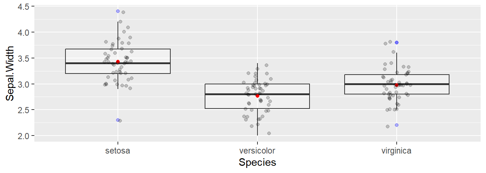
2.7.4 Dos variables categóricas
Podemos resumir dos variables categóricas de esta forma
ggplot(data = diamonds) +
geom_count(mapping = aes(x = cut, y = color))
Otra aproximación sería contar cuántos hay en una categoría con dplyr:
diamonds %>%
count(color, cut)# A tibble: 35 × 3
color cut n
<ord> <ord> <int>
1 D Fair 163
2 D Good 662
3 D Very Good 1513
4 D Premium 1603
5 D Ideal 2834
6 E Fair 224
7 E Good 933
8 E Very Good 2400
9 E Premium 2337
10 E Ideal 3903
# ℹ 25 more rowsy luego visualizarlo con geom_tile() que nos daría un gráfico tipo heatmap
diamonds %>%
count(color, cut) %>%
ggplot(mapping = aes(x = color, y = cut)) +
geom_tile(mapping = aes(fill = n))
2.7.5 Dos variables continuas
ggplot(data = diamonds) +
geom_point(mapping = aes(x = carat, y = price))
Scatterplots se vuelven menos útiles cuando el tamaño del conjunto de datos aumenta porque los puntos coinciden. En ese caso podemos usar la estética alpha:
ggplot(data = diamonds) +
geom_point(mapping = aes(x = carat, y = price),
alpha = 1 / 100)
Otra opción es discretizar una de las variables continuas y usar boxplot()
ggplot(data = diamonds, mapping = aes(x = carat, y = price)) +
geom_boxplot(mapping = aes(group = cut_width(carat, 0.1)))
A veces nos interesa añadir una línea de regresión al gráfico. Exsiten numerosas librerías que extienden las facilidades de ggplot com esta:
library(ggpmisc)
set.seed(1234)
iris <- mutate(iris,
Y = 1.5 + 3.2*Sepal.Width +
rnorm(nrow(iris)))
ggplot(iris, aes(x = Sepal.Width, y = Y)) +
geom_smooth(method = "lm", se=FALSE, color="black",
formula = y ~ x) +
stat_poly_eq(formula = y ~ x,
aes(label = paste(..eq.label.., ..rr.label..,
sep = "~~~")),
parse = TRUE) +
geom_point()
R tiene unas capacidades gráficas excelentes, pero el uso de ggplot hace que éstas sean aún más espectaculares. Imaginemos que queremos comparar la expresión génica según la tasa de crecimiento en 20 genes y seis condiciones1
load("data/genes.Rdata")
genes# A tibble: 711 × 7
name BP MF systematic_name nutrient rate expression
<chr> <chr> <chr> <chr> <chr> <dbl> <dbl>
1 "SUL1" sulfate transport sulfate transport… YBR294W Glucose 0.05 -0.32
2 "" biological process unknown molecular functio… YKL187C Glucose 0.05 4.13
3 "QDR2" multidrug transport multidrug efflux … YIL121W Glucose 0.05 1.07
4 "LEU1" leucine biosynthesis 3-isopropylmalate… YGL009C Glucose 0.05 -1.12
5 "PHO5" phosphate metabolism* acid phosphatase … YBR093C Glucose 0.05 2.39
6 "PHO12" biological process unknown acid phosphatase … YHR215W Glucose 0.05 0.9
7 "PHO11" phosphate metabolism acid phosphatase … YAR071W Glucose 0.05 1.14
8 "GIT1" glycerophosphodiester transport glycerophosphodie… YCR098C Glucose 0.05 0.77
9 "AGP3" amino acid transport amino acid transp… YFL055W Glucose 0.05 0.57
10 "" biological process unknown molecular functio… YOL164W Glucose 0.05 0.53
# ℹ 701 more rowsEste tendría que ser el (largo) código para hacer este gráfico usando funciones básicas de R (el aspecto del gráfico es mejorable y la sintaxis de R ilegible)
par(mar = c(1.5, 1.5, 1.5, 1.5))
colors <- 1:6
names(colors) <- unique(genes$nutrient)
m <- matrix(c(1:20, 21, 21, 21, 21), nrow = 6,
ncol = 4, byrow = TRUE)
layout(mat = m, heights = c(.18, .18, .18, .18, .18, .1))
genes$combined <- paste(genes$name, genes$systematic_name)
for (gene in unique(genes$combined)) {
sub_data <- filter(genes, combined == gene)
plot(expression ~ rate, sub_data,
col = colors[sub_data$nutrient], main = gene)
for (n in unique(sub_data$nutrient)) {
m <- lm(expression ~ rate,
filter(sub_data, nutrient == n))
if (!is.na(m$coefficients[2])) {
abline(m, col = colors[n])
}
}
}
# create a new plot for legend
plot(1, type = "n", axes = FALSE, xlab = "", ylab = "")
legend("top", names(colors), col = colors, horiz = TRUE, lwd = 4)
Sin embargo con ggplot2 bastaría con
ggplot(genes, aes(rate, expression, color = nutrient)) +
geom_point() +
geom_smooth(method = "lm", se = FALSE) +
facet_wrap(~name + systematic_name, scales = "free_y")
2.7.6 Facets
Faceting es el proceso que en el dividimos la ventana del gráfico en varias partes pequeñas (una cuadrícula) y muestra un gráfico similar en cada sección. Cada sección generalmente muestra el mismo gráfico para un grupo específico del conjunto de datos. Aquí podemos ver cómo llevar a cabo este tipo de gráficos. Utilizaremos una base de datos sobre propinas
data(tips, package="reshape2")
head(tips) total_bill tip sex smoker day time size
1 16.99 1.01 Female No Sun Dinner 2
2 10.34 1.66 Male No Sun Dinner 3
3 21.01 3.50 Male No Sun Dinner 3
4 23.68 3.31 Male No Sun Dinner 2
5 24.59 3.61 Female No Sun Dinner 4
6 25.29 4.71 Male No Sun Dinner 4Imaginemos que queremos representar qué propinas se dan en función del total de la cuenta
sp <- ggplot(tips, aes(x=total_bill, y=tip/total_bill)) +
geom_point()
sp
Ahora nos puede interesar obtener el mismo gráfico para hombres y mujeres. Para ello, podemos hacer el faceting de forma vertical
# vertical direction
sp + facet_grid(sex ~ .)
u horizontal
# horizontal direction
sp + facet_grid(. ~ sex)
también según dos variables
# Divide with "sex" vertical, "day" horizontal
sp + facet_grid(sex ~ day)
En lugar de crear los paneles con una variable en la dirección horizontal o vertical, las gráficas se pueden colocar una al lado de la otra, envolviéndose con un cierto número de columnas o filas. La etiqueta de cada figura estará en la parte superior.
# Divide by day, going horizontally and wrapping with 2 columns
sp + facet_wrap( ~ day, ncol=2)
Podemos cambiar todo lo que queramos. Este es sólo un ejemplo
sp + facet_grid(sex ~ day) +
theme(strip.text.x = element_text(size=8, angle=75),
strip.text.y = element_text(size=12, face="bold"),
strip.background = element_rect(colour="brown",
fill="tomato"))
En este link tenéis la referencia de ggplot2.
2.8 Ejercicios (Visualización de datos)
Visualiza el número de vuelos para cada aerolínia por mes.
Visualiza la distribución de la variabla carat según el precio en el dataset
diamonds.Carga los datos qe están en https://raw.githubusercontent.com/isglobal-brge/Master_Modelling/main/data/genome.txt en tu sesión de RStudio utilizando la función
read_delim(NOTA: los datos están delimitados por tabulaciones - no hace falta bajarlos al ordenador se cargan desde la URL).
El archivo contiene información sobre ~730K variantes genéticas en todo el genoma:
Name: variante genómica (single nucleotide polymorphism)
Chr: cromosoma
Position: posición en el cromosoma
Log.R.Ratio: log-ratio de la intensidad de los dos alelos
B.Allele.Freq: frecuencia del alelo alternativo
- ¿Cuál es el valor esperado (media) de
Log.R.RatioyB.Allel.Freqpara cada cromosoma? (muestra el código de R que usas para obtener dicha información) - Crea un “facet plot” que represente el
Log.R.Ratiopara cada cromosoma - Crea un “facet plot” que represente el
B.Allele.Freqpara los cromosomas 1, 2, 3, …, 6 y pinta la etiquetaB.Allele.Freqen rojo.
- ¿Cuál es el valor esperado (media) de
3 Introducción al Aprendizaje Automático
El aprendizaje automático (AA) (Machine Learning en inglés) es una disciplina científica que suele incluirse en el ámbito de la Inteligencia Artificial (IA) que crea sistemas que aprenden automáticamente. Aprender en este contexto quiere decir identificar patrones complejos en millones de datos. La máquina/ordenador que realmente aprende es un algoritmo que usando datos existentes es capaz de predecir comportamientos futuros. Automáticamente, también en este contexto, implica que estos sistemas se mejoran de forma autónoma con el tiempo, sin intervención humana. En esta figura podemos observar la conexión que hay entre estas áreas y una más reciente conocida como aprendizaje profundo (AP) (Deep Learning en inglés) que veréis en el curso de Aprendizaje Automático 2.

Relación entre AA, AI y AP
La principal diferencia entre estas áreas radica en el objetivo (e.g pregunta científica) que queremos tratar. Así, la IA vendría a representar a un sistema no biológico que es inteligente basándose en reglas. El AA se basa en algoritmos que entrenan modelos usando datos existentes, y el AP se basa en algoritmos que parametriza redes neuronales de múltiples capas que representan los datos mediante diferentes niveles de abstracción.
En la siguiente figura podemos ver la clasificación (de manera muy genérica) de los tipos de AA a los que podemos enfrentarnos

Tipos de Aprendizaje Automático
En estadística, el AA se ha considerado como una ciencia independiente en la que se dispone de un conjunto de herramientas basadas en diferentes métodos y algoritmos que permiten clasificar individuos según una serie de variables. Concer estas técnicas estadísticas es de gran ayuda para la IA y el AP. En este curso estudiaremos estas metodologías en detalle que incluirán:
- Regresión lineal
- Regresión logística
- Regresión lasso (ridge, elastic net)
- Análisis lineal discriminante
- Árboles de clasificación
- KNN
- Random Forest
- Boosting
- XGBoost
y cómo implementar estos algoritmos con funciones eficientes (caret) y escalables (H2O).
4 Regresión lineal
Este capítulo presenta la regresión lineal, el método de regresión paramétrica que usamos cuando la variable de resultado o respuesta es continua. Cuando el resultado es binario, utilizamos la regresión logística, tema de un capítulo posterior.
El contenido de este capítulo ya se introdujo en la asignatura Inferencia Estadística 1, y se vió de forma exhaustiva en la asignatura de Modelos lineales 1 y aquí se hará un breve repaso de los conceptos más importantes y se hará énfasis en la interpretación práctica de los conceptos aprendidos.
Qué pretendemos aprender en este capítulo:
- Entender qué pretende y cuándo se usa la regresión lineal
- Cómo estimar los parámetros de un modelo de regresión
- Familiarizarnos con algunas medidas usadas en la regresión lineal para valorar la utilidad del modelo
- Tener una idea de otros aspectos a tener encuenta para estos modelos (suposiciones del modelo, colinealidad, valores atípicos, …)
Existen numerosos recursos en la red para complementar este curso. Aquí tenéis algunos tutoriales/cursos en Datacamp:
– [DataCamp: Correlación y regresión] (https://www.datacamp.com/courses/correlation-and-regression)
– [DataCamp: Intro to Statistics with R: Correlation and Linear Regression] (https://www.datacamp.com/courses/intro-to-statistics-with-r-correlation-and-linear-regression)
– [Intro to Statistics with R: Multiple Regression] (https://www.datacamp.com/courses/intro-to-statistics-with-r-multiple-regression)
4.1 Preliminares
¿Qué son los modelos? Los modelos simplifican la realidad con fines de comprensión o predicción. Si bien pueden ser herramientas poderosas, debemos tener en cuenta que, después de todo, no son la realidad. En consecuencia, como se dice que dijo el estadístico George Box, “Todos los modelos son incorrectos, pero algunos son útiles”.
En términos generales, el modelado estadístico tiene estos dos objetivos a veces divergentes:
Descripción: usar un modelo para describir la relación entre una variable de resultado de interés y una o más variables predictoras.
Predicción: uso de un modelo para predecir instancias desconocidas de la variable de resultado de manera que se minimice el error predictivo fuera de la muestra.
En el modelado, es posible centrarse en la descripción e ignorar la predicción, y viceversa. Por ejemplo, muchos algoritmos de aprendizaje automático son cajas negras: crean modelos que hacen un buen trabajo de predicción, pero son difíciles, si no imposibles, de interpretar y, en consecuencia, a menudo no nos ayudan a comprender las relaciones entre variables. La regresión lineal puede no ser la técnica más sofisticada, pero si se usa correctamente, su precisión predictiva compara bien con otros algoritmos más avanzados que veremos en este curso. Además, ofrece información descriptiva, en forma de coeficientes para cada variable, que son de gran utilida. La regresión lineal hace un buen trabajo con tanto descripción como predicción. En este capítulo aprenderemos estos usos de la regresión lineal.
4.2 Conceptos básicos
Comencemos por presentar brevemente el modelo lineal junto con algunos de los conceptos y terminología que usaremos a lo largo del curso.
Un modelo lineal es paramétrico porque asumimos que la relación entre dos variables es lineal y puede ser definida por los parámetros de una recta (el intercept y la pendiente). Comenzaremos considerando un modelo lineal simple. En la siguiente figura podemos observar cómo existe una relación lineal entre la dosis de chocolate consumida y el nivel de felicidad reportado por una muestra de individuos seleccionados al azar en una población de Barcelona. Los puntos negros muestran los datos observados para cada individuo y los blancos representan a la felicidad que tendría cada individuo según la dosis de chocolate que reporta tomar.

Regresión lineal simple
4.2.1 Modelo lineal simple
Un modelo lineal simple tiene un resultado (outcome, variable predictiva - en nuestro ejemplo la felicidad), \(y\), y un predictor, \(x\) (el consumo de chocolate en nuestro ejemplo). Está definido por la siguiente ecuación.
\[ y_i = \beta_0 + \beta_1x_i + \epsilon_i, \]
donde \(i = 1, \ldots, n.\)
El subíndice en esta ecuación, \(i\), indexa las observaciones \(n\) en el conjunto de datos. (Pensemos en \(i\) como un número de fila que corresponde a los datos de un individuo). La ecuación se puede leer de la siguiente manera: el valor de la \(i\)-ésima variable resultado, \(y_i\), está definido por una intercept, \(\beta_0\), más una pendiente, \(\beta_1\), multiplicada por la variable predictora \(i\)-ésima, \(x_i\). Estos elementos definen la parte sistemática o determinista del modelo. Sin embargo, debido a que el mundo es incierto y contiene aleatoriedad, sabemos que el modelo será incorrecto (estará sujeto a error). Para describir completamente los datos, necesitamos un término de error, \(\epsilon_i\), que también está indexado por fila. El término de error es la parte estocástica o aleatoria del modelo. \(\epsilon_i\) mide la distancia entre los valores ajustados o esperados del modelo — calculados a partir de la parte determinista del modelo — y los valores reales. Los errores en un modelo lineal, también conocidos como residuales del modelo, son la parte de los datos que permanece sin explicar por la parte determinista del modelo. Uno de los supuestos clave de un modelo lineal es que los residuos se distribuyen normalmente con media = 0 y varianza = \(\sigma^2\), que denotamos, en notación matricial, como \(N (0, \sigma ^ 2)\).
4.2.2 Regresión lineal multivariante
Podemos agregar predictores adicionales, \(p\), a un modelo lineal simple, convirtiéndolo en un modelo lineal multivariante, que definimos de la siguiente manera:
\[ y_i = \beta_0 + \beta_1 x_ {i1} + \cdots + \beta_p x_ {ip} + \varepsilon_i, \]
donde \(i = 1, \ldots, n\) y \(p = 1, \ldots, p.\) En esta ecuación \(y_i\) es nuevamente la variable resultado \(i\)-ésima, \(\beta_0\) es la intercept, \(\beta_1\) es el coeficiente de la primera variable predictora, \(x_{1}\), \(\beta_p\) es el coeficiente de la variable predictora \(p\)-ésima, \(x_{p}\), y \(\epsilon_i\) representa la parte estocástica del modelo, los residuos, indexados por fila. La parte determinista del modelo se puede resumir como \(X \beta\), una matriz \(p\) x \(n\), que llamaremos el “predictor lineal”.
4.2.3 Incertidumbre
La incertidumbre es intrínseca al modelado estadístico. Distinguimos entre Incertidumbre de estimación e Incertidumbre fundamental :
La incertidumbre de la estimación se deriva del desconocimiento de los parámetros \(\beta\). Disminuye a medida que \(n\) aumenta y los \(SE\)s se reducen.
La incertidumbre fundamental se deriva del componente estocástico del modelo, \(\epsilon\). Existe sin importar lo que haga el investigador, sin importar como de grande sea el tamaño muestral \(n\). Podemos reducir la incertidumbre fundamental con predictores elegidos inteligentemente, pero nunca podremos eliminarla.
4.3 Ajuste de un modelo lineal
Para ajustar un modelo lineal usamos la función lm(). (La función glm() también se ajusta a un modelo lineal por defecto, definido por family = gaussian. También usaremosglm() para ajustar una regresión logística, confamily = binomial). Por ejemplo, usemos el conjunto de dataos mtcars para averiguar si el consumo de combustible (mpg) está correlacionado con el peso del coche (wt). En R deberíamos ejecutar:
data(mtcars)
(simple_model <- lm(mpg ~ wt, data = mtcars))
Call:
lm(formula = mpg ~ wt, data = mtcars)
Coefficients:
(Intercept) wt
37.285 -5.344 La ecuación del modelo es: \(\widehat {mpg} = 37.285 - 5.344wt\). (La notación del sombrero, \(\widehat {mpg}\), significa “estimación de”). Sin embargo, con el término de error incluido, ya no estamos estimando mpg sino describiéndolo exactamente: \(mpg = 37.285 - 5.344wt + error\) (Por lo tanto, no hay notación de sombrero). Los componentes del modelo se pueden extraer del objeto del modelo usando adjust(), o, de manera equivalente en este caso, predict() y residuals():
mtcars_new <- mtcars %>%
mutate(cars = rownames(mtcars),
fitted = fitted(simple_model),
residuals = residuals(simple_model)) %>%
dplyr::select(cars, mpg, wt, fitted, residuals)
head(mtcars_new) cars mpg wt fitted residuals
Mazda RX4 Mazda RX4 21.0 2.620 23.28261 -2.2826106
Mazda RX4 Wag Mazda RX4 Wag 21.0 2.875 21.91977 -0.9197704
Datsun 710 Datsun 710 22.8 2.320 24.88595 -2.0859521
Hornet 4 Drive Hornet 4 Drive 21.4 3.215 20.10265 1.2973499
Hornet Sportabout Hornet Sportabout 18.7 3.440 18.90014 -0.2001440
Valiant Valiant 18.1 3.460 18.79325 -0.6932545El modelo se puede utilizar para calcular valores ajustados para coches individuales en el conjunto de datos. Por ejemplo, el valor ajustado para el Mazda RX4, \(\widehat {mpg_1}\), se puede derivar de la ecuación del modelo, \(\beta_0 + \beta_1 x_ {i1}\): 37.29 - 5.34 x 2.62 = 23.28. (El valor real del Mazda RX4, calculado a partir del modelo, sería: 37.29 - 5.34 x 2.62 + 2.28 = 21). El modelo también se puede utilizar para la predicción. ¿Cuál sería el mpg para un coche que pesa 5000 libras? Según el modelo: 37,29 - 5,34 x 5 = 10.56.
4.3.1 Residuos
Los residuales del modelo — representados por los segmentos de línea vertical en el gráfico siguiente — son las diferencias entre los valores ajustados y reales de mpg.
ggplot(mtcars_new, aes(x = wt, y = mpg)) +
geom_smooth(method = "lm", se = FALSE, color = "lightgrey") +
geom_segment(aes(xend = wt, yend = fitted), alpha = .2) +
geom_point() +
geom_point(aes(y = fitted), shape = 1) +
ggtitle("Residuales del modelo para mpg ~ wt")
Podemos resumir los residuos con una medida llamada suma de cuadrados residual (RSS), que se calcula restando los resultados reales, \(y_i\), de los valores ajustados, \(\hat {y} _i\), elevando al cuadrado esas diferencias, luego sumando los cuadrados.
\[ \operatorname {RSS} = \sum_ {i = 1} ^ n ((\beta_0 + \beta_1x_i) - y_i) ^ 2 = \sum_{i = 1}^n(\hat {y} _i - y_i) ^ 2 \]
Al resumir los errores del modelo, RSS nos permite cuantificar el rendimiento del modelo con un solo número:
rss <- function(fitted, actual){
sum((fitted - actual)^2)
}
rss(fitted(simple_model), mtcars$mpg)[1] 278.32194.3.2 Interpretación de coeficientes
¿Cómo interpretamos la salida de la función lm()? Comencemos con el modelo simple de mpg.
- intercept: 37.29 representa el valor predicho de mpg cuando wt es 0. Dado que wt no puede ser igual a 0. El intercept no es interpretable en este modelo. Para hacerlo interpretable, necesitamos centrar la variable wt en 0, lo que podemos hacer fácilmente restando la media de wt de cada observación (\(x_ {centrado} = x - \ bar {x}\)). Esta es una transformación lineal que cambiará la escala del predictor y, por lo tanto, \(\beta_0\) también, pero no el ajuste del modelo: \(\beta_1\) permanecerá igual (-5,34) al igual que RSS (278,32). Después de la transformación, el peso promedio del coche es 0 y el intercept representa las millas por galón pronosticadas para coches de peso promedio.
mtcars$wt_centered <- mtcars$wt - mean(mtcars$wt)
(simple_model <- lm(mpg ~ wt_centered, data = mtcars))
Call:
lm(formula = mpg ~ wt_centered, data = mtcars)
Coefficients:
(Intercept) wt_centered
20.091 -5.344 rss(fitted(simple_model), mtcars$mpg)[1] 278.3219Ahora el intercept, 20.09, es significativa y representa el valor predicho de mpg cuando wt_centered es 0 — es decir, cuando wt es promedio.
Hay dos formas de interpretar los coeficientes de las variables en un modelo lineal:
Contrafactual: el coeficiente representa el cambio predicho en el resultado asociado con un aumento de 1 unidad en el predictor, mientras se mantienen constantes los demás predictores (en el caso multivariable).
Predictivo: el coeficiente representa la diferencia pronosticada en el resultado entre dos grupos que difieren en 1 unidad en el predictor, mientras se mantienen constantes los otros predictores.
Normalmente los coeficientes del modelo se suelen interpretar de acuerdo con el paradigma contrafáctico. Por lo tanto,
- wt_centered: -5.34 representa el cambio previsto en el resultado, mpg, asociado con un aumento de 1 unidad en wt_centered.
Agreguemos un segundo predictor al modelo, una versión binaria de caballos de fuerza (hp_bin), que definiremos como 0 para valores de hp que están por debajo del promedio y 1 para valores mayores o iguales que el promedio.
mtcars$hp_bin <- ifelse(mtcars$hp < mean(mtcars$hp), 0, 1)
(multivariable_model <- lm(mpg ~ wt_centered + hp_bin , data = mtcars))
Call:
lm(formula = mpg ~ wt_centered + hp_bin, data = mtcars)
Coefficients:
(Intercept) wt_centered hp_bin
21.649 -4.168 -3.324 rss(fitted(multivariable_model), mtcars$mpg)[1] 231.3121Este modelo multivariante es una mejora con respecto al modelo simple ya que tiene un RSS menor.
intercept: 21,65 representa el mpg predicho cuando los predictores continuos o binarios son iguales a 0 o (no aplicable en este caso) cuando las variables de los factores están en su nivel de referencia. El intercept es el mpg pronosticado por el modelo para autos de peso promedio que tienen caballos de fuerza por debajo del promedio.
wt_centered: -4,17 representa el cambio previsto en mpg asociado con un aumento de 1 unidad en wt_centered (digamos, de 1 a 2) mientras se mantiene constante el otro predictor, hp_bin. Los coeficientes de regresión multivariable capturan cómo el resultado varía de manera única con un predictor dado, después de tener en cuenta los efectos de todos los demás predictores. En la práctica, esto significa que el coeficiente que describe la relación entre mpg y wt_centrado se ha promediado en los niveles hp_bin, por lo que es igual en cada nivel de hp_bin.
hp_bin: -3.32 representa el cambio previsto en mpg asociado con un aumento de 1 unidad en hp_bin (de 0 a 1) mientras se mantiene constante el otro predictor, wt_centered.
4.3.3 Interacciones
Podemos agregar una interacción a este modelo. A menudo, la relación entre un predictor y un resultado puede depender del nivel de otra variable predictiva. Por ejemplo, la pendiente de la recta de regresión que define la relación entre wt_centrado y mpg puede variar con los niveles de hp_bin. Si es así, decimos que existe una interacción entre wt_centered y hp_bin al predecir mpg. Para incluir una interacción entre dos variables en la fórmula del modelo, simplemente reemplazamos “+” por “*” en la fórmula del modelo. Esta fórmula, mpg ~ wt_centered * hp_bin, es exactamente equivalente a mpg ~ wt_centered + wt_centered * hp_bin, o a mpg ~ wt_centered + hp_bin + wt_centered*hp_bin ya que lm () agrega automáticamente el efecto principal junto con la interacción. También se puede usar “:” para el término exacto de la interacción `mpg ~ wt_centered + hp_bin + wt_centered:hp_bin. Por “efecto principal” nos referimos a los términos que interactúan entre si. En este modelo, el efecto de interacción es wt_centered:hp_bin, mientras que wt_centered y hp_bin por sí mismos son los efectos principales.
(multivariable_model <- lm(mpg ~ wt_centered * hp_bin, data = mtcars))
Call:
lm(formula = mpg ~ wt_centered * hp_bin, data = mtcars)
Coefficients:
(Intercept) wt_centered hp_bin wt_centered:hp_bin
20.276 -6.391 -3.163 3.953 rss(fitted(multivariable_model), mtcars$mpg)[1] 170.3792RSS mejora una vez más.
Las interacciones pueden ser difíciles de interpretar es por ello que la visualización ayuda a comprender qué está sucediendo.
ggplot(mtcars, aes(wt_centered, mpg, col = factor(hp_bin), group = factor(hp_bin))) +
geom_point() +
stat_smooth(method="lm", se = F) +
ggtitle("mpg ~ wt_centered * hp_bin")
Podemos ver que la relación entre wt y mpg depende de los niveles de hp_bin: las pendientes de las rectas de regresión difieren. Las rectas de regresión no paralelas indican la presencia de una interacción. Observamos una relación más fuerte entre el peso y las millas por galón entre los autos con caballos de fuerza por debajo del promedio (una relación negativa más fuerte) que entre los autos con más caballos de fuerza. Las rectas de regresión para hp_bin se vuelven más planas a medida que aumenta wt_centrado.
NOTA: la presencia de una interacción cambia la interpretación de los efectos principales. En un modelo sin interacción, los efectos principales son independientes de los valores particulares de los otros predictores. Por el contrario, una interacción hace que los efectos principales dependan de valores particulares de los otros predictores.
wt_centered:hp_bin: 3.95 representa la diferencia en la pendiente de wt_centered para hp_bin = 1 en comparación con hp_bin = 0. En otras palabras, cuando aumentamos hp_bin de 0 a 1, se predice que la pendiente de la rectas de regresión para wt_centered aumentar en 3,95. O, cuando aumentamos wt_centrado en 1, se predice que la rectas de regresión para hp_bin aumentará en 3,95.
wt_centered: -6.39 representa el cambio predicho en mpg asociado con un aumento de 1 unidad en wt entre aquellos coches donde hp_bin = 0.
hp_bin: -3.16 representa el cambio previsto en mpg asociado con un aumento de 1 unidad en hp_bin de 0 a 1 entre los coches con wt_centered = 0 (promedio).
Puede resultar instructivo ver qué está haciendo lm () en segundo plano para ajustarse a este modelo. El comando model.matrix () muestra cómo se ha reformateado la matriz del predictor para la regresión:
head(model.matrix(multivariable_model)) (Intercept) wt_centered hp_bin wt_centered:hp_bin
Mazda RX4 1 -0.59725 0 0.00000
Mazda RX4 Wag 1 -0.34225 0 0.00000
Datsun 710 1 -0.89725 0 0.00000
Hornet 4 Drive 1 -0.00225 0 0.00000
Hornet Sportabout 1 0.22275 1 0.22275
Valiant 1 0.24275 0 0.00000El intercept es un vector de 1s. El vector para el término de interacción, wt_centered: hp_bin, consiste simplemente en el producto de los dos vectores con las componentes de cada variable
4.4 Estimación por mínimos cuadrados
Para el modelo \(y = X \beta + \epsilon\), donde \(\beta\) es el vector de coeficientes ajustados y $$ es el vector de residuos del modelo, la estimación de mínimos cuadrados es \(\hat {\beta}\) que minimiza RSS para los datos dados \(X, y\). Podemos expresar la estimación de mínimos cuadrados como \(\ hat {\beta} = (X'X) ^ {- 1} X'y\), donde \(X'\) es la transposición de la matriz de \(X\). A continuación podemos ver cómo se deriva esta fórmula2
\[ RSS = \epsilon ^ 2 = (y - X \beta) '(y - X \beta) \]
\[ RSS = y'y - y'X \beta - \beta'X'y + \beta'X'X \beta \]
\[ RSS = y'y - (2y'X) \beta + \beta '(X'X) \beta \]
Según apunta el autor: “Aunque la multiplicación de matrices generalmente no es conmutativa, cada producto [arriba] es 1 x 1, por lo que \(y'X \beta = \beta'X'y\)”.
Para minimizar RSS encontramos la derivada parcial con respecto a \(\beta\):
\[ \frac{\partial RSS}{\partial\beta}= 0 - 2X'y + 2X'X\beta \]
Establecemos esta derivada igual a 0 y resolvemos $$:
\[ X'X \beta = X'y \]
\[ \beta = (X'X) ^ {- 1} X'y \]
Podemos usar esta ecuación y la matriz del modelo para el modelo multivariable para estimar \(\hat{\beta}\) para mpg ~ wt_centered * hp_bin + hp_centered:
X <- model.matrix(multivariable_model)
y <- mtcars$mpg
solve(t(X) %*% X) %*% t(X) %*% y [,1]
(Intercept) 20.276155
wt_centered -6.390834
hp_bin -3.162983
wt_centered:hp_bin 3.953027Este método devuelve las mismas estimaciones de coeficientes que lm ().
4.5 Medidas adicionales de ajuste del modelo
Como hemos visto, RSS nos permite comparar qué tan bien se ajustan los modelos a los datos. Una medida relacionada es la raíz del error cuadrático medio (RMSE por sus siglas en inglés), la raíz cuadrada del promedio de los errores cuadráticos:
\[ \operatorname{RMSE}= \sqrt{\frac{\sum_{i=1}^n ((\beta_0 + \beta_1x_i) - y_i)^2}{n}} \]
\[ = \sqrt{\frac{\sum_{i=1}^n (\hat{y}_i - y_i)^2}{n}} \]
Lo bueno de RMSE es que, a diferencia de RSS, devuelve un valor que está en la escala del variable resultado.
rss(fitted(multivariable_model), mtcars$mpg)[1] 170.3792rmse <- function(fitted, actual){
sqrt(mean((fitted - actual)^2))
}
rmse(fitted(multivariable_model), mtcars$mpg)[1] 2.307455En promedio, entonces, este modelo tiene una diferencia de aproximadamente 2.31 mpg por cada coche.
\(R^2\) es otra medida de ajuste del modelo que es conveniente porque es una medida estandarizada — escalada entre 0 y 1 — y, por lo tanto, es comparable en todos los contextos.
\[ R^2 = 1 - \frac{SS_\text{resid}}{SS_\text{tot}}, \]
donde \(SS_\text{tot} = \sum_i (y_i- \bar{y}) ^ 2\) y \(SS_\text{res} = \sum_i (y_i - \hat {y} _i) ^ 2\). En resumen: \(R^2\) representa la variación en la variable de resultado explicada por el modelo como una proporción de la variación total. En la gráfica de abajo, el panel de la izquierda, TSS, sirve como denominador para calcular \(R^2\), y el panel de la derecha, RSS, es el numerador.
require(gridExtra)
mtcars$mean <- mean(mtcars$mpg)
plot1 <- ggplot(mtcars, aes(wt, mpg)) +
geom_hline(yintercept=mean(mtcars$mpg), col = 2) +
geom_segment(aes(xend = wt, yend = mean), alpha = .2) + geom_point() +
ggtitle(paste("Total Sum of Squares (TSS) \n",tss))
plot2 <- ggplot(mtcars, aes(wt, mpg)) +
geom_smooth(method = "lm", se = FALSE, col=2) +
geom_segment(aes(xend = wt, yend = fitted(lm(mpg~wt, data=mtcars))), alpha = .2) +
geom_point() +
ggtitle(paste("Residual Sum of Squares (RSS) \n",rss))
grid.arrange(plot1, plot2, ncol=2)
Para nuestro modelo lineal simple, mpg ~ wt, \(R^2\) era de .75, que coincide con nuestro cálculo aquí: 1 - 278/1126 = .75. Esto significa que wt explica el 75% de la variación total en mpg. Cuanto mejor se ajusta la regresión lineal a los datos en comparación con el promedio simple, más se acerca el valor de \(R^2\) a 1. Para la regresión lineal simple, \(R^2\) es como la correlación al cuadrado entre el resultado y el predictor.
cor(mtcars$mpg, mtcars$wt)^2[1] 0.7528328Un problema con el \(R^2\) es que agregar variables al modelo tiende a mejorarlo aunque las nuevas variables no sean relevantes. Añadir más variables puede conducir a un sobreajuste. Se ha desarrollado una variante de \(R^2\) que penaliza la medida para predictores adicionales: \(R^2\)ajustados.
\[ \bar R^2 = {1-(1-R^2){n-1 \over n-p-1}} \bar R^2 = {R^2-(1-R^2){p \over n-p-1}}, \]
donde \(n\) es el número de observaciones en el conjunto de datos y \(p\) es el número de predictores en el modelo. Es fácil calcular este resultado utilizando la función summary()
summary(multivariable_model)
Call:
lm(formula = mpg ~ wt_centered * hp_bin, data = mtcars)
Residuals:
Min 1Q Median 3Q Max
-3.5837 -1.4371 -0.8214 1.4517 5.6228
Coefficients:
Estimate Std. Error t value Pr(>|t|)
(Intercept) 20.2762 0.8323 24.363 < 2e-16 ***
wt_centered -6.3908 0.9367 -6.823 2.06e-07 ***
hp_bin -3.1630 1.1971 -2.642 0.01333 *
wt_centered:hp_bin 3.9530 1.2492 3.164 0.00373 **
---
Signif. codes: 0 '***' 0.001 '**' 0.01 '*' 0.05 '.' 0.1 ' ' 1
Residual standard error: 2.467 on 28 degrees of freedom
Multiple R-squared: 0.8487, Adjusted R-squared: 0.8325
F-statistic: 52.35 on 3 and 28 DF, p-value: 1.324e-11En este caso \(\bar R^2=0.8325\) lo que indica que nuestro modelo explica un 83.25% de la variabilidad observada de la variable ‘mpg’.
4.6 Sesgo, variación, sobreajuste
¿Qué entendemos por “sobreajuste”? Los siguientes son conceptos clave para pensar en el rendimiento del modelo, a los que volveremos a lo largo del curso:
Rendimiento en la muestra: cómo se comporta el modelo en los datos que se utilizaron para construirlo.
Rendimiento fuera de la muestra: cómo se comporta el modelo cuando encuentra nuevos datos.
Si el modelo funciona mejor dentro de la muestra que fuera de la muestra, entonces decimos que el modelo sobreajusta los datos de la muestra o de entrenamiento.
El sobreajuste ocurre cuando un modelo se ajusta a la muestra demasiado bien: el modelo ha sido optimizado para capturar las idiosincrasias — el ruido aleatorio — de la muestra.
Sesgo se refiere a una alta precisión predictiva en la muestra. El sesgo bajo es bueno.
Varianza se refiere a una mayor precisión predictiva dentro de la muestra que fuera de la muestra. La varianza baja es buena.
Un modelo que sobreajusta tiene un sesgo bajo y una gran varianza.
La compensación de sesgo-varianza se refiere a la idea de que no se puede tener un sesgo bajo y una varianza baja a la vez.
Nos protegeremos contra — o evaluaremos la cantidad de — sobreajuste usando una técnica llamada validación cruzada que veremos más adelante.
4.7 Regresión como estimación de una media condicional
Dadas las complejidades anteriores, se podría pensar que el uso de la regresión lineal sólo es útil para nada más (¡y nada menos!) estimar una media condicional. Pero, ¿qué es una media condicional?
Consideremos el siguiente ejemplo. En 2011 se inició un programa de uso compartido de bicicletas en USA y se recopilaron datos durante 2011 y 2012 sobre el uso estacional de bicicletas y las condiciones climáticas. Estos datos se encuentran recogidos en el fichero day.csv. La variable de resultado que nos interesa es “count”— el número total de ciclistas que alquilan bicicletas en un día determinado. El conjunto de datos tiene una fila para cada día, con variables para (entre otras) estación, año, mes, feriado, día de la semana, temperatura, temperatura percibida, humedad y velocidad del viento (nombradas en inglés).
day <- read.csv("data/day.csv")
day <- day %>%
dplyr::select(count = cnt,
season,
year= yr,
month = mnth,
holiday,
weekday,
temperature = temp,
atemp,
humidity = hum,
windspeed)glimpse(day)Rows: 731
Columns: 10
$ count <int> 985, 801, 1349, 1562, 1600, 1606, 1510, 959, 822, 1321, 1263, 1162, 1406, 1421, 1…
$ season <int> 1, 1, 1, 1, 1, 1, 1, 1, 1, 1, 1, 1, 1, 1, 1, 1, 1, 1, 1, 1, 1, 1, 1, 1, 1, 1, 1, …
$ year <int> 0, 0, 0, 0, 0, 0, 0, 0, 0, 0, 0, 0, 0, 0, 0, 0, 0, 0, 0, 0, 0, 0, 0, 0, 0, 0, 0, …
$ month <int> 1, 1, 1, 1, 1, 1, 1, 1, 1, 1, 1, 1, 1, 1, 1, 1, 1, 1, 1, 1, 1, 1, 1, 1, 1, 1, 1, …
$ holiday <int> 0, 0, 0, 0, 0, 0, 0, 0, 0, 0, 0, 0, 0, 0, 0, 0, 1, 0, 0, 0, 0, 0, 0, 0, 0, 0, 0, …
$ weekday <int> 6, 0, 1, 2, 3, 4, 5, 6, 0, 1, 2, 3, 4, 5, 6, 0, 1, 2, 3, 4, 5, 6, 0, 1, 2, 3, 4, …
$ temperature <dbl> 0.3441670, 0.3634780, 0.1963640, 0.2000000, 0.2269570, 0.2043480, 0.1965220, 0.16…
$ atemp <dbl> 0.3636250, 0.3537390, 0.1894050, 0.2121220, 0.2292700, 0.2332090, 0.2088390, 0.16…
$ humidity <dbl> 0.805833, 0.696087, 0.437273, 0.590435, 0.436957, 0.518261, 0.498696, 0.535833, 0…
$ windspeed <dbl> 0.1604460, 0.2485390, 0.2483090, 0.1602960, 0.1869000, 0.0895652, 0.1687260, 0.26…Una pregunta exploratoria inicial es: ¿cómo varía el uso de la bicicleta por año? Podemos responder a esta pregunta simplemente calculando un promedio para cada año:
day %>%
mutate(year = ifelse(year == 0, 2011, 2012)) %>%
group_by(year) %>%
dplyr::summarize(`average ridership` = round(mean(count)))# A tibble: 2 × 2
year `average ridership`
<dbl> <dbl>
1 2011 3406
2 2012 5600El número de pasajeros promedio en este resumen representa una media condicional: la media de la variable de recuento, condicional al año. ¿Qué nos dice la regresión lineal sobre el promedio de pasajeros (riders) por año?
lm(count ~ year, data = day)
Call:
lm(formula = count ~ year, data = day)
Coefficients:
(Intercept) year
3406 2194 La salida del modelo incluye un intercept y un coeficiente para el año. El intercept es el promedio de la variable de resultado cuando los predictores numéricos son iguales a cero. Por lo tanto, 3406 es el número de pasajeros promedio cuando año = 0 (es decir, 2011), y el coeficiente para el año, 2194, es el aumento esperado en el número de pasajeros asociado con un aumento de 1 unidad en el año (es decir, cuando el año pasa de 0 a 1 ). Por lo tanto, el número promedio de pasajeros en el año 1 (2012) es solo la suma de los dos coeficientes — 3406 + 2194 = 5600 — que es idéntica a la media condicional para 2012 que calculamos anteriormente usandodplyr .
En general, dadas dos variables aleatorias, X e Y (piense: año y número de pasajeros), podemos definir la media condicional como el valor esperado o promedio de Y dado que X está restringido a tener un valor específico, \(x\), a partir de su rango: \(\mathbf {E} [Y \mid X = x]\). Ejemplo: \(\mathbf{E} [Ridership \mid Year = 2012]\) es el número promedio de pasajeros dado ese año = 2012. Una media condicional tiene un valor descriptivo — sabemos que el coeficiente \(\beta\) para el año de nuestro modelo, 2194, representa la relación entre el número de pasajeros y el año, con la magnitud o el valor absoluto del coeficiente que indica la fuerza de la relación, positiva o negativa. Los coeficientes también se pueden utilizar para la predicción. ¿Cuántos ciclistas más deberíamos esperar en 2013? Utilice el modelo: \(\mathbf {E} [riders \mid year = 2013]\) es igual al número en 2012, 5600, más el coeficiente del año: 5600 + 2194 = 7794.
El modelo nos permite predecir, pero debemos recordar que no hay nada mágico en la predicción. Deberíamos pensar críticamente al respecto. Por un lado, asume una tendencia constante año tras año. ¿Es esta una suposición razonable?
4.8 La función de regresión
Consideremos la cantidad media de pasajeros condicionada a la temperatura (que en este conjunto de datos se ha normalizado y convertido a grados Celsius). Podemos definir una función que devolverá la media condicional. Para cualquier temperatura, \(t\), defina \(\mu (t) = \mathbf {E} [Riders \mid Temperature = t]\), que es el número medio de pasajeros cuando temperatura = \(t\). Dado que podemos variar \(t\), esto es de hecho una función, y se conoce como la función de regresión que relaciona a los pasajeros con la temperatura. Por ejemplo, \(\mu\) (.68) es el número medio de pasajeros cuando \(t\)= .68 y \(\mu\) (.05)es el número medio de pasajeros cuando \(t\)= .05, etc.
Debemos tener en cuenta que el valor real de \(\mu\) (.68) se desconoce porque es un valor de población. Existe, pero no en nuestra muestra. Entonces, nuestra estimación, \(\hat {\ mu}\) (. 68), debe basarse en los pares de Riders-Temperature que tenemos en nuestros datos: \((r_ {1}, t_ {1}), ..., ( r_ {731}, t_ {731})\). ¿Cómo podemos hacer esto exactamente? Un enfoque sería simplemente calcular las medias condicionales relevantes a partir de nuestros datos. Para encontrar \(\hat {\mu} (t)\) usando este método, simplificaremos los datos redondeando la temperatura a dos lugares decimales.
day %>%
group_by(temperature = round(temperature, 2)) %>%
dplyr::summarize(mean = round(mean(count))) # A tibble: 77 × 2
temperature mean
<dbl> <dbl>
1 0.06 981
2 0.1 1201
3 0.11 2368
4 0.13 1567
5 0.14 1180
6 0.15 1778
7 0.16 1441
8 0.17 1509
9 0.18 1597
10 0.19 2049
# ℹ 67 more rowsSin embargo, se puede observar que faltan valores en la secuencia. Aquí hay un gráfico que muestra las brechas en los datos.
day %>%
group_by(temperature = round(temperature, 2)) %>%
dplyr::summarize(mean = round(mean(count))) %>%
dplyr::right_join(data.frame(temperature=seq(.01, .9, .01)), by = "temperature") %>%
ggplot(aes(temperature, mean)) +
geom_line() +
ggtitle("Estimated mean daily riders (with missing observations)") +
labs(x = "temperature", y = "mean riders")
Este enfoque para estimar la función de regresión, \(\hat{\mu} (t)\) tendrá problemas cuando, por ejemplo, queremos predecir el número de pasajeros a una temperatura para la que no tenemos datos.
Usar medias condicionales para estimar \(\hat {\mu} (t)\) es un enfoque no paramétrico. Es decir, no asumimos nada sobre la forma de la función desconocida \(\mu(t)\) si se trazara en un gráfico, sino que simplemente la estimamos directamente a partir de nuestros datos. La regresión de K-vecinos más cercanos (KNN) es una generalización de este enfoque no paramétrico. Este tipo de regresión es muy útil cuando queremos describir cuál es la relación entre nuestros datos sin asumir que dicha relación es lineal (que puede que sea el caso).
Debemos tener en cuenta que podríamos hacer algunas suposiciones sobre esa forma, posiblemente mejorando nuestras estimaciones, lo que haría que nuestro enfoque sea paramétrico, como en el caso de la regresión lineal.
4.9 Estimación no paramétrica de la función de regresión: regresión KNN
A veces no es posible calcular buenas medias condicionales para el resultado debido a la falta de valores de predicción. Supongamos que queremos encontrar \(\hat{\mu} (. 12)\). Resulta que no hubo días en nuestro conjunto de datos en los que la temperatura fuera de .12. El algoritmo KNN resuelve este problema usando las \(k\) observaciones más cercanas a \(t\)= .12 para calcular la media condicional, \(\hat {\mu} (. 12)\). Si definimos \(k\)= 4, entonces tomaríamos los cuatro valores más cercanos a .12 en el conjunto de datos — .1275, .134783, .138333, .1075. (“Más cercano” en este caso se define como la distancia euclidiana, que en un espacio unidimensional, una recta numérica, es simplemente: \(\sqrt {(xy) ^ 2}\).) Estos \(k\)= 4 valores más cercanos se usarían para calcular \(\hat{\mu} (. 12)\) calculando el promedio.
Establecer el valor de \(k\) es obviamente una decisión crítica. Si usamos \(k\)= 100, por ejemplo, nuestras estimaciones podrían no ser muy buenas. Y quizás \(k\)= 4 sea demasiado bajo — podría llevar a un sobreajuste. En el caso de \(k\)= 4, el error dentro de la muestra (sesgo) puede ser bajo, pero el error al predecir nuevas observaciones (varianza) puede ser alto.
Aquí, por ejemplo, hay una gráfica de los valores ajustados de un modelo KNN de la temperatura de los pasajeros cuando \(k\)= 4.

El sesgo en este modelo es presumiblemente bajo porque el ajuste es muy flexible: los valores ajustados están muy cerca de los valores reales. El problema es que la función de regresión KNN en \(k\)= 4 podría estar haciendo demasiado buen trabajo al describir la muestra. Cuando este modelo encuentra nuevos datos, sin las mismas idiosincrasias, su rendimiento puede ser muy pobre, con una gran variación. Es posible que el modelo esté sobre-ajustado a la muestra. La compensación de sesgo-varianza expresa esta idea: cuando el sesgo es bajo, es probable que la varianza sea alta, y viceversa.
A continuación se muestra un ejemplo de un sesgo más alto, posiblemente un caso de varianza menor cuando \(k\)= 40.
r <- day
r$temp_rounded <- round(r$temp,2)
library(dplyr)
knn_fit <- knn.reg(train=r$temperature, y=r$count, k=40,
algorithm="brute")
r$knn <- knn$pred
est <- r %>% group_by(temp_rounded) %>% dplyr::summarize(count=mean(count), knn=mean(knn))
plot(x=est$temp_rounded, y=est$count, pch=20, ylab="mean riders",
xlab="temperature", main ="KNN fit for riders ~ temperature, k = 40")
lines(x=est$temp_rounded, y=est$knn, col=2)
El sesgo es mayor aquí porque el error del modelo en la muestra es visiblemente mayor que en el caso de \(k\)= 4, pero por esa misma razón es probable que la varianza sea menor. No hay forma de lograr un sesgo bajo y una varianza baja simultáneamente. Todo lo que puede hacer es tratar de equilibrar los dos, aceptando un sesgo moderado para lograr un mejor rendimiento fuera de la muestra. La técnica que usamos para lograr este equilibrio es la validación cruzada, que cubriremos más adelante en el curso. Por ahora podemos notar que el mejor valor para \(k\) en la regresión KNN es el que minimiza la varianza, no el sesgo.
Como referencia, aquí hay un código para ajustar una regresión KNN usando el paquete caret en R. Usaremoscaret frecuentemente en el curso porque proporciona una sintaxis consistente para ajustar una amplia gama de modelos (incluyendo, si quisiéramos, regresión lineal) y porque, muy convenientemente, ejecuta una validación cruzada en segundo plano para elegir parámetros de modelo óptimos como \(k\). Pero esto lo veremos más adelante.
4.10 Estimación paramétrica de la función de regresión: regresión lineal
Con la regresión KNN no asumimos nada sobre la forma de la función de regresión, sino que la estimamos directamente a partir de los datos. Supongamos ahora que \(\mu(t)\) es lineal y se puede describir con los parámetros de una recta: \(\mu (t) = \beta_0 + \beta_1t\), donde \(\beta_0\) es el intercept de la recta y \(\beta_1\) es la pendiente. En este caso, entonces, \(\widehat{riders} = \beta_0 + \beta_1temperature\). Dado que \(\mu(t)\) es una función poblacional (es decir, promedio), los parámetros \(\beta_0\) y \(\beta_1\) son valores de población y son desconocidos, pero podemos estimarlos (también) con versosimilitud. Hagamos un breve repaso de este concepto tan importante en estadística.
La función de verosimilitud para un vector de parámetros \(\boldsymbol{\Theta}\) dada una muestra aleatoria \(\boldsymbol{x}\) con una distribución asumida se define como:
\[ L(\boldsymbol{\Theta} | \boldsymbol{x}) = \prod_{i=1}^{n} f(x_i | \boldsymbol{\Theta}), \]
donde \(x_i\) representa uno de los elementos de la muestra aleatoria y \(f\) es la función de masa/densidad de la distribución de la cual se obtuvo \(\boldsymbol{x}\). Por otro lado, la función de log-verosimilitud \(l\) se define como el logaritmo de la función de verosimilitud \(L\), es decir
\[ l(\boldsymbol{\Theta} | \boldsymbol{x}) = \log L(\boldsymbol{\Theta} | \boldsymbol{x}) = \sum_{i=1}^{n} \log f(x_i | \boldsymbol{\Theta}) \]
Los parámetros de esta distribución se pueden estimar mediante el método de máxima verosimilitud. El objetivo de este método es encontrar los valores de \(\boldsymbol{\Theta}\) que maximizan \(L\) o \(l\) y valores encontrados se representan por \(\hat{\boldsymbol{\Theta}}\). Veamos como estimar los parámetros para unos datos que pensamos que siguen una distribución de Poisson. Hemos recogido el número de veces que 20 alumnos escogidos al azar no han asistido a una clase durante un semestre del total de alumnos del Grado de Estadística. Queremos estimar cuál es el parámetro \(\lambda\) que nos cuantificaría cual es el promedio de no asistencia semetral de los alumnos de nuestra clase
alumnos <- c(6, 6, 6, 0, 5, 2, 4, 4, 5, 5, 5, 6, 4, 5, 2, 5, 3, 2, 3, 2)La fución de log-versomilitud para nuestro problema la podemos escribir en R como
lver_poisson <- function(lambda, x){
ans <- sum(dpois(x, lambda, log=TRUE))
return(ans)
}Podemos encontrar el máximo de forma visual
lambdas <- seq(1,15, by=0.5)
lv <- sapply(lambdas, function(x) {lver_poisson(x, alumnos)})
df <- tibble(lambda = lambdas, lv= lv)
df %>%
ggplot(aes(x=lambda, y=lv))+
geom_point(size=4,color="dodgerblue")+
xlab("Lambda") +
ylab("Log-Verosimilitud")+
theme_bw(base_size = 16) +
geom_vline(xintercept = lambdas[which.max(lv)], color="red",size=2)
En general, podemos usar optim() para buscar el máximo de cualquier función. En este caso
optim(par=2, fn=lver_poisson, x=alumnos,
control=list(fnscale=-1))$par
[1] 4
$value
[1] -40.02868
$counts
function gradient
30 NA
$convergence
[1] 0
$message
NULL4.10.1 Ejercicio
Entrega en Moodle: P2-Regresión lineal función):
Consideremos el siguiente modelo de regresión:
\[\begin{align*} \textrm{altura}_i &\sim N(\mu_i, \sigma^2), \\ \mu_i &= 105 + 0.9 \textrm{peso}_i, \\ \sigma &= 8, \\ \textrm{peso} &\sim Normal(45, 144). \end{align*}\]
El siguiente código permite simular un conjunto de datos de valores con la estructura anterior.
n <- 1000
peso <- rnorm(n=n, mean=45, sd=12)
altura <- rnorm(n=n, mean=105 + 0.9 * peso, sd=8)Estima los parámetros del modelo lineal (\(\beta_0\) y \(\beta_1\)) utilizando R tal que minimicen el RSS
\[ \operatorname {RSS} = \sum_ {i = 1} ^ n ((\beta_0 + \beta_1\textrm{peso}_i) - \textrm{altura}_i) ^ 2 \]
OPCIONAL: Haz lo mismo maximizando el logaritmo de la verosimilitud
Sin embargo, R tiene incorporado una función para obtener los estimadores máximos verosímiles utilizando algoritmos más eficientes basados en la estimación por mínimos cuadrados vista en secciones anteriores y que están implementados en la función lm().
summary(linear_fit <- lm(count ~ temperature, data = day))
Call:
lm(formula = count ~ temperature, data = day)
Residuals:
Min 1Q Median 3Q Max
-4615.3 -1134.9 -104.4 1044.3 3737.8
Coefficients:
Estimate Std. Error t value Pr(>|t|)
(Intercept) 1214.6 161.2 7.537 1.43e-13 ***
temperature 6640.7 305.2 21.759 < 2e-16 ***
---
Signif. codes: 0 '***' 0.001 '**' 0.01 '*' 0.05 '.' 0.1 ' ' 1
Residual standard error: 1509 on 729 degrees of freedom
Multiple R-squared: 0.3937, Adjusted R-squared: 0.3929
F-statistic: 473.5 on 1 and 729 DF, p-value: < 2.2e-16ggplot(day, aes(temperature, count)) +
geom_point() +
stat_smooth(method = "lm", se=F) +
ggtitle("riders ~ temperature, mediante regresión lineal")
Interpretemos estos coeficientes del modelo:
intercept: 1214.6 representa el número de pasajeros pronosticado cuando la temperatura es igual a 0. El intercept no es significativo porque la temperatura mínima en el conjunto de datos es . Podríamos hacerlo significativo al centrar la variable de temperatura en 0, en cuyo caso el intercept representaría el número de pasajeros promedio a la temperatura promedio. (Recuerde: las transformaciones lineales como el centrado no cambian el ajuste del modelo). La función
summary()también genera un error estándar, valor t y valor p (“Pr (> | t |)”) para el interceptar. Explicaremos estos valores a continuación cuando revisemos la inferencia en el contexto de la regresión.temperatura: 6640.7 representa el cambio previsto en el número de pasajeros asociado con un aumento de la temperatura de 1 unidad. Desafortunadamente, este coeficiente, como el intercept, no es muy interpretable porque el rango de la variable de temperatura es solo -, lo que significa que la temperatura realmente puede no aumenta en 1 unidad. Podríamos aplicar aquí otra transformación lineal, para desnormalizar la temperatura, pero, nuevamente, esa transformación no cambiaría el ajuste: la pendiente de la recta de regresión permanecería igual.
Ahora podemos preguntar: ¿cuál de estos dos modelos de pasajeros, el modelo paramétrico que usa regresión lineal o el modelo no paramétrico que usa KNN, es mejor? ¿Qué entendemos por mejor? Una respuesta a esa pregunta está en términos del ajuste en la muestra. ¿Cuál es el RMSE del modelo KNN en comparación con el RMSE del modelo lineal?
rmse(predict(linear_fit), day$count)[1] 1507.322rmse(predict(knn_fit), day$count)[1] 1321.889(predict() es equivalente a adjust() en este contexto.) Aquí podemos ver que el modelo KNN supera al modelo lineal en la muestra: en promedio, el modelo KNN está desfasado en aproximadamente 1322 ciclistas por día, mientras que el modelo lineal tiene una diferencia de 1507. Este tipo de comparación de modelos puede resultar muy útil. En este caso, sugiere que hay margen de mejora en el modelo lineal. Por un lado, podemos ver que la relación entre la temperatura y los pasajeros no es exactamente lineal: el número de pasajeros aumenta con la temperatura hasta aproximadamente .6, momento en el que se estabiliza y disminuye. La regresión KNN es mejor para modelar esta no linealidad. Sin embargo, podemos usar un modelo lineal para modelar un resultado no lineal agregando predictores.
Es probable que el número de pasajeros varíe bastante según la temporada. Agreguemos una variable por temporada para ver si mejora el modelo. Necesitamos definir la temporada explícitamente como un factor, lo cual podemos hacer dentro de la función lm () usando factor (). Esto es apropiado porque la estación no es una variable continua, sino un número entero que representa las diferentes estaciones y que toma solo cuatro valores: 1 - 4. R malinterpretará la estación como una variable continua a menos que la definamos explícitamente como un factor. El orden numérico de los valores de temporada definirá automáticamente los niveles. La función lm () tratará el primer nivel, temporada = 1, como el nivel de referencia, con el que se compararán los otros niveles.
¿Cómo sabemos cuándo un predictor debe definirse como continuo y cuándo debe definirse como factor? Aquí hay una regla general: si restamos un nivel de otro y la diferencia tiene sentido, entonces podemos representar con seguridad esa variable como un número entero. Pensemos en la variable años de educación. La diferencia entre 10 años de escolaridad y 11 años es un año de educación, lo cual es una diferencia significativa. No estamos obligados a representar la educación como una variable continua, pero podríamos. (Codificar la educación como un factor esencialmente encajaría en una regresión separada para cada nivel, lo que podría correr el riesgo de sobreajuste.) Por el contrario, consideremos el código postal: una diferencia de 1 entre dos códigos postales de 5 dígitos no tiene sentido porque los códigos postales no tienen un orden intrínseco; representan diferencias categóricas, que nunca deben codificarse como números enteros. En cambio, estas variables siempre deben codificarse como factores. En este link podéis encontrar más información al respecto.
summary(linear_fit2 <- lm(count ~ temperature + factor(season), data = day))
Call:
lm(formula = count ~ temperature + factor(season), data = day)
Residuals:
Min 1Q Median 3Q Max
-4812.9 -996.8 -271.3 1240.9 3881.1
Coefficients:
Estimate Std. Error t value Pr(>|t|)
(Intercept) 745.8 187.5 3.978 7.65e-05 ***
temperature 6241.3 518.1 12.046 < 2e-16 ***
factor(season)2 848.7 197.1 4.306 1.89e-05 ***
factor(season)3 490.2 259.0 1.893 0.0588 .
factor(season)4 1342.9 164.6 8.159 1.49e-15 ***
---
Signif. codes: 0 '***' 0.001 '**' 0.01 '*' 0.05 '.' 0.1 ' ' 1
Residual standard error: 1433 on 726 degrees of freedom
Multiple R-squared: 0.4558, Adjusted R-squared: 0.4528
F-statistic: 152 on 4 and 726 DF, p-value: < 2.2e-16rmse(predict(linear_fit), day$count)[1] 1507.322rmse(predict(linear_fit2), day$count)[1] 1428.151El ajuste ha mejorado; el modelo con temporada (season) tiene un RMSE más bajo. Pero, ¿cómo interpretamos los coeficientes de una variable factor?. Observamos que sólo hay 3 coeficientes para 4 temporadas. ¿No debería haber 4 coeficientes? ¿Ha cometido un error la función lm ()? No. Para una variable factor como la temporada, cada coeficiente representa el cambio en la respuesta asociado con un cambio en el predictor desde el primer nivel o nivel de referencia a cada nivel de factor subsiguiente. (Esta codificación, la predeterminada en lm (), se puede ajustar con el argumento contrasts). El nivel de referencia normalmente no se muestra en la salida del modelo. Si un predictor tiene \(k\) niveles, entonces habrá \(k-1\) coeficientes que representan los cambios previstos en el resultado asociados con aumentos desde el nivel de referencia en el predictor.
factor(temporada)2: 848,7 es el cambio previsto en los ciclistas de primavera con respecto al invierno (temporada = 1).
factor(temporada)3: 490,2 es el cambio previsto en los ciclistas de verano, nuevamente respecto al invierno, que es la categoría de referencia.
Los aumentos de temperatura pueden tener diferentes impactos en el número de ciclistas en diferentes estaciones. Podríamos probar esta hipótesis al incluir una interacción entre la estación y la temperatura.
La salida de la función summary () puede volverse difícil de manejar. En su lugar, usaremos la función display () del paquete arm, que ofrece un resumen del modelo más conciso.
display(linear_fit3 <- lm(count ~ temperature * factor(season), data = day))lm(formula = count ~ temperature * factor(season), data = day)
coef.est coef.se
(Intercept) -111.04 321.28
temperature 9119.04 1020.33
factor(season)2 1513.43 571.76
factor(season)3 6232.96 1079.33
factor(season)4 2188.52 534.98
temperature:factor(season)2 -2524.78 1326.47
temperature:factor(season)3 -9795.26 1774.32
temperature:factor(season)4 -2851.25 1414.93
---
n = 731, k = 8
residual sd = 1406.35, R-Squared = 0.48rmse(predict(linear_fit2), day$count)[1] 1428.151rmse(predict(linear_fit3), day$count)[1] 1398.634La interacción mejora el ajuste del modelo.
temperatura: factor (temporada) 2: -2524.8 representa la diferencia en la pendiente de la temperatura comparando la temporada 2 con la temporada 1. El coeficiente negativo significa que un aumento de 1 unidad la temperatura se asocia con un cambio * menor * en el número de pasajeros en primavera en comparación con el invierno.
temperatura: factor (temporada) 3: -9795.3 representa la diferencia en la pendiente de la temperatura comparando la temporada 3 con la temporada 1 Y así sucesivamente.
En un modelo con interacciones, debemos tener cuidado de interpretar los efectos principales con precisión.
temperatura: 9119 es el efecto principal de la temperatura y representa el cambio previsto en los ciclistas asociado con un aumento de 1 unidad en la temperatura cuando la temporada = 1 (la categoría de referencia) . En un modelo sin la interacción, el coeficiente de temperatura representaría el cambio promedio en los ciclistas asociado con un cambio de 1 unidad en la temperatura * manteniendo constante la temporada *.
factor (temporada) 2: 1513.4 representa el cambio previsto en los ciclistas asociado con un aumento de 1 unidad en la temporada (es decir, de la temporada 1 a la temporada 2) cuando la temperatura = 0. Y así sucesivamente. Debido a que la temperatura no es igual a 0 en estos datos, los efectos principales de la temporada no son significativos.
Para entender una interacción ¡es fundamental visualizarla! De hecho, en estadística deberíamos siempre empezar por esto antes de hacer inferencia
ggplot(day, aes(temperature, count)) +
geom_point() +
stat_smooth(aes(group = factor(season), col = factor(season)), method="lm", se = F) +
ggtitle("Riders ~ temperature, según estación (season)")
Aquí podemos ver que la relación entre la temperatura y los ciclistas es más fuertemente positiva (más pronunciada) en la temporada 1, más plana en las temporadas 2 y 4, y negativa en la temporada 3. Claramente, la temperatura tiene diferentes efectos en diferentes estaciones. En enero y febrero, un día más cálido provoca un gran aumento de ciclistas: el clima es mejor para ir en bici. En julio, un día más cálido provoca una disminución de ciclistas: el clima es “peor” para ir en bici (peor = cuesta más).
Los coeficientes del modelo lineal proporcionan una gran información sobre de los factores que influyen en el número de pasajeros. Sin embargo, nuestro modelo lineal todavía tiene un rendimiento inferior al modelo KNN.
rmse(predict(knn_fit), day$count)[1] 1321.889rmse(predict(linear_fit3), day$count)[1] 1398.634La regresión lineal a menudo tendrá un sesgo más alto que un método flexible como la regresión KNN, pero también tenderá a tener una varianza más baja. Exploraremos estas propiedades más a fondo cuando lleguemos a la validación cruzada.
Echemos un vistazo a la matriz del modelo.
head(model.matrix(linear_fit3)) (Intercept) temperature factor(season)2 factor(season)3 factor(season)4 temperature:factor(season)2
1 1 0.344167 0 0 0 0
2 1 0.363478 0 0 0 0
3 1 0.196364 0 0 0 0
4 1 0.200000 0 0 0 0
5 1 0.226957 0 0 0 0
6 1 0.204348 0 0 0 0
temperature:factor(season)3 temperature:factor(season)4
1 0 0
2 0 0
3 0 0
4 0 0
5 0 0
6 0 0Podemos ver que lm() ha convertido la variable de temporada en 3 vectores variables ficticias: factor (temporada) 2, factor (temporada) 3 y factor (temporada) 4. (Si un factor tiene niveles de $k $, entonces una variable ficticia para ese factor codifica $k - 1 $de esos niveles como variables binarias, con los valores 0 o 1 indicando la ausencia o presencia de ese nivel). Los términos de interacción consisten en los productos de los vectores componentes.
4.11 Predicción
Podemos usar un modelo lineal no solo para la descripción sino también para la predicción. Si, por ejemplo, estuviéramos interesados en usar el modelo anterior para predecir el número de pasajeros para una temporada y temperatura en particular, digamos, un día caluroso en primavera, simplemente podríamos usar la ecuación de regresión. Definiremos un día caluroso como .85 (ojo con las escalas y las unidades de medida). Así:
-111 + 9119*.85 + 1513*1 + 6233*0 + 2189*0 - 2525*.85*1 - 9795*.85*0 - 2851*.85*0 [1] 7006.9Aquí hay una forma más precisa de hacer el cálculo que evita errores de redondeo al hacer referencia al objeto del modelo:
t <- .85
coefs <- coef(linear_fit3)
coefs[1] + coefs[2]*t + coefs[3]*1 + coefs[4]*0 +
coefs[5]*0 + coefs[6]*t*1 + coefs[7]*t*0 + coefs[8]*t*0 (Intercept)
7007.501 Los resultados son diferentes debido al error de redondeo en el primer caso. El segundo método es más preciso.
Podemos hacer el mismo cálculo tratando el vector de coeficientes como una matriz y usando la multiplicación de matrices. Esto requiere menos escritura pero, al igual que con el método anterior, requiere prestar mucha atención al orden de los términos.
coefs %*% c(1, t, 1, 0, 0, t*1, 0, 0) [,1]
[1,] 7007.501Lo más simple de todo es definir un marco de datos con nuestros valores deseados y usar predecir ():
predict(linear_fit3, newdata = data.frame(season = 2, temperature = .85)) 1
7007.501 4.12 Inferencia en el contexto de regresión
Además de las estimaciones de coeficientes para cada variable predictora (incluido el intercept), la salida de lm () (usando summary ()) contiene lo siguiente: “Error estándar”, “valor t” y “Pr (> | t |)” (el valor p). Repasemos estos conceptos.
Recordemos que la inferencia estadística nos permite estimar las características de la población a partir de las propiedades de una muestra. Por lo general, queremos saber si una diferencia o una relación que observamos en una muestra es verdadera en la población — es “estadísticamente significativa” — o es probable que se deba al azar. En el contexto de la regresión, queremos saber específicamente si la pendiente de la recta de regresión, \(\beta\), que resume la relación de una variable con el resultado es diferente de 0. ¿Existe una relación positiva o negativa? En el paradigma frecuentista, respondemos a esta pregunta utilizando pruebas estadísticas basadas en test de hipótesis.
De otros cursos sabemos que una prueba de hipótesis se basa en plantear una “hipótesis nula”, \(H_0\). En la regresión, \(H_0\) corresponde a que la pendiente de la recta de regresión, \(\beta\), es 0. Una pendiente de 0 significa que un predictor no tiene efecto o no tiene relación con el resultado. R calcula automáticamente una prueba de hipótesis para \(\beta\) usando el estadístico t, definido como:
\[ t = \frac {\beta - 0} {SE (\beta)} \]
El estadístico \(t\) para una muestra sigue la distribución \(t\) de Student con n - 2 grados de libertad. Para la regresión lineal multivariante, el estadístico \(t\)sigue la distribución \(t\) de Student con $n - k - 1 $ grados de libertad, donde \(k\) representa el número de predictores en el modelo. Se utiliza la distribución \(t\) porque es más conservadora que una distribución normal cuando \(n\) es pequeño ya que en ese caso no podemos asumir el teorema central del límite que nos permitiría determinar que la distribución del estadístico sigue una distribución normal. La distribución \(t\) de Student tiene una cola más pesada pero converge a la normal cuando \(n\) aumenta (por encima de aproximadamente \(n\)= 30). Por otro lado, \(SE (\beta)\) se define como
\[ SE (\beta) = \frac {RSE} {\sqrt {\sum_{i = 1} ^ n (x_i - \bar {x} _i)}}, \]
donde error estándar residual (RSE) se calcula como
\[ RSE = \sqrt {\frac {RSS} {n - 2}}, \]
y la suma de cuadrados residual (RSS) se puede definir como (en una formulación ligeramente diferente a la que hemos usado antes):
\[ RSS = \sum_ {i = 1} ^ n (y_i - f (x_i)) ^ 2. \]
Después de calcular el estadístico t, usamos una prueba t para compararlo con el valor crítico dado un nivel de significación que suele ser del 5% para la distribución \(t\) con n - 2 grados de libertad.
summary(linear_fit)
Call:
lm(formula = count ~ temperature, data = day)
Residuals:
Min 1Q Median 3Q Max
-4615.3 -1134.9 -104.4 1044.3 3737.8
Coefficients:
Estimate Std. Error t value Pr(>|t|)
(Intercept) 1214.6 161.2 7.537 1.43e-13 ***
temperature 6640.7 305.2 21.759 < 2e-16 ***
---
Signif. codes: 0 '***' 0.001 '**' 0.01 '*' 0.05 '.' 0.1 ' ' 1
Residual standard error: 1509 on 729 degrees of freedom
Multiple R-squared: 0.3937, Adjusted R-squared: 0.3929
F-statistic: 473.5 on 1 and 729 DF, p-value: < 2.2e-16rse <- sqrt(sum((day$count - predict(linear_fit))^2)/(nrow(day) - 2))
(seb <- rse/sqrt(sum((day$temperature -
mean(day$temperature))^2)))[1] 305.188(t <- as.numeric((coef(linear_fit)[2] - 0) / seb))[1] 21.75941Nuestro cálculo coincide exactamente con la salida del modelo lineal.
Grafiquemos este estadístico t contra la distribución nula de una t de Student con 729 grados de libertad. Usamos la función dt () para generar una gráfica de densidad para una distribución t con 729 grados de libertad, y qt () para identificar los valores críticos para un IC del 95% en la distribución nula; los valores con baja probabilidad (p <.05) estarán a la izquierda del IC inferior oa la derecha del IC superior. Los valores P y los IC proporcionan la misma información sobre lo inusual de un valor observado bajo el nulo.
tdist <- data.frame(x = seq(-5, 25, .01), y = dt(seq(-5, 25, .01), df = 729))
qt(c(.025, .975), df = 729)[1] -1.963223 1.963223ggplot(tdist, aes(x, y)) +
geom_line() +
geom_vline(xintercept = t, col = "red", lty = 2) +
geom_vline(xintercept = qt(.025, df = 729), lty = 2) +
geom_vline(xintercept = qt(.975, df = 729), lty = 2) +
ggtitle("t(n - 2 = 729) según valores críticos (negro) y el estadístico t observado (rojo)") +
xlab("t-statistic") +
ylab("density")
Un estadístico t de 21.76 esencialmente nunca ocurriría bajo la distribución nula, lo que nos permite “rechazar \(H_0\)” con un nivel de confianza del 95% (suponiendo un nivel de significación del 5%). El valor p asociado con el coeficiente \(\beta\) para la temperatura en el resumen del modelo — esencialmente cero — refleja este resultado. Podemos calcular nuestro propio valor p con el siguiente código:
2 * pt(t, df = 729, lower.tail = FALSE)[1] 2.810622e-81Usamos lower.tail = F porque estamos interesados en la probabilidad de t =r round (as.numeric (t), 2)en la cola superior además esta forma es más informativa que hacerlo con:
1 - pt(t, df = 729)[1] 0que nos daría un p-valor de 0 por un problema de tolerancia de nuestra máquina (del orden de \(10^{-21}\))
El resumen del modelo también genera otro estadístico basado en la distribución F con un valor p asociado:
\[ F = \frac{\frac{TSS - RSS}{p - 1}}{\frac{RSS}{n - p}} \]
La hipótesis nula para esta prueba F es: \(H_0: \beta_1 = ... \beta_ {p-1} = 0\). En otras palabras, la prueba responde a la pregunta: “¿Alguno de los predictores es útil para predecir la respuesta?” Esta no es una medida muy útil del rendimiento del modelo, ya que los modelos casi siempre tienen algún valor predictivo.
NOTA (Avanzado por si lo necesitáis en el futuro): Podríamos estimar muy fácilmente \(SE(\beta)\) usando bootstrap (aquí tenéis una descripción de este método). Utilizaremos este enfoque si tenemos motivos para desconfiar de cómo se calcula \(SE(\beta)\) analíticamente usando lm (). Por ejemplo, en el caso de errores heterocedásticos (discutidos a continuación) lm () tenderá a subestimar \(SE(\beta)\) y tendríamos muchos resultados significativos que serían falsos. Obtener resultados similares utilizando boostrap nos haría confiar en los resultados reportados por lm ().
temperature_coef <- NULL
for(i in 1:1000){
rows <- sample(nrow(day), replace = T)
boot_sample <- day[rows, ]
model <- lm(count ~ temperature, data = boot_sample)
temperature_coef[i] <- coef(model)[2]
}
sd(temperature_coef)[1] 278.8941En este caso, la estimación de \(SE (\beta_{temp})\) es similar pero menor que la calculada analíticamente. Por lo tanto, la estimación lm() es en realidad más conservadora en este caso.
El \(SE\) para los coeficientes en la salida de lm () se puede usar para calcular los IC para la estimación del coeficiente. \(\hat {\beta} + 1.96 (SE)\) nos da el límite superior al 95%, y $ - 1.96 (SE) $ el límite inferior. Los IC del 95% que no incluyen 0 indican que el coeficiente es estadísticamente significativo, equivalente a un valor p del coeficiente menor de .05.
El uso de IC en lugar de p-valores nos da una forma más flexible de hacer inferencia. Además, también suele ser útil porque nos indica qué posibles valores puede tomar nuestros parámetros (si quisiéramos cuantificar el efecto). Ésta es otra razón para usar la función display () del paquete arm. No solo presenta la salida de lm () de manera más compacta, sino que tampoco reporta estadísticas t ni valores p. Como hemos visto, \(SE\)s transmiten la misma información.
display(linear_fit)lm(formula = count ~ temperature, data = day)
coef.est coef.se
(Intercept) 1214.64 161.16
temperature 6640.71 305.19
---
n = 731, k = 2
residual sd = 1509.39, R-Squared = 0.39Los valores posibles (recordamos que el verdadero valor del parámetro es desconocido en la población) para la temperatura son \(6641 \pm 2(305)\) o aproximadamente [6031,r 6641 + 2 * 305].3 Este IC no incluye 0, de lo cual podemos concluir que la temperatura se asocia con el resultado de forma estadísticamente significativa. (El valor p para la temperatura informado en el summary() concuerda).
4.13 Asunciones de un modelo de regresión
Los resultados de la regresión solo son precisos si se dan un conjunto de supuestos (en orden de importancia):4
Validez de los datos para responder a la pregunta de investigación.
Linealidad de la relación entre el resultado y las variables predictoras.
Independencia de los errores (en particular, sin correlación entre errores consecutivos como en el caso de los datos de series de tiempo).
Varianza igual de errores (homocedasticidad).
Normalidad de errores.
La mayoría de estos problemas no son fatales y se pueden solucionar mejorando el modelo, seleccionando variables diferentes o adicionales o utilizando una distribución de modelización diferente (los conocidos como modelos lineales generalizados o GLMs). Los gráficos de residuos son la mejor herramienta para evaluar si se han cumplido los supuestos del modelo.
1. Validez de los datos para responder a la pregunta de investigación
Esto puede parecer obvio pero es necesario enfatizarlo:
La medida de resultado debe reflejar con precisión el fenómeno de interés.
El modelo debe incluir todas las variables relevantes.
El modelo debe generalizarse a todos los casos a los que se aplica.
En resumen, debemos asegurarnos de que nuestros datos proporcionan información precisa y relevante para responder a la pregunta de investigación.
2. Supuesto de linealidad
La suposición matemática más importante del modelo de regresión es que el resultado es una función lineal determinista de los predictores separados: \(y = \beta_{0} + \beta_{1}x_{1} + \beta_{2}x_{2}...\). Podemos comprobar este supuesto visualmente trazando las variables predictoras contra el resultado:
ggplot(day, aes(temperature, count)) +
geom_point() +
stat_smooth(method = "lm", se = F) +
ggtitle("count ~ temperature")
Los datos son claramente no lineales, ¿qué hacemos? Podemos agregar predictores al modelo, como la temporada, que permiten que un modelo lineal se ajuste mejor a datos no lineales. También podríamos considerar añadir un término cuadrático al modelo: conteo ~ temperatura + temperatura\(^2\).
linear_fit4 <- lm(count ~ temperature + I(temperature^2), data = day)
ggplot(day, aes(temperature, count)) +
geom_point() +
geom_line(aes(temperature, fitted(linear_fit4)), col= "red") +
ggtitle("count ~ temperature + temperature^2")Una vez que se han añadido predictores adicionales, podemos verificar los gráficos de residuos, ya que si el modelo no cumple la condición de linealidad se mostrará en los residuos. plot () es una función R incorporada para verificar la distribución de errores de un modelo.
plot(linear_fit, which = 1)Podemos ver, como era de esperar, una no linealidad significativa en la gráfica residual para el modelo con temperatura solamente. Esperamos que los residuos no tengan una estructura visible, ningún patrón. En términos del supuesto de linealidad, la línea de resumen roja no debe tener curvatura. Cuando agregamos temporada, la parcela residual, aunque no es perfecta, mejora mucho.
plot(linear_fit2, which = 1)Sin embargo, el modelo todavía lucha con días de gran volumen, con más de 5000 ciclistas previstos. Veamos si agregar una interacción entre la estación y la temperatura ayuda:
plot(linear_fit3, which = 1)Quizás esto sea mejor. La no linealidad implica menos observaciones, la mayoría de ellas en los días con valores ajustados superiores a 6000. Pero ha surgido otro problema con este modelo: los errores heterocedásticos. Discutiremos este supuesto antes de la independencia de errores.
4. Igual varianza de errores (homocedasticidad)
Observamos cómo los errores en el gráfico residual anterior tienen forma de embudo. Los errores del modelo no se distribuyen por igual en el rango de los valores ajustados, una situación conocida como heterocedasticidad. Una solución es transformar la variable de resultado tomando el registro (solo funciona con valores positivos). Si esto no funciona, recuerde que la principal consecuencia de los errores heterocedásticos es que los \(SE (\beta)\)s son más pequeños de lo que deberían ser, lo que lleva a valores p más significativos de los que debería haber. Un remedio para este problema inferencial es calcular los errores estándar ajustados que son robustos a la varianza desigual; el paquete MASS ofrece la función rlm () para ajustar tal modelo.
Aquí está la gráfica residual para un modelo de log (recuento):
plot(lm(log(count) ~ temperature * season, data = day), which = 1)Es posible que la heterocedasticidad haya mejorado, pero ahora han surgido algunos valores atípicos y todavía tenemos un problema de no linealidad. ¿Qué hacemos?
Después de revisar estos gráficos de residuos, deberíamos dar un paso atrás y pensar en nuestros datos. Un problema queda claro. Es probable que el número de pasajeros en días consecutivos sea muy similar debido a la temperatura, el clima y la temporada. En consecuencia, los residuos del modelo se agruparán (veríamos clusters). Si el modelo no hace un buen trabajo al contabilizar el número de pasajeros en, digamos, días de alta temperatura, los errores grandes no se distribuirán al azar sino que ocurrirán juntos, producidos por una ola de calor en julio, por ejemplo. Los errores de los días siguientes serán similares. En estos casos, la regresión lineal no sería un buen modelo ya que el supuesto de independencia de errores no se cumpliría. Estos problemas ocurren en la mayoría de casos que nuestros datos se recogen de forma seriada (series temporales). Es por ello que en estos casos se debe de utilizar otros modelos más complejos como la regresión KNN (entre otros). Sin embargo, debemos tener en cuenta que la regresión KNN puede ajustarse mejor a los datos y posiblemente ofrecer mejores predicciones, pero no ofrece ninguna ayuda para comprender las relaciones entre las variables y muchas veces (sobre todo en medicina) esto es muy importante. La regresión lineal, incluso si el modelo no es perfecto, proporciona información sobre los factores que afectan a la cantidad de usuarios, información que puede ser extremadamente valiosa, por ejemplo, para los administradores del programa de bicicletas compartidas, mientras que la regresión KNN solo puede ofrecer una predicción.
3. No independencia de errores (residuales correlacionados)
La falta de independencia de los errores ocurre en los datos de series de tiempo o en los datos con observaciones agrupadas, cuando, por ejemplo, varios puntos de datos provienen de individuos de un mismo barrio, país, , tiendas o aulas. Podemos diagnosticar los residuos correlacionados en los datos de los usuarios de bicicletas mirando un gráfico de residuos por fecha.
data.frame(day = seq(1,nrow(day)),
residuals = residuals(linear_fit3)) %>%
ggplot(aes(day, residuals)) +
geom_point() +
ggtitle("Residuales según el día: count ~ temperature * season") +
geom_hline(yintercept = 0, lty = 2, col = "red")Podemos ver muy claramente que los errores ocurren en grupos relacionados con la fecha. Quizás el patrón más importante venga dado por la variable año. Sin una variable que determine el año, el modelo tiene problemas ya que predice de forma insuficiente en el primer año y prediciendo de más en el segundo. Si agregamos un año al modelo, los residuos se ven mejor pero la agrupación sigue siendo evidente.
data.frame(day = seq(1,nrow(day)),
residuals = residuals(update(linear_fit3, ~ . + year))) %>%
ggplot(aes(day, residuals)) +
geom_point() +
ggtitle("Residuales según el día: count ~ temperature * season + year") +
geom_hline(yintercept = 0, lty = 2, col = "red")¿Cómo abordamos los errores no independientes? Si la no independencia está relacionada con el tiempo, entonces deberíamos usar un modelo apropiado para datos de series de tiempo, como ARIMA (que se podrá ver en otras asignaturas). Si la agrupación se debe a alguna otra estructura en los datos, por ejemplo, la agrupación debido a la ubicación, entonces podríamos considerar el uso de un modelo jerárquico o multinivel (también se podrá ver en otras asignaturas). Para manejar errores no independientes con un modelo lineal, necesitamos agregar variables que controlen el agrupamiento. La agrupación en este caso se debe a la estacionalidad, por lo que agregamos predictores como año, temporada, mes o día de la semana. Si el modelo resultante aún no se ajusta bien a los datos y solo nos interesa la predicción, entonces podríamos considerar el uso de un modelo no paramétrico como KNN.
5. Normalidad de los residuales
Comparado con los otros supuestos, este no es muy importante. La regresión lineal es extremadamente robusta a las violaciones de la normalidad. Podemos comprobar visualmente la normalidad de los residuales con un histograma:
data.frame(residuals = residuals(linear_fit3)) %>%
ggplot(aes(residuals)) +
geom_histogram() +
ggtitle("Residuales: count ~ temperature * season")Queda bastante claro que el modelo sin año no es normal. La bimodalidad de esta distribución ofrece una pista de que el año es un término estacional clave. La librería car incluye una función, qqPlot () que “muestra cuantiles empíricos de una variable, o de residuales studentizados de un modelo lineal, contra cuantiles teóricos de una distribución teórica con la que podemos comparar”.
library(car)
qqPlot(linear_fit3, pch = 20)[1] 239 668Aquí podemos ver desviaciones de la normalidad que también tienen una estructura anual discernible.
En resumen, utilizamos gráficos de residuos para validar y mejorar el ajuste del modelo. Si bien hay funciones disponibles para probar formalmente la mayoría de los supuestos del modelo anterior, es mejor (en mi opinión) evitar tales pruebas binarias a favor de graficar los residuos y pensar en los datos y cómo mejorar un modelo.
4.14 Ejemplos adicionales de interpretación de modelos
Para estos ejemplos, usaremos el conjunto de datos de vivienda de Boston, que registra los precios de la vivienda en el área de Boston en la década de 1970 junto con varios predictores. La variable de resultado es el valor mediano de las viviendas ocupadas por sus propietarios en $1000, codificado como “medv”. Los predictores incluyen lo siguiente:
chas: variable ficticia de Charles River (= 1 si el tramo limita con el río; 0 en caso contrario).
lstat: menor estatus de la población (porcentaje). El diccionario de datos no es explícito, pero esta variable parece ser una medida del estatus socioeconómico de un barrio, representado como el porcentaje de clase trabajadora o familias pobres. Centraremos esta variable para que los efectos principales sean interpretables.
rm: número medio de habitaciones por vivienda en un área geográfica determinada. Centraremos esta variable para que los efectos principales sean interpretables.
4.14.1 Interpretación del intercept y los coeficientes \(\beta\) para un modelo con predictores continuos
library(MASS)
data(Boston)
Boston$rm_centered <- Boston$rm - mean(Boston$rm)
Boston$lstat_centered <- Boston$lstat - mean(Boston$lstat)
display(lm(medv ~ rm_centered + lstat_centered, data = Boston))lm(formula = medv ~ rm_centered + lstat_centered, data = Boston)
coef.est coef.se
(Intercept) 22.53 0.25
rm_centered 5.09 0.44
lstat_centered -0.64 0.04
---
n = 506, k = 3
residual sd = 5.54, R-Squared = 0.64La intersección con el eje Y (intercept) es el valor predicho de la variable de resultado cuando los predictores son 0. A veces, la intersección no será interpretable porque un predictor no puede = 0. La solución es centrar la variable para que 0 tenga sentido.
intercept: El valor predicho de medv cuando todos los predictores son 0: 22.53 + 5.09 (0) - .64 (0).
rm_centered: 5.09 representa el cambio predicho en medv cuando rm_centered aumenta en una unidad (1 habitación), mientras se mantienen constantes las otras variables.
lstat_centered: -.64 representa el cambio predicho en medv cuando lstat_centered aumenta en una unidad, mientras se mantienen constantes las otras variables.
4.14.2 Interpretación del intercept y los coeficientes \(\beta\) para un modelo con predictores binarios y continuos
display(lm(medv ~ rm_centered + lstat_centered + chas, data = Boston))lm(formula = medv ~ rm_centered + lstat_centered + chas, data = Boston)
coef.est coef.se
(Intercept) 22.25 0.25
rm_centered 4.96 0.44
lstat_centered -0.64 0.04
chas 4.12 0.96
---
n = 506, k = 4
residual sd = 5.45, R-Squared = 0.65La intersección (intercept) es el valor predicho de la variable de resultado cuando el predictor binario es 0 y la variable continua es 0 (que, para las variables centradas, es el promedio).
intercept: El valor predicho de medv cuando todos los predictores son 0: 22.25 + 4.96 (0) -.64 (0) + 4.12 (0).
rm_centered: 4.96 representa el cambio predicho en medv cuando rm_centered aumenta en una unidad (1 habitación), mientras se mantienen constantes las otras variables.
lstat_centered: -.64 representa el cambio predicho en medv cuando lstat_centered aumenta en una unidad, mientras se mantienen constantes las otras variables.
chas: 4.12 representa el cambio predicho en medv cuando chas aumenta en una unidad, mientras se mantienen constantes las otras variables.
4.14.3 Interpretación del intercept y los coeficientes \(\beta\) para un modelo con predictores binarios y continuos, con interacciones
display(lm(medv ~ rm_centered* chas + lstat_centered, data = Boston))lm(formula = medv ~ rm_centered * chas + lstat_centered, data = Boston)
coef.est coef.se
(Intercept) 22.25 0.25
rm_centered 4.98 0.46
chas 4.17 0.99
lstat_centered -0.64 0.04
rm_centered:chas -0.22 1.13
---
n = 506, k = 5
residual sd = 5.45, R-Squared = 0.65Recordemos que la visualización de datos en estadística es muy necesaria!
ggplot(Boston, aes(rm_centered, medv, col= factor(chas))) +
geom_point() +
stat_smooth(method="lm", se=F)+
ggtitle("medv ~ rm_centered según chas")
Estas rectas de regresión son prácticamente paralelas, lo que indica que no hay interacción. Este resultado se confirma por el hecho de que el valor p para rm_centered: chas es .85 (p> .05).
intercept: 4.98 es el valor predicho de medv cuando todos los predictores son 0.
rm_centered: 4.98 representa el cambio predicho en medv cuando rm_centered aumenta en una unidad (1 habitación), entre aquellas casas donde chas = 0.
chas: 4.17 representa el cambio predicho en medv cuando chas aumenta en una unidad, entre hogares con habitaciones promedio (rm_centered = 0).
lstat_centered: -.64 representa el cambio predicho en medv cuando lstat_centered aumenta en una unidad, mientras se mantienen constantes las otras variables.
rm_centered: chas: -.21 se agrega a la pendiente de rm_centered, 4.98, para chas aumenta de 0 a 1. O, alternativamente, se agrega -.21 a la pendiente de chas, 4.17, por cada unidad adicional de rm__centrado.
4.14.4 Interpretación del intercept y los coeficientes \(\beta\) para un modelo con predictores continuos, con interacciones
display(lm(medv ~ rm_centered * lstat_centered, data = Boston))lm(formula = medv ~ rm_centered * lstat_centered, data = Boston)
coef.est coef.se
(Intercept) 21.04 0.23
rm_centered 3.57 0.39
lstat_centered -0.85 0.04
rm_centered:lstat_centered -0.48 0.03
---
n = 506, k = 4
residual sd = 4.70, R-Squared = 0.74Primero, visualizaremos la interacción dicotomizando lstat.
Boston$lstat_bin <- ifelse(Boston$lstat > mean(Boston$lstat), "above avg","below avg")
ggplot(Boston, aes(rm_centered, medv, col= lstat_bin) ) +
geom_point() +
stat_smooth(method="lm") +
ggtitle("medv ~ rm según lstat")
El número de habitaciones en una casa claramente afecta el valor — ambas rectas de regresión son positivas. Pero esta relación positiva es más pronunciada entre los hogares con menor lstat. Aumentar la cantidad de habitaciones tiene un impacto mayor en los vecindarios más pobres que en los vecindarios más ricos.
A continuación, dicotomizamos rm.
Boston$rm_bin <- ifelse(Boston$rm > mean(Boston$rm), "above avg","below avg")
ggplot(Boston, aes(lstat_centered, medv, col = rm_bin) ) +
geom_point() +
stat_smooth(method="lm") +
ggtitle("medv ~ lstat según rm")El nivel socioeconómico promedio en un vecindario afecta claramente el valor de la vivienda; ambas rectas de regresión son negativas. Pero esta relación negativa es más pronunciada entre los hogares con habitaciones por encima del promedio. El nivel socioeconómico bajo (lstat aumentado) tiene un mayor impacto en el valor de las viviendas con habitaciones por encima del promedio que en las casas con habitaciones por debajo del promedio.
intercept: 21.04 es el valor predicho de medv cuando tanto rm como lstat son promedios.
rm_centered: 3.57 es el cambio predicho en medv si rm_centered aumenta en 1 unidad, entre aquellos hogares donde lstat_centered es promedio (= 0).
lstat_centered: .85 es el cambio predicho en medv si lstat_centered aumenta en 1 unidad, entre aquellos hogares donde rm_centered es promedio (= 0)
rm_centered: lstat_centered: .48 se agrega a la pendiente de rm_centered, 3.57, por cada unidad adicional de lstat_centered. O, alternativamente, se agrega -.48 a la pendiente de lstat_centered, -.85, para cada unidad adicional de rm__centered. Podemos entender la interacción diciendo que la importancia de lstat como predictor de medv disminuye a mayor número de habitaciones y, de manera similar, que la importancia de rm como predictor de medv disminuye a niveles más altos de lstat.
4.15 Centrado y escalado
Hemos visto cómo los predictores centrados pueden ayudar a la interpretación del modelo. Además de centrar, podemos escalar predictores, lo que hace que los coeficientes del modelo resultante sean directamente comparables (nos puede servir para discernir qué variable influye más en el resultado). La función rescale () en el paquete arm automáticamente centra una variable y divide por 2 desviaciones estándar (\(\frac {x_i - \bar {x}}{2sd}\)). La configuración predeterminada ignora las variables binarias. La división por 2 desviaciones estándar, en lugar de 1 (como cuando se calcula una puntuación z tradicional), hace que las variables continuas reescaladas sean comparables a las variables binarias no transformadas. Después de centrar y escalar, los coeficientes del modelo se pueden usar para evaluar los tamaños del efecto e identificar los predictores más fuertes.
¿Cuál es un predictor más sólido del número de ciclistas, la velocidad del viento o el año?
display(lm(count ~ windspeed + year, data = day))lm(formula = count ~ windspeed + year, data = day)
coef.est coef.se
(Intercept) 4496.05 161.80
windspeed -5696.31 733.60
year 2183.75 113.63
---
n = 731, k = 3
residual sd = 1535.95, R-Squared = 0.37Este modelo hace que parezca que windpseed es, con mucho, el predictor más fuerte: el valor absoluto del coeficiente es más de 2 veces mayor. Pero este resultado es engañoso, un artefacto de escala variable.
display(lm(count ~ arm::rescale(windspeed) + year, data = day))lm(formula = count ~ arm::rescale(windspeed) + year, data = day)
coef.est coef.se
(Intercept) 3410.98 80.40
arm::rescale(windspeed) -882.90 113.70
year 2183.75 113.63
---
n = 731, k = 3
residual sd = 1535.95, R-Squared = 0.37El ajuste del modelo no ha cambiado — \(R^2\) es el mismo en ambos modelos — pero el centrado y la escala nos permiten ver que el año en realidad tiene un tamaño de efecto mucho mayor que la velocidad del viento: se asocia un aumento de 1 unidad en el año con un mayor cambio en el número de pasajeros. Podríamos, de manera equivalente, usar la función estandardize (), también del paquete arm, que convenientemente cambia la escala de todas las variables en un modelo a la vez.
display(standardize(lm(count ~ windspeed + year, data= day)))lm(formula = count ~ z.windspeed + c.year, data = day)
coef.est coef.se
(Intercept) 4504.35 56.81
z.windspeed -882.90 113.70
c.year 2183.75 113.63
---
n = 731, k = 3
residual sd = 1535.95, R-Squared = 0.37La función standardize() nos advierte que la velocidad del viento es ahora un z-score (z.windspeed), y que ese año se ha centrado (c.year). La interpretación de c.year es la misma que para año: un aumento de 1 unidad (-.5 a .5) se asocia con un aumento previsto de 2183,75 pasajeros. Sin embargo, la interpretación de z.windspeed ahora es diferente, ya que un aumento de 1 unidad en z.windspeed es 2 desviaciones estándar. Por lo tanto, un aumento de 2 desviaciones estándar en la velocidad del viento (0.15) se asocia con un cambio previsto en el número de pasajeros de -882.
¿Por qué nos importa poder comparar coeficientes? El valor absoluto de \(\beta\) es una medida de la fuerza de la relación entre un predictor y el resultado y, por lo tanto, de la importancia de ese predictor para explicar el resultado. Los valores p no ofrecen orientación sobre la fuerza de un predictor: un predictor estadísticamente significativo podría tener un tamaño de efecto minúsculo y prácticamente intrascendente. El valor absoluto de \(\beta\) es, por tanto, una medida de importancia práctica, en oposición a la significación estadística. La significancia estadística expresa la improbabilidad de un resultado, mientras que \(\beta\) representa el tamaño del efecto, cuánto esperamos que cambie el resultado como resultado de variar el predictor. Estandarizar \(\beta\) nos permite interpretar el tamaño del efecto sin dejarnos engañar por diferencias arbitrarias en la escala variable.
4.16 Transformación de variables
Hasta ahora hemos considerado transformaciones que no cambian el ajuste del modelo, sino que simplemente ayudan a la interpretación. A veces, sin embargo, queremos cambiar las variables para que un modelo lineal se ajuste mejor. La transformación logarítmica ampliamente utilizada es un ejemplo. Deberíamos considerar una transformación logarítmica si nuestros datos están sesgados, muestran un aumento no lineal o tienen un rango grande. Regla empírica: si una variable tiene un margen superior a dos órdenes de magnitud (x 100), la transformación logarítmica probablemente mejorará el modelo.
Para la transformación logarítmica usaremos el logaritmo natural, designado \(\log_e\), o \(\ln\), o, en código R: log(). El logaritmo natural es la función inversa de la función exponencial (y viceversa): se deshacen entre sí. Por lo tanto, estas identidades: \(e ^ {\ln (x)} = x\) (si \(x> 0\)); \(\ln (e ^ x) = x\). Para volver a poner una variable transformada logarítmica en la escala original, simplemente exponenciamos: \(x = e ^ {\ln (x)}\). En código R: x = exp (log (x)). Una razón para usar registros naturales es que los coeficientes en la escala logarítmica natural son, aproximadamente, interpretables como diferencias proporcionales. Ejemplo: para una variable transformada logarítmicamente, un coeficiente de .06 significa que una diferencia de 1 unidad en \(x\) corresponde a una diferencia aproximada del 6% en \(y\), y así sucesivamente. ¿Por qué? exp (.06) = 1.06, un aumento del 6% desde 1 como referencia. Sin embargo, con coeficientes más grandes, esto no funciona exactamente: exp (.42) = 1.52, una diferencia del 52%.
La población de EE. UU. De 1790 a 1970 es un ejemplo de una variable que nos gustaría transformar, ya que el aumento no es lineal y es grande:
data("uspop")
plot(uspop, main = "US population, 1790 - 1970, en millones")
Pero cuando tomamos el logaritmo de la población, el aumento es (más) lineal:
plot(log(uspop), main = "US population (scala logartímica), 1790 - 1970, en millones")La transformación logarítmica se usa con frecuencia con precios o ingresos, ya que el extremo superior de la escala para tales variables suele ser exponencialmente mayor que el inferior. Podemos registrar los valores de las viviendas en el conjunto de datos de viviendas de Boston para mejorar el ajuste del modelo.
Boston %>%
arrange(medv) %>%
mutate(observations = seq(1, length(medv)),
log_medv = log(medv)) %>%
dplyr::select(medv, log_medv, observations) %>%
gather(type, home_value, -observations) %>%
ggplot(aes(observations, home_value)) +
geom_line() +
facet_wrap(~type, scales = "free_y")+
ggtitle("Comparación de log(medv) y medv")
Tomar el logaritmo de medv no ha desplazado medv hacia la linealidad tanto como podríamos haber esperado. No obstante, ¿mejorará el ajuste?
display(standardize(lm(medv ~ rm + lstat, data = Boston)))lm(formula = medv ~ z.rm + z.lstat, data = Boston)
coef.est coef.se
(Intercept) 22.53 0.25
z.rm 7.16 0.62
z.lstat -9.17 0.62
---
n = 506, k = 3
residual sd = 5.54, R-Squared = 0.64display(standardize(lm(log(medv) ~ rm + lstat, data = Boston)))lm(formula = log(medv) ~ z.rm + z.lstat, data = Boston)
coef.est coef.se
(Intercept) 3.03 0.01
z.rm 0.18 0.03
z.lstat -0.55 0.03
---
n = 506, k = 3
residual sd = 0.23, R-Squared = 0.68Un poco. \(R^2\) ha mejorado de .64 a .68.
Se debe tener cuidado al interpretar un modelo transformado logarítmicamente.
intercept: 3.03 representa el valor log (medv) predicho cuando tanto rm como lstat son promedios (ya que ambas variables se han centrado y escalado). Para volver a poner esto en la escala original, exponencial: $e ^ {3.03} $= 20.7. Por lo tanto, el medv predicho del modelo para hogares con lstat y rm promedio en dólares es $2.07^{4}.
z.rm: .18 o 18% representa el cambio porcentual previsto en medv asociado con un aumento de dos desviaciones estándar en rm (1.41).
z.lstat: .55 o 55% representa el cambio porcentual previsto en medv asociado con un aumento de dos desviaciones estándar en lstat (14.28).
residual se: .23 es la desviación estándar de los residuos registrados. Para volver a poner esto en la escala original, exponencial: $e ^ .23 $= $1.2586.
¿Y si tanto el resultado como el predictor se transforman logarítmicamente?
display(lm(log(medv) ~ log(lstat), data = Boston))lm(formula = log(medv) ~ log(lstat), data = Boston)
coef.est coef.se
(Intercept) 4.36 0.04
log(lstat) -0.56 0.02
---
n = 506, k = 2
residual sd = 0.23, R-Squared = 0.68La transformación del registro de un predictor, así como el resultado, es una táctica perfectamente razonable si cree que la no normalidad en ambos podría estar contribuyendo a gráficos residuales problemáticos. En este caso, \(R^2\) no ha cambiado, lo que sugiere que la transformación logarítmica de lstat no es necesaria.
intercept: log (medv) es 4.36 cuando lstat = 1. (Tenga en cuenta que no podemos centrar lstat en este caso porque no podemos tomar el logaritmo de un número negativo).
log (lstat): -.56 o -56% representa el cambio porcentual previsto en medv asociado con un aumento del 1% en lstat.
En este artículo Models with transformed variables: interpretation and software se muesrta cómo reportar e interpretar efectos en escalas originales de las variables en el caso de los modelos de regresión lineal, logística y Poisson con transformaciones logarítmicas y de potencia.
4.17 Colinealidad
La colinealidad ocurre cuando dos variables predictoras están fuertemente correlacionadas entre sí. Si bien no es un supuesto de regresión per se, la colinealidad puede afectar la precisión de los coeficientes, así como inflar los errores estándar. La colinealidad es menos preocupante cuando solo nos interesa la predicción.
Un buen ejemplo es la temperatura y la temperatura percibida, atemp, en los datos de la bicicleta. Estas medidas de temperatura están muy cerca:
ggplot(day, aes(temperature)) +
geom_density()+
geom_density(aes(atemp), col= "red") +
ggtitle("Densidad de la temperatura (black) vs. la temperatura percibida (red)")Ahora compare el modelo de uso de la bicicleta con solo la temperatura como predictor con el modelo con temperatura y temperatura. Observe lo que sucede con los errores estándar y los coeficientes:
display(standardize(lm(count ~ temperature, data = day)))lm(formula = count ~ z.temperature, data = day)
coef.est coef.se
(Intercept) 4504.35 55.83
z.temperature 2431.18 111.73
---
n = 731, k = 2
residual sd = 1509.39, R-Squared = 0.39display(model <- standardize(lm(count ~ temperature + atemp, data = day)))lm(formula = count ~ z.temperature + z.atemp, data = day)
coef.est coef.se
(Intercept) 4504.35 55.65
z.temperature 390.34 866.32
z.atemp 2057.91 866.32
---
n = 731, k = 3
residual sd = 1504.60, R-Squared = 0.40Los \(SE\)s se hacen enormes y los coeficientes se vuelven poco fiables.
La solución práctica en el caso anterior es usar solo una de estas variables sabiendo que contienen la misma información. Pero las variables a menudo están correlacionadas. ¿Cuánta correlación está bien? El factor de inflación de la varianza (VIF) puede ayudarnos a decidir.
La varianza muestral estimada del coeficiente de regresión \(j\)-ésimo se puede escribir como:
\[{\rm \widehat {var}} (\hat {\beta} _j) = \frac {\hat {\sigma} ^ 2} {(n-1) s_j ^ 2} \cdot \frac {1} {1-R_j ^ 2}\]
donde \(\hat {\sigma} ^ 2\) es la varianza del error estimada, \(s_j ^ 2\) es la varianza muestral de $x_j $y \(\frac {1} {1-R_j ^ 2}\) es el factor de inflación de la varianza o \(VIF_j\).
El término \(R_j ^ 2\) es el \(R ^ 2\) de un modelo de regresión lineal en el que el predictor \(X_j\) se utiliza como variable de respuesta y todas las demás covariables como variables explicativas. Un \(R ^ 2\) alto en dicho modelo significa que la mayor parte de la variación en el predictor \(X_j\) se explica por todas las demás covariables, lo que significa que hay colinealidad. Esto infla los errores estándar, ensanchando los IC y disminuyendo la probabilidad de detectar un efecto. Para evaluar la colinealidad entre los predictores, use vif () del paquete car:
cor(day$temperature, day$atemp)[1] 0.9917016Estas variables están casi perfectamente correlacionadas.
car::vif(model)z.temperature z.atemp
60.50328 60.50328 Este resultado significa que los errores estándar son aproximadamente \(\sqrt {60.5}\)= 7.8 más grandes de lo que serían sin la otra variable. El punto críto es ver que valor se considera grande … Hay autores que consideran un umbral de VIF de 4 (John Fox) o 5-10 (Hastie & Tibshirani) para eliminar una variable. Lo que hay que hacer es decir cuál es nuestro criterio y dejar que el lector considere si es mucho o poco.
4.18 Valores atípicos
Los valores atípicos pueden afectar el ajuste de un modelo de regresión. Es mejor no eliminarlos (al menos no al principio) sino comprenderlos. (Por supuesto, algunos valores extremos podrían ser errores de codificación, en cuyo caso querrá eliminarlos). Recuerde que los valores atípicos son principalmente una preocupación después de que el modelo se ha ajustado, en cuyo caso aparecen entre los residuos. Los predictores incluidos en el modelo pueden ocuparse de las observaciones que aparecen como valores atípicos en el análisis univariado o bivariado. Como ejemplo, consideremos un conjunto de datos incluido en la librería ISLR, Hitters, que contiene información de las estadísticas de rendimiento y los salarios de los jugadores de béisbol de las grandes ligas en la temporada de 1986. Creemos un modelo para predecir el salario usando el número de turnos al bate, hits, años en la liga, home-runs, carreras impulsadas, bases por bolas y asistencias.
library(ISLR)
data(Hitters)
display(standardize(m <- lm(log(Salary) ~ AtBat + Hits +
Years + HmRun + RBI + Walks +
Assists, data = Hitters)))lm(formula = log(Salary) ~ z.AtBat + z.Hits + z.Years + z.HmRun +
z.RBI + z.Walks + z.Assists, data = Hitters)
coef.est coef.se
(Intercept) 5.88 0.04
z.AtBat -0.81 0.34
z.Hits 1.29 0.32
z.Years 0.91 0.08
z.HmRun 0.11 0.17
z.RBI 0.02 0.23
z.Walks 0.34 0.10
z.Assists 0.03 0.09
---
n = 263, k = 8
residual sd = 0.63, R-Squared = 0.51plot(m, which=1)
Los salarios de tres jugadores — Mike Schmidt, Terry Kennedy y Steve Sax — claramente no están muy bien explicados por este modelo. El modelo predice que a los dos primeros se les debería pagar menos y que al tercero se les debería pagar más. Podemos obtener otra perspectiva de estas observaciones utilizando una métrica llamada “distancia de Cook”, que es una medida de influencia de uso común.
plot(m, which=4)
Un punto influyente es aquel que, si se elimina de los datos, cambiaría significativamente el ajuste. El punto podría ser un valor atípico o tener un alto apalancamiento. La distancia de Cook> 1 se usa a menudo como un umbral aproximado para identificar puntos influyentes. La diferencia de Cook para estos tres jugadores es menor que 1, pero al mismo tiempo no están bien explicados por el modelo. ¿Qué debemos hacer?
Primero, pensar en los datos. Hablar con expertos, generalmente con los investigadores que han diseñado el estudio y han recogido la información para que nos ayuden a comprender si dichos valores tienen sentido (quizás podrían ser errores de medida o de entrada de datos).
En el caso del conjunto de datos de los bateadores, tenemos datos de solo un año, 1986 — puede haber mucha variabilidad — Pero tenemos estadísticas de carrera en el conjunto de datos. ¿Quizás deberíamos usar estadísticas de carrera promedio como predictores en su lugar?
Podríamos hacer una investigación histórica para averiguar por qué a Schmidt y Kennedy se les pagó tanto en relación con sus prestaciones (¿quizás se lesionaron durante la temporada?) Y por qué a Sax se le pagó comparativamente poco. Dicha investigación podría ayudarnos a identificar información explicativa adicional que podría codificarse en variables e incluirse en el modelo y que podría mejorar el ajuste del modelo.
¿Hay alguna característica compartida por estos valores atípicos que podamos codificar en una variable e incluir como predictor en la regresión?
En pocas palabras: no existen reglas estrictas y rápidas sobre qué hacer con los valores atípicos (o incluso lo que cuenta como un valor atípico). Usamos estas herramientas de diagnóstico, las gráficas de distancia y residuales de Cook, para comprender mejor nuestros datos y diseñar enfoques que tengan sentido en el contexto de nuestro proyecto. NOTA IMPORTANTE: Debemos tener mucho cuidado al descartar datos (a parte que no es una buena conducta). Tan sólo podríamos descartarlos si estuviéramos 100% seguros que son errores.
5 Ajuste de modelos
Este capítulo cubre varios temas adicionales relacionados con el ajuste de modelos, como la selección de variables, la comparación de modelos, la validación cruzada y la imputación de datos faltantes. Los conceptos y métodos discutidos aquí se aplican tanto a la regresión lineal como a la logística.
Qué pretendemos aprender en este capítulo:
- Saber cuales son las reglas generales para seleccionar variables en un modelo.
- Aprender a llevar a cabo esta selección con métodos automáticos (stepwise).
- Cómo comparar dos modelos
- Cómo determinar si un modelo tiene sobre-ajuste (overfitting)
- Dar una pequeña idea a qué hacer cuando tenemos datos faltantes (missing data)
5.1 Reglas generales para la selección de variables
¿Cómo sabemos qué variables (independientes) deben incluirse en un modelo? La respuesta sencilla es: a menudo no lo sabemos. Aquí hay algunas reglas generales cuando se piensa en la selección de variables:
Piensa en los datos. ¿Qué variables tiene sentido incluir dada la situación? ¿Alguna literatura publicada ofrece orientación? Si estamos en modo descriptivo, es posible que solo nos interesen determinadas variables y utilicemos las demás como controles. Si estamos en modo predictivo, incluimos todas las variables que, por razones aditivas, podrían ser importantes para predecir el resultado. Sin embargo, esta es una guía muy general, ya que diferentes contextos exigen diferentes enfoques para el ajuste del modelo.
Incluir términos cuadráticos si hay evidencia de gráficos bivariados de una relación no lineal entre predictor y resultado. En general, no incluimos términos polinomiales con grados superiores a 2. Para hacerlo, se corre el riesgo de sobreajuste (término del que hablaremos más tarde).
Buscar posibles interacciones entre variables con los efectos principales más grandes. En general, no incluimos interacciones de orden superior (mayores que 2) a menos que tengamos una razón lógica y podamos explicarla. También hay que tener en cuenta que las interacciones son bastante difíciles de explicar.
Considerar combinar predictores separados en un solo predictor — un “puntaje total” — obtenido al sumarlos o promediarlos.
Simplicidad. Los modelos sencillos son casi siempre mejores — son más interpretables y tienden a tener menor variación (principio de parsimonia).
5.2 Selección paso a paso (stepwise)
La técnica tradicional en estadística para seleccionar variables es selección paso a paso (o stepwise en inglés).
Con selección hacia adelante comenzamos con un modelo nulo (solo contiene el intercept) y agregamos una variable a la vez. Si la variable agregada mejora el modelo, la mantenemos y agregamos otra. Continuamos hasta que se hayan probado todas las variables como podemos ver en la siguiente figura:

Selección hacia adelante
Con selección hacia atrás comenzamos con un modelo completo (todos los términos disponibles) y eliminamos variables en serie (una a una). Si el modelo es mejor después de eliminar una variable, lo dejamos fuera. Continuamos hasta que se hayan probado todas las variables como podemos ver en la siguiente figura:

Selección hacia atrás
Selección hacia adelante seguida de selección hacia atrás (saltos). Consiste en ir realizando en cada paso una selección hacia adelante o hacia atrás en función del mejor paso que podamos hacer.
Desafortunadamente, estos procedimientos de ajuste manual son defectuosos. Dependen del orden en el que se agregan o excluyen las variables y, a menudo, no seleccionarán el mejor modelo. Además, por ejemplo, supongamos que tenemos una base de datos con \(k\) = 13 variables predictoras, lo que significa que hay \(2^k\) o 8192 modelos posibles que podríamos ajustar y eso sin tener encuenta la posible introducción de interacciones o términos polinómicos. Este es un espacio extremadamente grande para buscar el mejor modelo, y la búsqueda es computacionalmente costosa y requiere mucho tiempo. Realizar tal búsqueda manualmente sería prácticamente imposible.
5.3 Comparación de modelos
Ya estamos familiarizados con los términos \(R^2\), RMSE y RSS. Éstos nos servirán como herramientas para comparar modelos. En general, si agregamos una variable y \(R ^2\) sube y RMSE / RSS baja, entonces el modelo con la variable adicional siempre es mejor. La cantidad de variación explicada ha aumentado. Sin embargo, como siempre en estadística debemos preguntarnos ¿es este aumento estadísticamente significativo?. Este hecho también introduce un nuevo problema: el sobreajuste. Sabemos que el, \(R^2\) ajustado penaliza el ajuste teniendo en cuenta el número de predictores y podría ser una solución. También tenemos otra posibilidad para penalizar la complejidad de los modelos usando métodos de criterio de información como el AIC (Akaike Information Criterion).
\[\mathrm {AIC} = - 2 \ln(L) + 2k\]
donde \(k\) es el número de parámetros estimados en el modelo, \(L\) es el valor maximizado de la función de verosimilitud del modelo y \(ln\) es el logaritmo natural. Dado un conjunto de modelos candidatos para los datos, el modelo preferido es el que tiene el valor de AIC más bajo. Al penalizar por \(k\) más grandes (garantizados por el término final, \(+ 2k\)), AIC intenta protegerse contra el sobreajuste. Es posible, entonces, observar \(R^2\) aumentar con la adición de predictores, mientras que AIC baja.
También podemos comparar modelos con una prueba estadística formal utilizando la prueba de razón de verosimilitud (LRT por sus siglas en inglés):
\[
2 \times [\ln(L_{a}) - \ln(L_{c})]
\]
donde \(\ln(L_{c})\) es el logaritmo de la probabilidad del modelo actual (o basal) y \(\ln (L_{a})\) es el logaritmo de la probabilidad del modelo alternativo con predictores adicionales. La función lrtest () en el paquete lmtest implementa el test LRT. La función anova () en R base también comparará modelos usando una prueba F.
Vamos a ilustrar algunos de ejemplos de comparación de modelos usando los datos de Hitters del paquete ISLR que tiene información sobre bateadores de la Major League de USA entre los años 1986 y 1987. Estamos interesados en crear un modelo para predecir el salario de los bateadores (variable Salary). Partimos de un modelo nulo:
used (Mb) gc trigger (Mb) max used (Mb)
Ncells 5517107 294.7 10345047 552.5 10345047 552.5
Vcells 25832435 197.1 55254244 421.6 55239624 421.5library(ISLR)
data(Hitters)
display(null <- lm(Salary ~ 1, data = Hitters))lm(formula = Salary ~ 1, data = Hitters)
coef.est coef.se
(Intercept) 535.93 27.82
---
n = 263, k = 1
residual sd = 451.12, R-Squared = 0.00round(mean(Hitters$Salary, na.rm = TRUE),2)[1] 535.93Un modelo nulo consiste solo en una intersección, cuyo coeficiente, como podemos ver, es solo la media de Salario. La pregunta clave es si a medida que hacemos un modelo más complejo esa complejidad está justificada. Es decir, si agregar predictores no solo reduce el sesgo sino que lo hace sin aumentar indebidamente la varianza. Veámos qué ocurre si agreguamos más predictores.
library(lmtest)
display(h1 <- lm(Salary ~ Hits, data = Hitters))lm(formula = Salary ~ Hits, data = Hitters)
coef.est coef.se
(Intercept) 63.05 64.98
Hits 4.39 0.56
---
n = 263, k = 2
residual sd = 406.17, R-Squared = 0.19lrtest(null, h1)
Model 1: Salary ~ 1
Model 2: Salary ~ Hits
L.R. Chisq d.f. P
NA 1 NA anova(null, h1)Analysis of Variance Table
Model 1: Salary ~ 1
Model 2: Salary ~ Hits
Res.Df RSS Df Sum of Sq F Pr(>F)
1 262 53319113
2 261 43058621 1 10260491 62.194 8.531e-14 ***
---
Signif. codes: 0 '***' 0.001 '**' 0.01 '*' 0.05 '.' 0.1 ' ' 1as.matrix(AIC(null, h1)) df AIC
null 2 3964.130
h1 3 3909.918La variable Hits es estadísticamente significativ, ya que el IC del 95% no incluye 0 (4,39 \(\pm\) 2 x 0,56) (o el p-valor del test de Score es \(<0.05\)). Estos tres métodos coinciden en que el modelo con Hits es una mejora con respecto al modelo nulo. En el caso de lrtest () y anova (), el p-valor representa los resultados de una prueba estadística (prueba chi-cuadrado y prueba F, respectivamente) para determinar si el segundo modelo más complejo es un mejor ajuste a los datos. ¿Agregar un predictor adicional, AtBat, mejora aún más el modelo?
display(h2 <- lm(Salary ~ Hits + AtBat, data = Hitters))lm(formula = Salary ~ Hits + AtBat, data = Hitters)
coef.est coef.se
(Intercept) 141.27 76.55
Hits 8.21 2.08
AtBat -1.22 0.64
---
n = 263, k = 3
residual sd = 404.13, R-Squared = 0.20lrtest(h1, h2)
Model 1: Salary ~ Hits
Model 2: Salary ~ Hits + AtBat
L.R. Chisq d.f. P
NA 1 NA anova(h1, h2)Analysis of Variance Table
Model 1: Salary ~ Hits
Model 2: Salary ~ Hits + AtBat
Res.Df RSS Df Sum of Sq F Pr(>F)
1 261 43058621
2 260 42463750 1 594871 3.6423 0.05743 .
---
Signif. codes: 0 '***' 0.001 '**' 0.01 '*' 0.05 '.' 0.1 ' ' 1as.matrix(AIC(h1, h2)) df AIC
h1 3 3909.918
h2 4 3908.260Los resultados son ambiguos. El \(R^2\) aumenta, mientras que AIC, el logaritmo de la probabilidad y el RSS disminuyen, pero la disminución en los dos últimos casos no es estadísticamente significativa. (Este resultado es consistente con el hecho de que AtBat no es en sí mismo estadísticamente significativo, ya que el IC del 95% para AtBat incluye 0: -1.22 \(\pm\) 2 x .64). ¿Deberíamos dejar AtBat en el modelo? No mejora mucho el ajuste, si es que lo hace, al tiempo que agrega complejidad. Entonces, deberíamos sacarlo. Desafortunadamente, estas opciones a menudo no son claras, razón por la cual el ajuste de modelos a veces parece más un arte que una ciencia.
Para implementar el método de selección, seguiríamos agregando variables y comparando modelos usando lrtest () o anova () con el fin de encontrar el mejor ajuste posible. Sin embargo, un problema con este procedimiento es que el orden en el que recorremos los predictores afectará nuestras decisiones de selección porque el impacto de cada predictor en el ajuste del modelo depende de la presencia de los demás. Por ejemplo, supongamos que agregamos AtBat más adelante en el proceso de selección:
h3 <- lm(Salary ~ Hits + Years + HmRun + RBI + Walks + Assists,
data = Hitters)
h4 <- lm(Salary ~ Hits + Years + HmRun + RBI + Walks + Assists + AtBat,
data = Hitters)
lrtest(h3, h4)
Model 1: Salary ~ Hits + Years + HmRun + RBI + Walks + Assists
Model 2: Salary ~ Hits + Years + HmRun + RBI + Walks + Assists + AtBat
L.R. Chisq d.f. P
NA 1 NA as.matrix(AIC(h3, h4)) df AIC
h3 8 3849.311
h4 9 3840.198Ahora AtBat mejora claramente el ajuste, pero nunca lo hubiéramos descubierto si ya lo hubiéramos descartado. Esto es preocupante. ¿Existe una forma mejor de seleccionar variables? Quizás, veámoslo.
5.4 Métodos de selección automática
Se han desarrollado algoritmos para buscar en el espacio de modelos de manera eficiente el modelo óptimo. Sin embargo, desde el principio conviene tener cuidado con la selección automática de variables. La elección de variables no debe ser un proceso mecánico. Debemos, en cambio, buscar comprender el proceso de generación de datos. De hecho, el mayor beneficio de la selección manual por pasos consiste menos en producir un buen modelo que en la comprensión obtenida al ajustar muchos modelos y ver, mediante prueba y error, qué predictores son más reactivos con el resultado. Especialmente cuando se trata de descripción, los algoritmos de selección automática de variables son solo herramientas para explorar sus datos y pensar en modelos.
La función step () en R base automatiza la selección de variables paso a paso usando AIC.
mod.fow <- stats::step(lm(Salary ~ ., data = Hitters), trace = FALSE,
direction = "forward")
summary(mod.fow)
Call:
lm(formula = Salary ~ AtBat + Hits + HmRun + Runs + RBI + Walks +
Years + CAtBat + CHits + CHmRun + CRuns + CRBI + CWalks +
League + Division + PutOuts + Assists + Errors + NewLeague,
data = Hitters)
Residuals:
Min 1Q Median 3Q Max
-907.62 -178.35 -31.11 139.09 1877.04
Coefficients:
Estimate Std. Error t value Pr(>|t|)
(Intercept) 163.10359 90.77854 1.797 0.073622 .
AtBat -1.97987 0.63398 -3.123 0.002008 **
Hits 7.50077 2.37753 3.155 0.001808 **
HmRun 4.33088 6.20145 0.698 0.485616
Runs -2.37621 2.98076 -0.797 0.426122
RBI -1.04496 2.60088 -0.402 0.688204
Walks 6.23129 1.82850 3.408 0.000766 ***
Years -3.48905 12.41219 -0.281 0.778874
CAtBat -0.17134 0.13524 -1.267 0.206380
CHits 0.13399 0.67455 0.199 0.842713
CHmRun -0.17286 1.61724 -0.107 0.914967
CRuns 1.45430 0.75046 1.938 0.053795 .
CRBI 0.80771 0.69262 1.166 0.244691
CWalks -0.81157 0.32808 -2.474 0.014057 *
LeagueN 62.59942 79.26140 0.790 0.430424
DivisionW -116.84925 40.36695 -2.895 0.004141 **
PutOuts 0.28189 0.07744 3.640 0.000333 ***
Assists 0.37107 0.22120 1.678 0.094723 .
Errors -3.36076 4.39163 -0.765 0.444857
NewLeagueN -24.76233 79.00263 -0.313 0.754218
---
Signif. codes: 0 '***' 0.001 '**' 0.01 '*' 0.05 '.' 0.1 ' ' 1
Residual standard error: 315.6 on 243 degrees of freedom
(59 observations deleted due to missingness)
Multiple R-squared: 0.5461, Adjusted R-squared: 0.5106
F-statistic: 15.39 on 19 and 243 DF, p-value: < 2.2e-16NOTE: Uso stats::step() en vez de step() para asegurar que usamos la función step() de la librería stats ya que la función step() también está en otra libería que también está carga a posteriori (recipies) y R siempre usa la función que tiene en el nivel más alto.
La selección hacia adelante se estableció en 19 predictores con un \(R^2\) de .55. Notamos que no todas las variables son significativas mediante el test de Score (ver columna Pr(>|t|)), ya que el criterio de entrada no es del 0.05 si no del 0.1
mod.back <- stats::step(lm(Salary ~ ., data = Hitters), trace = FALSE,
direction = "backward")
summary(mod.back)
Call:
lm(formula = Salary ~ AtBat + Hits + Walks + CAtBat + CRuns +
CRBI + CWalks + Division + PutOuts + Assists, data = Hitters)
Residuals:
Min 1Q Median 3Q Max
-939.11 -176.87 -34.08 130.90 1910.55
Coefficients:
Estimate Std. Error t value Pr(>|t|)
(Intercept) 162.53544 66.90784 2.429 0.015830 *
AtBat -2.16865 0.53630 -4.044 7.00e-05 ***
Hits 6.91802 1.64665 4.201 3.69e-05 ***
Walks 5.77322 1.58483 3.643 0.000327 ***
CAtBat -0.13008 0.05550 -2.344 0.019858 *
CRuns 1.40825 0.39040 3.607 0.000373 ***
CRBI 0.77431 0.20961 3.694 0.000271 ***
CWalks -0.83083 0.26359 -3.152 0.001818 **
DivisionW -112.38006 39.21438 -2.866 0.004511 **
PutOuts 0.29737 0.07444 3.995 8.50e-05 ***
Assists 0.28317 0.15766 1.796 0.073673 .
---
Signif. codes: 0 '***' 0.001 '**' 0.01 '*' 0.05 '.' 0.1 ' ' 1
Residual standard error: 311.8 on 252 degrees of freedom
(59 observations deleted due to missingness)
Multiple R-squared: 0.5405, Adjusted R-squared: 0.5223
F-statistic: 29.64 on 10 and 252 DF, p-value: < 2.2e-16La selección hacia detrás se estableció en 10 predictores con un \(R^2\) de .54. Con muchas menos variables, somos capaces de explicar prácticamente la misma variabilidad. Además prácticamente todas las variables son significativas según el test de score.
La función regsubsets () en el paquete leaps realiza una búsqueda exhaustiva del espacio modelo utilizando el algoritmo de saltos (adelante y atrás) para la selección de variables.
library(leaps)
plot(regsubsets(Salary ~ ., data = Hitters, method = "exhaustive", nbest = 1))
El gráfico presenta diferentes modelos que pueden ser buenos candidatos organizados según el BIC (\(\mathrm{BIC} = {\ln(n) k - 2 \ ln ({L})}\), donde \(L\) es el valor de máxima verosimilitud, \(n\) es el número de observaciones, \(k\) es el número de parámetros y \(ln\) es el logaritmo natural). Como el AIC, el BIC penaliza por la complejidad del modelo. Un BIC más bajo es mejor. El modelo con el BIC más bajo es el bastante simple en la parte superior de la figura: intercept, AtBat, Hits, Walks, CRBI, Division y PutOuts. Si reajustamos un modelo con estos predictores usando lm () encontramos que tiene un \(R^2\) de .4972 , que tampoco está muy lejos del valor obtenido con un método hacia adelante y con muchísimas menos variables (principio de parsimonia). Notemos que, además, todos los coefecientes de este modelo (a excepción del intercept, pero que es necesario introducir) son estadísticamente significativos según el test de score:
mod.regsub <- lm(Salary ~ AtBat + Hits + Walks + CRBI + Division + PutOuts,
data = Hitters)
summary(mod.regsub)
Call:
lm(formula = Salary ~ AtBat + Hits + Walks + CRBI + Division +
PutOuts, data = Hitters)
Residuals:
Min 1Q Median 3Q Max
-873.11 -181.72 -25.91 141.77 2040.47
Coefficients:
Estimate Std. Error t value Pr(>|t|)
(Intercept) 91.51180 65.00006 1.408 0.160382
AtBat -1.86859 0.52742 -3.543 0.000470 ***
Hits 7.60440 1.66254 4.574 7.46e-06 ***
Walks 3.69765 1.21036 3.055 0.002488 **
CRBI 0.64302 0.06443 9.979 < 2e-16 ***
DivisionW -122.95153 39.82029 -3.088 0.002239 **
PutOuts 0.26431 0.07477 3.535 0.000484 ***
---
Signif. codes: 0 '***' 0.001 '**' 0.01 '*' 0.05 '.' 0.1 ' ' 1
Residual standard error: 319.9 on 256 degrees of freedom
(59 observations deleted due to missingness)
Multiple R-squared: 0.5087, Adjusted R-squared: 0.4972
F-statistic: 44.18 on 6 and 256 DF, p-value: < 2.2e-16**IMPORTANTE:** ¿Es este modelo realmente mejor? El algoritmo hizo una búsqueda exhaustiva del espacio de modelos y, sin embargo, arrojó un modelo con $R^2$ un poco más bajo. ¿Cómo podría ser mejor? (probablemente lo sea). Si bien el sesgo en este modelo será mayor que en el modelo más grande seleccionado por la función `step ()`, la varianza probablemente sea menor. Recuerde: el sesgo se refiere al rendimiento del modelo dentro de la muestra y la varianza se refiere al rendimiento del modelo fuera de la muestra: cómo se comporta el modelo cuando encuentra nuevos datos. Si el modelo tiene un rendimiento deficiente en datos nuevos, con una gran discrepancia entre el rendimiento dentro y fuera de la muestra, entonces está sobreajustado. AIC, BIC y $R^2$ ajustado penalizan por la complejidad del modelo para evitar el sobreajuste y tenderán a seleccionar modelos con mayor sesgo y menor varianza.5.5 Validación cruzada
La validación cruzada (CV por sus siglas en inglés) es la técnica que usamos para evaluar si un modelo está sobreajustado y para estimar cómo funcionará con nuevos datos.
El sobreajuste es un peligro importante en el análisis predictivo, especialmente cuando se utilizan algoritmos de aprendizaje automático que, sin el ajuste adecuado, puede aprender datos de nuestra muestra casi a la perfección, esencialmente ajustando el ruido (o variabilidad). Cuando se utiliza un modelo de este tipo para predecir nuevos datos, con un ruido (o variabilidad) diferente, el rendimiento del modelo puede ser sorprendentemente malo. Usamos CV para ayudarnos a identificar y evitar tales situaciones. ¿Cómo podemos hacer esto? Muchos algoritmos de aprendizaje automático requieren que el usuario especifique ciertos parámetros (hiper-parámetros). Veremos más adelante que, por ejemplo, necesitaremos especificar un valor para \(m\) que corresponde al número de predictores elegidos al azar que se utilizarán en cada división de árbol cuando usemos “random forest” como algoritmo de aprendizaje. Cuanto menor sea \(m\), más simple será el árbol. Podemos usar CV para elegir el valor de \(m\) que minimiza la variación y reduce el sobreajuste. La regresión lineal no tiene parámetros que debe especificar el usuario, pero la CV aún nos ayuda a evaluar cuánto podría sobreajustarse un modelo a los datos de muestra.
De manera breve, los algoritmos de cross-validation se pueden resumir como:
- Reserva una parte pequeña de los datos
- Crea (o entrena) el modelo usando el resto de datos
- Testa el modelo en los datos reservados.
A continuación se describen algunas de las distintas técnicas de validación cruzada que existen.
5.5.1 Validación en un conjunto de datos externo
La versión más simple de CV es el llamado método de conjunto de validación, que consta de los siguientes pasos:
- Dividir los datos de la muestra en dos partes: un conjunto de entrenamiento y otro de validacións. Los investigadores usan diferentes proporciones, pero es común seleccionar al azar el 70% de los datos como conjunto de entrenamiento y el 30% como conjunto de prueba o validación. . (Obviamente, debemos tener suficientes datos en la muestra para ajustar un modelo después de dividir los datos). Debido a que CV se basa en un muestreo aleatorio, nuestros resultados variarán a menos que usemos
set.seed (). Demostraremos usando los datos de Hitters, usando solo casos completos (esto es importante, no tener missings - veremos más adelante alguna forma de solucionar este problema).
set.seed(123)
Hitters_complete <- Hitters[complete.cases(Hitters), ]
rows <- sample(nrow(Hitters_complete), .7 * nrow(Hitters_complete))
train <- Hitters_complete[rows, ]
test <- Hitters_complete[-rows, ]- Ajustar un modelo en el conjunto de entrenamiento usando un procedimiento de selección de variables apropiado. Crearemos dos modelos para comparar: uno con todas las variables, luego otro con solo las variables elegidas por
regsubsets ().
full_model <- lm(Salary ~., data = train)
select_model <- lm(Salary ~ AtBat + Hits + Walks + CRBI + Division + PutOuts, data = train)- Utilizar ese modelo para predecir en el conjunto de prueba. El rendimiento en el conjunto de prueba es la estimación de CV para el rendimiento fuera de la muestra del modelo.
results <- data.frame(Model = c("Modelo completo muestra entrenamiento",
"Modelo seleccionado muestra entrenamiento",
"Modelo completo muestra validación",
"Modelo seleccionado muestra validación"),
RMSE = round(c(rmse(fitted(full_model), train$Salary),
rmse(fitted(select_model), train$Salary),
rmse(predict(full_model, newdata = test), test$Salary),
rmse(predict(select_model, newdata = test), test$Salary)),1))
results Model RMSE
1 Modelo completo muestra entrenamiento 297.8
2 Modelo seleccionado muestra entrenamiento 326.1
3 Modelo completo muestra validación 368.2
4 Modelo seleccionado muestra validación 306.4Podemos ver que el modelo completo está sobreajustado — el RMSE dentro de la muestra es mejor que el RMSE fuera de muestra — mientras que el modelo seleccionado elegido por regsubsets () usando BIC no está sobreajustado. De hecho, el modelo seleccionado funciona mucho mejor fuera de la muestra que dentro de la muestra, aunque este resultado en particular es probablemente una cuestión de azar, una función de división aleatoria que estamos usando. Sin embargo, en general, estos resultados ilustran el peligro de la complejidad del modelo y por qué tiene sentido elegir predictores utilizando medidas de ajuste del modelo que penalicen la complejidad. Los modelos simples tienden a generalizar mejor. Esta figura muestra estas relaciones:

Sobreajuste
5.5.2 Leave-one-out cross validation (LOOCV)
Este método funciona de la siguiente manera:
- Extrae una observación de los datos y usa el resto para entrenar el modelo
- Testa el modelo con la observación que ha sido extraída en el paso anterior y guarda el error asociado a esa predicción
- Repite el proceso para todos los puntos
- Calcula el error de predicción global usando el promedio de todos los errores estimados en el paso 2.
Veremos más adelante cómo hacer estos cálculos con una libería específica. De momento, para que aprendáis cómo funciona esta metodología, debéis realizar el siguiente ejercicio
| EJERCICIO (Entrega en Moodle: P2-LOOCV): |
Crea una función R que lleve a cabo el procedimiento de LOOCV y estima el valor de LOOCV para el modelo completo (full_model) y el modelo seleccionado (select_model) del ejemplo anterior. |
5.5.3 K-fold cross validation (K-fold CV)
La diferencia con LOOCV es que este método evalúa el comportamiento del modelo en un conjunto de datos de distingo tamaño (K). El algoritmo es el siguiente:
- Separa los datos en k-subconjuntos (k-fold) de forma aleatoria
- Guarda uno de los subconjuntos de datos y entrena el modelo con el resto de individuos
- Testa el modelo con los datos resevados y guarda el error de predicción promedio.
- Repite el proceso hasta que los k subconjuntos hayan servido de muestra test.
- Calcula el promedio de los k errores que han sido guardados. Este valor es el error de cross-validación y nos sirve para evaluar el comportamiento de nuestro modelo como si lo usáramos en una base de datos externa.
La principal ventaja de este método respecto a LOOCV es el coste computacional. Otra ventaja que no es tan obvia, es que este método a menudo da mejores estimaciones del error del modelo que LOOCV5.
Una pregunta típica es cómo se escoje el valor óptimo de K. Valores pequeños de K da estimaciones sesgadas. Por otro lado, valores grandes de K están menos sesgados, pero tienen mucha variabilidad. En la práctica, normalmente se usan valores de k = 5 or k = 10, ya que estos valores se han mostrado de forma empírica como los que tienen tasas de error estimadas no demasiado sesgadas ni con mucha varianza.
Al igual que en el caso anterior veremos unas liberías adecuadas para hacer estos análisis de forma eficiente. De momento realiza el siguiente ejercicio:
| EJERCICIO (Entrega en Moodle: P2-Kfold): |
Crea una función R que lleve a cabo el procedimiento de K-fold CV y estima el valor de K-fold CV para el modelo completo (full_model) y el modelo seleccionado (select_model) del ejemplo anterior. Haz que la función tenga un parámetro que dependa de K, y da los resultados para K=5 y K=10. |
5.5.4 Uso de CV para estimar el hiper-parámetro
Si el algoritmo de aprendizaje automático que vamos a utilizar para realizar predicciones tiene un parámetro que controla el comportamiento (por ejemplo grado de polinomio en regresión no lineal, o el número de nodos en árboles de clasificación) éste podría elegirse de forma que minimizara el error de clasificación. Esta selección también puede dar problemas de sobre ajuste ya que podríamos seleccionar de forma que ajustara perféctamente a nuestros datos.
Para evitar el problema, se puede utilizar cualquiera de las técnicas vistas con anterioridad. Aquí tenemos un ejemplo donde se ha usado un modelo de aprendizaje que se basa en introducir términos polinómicos de varaibles para realizar una mejor predicción mediante regresión lineal usando sólo términos lineales.

Sobreajuste según un hiper-parámetro
5.5.5 Uso de bootstrap
Si en vez de partir nuestra muestra en \(K\) submuestras, realizamos una selección aleatoria de muestras con reemplazamiento, nos encontraremos ante una aproximación de tipo bootstrap que es una técnica muy usada en estadística para hacer inferencia cuando la distribución del estadístico es desconocida basada en el remuestreo [aquí tenéis una descripción sencilla de esta metodología].

Boostrap

Boostrap
De manera que el procedimiento bootstrap aplicado a regresión sería:
- Sacar una muestra aleatoria con remplazamiento de tamaño \(n\) de nuestros datos (tenemos \(n\) observaciones)
- Guardar las muestras que no han sido seleccionadas (datos de prueba)
- Entrena el modelo con la muestra bootstrap
- Testa el modelo con los datos de prueba y guarda el error de predicción promedio.
- Repite el proceso \(B\) veces
- Calcula el promedio de los \(B\) errores que han sido guardados. Este valor es el error bootstrap y nos sirve para evaluar el comportamiento de nuestro modelo.
| EJERCICIO (Entrega en Moodle: P2-bootstrap): |
Crea una función R que lleve a cabo el procedimiento boostrap y estima el valor de este método para el modelo completo (full_model) y el modelo seleccionado (select_model) del ejemplo anterior. Haz que la función tenga un parámetro que dependa de \(B\), y da los resultados para B=25, B=50 y B=100. Comenta brevemente los resultados |
5.6 Imputación de datos faltantes
La mayoría de métodos para aprendizaje automático requiren casos completos. Sin embargo, los datos reales a menudo tienen observaciones faltantes. La función lm (), analiza casos completos sin indicar nada al usuario, pero … ¿Deberíamos eliminar estas filas o imputar las observaciones que faltan? Casi siempre es mejor imputar, aunque, en la práctica puede que no valga la pena imputar algunas observaciones faltantes, ya que eliminarlas no suele cambiar el ajuste en absoluto. La imputación de datos faltantes es un tema extenso y complicado; aquí haremos una breve introducción y discutiremos los principales temas a tener en cuenta.
Tipos de valores perdidos:
Falta completamente al azar (MCAR por sus siglas en inglés): la probabilidad de que falte una observación es la misma para todos los casos. Eliminar los casos que faltan en esta instancia no causará sesgos, aunque es posible que perdamos información.
Missing at random (MAR pos sus siglas en inglés): la probabilidad de que falte una observación depende de un mecanismo conocido. Por ejemplo, es menos probable que algunos grupos respondan encuestas. Si conocemos la pertenencia a un grupo, podemos eliminar las observaciones faltantes siempre que incluyamos el grupo como factor en una regresión. Sin embargo, generalmente podemos hacer algo mejor que simplemente eliminar estos casos.
Missing not at random (MNAR por sus siglas en inglés) : la probabilidad de que falte una observación depende de algún mecanismo desconocido — una variable no observada. Tratar los problemas del MNAR es difícil o incluso imposible.
Nos centraremos en los problemas MAR. Una solución simple es completar o imputar los valores MAR. Hay dos estrategias principales:
Imputación simple reemplaza los valores perdidos según una estadística univariante o un modelo de regresión multivariable. Existen muchas librerías que implementan diferentes métodos (en este curso veremos algunas). En la imputación con medianas imputamos los datos faltantes usando la mediana de la variable que presenta datos faltantes (La mediana es mejor que la media cuando los datos de la columna están sesgados). Podemos imputar también usando KNN o random forest creando un modelo multivariante de las observaciones faltantes usando otras variables y usar ese modelo para predecir los valores faltantes.
El problema con la imputación simple, teóricamente, es que la variabilidad de la variable imputada es menor de lo que habría sido la variabilidad en la variable real, creando un sesgo hacia 0 en los coeficientes. Por tanto, mientras que la eliminación pierde información, la imputación única puede provocar sesgos. (Sin embargo, no me queda claro cuán grande es este problema en la práctica).
La imputación múltiple aborda estos problemas imputando los valores faltantes con un modelo multivariante, pero agregando la variabilidad de nuevo al volver a incluir la variación del error que normalmente veríamos en los datos. El término “múltiple” en la imputación múltiple se refiere a los múltiples conjuntos de datos creados en el proceso de estimación de los coeficientes de regresión. Los pasos son los siguientes:
Crear \(m\) conjuntos de datos completos con valores perdidos imputados. Las imputaciones se realizan extrayendo aleatoriamente distribuciones de valores plausibles para cada vector de columna (variables).
Ajustar un modelo lineal en cada conjunto de datos imputados y almacene \(\hat \beta\)s y SE.
Promediar los \(\hat \beta\)s y combinar los SE para producir coeficientes basados en múltiples conjuntos de datos imputados. Específicamente,
\[\hat \beta_ {j} = \frac {1} {m} \sum_ {i} \hat \beta_ {ij}\] y
\[s ^ 2_j = \frac {1} {m} \sum_{i} s^2_{ij} + var \hat \beta_ {ij} (1 + 1 / m),\]
donde \(\hat \beta_{ij}\) y \(s_{ij}\) son las estimaciones y los errores estándar del resultado imputado \(i^{th}\) para \(i=1, ..., m\) y para el parámetro \(j^{th}\).
La imputación múltiple funciona mejor para la descripción que para la predicción, y probablemente sea preferible a la imputación única si sólo queremos estimar coeficientes. Para la predicción (como es el caso del aprendizaje automático), normalmente bastará con utilizar imputación simple.
Demostraremos métodos de imputación utilizando los datos de Carseats del paquete ISLR. Este es un conjunto de datos simulado de ventas de asientos de coche, del cual eliminaremos aleatoriamente el 25% de las observaciones usando la función prodNA () en el paquete missForest (teniendo cuidado de dejar la variable de resultado, Sales, intacta).
library(missForest)
data(Carseats, package="ISLR")
levels(Carseats$ShelveLoc) <- c("Bad","Medium","Good") # Reordenamos los niveles de la variable
set.seed(123)
carseats_missx <- prodNA(Carseats[,-1], noNA=.25)
carseats_miss <- cbind(Sales=Carseats[, 1], carseats_missx)
glimpse(carseats_miss)Rows: 400
Columns: 11
$ Sales <dbl> 9.50, 11.22, 10.06, 7.40, 4.15, 10.81, 6.63, 11.85, 6.54, 4.69, 9.01, 11.96, 3.98…
$ CompPrice <dbl> 138, 111, 113, 117, 141, 124, 115, NA, NA, NA, 121, 117, NA, 115, 107, NA, 118, N…
$ Income <dbl> 73, 48, 35, 100, 64, 113, NA, 81, 110, 113, 78, 94, NA, 28, 117, 95, 32, 74, 110,…
$ Advertising <dbl> 11, 16, NA, 4, 3, 13, NA, 15, 0, 0, 9, 4, 2, NA, 11, 5, NA, 13, 0, 16, 2, 12, 6, …
$ Population <dbl> 276, 260, 269, NA, 340, 501, 45, 425, 108, 131, 150, 503, NA, 29, 148, 400, 284, …
$ Price <dbl> 120, NA, NA, 97, 128, 72, 108, 120, NA, 124, 100, NA, NA, NA, 118, 144, 110, 131,…
$ ShelveLoc <fct> Bad, NA, Good, NA, Bad, Bad, Good, NA, Good, Good, Bad, Medium, NA, Medium, Mediu…
$ Age <dbl> 42, 65, NA, 55, 38, NA, 71, 67, 76, 76, 26, 50, NA, 53, 52, 76, 63, 52, 46, 69, N…
$ Education <dbl> NA, 10, 12, NA, 13, 16, 15, 10, 10, 17, 10, 13, NA, NA, NA, 18, 13, 10, 17, 12, 1…
$ Urban <fct> NA, Yes, Yes, Yes, Yes, NA, NA, Yes, No, NA, NA, Yes, Yes, Yes, Yes, No, Yes, Yes…
$ US <fct> Yes, Yes, Yes, Yes, No, Yes, No, Yes, NA, Yes, Yes, Yes, No, Yes, Yes, No, No, NA…Observamos que hay datos faltantes. Podemos tener una estadística global de la falta de información que hay en nuestros tanto de forma numérica mediante la librería skimr:
skimr::skim(carseats_miss)| Name | carseats_miss |
| Number of rows | 400 |
| Number of columns | 11 |
| _______________________ | |
| Column type frequency: | |
| factor | 3 |
| numeric | 8 |
| ________________________ | |
| Group variables | None |
Variable type: factor
| skim_variable | n_missing | complete_rate | ordered | n_unique | top_counts |
|---|---|---|---|---|---|
| ShelveLoc | 93 | 0.77 | FALSE | 3 | Goo: 164, Bad: 73, Med: 70 |
| Urban | 101 | 0.75 | FALSE | 2 | Yes: 207, No: 92 |
| US | 104 | 0.74 | FALSE | 2 | Yes: 193, No: 103 |
Variable type: numeric
| skim_variable | n_missing | complete_rate | mean | sd | p0 | p25 | p50 | p75 | p100 | hist |
|---|---|---|---|---|---|---|---|---|---|---|
| Sales | 0 | 1.00 | 7.50 | 2.82 | 0 | 5.39 | 7.49 | 9.32 | 16.27 | ▁▆▇▃▁ |
| CompPrice | 94 | 0.76 | 123.88 | 14.97 | 77 | 115.00 | 123.00 | 134.00 | 161.00 | ▁▃▇▆▂ |
| Income | 100 | 0.75 | 68.63 | 27.85 | 21 | 43.50 | 68.50 | 90.25 | 120.00 | ▆▆▇▆▅ |
| Advertising | 94 | 0.76 | 6.70 | 6.71 | 0 | 0.00 | 5.00 | 12.00 | 29.00 | ▇▃▃▁▁ |
| Population | 107 | 0.73 | 268.47 | 147.29 | 10 | 144.00 | 272.00 | 402.00 | 509.00 | ▇▇▇▇▇ |
| Price | 96 | 0.76 | 115.34 | 24.02 | 24 | 100.75 | 117.00 | 131.00 | 191.00 | ▁▂▇▅▁ |
| Age | 104 | 0.74 | 52.88 | 16.04 | 25 | 39.00 | 54.00 | 65.00 | 80.00 | ▇▆▇▇▇ |
| Education | 107 | 0.73 | 13.82 | 2.63 | 10 | 11.00 | 14.00 | 16.00 | 18.00 | ▇▇▃▆▇ |
Comprobamos como la falta de información en las variables (excepto ‘Sales’) es de aproximadamente el 25% (columna complete_rate ~ 75%). Pero si tuviéramos que analizar datos de dos o más covariables, el porcentaje de datos completos disminuiría radicalmente.
# Total de individuos
nrow(carseats_miss)[1] 400# Total de individuos con casos completos
carseats_miss %>% complete.cases() %>% sum()[1] 23Es decir, si tuviéramos que estimar un modelo con todas las variables de nuestra base de datos sólo dispondríamos de información efectiva para 23 individuos del total de 400.
La librería VIM nos puede ayudar a tener esta información de forma gráfica:
library(VIM)
aggr(carseats_miss)
Ahora faltan muchas observaciones. Cuando ajustamos un modelo de regresión para la variable Sales observamos que lm () analiza casos completos y se estima un modelo basado en un subconjunto muy pequeño de datos.
display(lm(Sales ~ CompPrice + Income + Advertising + Population + Price, data = carseats_miss))lm(formula = Sales ~ CompPrice + Income + Advertising + Population +
Price, data = carseats_miss)
coef.est coef.se
(Intercept) 6.24 1.99
CompPrice 0.10 0.02
Income 0.01 0.01
Advertising 0.13 0.03
Population 0.00 0.00
Price -0.11 0.01
---
n = 93, k = 6
residual sd = 2.06, R-Squared = 0.59Sólo tenemos 93 observaciones de las 400 originales! Demostraremos la imputación múltiple usando la función mice () de la librería mice.
library(mice)
names(Carseats) [1] "Sales" "CompPrice" "Income" "Advertising" "Population" "Price" "ShelveLoc"
[8] "Age" "Education" "Urban" "US" carseats_imp <- mice(carseats_miss, printFlag = F)El objeto carseats_imp incluye (entre muchas otras cosas) \(m\) conjuntos de datos imputados (la configuración predeterminada es \(m\) = 5). Los conjuntos de datos imputados difieren porque las imputaciones se extraen aleatoriamente de distribuciones de valores plausibles. Podemos visualizar la variabilidad de los predictores en estos conjuntos de datos imputados usando la función densityplot ().
library(lattice)
densityplot(carseats_imp)Las líneas azules continuas representan la distribución real de los predictores, mientras que las líneas rojas muestran las distribuciones imputadas. El siguiente paso es usar estos conjuntos de datos imputados para promediar los \(\beta\)s y los SE utilizando la función pool () de la librería mice.
carseats_model_imp <- with(data = carseats_imp,
exp = lm(Sales ~ CompPrice + Income + Advertising + Population + Price))
mi <- summary(pool(carseats_model_imp))Estos coeficientes son similares a los del modelo anterior ajustado utilizando los datos no imputados, pero deberían estar más cerca de los valores de la población porque, en lugar de simplemente eliminar los casos incompletos, utiliza información de distribución para hacer suposiciones fundamentadas sobre los datos faltantes. La imputación múltiple funciona mejor para fines de descripción — estimar coeficientes para informar en un artículo académico, por ejemplo — pero usarla para predecir nuevos datos es incómodo o imposible, por las siguientes razones:
- Si los nuevos datos están completos, podemos utilizar las estimaciones de coeficientes derivadas de la imputación múltiple en una ecuación de regresión para la predicción. Pero esto es difícil ya que hay que hacerlo manualmente. Usamos los datos originales de Carseats como ilustración.
preds <- mi[1, 2] +
mi[2, 2]*Carseats$CompPrice +
mi[3, 2]*Carseats$Income +
mi[4, 2]*Carseats$Advertising +
mi[5, 2]*Carseats$Population +
mi[6, 2]*Carseats$Price
head(preds)[1] 9.044928 10.251755 9.775482 8.417813 7.358304 12.816057- Si los nuevos datos no están completos, entonces estos coeficientes imputados son inútiles para predecir en filas con observaciones faltantes. Esto, por ejemplo, es el resultado de intentar predecir utilizando los datos con observaciones faltantes.
preds <- mi[1, 2] +
mi[2, 2]*carseats_miss$CompPrice +
mi[3, 2]*carseats_miss$Income +
mi[4, 2]*carseats_miss$Advertising +
mi[5, 2]*carseats_miss$Population +
mi[6, 2]*carseats_miss$Price
head(preds)[1] 9.044928 NA NA NA 7.358304 12.816057La imputación múltiple, por lo tanto, no resuelve el principal problema al que nos enfrentamos a menudo con los datos faltantes, que es que, aunque hayamos ajustado con éxito un modelo en nuestros datos, el conjunto de validación también puede tener observaciones faltantes, y nuestras predicciones utilizando esos datos puede no poder realizarse.
Podríamos usar uno de los conjuntos de datos imputados, pero entonces ya no estamos haciendo imputación múltiple sino imputación simple. En ese momento, los métodos disponibles en el paquete
miceya no ofrecen ninguna ventaja especial sobre los de los paquetescaretymissForest. De hecho, podrían ser peores ya que la funciónmice ()no fue diseñado para producir la mejor imputación individual, sino más bien una gama de imputaciones plausibles.
Usando caret, podemos hacer una imputación simple usando knnImpute, medianImpute o bagImpute. Estos métodos solo funcionan para variables numéricas, por lo que crearemos una función personalizada para convertir los factores — Shelveloc, Urban y US — en números enteros. (Al usar el conjunto de datos imputados para la regresión, podríamos dejar estas variables como números enteros, siempre que los valores enteros correspondan a los niveles de los factores).
make_df_numeric <- function(df){
data.frame(sapply(df, function(x) as.numeric(x)))
}
carseats_miss_num <- make_df_numeric(carseats_miss)
med_imp <- predict(preProcess(carseats_miss_num, method = c("medianImpute")), carseats_miss_num)
knn_imp <- predict(preProcess(carseats_miss_num, method = c("knnImpute")), carseats_miss_num)
bag_imp <- predict(preProcess(carseats_miss_num, method = c("bagImpute")), carseats_miss_num)El paquete missForest ofrece otra solución de imputación única, que es más simple que las funciones de caret porque maneja datos categóricos automáticamente. Si bien missForest funciona bien para conjuntos de datos pequeños y proporciona imputaciones de buena calidad, es muy lento en conjuntos de datos grandes. De hecho, lo mismo ocurrirá con la función bagImpute () de caret. En tales casos, podría tener sentido usar la función medianImpute () de caret en su lugar que es muy rápida.
mf_imp <- missForest(carseats_miss, verbose = F)Comparemos los errores asociados con estos diferentes métodos de imputación. Podemos hacer esto porque, habiendo creado las observaciones faltantes en primer lugar, podemos comparar las observaciones imputadas con las observaciones verdaderas calculando la suma de los cuadrados de la diferencia. Para las imputaciones usando mice () calculamos los errores para cada uno de los 5 conjuntos de datos imputados. Los resultados de knnImpute () no son comparables porque la función automáticamente centra y escala las variables y los hemos omitido.
comparison <- data.frame(Method = c("mice 1",
"mice 2",
"mice 3",
"mice 4",
"mice 5",
"medianImpute",
"bagImpute",
"missForest"),
RSS = c(rss(make_df_numeric(complete(carseats_imp, 1)), make_df_numeric(Carseats)),
rss(make_df_numeric(complete(carseats_imp, 2)), make_df_numeric(Carseats)),
rss(make_df_numeric(complete(carseats_imp, 3)), make_df_numeric(Carseats)),
rss(make_df_numeric(complete(carseats_imp, 4)), make_df_numeric(Carseats)),
rss(make_df_numeric(complete(carseats_imp, 5)), make_df_numeric(Carseats)),
rss(med_imp, make_df_numeric(Carseats)),
rss(bag_imp, make_df_numeric(Carseats)),
rss(make_df_numeric(mf_imp$ximp), make_df_numeric(Carseats))))
comparison %>%
mutate(RSS = round(RSS)) %>%
arrange(RSS) Method RSS
1 missForest 2371284
2 medianImpute 2538059
3 bagImpute 2770171
4 mice 5 4226391
5 mice 4 4406142
6 mice 3 4494585
7 mice 2 4672300
8 mice 1 5180281missforest obtiene los mejores resultados, aunque medianImpute compara muy bien. Los resultados de mice no son muy buenos, probablemente por las razones mencionadas anteriormente: está diseñado para una imputación múltiple, no simple.
6 Regresión logística
Este capítulo introduce la regresión logística como el método más sencillo para crear modelos predictivos en problemas de clasificación que es el principal objetivo de la asignatura. Se cubrirán los siguientes temas:
- Conocer la función logística
- Cómo interpretar los coeficientes de los modelos
- Cómo evaluar la capacidad predictiva de un modelo
- Cómo interpretar variables
- Ilustrar un ejemplo de análisis completo
- Aprender a hacer nomogramas fijos y dinámicos
Hasta ahora, nuestra variable de resultado era continua. Pero si la variable de resultado es binaria (0/1, “No”/“Sí”), entonces nos enfrentamos a un problema de clasificación. El objetivo de la clasificación es crear un modelo capaz de clasificar el resultado — y, cuando se usa el modelo para la predicción, nuevas observaciones— en una de dos categorías. La regresión logística se introduce en el contexto de la epidemiología como un modelo de regresión que extiende el modelo lineal cuando nuestra variable respuesta es binaria, pero tambié es, probablemente, el método estadístico más utilizado para la clasificación y el más sencillo. Una de las grandes ventajas de estos modelos respecto a otros que veremo más adelante es que este método produce un modelo de probabilidad para nuestra variable resultado. En otras palabras, los valores ajustados en un modelo logístico o logit no son binarios sino que son probabilidades que representan la probabilidad de que el resultado pertenezca a una de nuestras dos categorías.
Desafortunadamente, debemos afrontar nuevas complicaciones cuando trabajamos con regresión logística, lo que hace que estos modelos sean inherentemente más difíciles de interpretar que los modelos lineales. Las complicaciones surgen del hecho de que con la regresión logística modelamos la probabilidad de que \(y\) = 1, y la probabilidad siempre se escala entre 0 y 1. Pero el predictor lineal, \(X_i \beta\), oscila entre \(\pm \infty\) (donde \(X\) representa todos los predictores del modelo). Esta diferencia de escala requiere transformar la variable de resultado, lo cual se logra con la función logit:
\[ \text{logit}(x) = \text{log}\left( \frac{x}{1-x} \right) \]
La función logit asigna el rango del resultado (0,1) al rango del predictor lineal \((-\infty, +\infty)\). El resultado transformado, \(\text{logit} (x)\), se expresa en logaritmos de probabilidades (\(\frac{x}{1-x}\) se conoce como probabilidades del resultado - razón de odds en inglés - momios en castellano). Así que el modelo también se puede escribir como:
\[\text{Pr}(y_i = 1) = p_i\]
\[\text{logit}(p_i) = X_i\beta\]
Las probabilidades logarítmicas (e.g. el log-odds) no tienen interpretación (que no sea el signo y la magnitud) y deben transformarse nuevamente en cantidades interpretables, ya sea en probabilidades, usando el logit inverso, o en razones de probabilidades, mediante el uso de la función exponencial. Discutimos ambas transformaciones a continuación.
6.1 La función logit inversa
El modelo logístico se puede escribir, alternativamente, usando el logit inverso:
\[ \operatorname{Pr}(y_i = 1 | X_i) = \operatorname{logit}^{-1}(X_i \beta) \]
donde \(y_i\) es la respuesta binaria, \(\operatorname{logit}^{- 1}\) es la función logit inversa y \(X_i \beta\) es el predictor lineal. Podemos interpretar esta formulación diciendo que la probabilidad de que \(y = 1\) es igual al logit inverso del predictor lineal \((X_i, \ beta)\). Por lo tanto, podemos expresar los valores ajustados del modelo logístico y los coeficientes como probabilidades utilizando la transformación logit inversa. Pero, ¿qué es exactamente el logit inverso? Pues es:
\[\operatorname{logit}^{-1}(x) = \frac{e^{x}}{1 + e^{x}}\]
donde \(e\) es la función exponencial.
Podemos tener una idea de cómo la función logit inversa transforma el predictor lineal mediante una gráfica. Aquí usamos un rango arbitrario de valores de x en (-6, 6) para demostrar la transformación.
x <- seq(-6, 6, .01)
y <- exp(x)/(1 + exp(x))
ggplot(data.frame(x = x, y = y), aes(x, y)) +
geom_line() +
ylab(expression(paste(logit^-1,"(x)"))) +
ggtitle(expression(paste("y = ", logit^-1,"(x)")))
Los valores \(x\), que van de -6 a 6, son comprimidos por la función logit inversa en el rango 0-1. El logit inverso es curvo, por lo que la diferencia esperada en \(y\) correspondiente a una diferencia fija en \(x\) no es constante. A valores bajos y valores altos de \(x\), un cambio de unidad corresponde a un cambio muy pequeño en \(y\), mientras que en la mitad de la curva un pequeño cambio en \(x\) corresponde a un cambio relativamente grande en \(y\). En la regresión lineal, la diferencia esperada en \(y\) correspondiente a una diferencia fija en \(x\) es, por el contrario, constante. Por lo tanto, cuando interpretamos los resultados logísticos debemos elegir en qué parte de la curva queremos evaluar la probabilidad del resultado, dado el modelo.
6.2 Ejemplo de regresión logística
Ilustremos estos conceptos utilizando el conjunto de datos “Default” del ISLR. Este conjunto de datos simulado contiene una variable binaria que representa el incumplimiento en los pagos de la tarjeta de crédito (variable “default”), que modelaremos como una función de la variable “balance” (la cantidad de deuda que tiene la tarjeta) y la variable “income” (ingresos). Primero visualizaremos cómo es esta relación.
library(ISLR)
data(Default)
str(Default)'data.frame': 10000 obs. of 4 variables:
$ default: Factor w/ 2 levels "No","Yes": 1 1 1 1 1 1 1 1 1 1 ...
$ student: Factor w/ 2 levels "No","Yes": 1 2 1 1 1 2 1 2 1 1 ...
$ balance: num 730 817 1074 529 786 ...
$ income : num 44362 12106 31767 35704 38463 ...ggplot(Default, aes(x = balance, y = income, col = default)) +
geom_point(alpha = .4) +
ggtitle("Balance vs. Income by Default")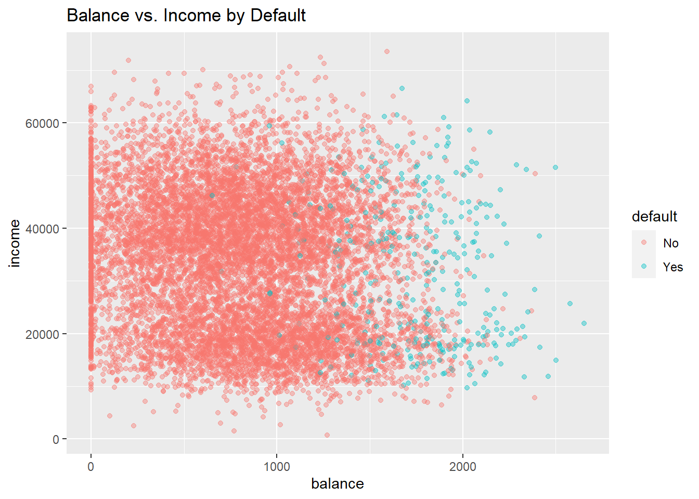
grid.arrange(
ggplot(Default, aes(default, balance)) +
geom_boxplot() +
ggtitle("Balance by Default") +
ylab("balance"),
ggplot(Default, aes(default, income)) +
geom_boxplot() +
ggtitle("Income by Default") +
ylab("income"),
ncol = 2)
Claramente, los valores altos de saldo están asociados con el incumplimiento en todos los niveles de ingresos. Esto sugiere que los ingresos en realidad no son un fuerte predictor de incumplimiento, en comparación con el saldo, que es exactamente lo que vemos en los diagramas de cajas.
Exploremos estas relaciones usando la regresión logística. En R ajustamos un modelo logístico usando la función glm () con family = binomial.6 Centraremos y escalaremos las variables para facilitar la interpretación.
glm(default ~ balance + income,
data = Default,
family = binomial) %>%
standardize %>%
displayglm(formula = default ~ z.balance + z.income, family = binomial,
data = Default)
coef.est coef.se
(Intercept) -6.13 0.19
z.balance 5.46 0.22
z.income 0.56 0.13
---
n = 10000, k = 3
residual deviance = 1579.0, null deviance = 2920.6 (difference = 1341.7)NOTA: Se puede apreciar la ventaja del uso de tidyverse (pipe) - no se necesita crear las variables estandarizadas, ni guardar el resultado para luego hacer un print
Interpretamos esta salida exactamente como lo haríamos para un modelo lineal con un predictor centrado y escalado:
- Intercept: -6,13 representa las probabilidades logarítmicas (log odds) de incumplimiento cuando el saldo es promedio (835.37) y el ingreso es promedio (3.351698^{4} ). (Promedio porque las variables se han centrado).
- z.balance: 5.46 representa el cambio predicho en las probabilidades logarítmicas de incumplimiento asociado con un aumento de 1 unidad en el saldo (z.balance), manteniendo constante el ingreso (z.income). Un aumento de 1 unidad en el saldo (z.balance) es equivalente a un aumento de 2 desviaciones estándar en el saldo (balance) (967.43). Este coeficiente es estadísticamente significativo ya que 5.46 - 2 x .22 > 0 (el IC del 95% que no contiene 0 indica significación estadística).
- z.income: .56 representa el cambio predicho en las probabilidades logarítmicas (log odds) de incumplimiento asociadas con un aumento de 1 unidad en el ingreso (z.income), manteniendo constante el balance (z.balance). Un aumento de 1 unidad en el ingreso (z.income) es equivalente a un aumento de 2 desviaciones estándar en el ingreso (income) (2.667328^{4}). Este coeficiente también es estadísticamente significativo ya que .56 - 2 x .13 > 0.
¿Qué significa que las probabilidades logarítmicas de incumplimiento aumenten en 5.46 o .56? En términos precisos, ¿quién sabe? Para que estas cantidades tengan una mejor interpretación, necesitamos transformarlas, ya sea en probabilidades (odds) o en razones de probabilidades (razón de odds -> odds ratio). Sin embargo, debemos señalar que el signo y la magnitud de los coeficientes si son informativas: la relación con el incumplimiento del pago es positiva en ambos casos y, como ya se había visto de forma gráfica en los diagramas de cajas, el efecto del saldo (balance) es mucho mayor que el del ingreso (income).
6.3 Coeficientes de regresión logística como probabilidades
Podemos dar una interpretación más específica de la regresión logística más allá del efecto y magnitud. Para ello, podemos usar la función logit inversa para convertir las probabilidades logarítmicas (log-odds) de incumplimiento de pago en las tarjetas (cuando el saldo y los ingresos son promedio) en una probabilidad:
invlogit <- function(x) exp(x)/(1 + exp(x))
invlogit(-6.13 + 5.46 * 0 + .56 * 0)[1] 0.002171854La probabilidad de incumplimiento para aquellos con un saldo promedio de tarjeta de crédito de (835.37) y un ingreso promedio de (3.351698^{4}) es de hecho bastante bajo: solo 0.002. Asimismo, podemos calcular el cambio en la probabilidad de incumplimiento en el pago asociado con un aumento de 1 unidad en el saldo, manteniendo el ingreso constante en el promedio (z.ingreso=0). Esto equivaldría a aumentar el saldo en casi 1000$, de 835.37 a 1802.8.
invlogit(-6.13 + 5.46 * 1) - invlogit(-6.13 + 5.46 * 0)[1] 0.3363256.4 Coeficientes de regresión logística como razones de odds
También podemos interpretar los coeficientes de regresión logística como razones de odds (OR).7 Si dos resultados tienen probabilidades \((p, 1-p)\), entonces \(\frac {p} {1-p}\) se conoce como odds (probabilidades o momio) del resultado. Las odds son simplemente diferentes formas de representar la misma información: \(\text{odds} = \frac{p}{1-p}\) y \(p = \frac{\text{odds}} {1+ \text{odds}}\). Por ejemplo, una odds de 1 es equivalente a una odds de .5 — es decir, resultados igualmente probables para \(p\) y \(1-p\): \(\text{odds(p = .5)} = \frac{.5}{1-.5} = 1\) y \(p(\text{oods} = 1) = \frac{\text{1}}{1 + 1} = .5.\)
La razón de dos odds es una OR:
\[ \frac{\frac{p_2}{1-p_2}}{\frac{p_1}{1-p_1}} \]
Una razón de odds se puede interpretar como un cambio en la probabilidad. Por ejemplo, un cambio en la probabilidad de \(p_1 = .33\) a \(p_2 = .5\) da como resultado un OR de 2, de la siguiente manera:
\[ \frac{\frac{.5}{.5}}{\frac{.33}{.66}} = \frac{1}{.5} = 2 \]
También podemos interpretar el OR como el aumento porcentual de las probabilidades de un evento. Aquí, un OR de 2 equivale a aumentar las probabilidades en un 100%, de 0,5 a 1.
Recordemos que representamos el modelo logit de esta manera:
\[ \text{log} \left(\frac{p}{1-p}\right) = \alpha + \beta x \]
La parte izquierda de la ecuación, expresado como logaritmos de probabilidades, está en la misma escala que la derecha derecho: \(\pm \infty\). Por lo tanto, no hay no linealidad en esta relación, y aumentar \(x\) en 1 unidad tiene el mismo efecto que en la regresión lineal: cambia el resultado predicho en \(\beta\). Entonces, pasar de \(x\) a \(x + 1\) equivale a sumar \(\beta\) a ambos lados de la ecuación anterior. Centrándonos solo en el lado izquierdo, tenemos, después de exponenciar, las probabilidades originales multiplicadas por \(e^\beta\):
\[ e^{\text{log} \left(\frac{p}{1-p}\right) + \beta} = \frac{p}{1-p} *e^ \beta \]
(ya que \(e^{a+b} = e^a*e^b\)).
Podemos pensar en \(e^\beta\) como el cambio de la odds del resultado cuando \(x\) cambia en 1 unidad, que se puede representar, utilizando la formulación anterior, como una OR:
\[ \frac{\frac{p_2}{1-p_2}}{\frac{p_1}{1-p_1}} = \frac{\frac{p_1}{1-p_1} * e^\beta }{\frac{p_1}{1-p_1}} = e^\beta. \]
Por lo tanto, \(e^\beta\) se puede interpretar como el cambio en las probabilidades asociadas con un aumento de 1 unidad en \(x\), expresado en términos porcentuales. En el caso de OR = \(\frac{1}{. 5} = 2\), el porcentaje de aumento en las probabilidades del resultado es del 100%. Cuando la OR es \(>2\) se suele expresar como x-veces más (OR=3.5, hay 3.5 veces más probabilidad de observar el evento que no observarlo cuando se cambia \(x\) en 1 unidad), y cuando la OR es \(<1\) se suele hablar de protección a no tener el evento y el porcentaje se calcula como 1-OR.
Apliquemos esta información a nuestro modelo anterior de aplicando la exponencial a los coeficientes de saldo e ingresos:
exp(5.46)[1] 235.0974exp(.56)[1] 1.750673Podemos interpretar estos ORs como el porcentaje o cambio multiplicativo en las probabilidades asociadas con un aumento de 1 unidad en el predictor (mientras se mantienen constantes los demás), de 1 a 235 (un aumento de 23,400%) en el caso de balance, y de 1 a 1,75 (un aumento del 75%) para los ingresos. Por ejemplo, podemos decir que la probabilidad de incumplimiento es un 75% mayor cuando los ingresos aumentan en 1 unidad.
Cuando las variables predictoras son categóricas (como en biomedicina: sexo, estadío tumoral, fumar, beber, …) la interpretación se hace más sencilla porque el cambio de 1 unidad en estas variables, supone el cambio de una categoría respecto a la basal (ya que se usan dummy variables). Así, por ejemplo, si nuestro outcomes tener cáncer de pulmón o no, y nuestro predictor es ser fumanor o no, si nuestros análisis nos dan una OR de 6 asociado a ser fumador, la interpretación sería: “La odds (probabilidad, abusando de lenguaje - también riesgo si el outcome es poco frecuente) de sufrir cáncer de pulmón es 6 veces mayor en los fumadores que en los no fumadores.
6.5 Capacidad predictiva de un modelo de clasificación
Podemos evaluar el rendimiento (es decir, la capacidad predictiva) del modelo logístico utilizando el AIC, así como mediante el uso de otras medidas como: la desviación (deviance) residual, la precisión, la sensibilidad, la especificidad y el área bajo la curva (AUC).
Al igual que AIC, la deviance es una medida de error, por lo que una deviance más baja significa un mejor ajuste a los datos. Esperamos que la desviación disminuya en 1 para cada predictor, por lo que con un predictor informativo (e.g. variable imporante para el modleo), la deviance disminuirá en más de 1. Deviance = \(-2ln(L)\), donde \(ln\) es el logaritmo natural y \(L\) es la función de verosimilitud . Veámoslo con nuestro ejemplo:
logistic_model1 <-
glm(default ~ balance,
data = Default,
family = binomial)
logistic_model1$deviance[1] 1596.452logistic_model2 <-
glm(default ~ balance + income,
data = Default,
family = binomial)
logistic_model2$deviance[1] 1578.966En este caso, la deviance se redujo en más de 1, lo que indica que los ingresos mejoran el ajuste del modelo. Podemos hacer una prueba formal de la diferencia usando, como para los modelos lineales, la prueba de razón de verosimilitud:
lrtest(logistic_model1, logistic_model2)
Model 1: default ~ balance
Model 2: default ~ balance + income
L.R. Chisq d.f. P
1.748541e+01 1.000000e+00 2.895205e-05 También podemos traducir las probabilidades de un modelo logístico para el incumplimiento del pago en predicciones de clase asignando “Sí” (predeterminado) a probabilidades mayores o iguales a .5 y “No” (sin valor predeterminado) a probabilidades menores que .5, y luego contar el número de veces que el modelo asigna la clase predeterminada correcta. Si dividimos este número por el total de observaciones, habremos calculado la “precisión”. La precisión se utiliza a menudo como medida del rendimiento del modelo.
preds <- ifelse(fitted(logistic_model2) >= .5, "Yes", "No")
(length(which(preds == Default$default)) / nrow(Default))*100[1] 97.37El modelo es 97.37% preciso. Valores superirores al 50% mostrarían una mejora en la predicción ya que por azar, se espera que el modelo tenga una precisión del 50%.
| EJERCICIO (Entrega Moodle P2-Precisión) |
| Utiliza una simulación sencilla para demostrar que is asignamos por azar que una persona va a incumplir o no con los pagos, el valor esperado de la precisión de la variable “Default$default” es del 50%. NOTA: realiza 1000 simulaciones. |
Una forma sencilla de obtener un buen modelo de clasificación sería asignar a todos la categoría más frecuente. Por ejemplo, en nuestros datos, la clase mayoritaria es “No” para la variable incimpliminto por un amplio margen (9667 a 333). La mayoría de las personas no incumplen. ¿Cuál es nuestra precisión, entonces, si simplemente predecimos “No” para todos los casos? La proporción de “No” en los datos es 96.67%, por lo que si siempre predijimos “No” esa sería nuestra precisión (9667 / (9667 + 333) = .9667). El modelo logístico, sorprendentemente, ofrece solo una ligera mejora.
Sin embargo, al evaluar el rendimiento del clasificador, debemos reconocer que no todos los errores son iguales y que la precisión tiene limitaciones como métrica de rendimiento. En algunos casos, el modelo puede haber predicho el incumplimiento cuando no lo había. Esto se conoce como “falso positivo”. En otros casos, el modelo puede haber predicho que no hubo incumplimiento cuando hubo incumplimiento. Esto se conoce como “falso negativo”. En la clasificación, utilizamos lo que se conoce como matriz de confusión para resumir estos diferentes tipos de errores del modelo, denominados así porque la matriz resume cómo se confunde el modelo. Usaremos la función confusionMatrix () de la librería caret para calcular rápidamente estos valores:
confusionMatrix(as.factor(preds), Default$default, positive = "Yes")Confusion Matrix and Statistics
Reference
Prediction No Yes
No 9629 225
Yes 38 108
Accuracy : 0.9737
95% CI : (0.9704, 0.9767)
No Information Rate : 0.9667
P-Value [Acc > NIR] : 3.067e-05
Kappa : 0.4396
Mcnemar's Test P-Value : < 2.2e-16
Sensitivity : 0.3243
Specificity : 0.9961
Pos Pred Value : 0.7397
Neg Pred Value : 0.9772
Prevalence : 0.0333
Detection Rate : 0.0108
Detection Prevalence : 0.0146
Balanced Accuracy : 0.6602
'Positive' Class : Yes
Esta función produce una gran cantidad de resultados. Podemos ver que informa la misma precisión que calculamos anteriormente: .97. La matriz de confusión 2 x 2 está en la parte superior. Podemos caracterizar estos 4 valores en la matriz de la siguiente manera:
- 9629 negativos verdaderos (TN): cuando el modelo predice correctamente “No”
- 108 verdaderos positivos (TP): cuando el modelo predice correctamente “Sí”
- 225 falsos negativos (FN): cuando el modelo predice incorrectamente “No”
- 38 falsos positivos (FP): cuando el modelo predice incorrectamente “Sí”
La siguiente tabla resume estas posibilidades:
| Reference | ||
| Predicted | No | Yes |
| No | TN | FN |
| Yes | FP | TP |
Hay dos medidas clave, además de la precisión, para caracterizar el rendimiento del modelo. Mientras que la precisión mide el error general, la sensibilidad y la especificidad miden errores específicos de clase.
- Precisión = 1 - (FP + FN) / Total:
1 - (38 + 225) / 10000[1] 0.9737- Sensibilidad (o la tasa de verdaderos positivos): TP / (TP + FN). En este caso, la sensibilidad mide la proporción de incumplimientos que se clasificaron correctamente como tales.
108 / (108 + 225) [1] 0.3243243- Especificidad (o la tasa de verdaderos negativos): TN / (TN + FP). En este caso, la especificidad mide la proporción de no incumplimientos que se clasificaron correctamente como tales.
9629 / (9629 + 38) [1] 0.9960691¿Por qué deberíamos considerar estos errores específicos de clase? Todos los modelos tienen errores, pero no todos los errores del modelo son igualmente importantes. Por ejemplo, un falso negativo — prediciendo incorrectamente que un prestatario no incurrirá en incumplimiento — puede ser un error costoso para un banco, si el incumplimiento se hubiera podido prevenir mediante la intervención. Pero, por otro lado, un falso positivo, que predice incorrectamente que un prestatario incurrirá en incumplimiento, puede desencadenar una advertencia innecesaria que irrita a los clientes. Los errores que comete un modelo se pueden controlar ajustando el umbral de decisión utilizado para asignar probabilidades predichas a las clases. Usamos un umbral de probabilidad de .5 para clasificar los incumplimientos en los pagos. Si el umbral se establece en .1, por el contrario, la precisión general disminuiría, pero también lo haría el número de falsos negativos, lo que podría ser deseable. El modelo luego atraparía a más morosos, lo que ahorraría dinero al banco, pero eso tendría un costo: más falsos positivos (clientes potencialmente irritados).
preds <- as.factor(ifelse(fitted(logistic_model2) >= .1, "Yes", "No"))
confusionMatrix(preds, Default$default)$table Reference
Prediction No Yes
No 9105 90
Yes 562 243La pregunta de cómo establecer el umbral de decisión —. 5, .1 o algo más — debe responderse con referencia al contexto empresarial.
Una curva de característica operativa del receptor (ROC por sus siglas en ingles) visualiza las compensaciones entre los tipos de errores trazando la especificidad frente a la sensibilidad. El cálculo del área bajo la curva ROC (AUC) nos permite, además, resumir el rendimiento del modelo y comparar modelos. La curva en sí muestra los tipos de errores que cometería el modelo en diferentes umbrales de decisión. Para crear una curva ROC usamos la función roc () del paquete pROC, y mostramos los valores de sensibilidad / especificidad asociados con los umbrales de decisión de .1 y .5:
library(pROC)
library(plotROC)
invisible(plot(roc(factor(ifelse(Default$default == "Yes", 1, 0)),
fitted(logistic_model2)), print.thres = c(.1, .5),
col = "red", print.auc = T))
Un modelo con una precisión del 50%, es decir, un clasificador aleatorio, tendría una curva ROC que siguiera la línea de referencia diagonal. Un modelo con una precisión del 100%, un clasificador perfecto, tendría una curva ROC siguiendo los márgenes del triángulo superior. Cada punto de la curva ROC representa un par de sensibilidad / especificidad correspondiente a un umbral de decisión particular. Cuando establecimos el umbral de decisión en .1, la sensibilidad fue .73 (243 / (243 + 90)) y la especificidad fue .94 (9105 / (9105 + 562)). Ese punto se muestra en la curva. Del mismo modo, cuando establecimos el umbral de decisión en .5, la sensibilidad fue .32 y la especificidad fue .996. Ese punto también está en la curva. ¿Qué umbral de decisión es óptimo? Nuevamente, depende del problema (pensad en cáncer o en este ejemplo de dinero). Las curvas ROC nos permiten elegir los errores específicos de clase que podemos cometer.
El AUC es el resumen de cómo funciona el modelo en cada umbral de decisión. En general, los modelos con AUC más altos son mejores. Esta medida nos servirá para comparar métodos de aprendizaje automático que iremos aprendiendo durante el curso.
6.6 Ejemplo de regresión logística: modelización de riesgo diabetes
Para este ejemplo usaremos el conjunto de datos Pima, incluido en la librería MASS que contienen esta información:
Una población de mujeres que tenían al menos 21 años, de ascendencia indígena Pima y que vivían cerca de Phoenix, Arizona, se sometieron a pruebas de diabetes de acuerdo con los criterios de la Organización Mundial de la Salud. Los datos fueron recopilados por el Instituto Nacional de Diabetes y Enfermedades Digestivas y Renales de EE. UU. Usaremos información para 532 mujeres con datos completos después de eliminar los datos (principalmente faltantes) sobre la insulina sérica.
El conjunto de datos incluye las siguientes variables:
- npreg: número de embarazos
- glu: concentración de glucosa en plasma a 2 horas en una prueba de tolerancia oral a la glucosa
- bp: presión arterial diastólica (mm Hg)
- piel: grosor del pliegue cutáneo del tríceps (mm)
- bmi: índice de masa corporal (peso en kg / (altura en m) ^ 2)
- ped: función del pedigrí de la diabetes
- age: Edad (años)
- type: Sí o No (diabetes)
La variable resultado es “type”, que indica si una persona tiene diabetes. Los datos están divididos en un conjunto de entrenamiento y otro test que combinaremos para ilustrar este ejemplo.
library(MASS)
data("Pima.tr")
data("Pima.te")
d <- rbind(Pima.te, Pima.tr)
str(d)'data.frame': 532 obs. of 8 variables:
$ npreg: int 6 1 1 3 2 5 0 1 3 9 ...
$ glu : int 148 85 89 78 197 166 118 103 126 119 ...
$ bp : int 72 66 66 50 70 72 84 30 88 80 ...
$ skin : int 35 29 23 32 45 19 47 38 41 35 ...
$ bmi : num 33.6 26.6 28.1 31 30.5 25.8 45.8 43.3 39.3 29 ...
$ ped : num 0.627 0.351 0.167 0.248 0.158 0.587 0.551 0.183 0.704 0.263 ...
$ age : int 50 31 21 26 53 51 31 33 27 29 ...
$ type : Factor w/ 2 levels "No","Yes": 2 1 1 2 2 2 2 1 1 2 ...Todos los predictores son enteros o numéricos. Nuestro objetivo es construir un modelo logístico de diabetes para ilustrar cómo interpretar los coeficientes del modelo.
6.6.1 Modelo simple
Comencemos con un modelo simple.
bin_model1 <-
glm(type ~ bmi + age,
data = d,
family = binomial)
display(bin_model1)glm(formula = type ~ bmi + age, family = binomial, data = d)
coef.est coef.se
(Intercept) -6.26 0.67
bmi 0.10 0.02
age 0.06 0.01
---
n = 532, k = 3
residual deviance = 577.2, null deviance = 676.8 (difference = 99.6)- Intercept: -6.26 es el logaritmo de la probabilidad de tener diabetes cuando bmi = 0 y edad = 0. Dado que ni la edad ni el bmi pueden ser iguales a 0, el intercept no es interpretable en este modelo. Por tanto, tendría sentido centrar las variables para facilitar la interpretación.
- bmi: .1 es el cambio previsto en el log-odds de diabetes asociado con un aumento de 1 unidad en el bmi, manteniendo la edad constante. Este coeficiente es estadísticamente significativo ya que .1 - 2 x .02 > 0. (Un IC del 95% que no contiene 0 indica significancia estadística) y también porque su p-valor asociacio mediante el test de score es \(<0.05\) (usar la función
summary (). Podemos traducir este coeficiente en un OR mediante la exponencial: \(e^.1\) = 1.11. Un aumento de 1 unidad en el IMC, manteniendo la edad constante, se asocia con un aumento del 11% en la odds (o, más coloquialmente, la probabilidad) de diabetes. - edad: .06 es el cambio predicho en el log-oods de diabetes asociado con un aumento de 1 unidad en la edad, manteniendo constante el bmi. Este coeficiente también es estadísticamente significativo ya que .06 - 2 x .01> 0. El OR para la edad es \(e^.06\) = 1.06 lo que indica un aumento del 6% en la probabilidad de sufrir diabetes asociada con un aumento de 1 unidad en la edad.
6.6.2 Agregar predictores y evaluar el ajuste
Ahora ajustaremos un modelo completo (excluyendo “skin”, ya que parece medir casi lo mismo que bmi). ¿Mejora el ajuste?
bin_model2 <-
glm(type ~ bmi + age + ped + glu + npreg + bp ,
data = d,
family = binomial)
display(bin_model2)glm(formula = type ~ bmi + age + ped + glu + npreg + bp, family = binomial,
data = d)
coef.est coef.se
(Intercept) -9.59 0.99
bmi 0.09 0.02
age 0.03 0.01
ped 1.31 0.36
glu 0.04 0.00
npreg 0.12 0.04
bp -0.01 0.01
---
n = 532, k = 7
residual deviance = 466.5, null deviance = 676.8 (difference = 210.3)La deviance disminuye de 577 en el modelo anterior a 466.5 en este modelo, muy por encima de los 4 puntos que debería bajar simplemente al incluir 4 predictores adicionales. Además, el LRT nos indica que estas diferencias son estadísticamente significativas:
lrtest(bin_model1, bin_model2)
Model 1: type ~ bmi + age
Model 2: type ~ bmi + age + ped + glu + npreg + bp
L.R. Chisq d.f. P
110.6664 4.0000 0.0000 El segundo modelo es mucho mejor que el primero, lo que también es evidente cuando observamos las matrices de confusión (con el umbral de decisión establecido en .5)
preds <- as.factor(ifelse(fitted(bin_model1) > .5, "Yes", "No"))
confusionMatrix(preds, d$type)$table Reference
Prediction No Yes
No 312 112
Yes 43 65preds <- as.factor(ifelse(fitted(bin_model2) > .5, "Yes", "No"))
confusionMatrix(preds, d$type)$table Reference
Prediction No Yes
No 318 73
Yes 37 104Como era de esperar, el modelo completo comete menos errores. Podemos formalizar esta impresión calculando y comparando la precisión del modelo: 1 - (112 + 43) / (112 + 43 + 312 + 65) = 0.71 para el primer modelo, en comparación con 1 - (73 + 37) / (73 + 37 + 318 + 104) =r round (1 - (73 + 37) / (73 + 37 + 318 + 104 ), 2) para el segundo modelo más grande. Los números de verdaderos negativos son cercanos, pero el modelo más grande aumenta sustancialmente el número de verdaderos positivos y reduce el número de falsos negativos, prediciendo incorrectamente que una persona no tiene diabetes (aunque esta sigue siendo la clase de error más grande). Deberíamos comprobar para ver que estos modelos mejoran la precisión sobre un modelo que siempre predice la clase mayoritaria. En este conjunto de datos, “No” es la categoría mayoritaria con 66,7%. Entonces, si siempre predijimos “No”, estaríamos en lo correcto el 66.7% de las veces, que es una precisión menor que cualquiera de los modelos. Las curvas ROC proporcionan una descripción más sistemática del rendimiento del modelo en términos de errores de clasificación errónea.
invisible(plot(roc(d$type,
fitted(bin_model1)),
col = "red",
main = "ROC curves: logistic model 1 (red) vs. logistic model 2 (blue)"))
invisible(plot(roc(d$type,
fitted(bin_model2)),
print.auc = T,
col = "blue",
add = T))
El modelo más grande es claramente mejor: el AUC es más alto.
6.6.3 Análisis de interacciones
Agreguemos una interacción entre dos predictores continuos, ped y glu. Centraremos y escalaremos las entradas para que el coeficiente de la interacción sea interpretable.
bin_model3 <-
standardize(glm(type ~ bmi + ped * glu + age + npreg + bp ,
data = d,
family = binomial))
display(bin_model3)glm(formula = type ~ z.bmi + z.ped * z.glu + z.age + z.npreg +
z.bp, family = binomial, data = d)
coef.est coef.se
(Intercept) -1.02 0.13
z.bmi 1.29 0.26
z.ped 1.02 0.24
z.glu 2.31 0.27
z.age 0.53 0.30
z.npreg 0.87 0.29
z.bp -0.19 0.26
z.ped:z.glu -1.15 0.41
---
n = 532, k = 8
residual deviance = 460.0, null deviance = 676.8 (difference = 216.7)La interacción mejora el modelo pero no cambia la imagen general del ajuste del modelo en el gráfico de residuos agrupados (no incluido).
- Intercept : -1.02 es el log-odds de diabetes cuando todos los predictores son promedio (ya que hemos centrado y escalado las entradas). La probabilidad de tener diabetes para la mujer promedio en este conjunto de datos es logit\(^{- 1}\) (- 1.02) = 0.27.
- z.bmi: 1.29 es el log-odds de diabetes asociado con un aumento de 1 unidad en z.bmi, manteniendo constantes los demás predictores. \(e^{1.29}\) = 3.63 por lo que un aumento de 1 unidad en z.bmi, manteniendo constantes los otros predictores, se asocia con un aumento del 263% en la probabilidad de sufrir diabetes.
- z.ped: 1.02 es el log-odds de diabetes asociado con un aumento de 1 unidad en z.ped, cuando z.glu = 0 y manteniendo constantes los otros predictores. \(e^{1.02}\) = 2.77 por lo que un aumento de 1 unidad en z.ped, cuando z.glu = 0 y manteniendo los otros predictores constantes, se asocia con un aumento del 177% en la probabilidad de sufrir diabetes.
- z.glu: 2.31 es el log-odds de diabetes asociado con un aumento de 1 unidad en z.glu, cuando z.ped = 0 y manteniendo constantes los demás predictores. \(e^{2.31}\) = 10.07 por lo que un aumento de 1 unidad en z.glu, cuando z.ped = 0 y manteniendo los otros predictores constantes, se asocia con un aumento del 907% en la probabilidad de sufrir diabetes.
- …. el resto de predictores igual
- z.ped:z.glu : se añade -1.15 al log-odds de diabetes de z.ped cuando z.glu aumenta en 1 unidad, manteniendo constantes los otros predictores. O, alternativamente, se añade -1.15 al log-odds de diabetes de z.glu por cada unidad adicional de z.ped. Calculamos el OR, como en los otros casos, exponenciando: \(e^ {- 1.15}\) = 0.32. El OR para z.ped disminuye en un 68% (1 - .32 = .68) cuando z.glu aumenta en 1 unidad, manteniendo constantes los demás predictores. O, alternativamente, el OR para z.glu disminuye en un 68% con cada unidad adicional de z.ped.
6.6.4 Gráfico de la interacción
Como siempre, debemos visualizar la interacción para comprenderla. Esto es especialmente necesario cuando las relaciones se expresan en términos de probabilidades logarítmicas y razones de probabilidades. Como hemos hecho anteriormente para fines de visualización, dicotomizaremos los predictores en la interacción y, en este caso, para facilitar la interpretación, presentaremos las relaciones en términos de probabilidades. El propósito de los gráficos es la comprensión y la ilustración, por lo que no nos preocupa demasiado la precisión estadística. Resumiremos las relaciones usando una curva loess (estimación no paramétrica de la regresión) para capturar la no linealidad del efecto del predictor (\(\pm \infty\)) al rango del resultado binario (0, 1).
d$ped_bin <- ifelse(d$ped > mean(d$ped), "above avg","below avg")
d$glu_bin <- ifelse(d$glu > mean(d$glu), "above avg","below avg")
d$prob <- fitted(bin_model3)
d$type_num <- ifelse(d$type == "Yes", 1, 0)
ggplot(d, aes(glu, type_num)) +
geom_point() +
stat_smooth(aes(glu, prob, col = ped_bin), se = F) +
labs(y = "Pr(diabetes)", title = "Diabetes ~ glu varying by ped_bin")
La relación entre glu y diabetes depende claramente de los niveles de ped. Como en el caso lineal, las líneas no paralelas indican una interacción. El coeficiente de log-odds negativo para la interacción del modelo indica que a medida que ped aumenta, la fuerza de la relación entre glu y type (diabetes) disminuye. Esto es exactamente lo que vemos en este gráfico:
ggplot(d, aes(ped, type_num)) +
geom_point() +
stat_smooth(aes(ped, prob, col = glu_bin), se = F) +
labs(y = "Pr(diabetes)", title = "Diabetes ~ ped varying by glu_bin")
La interacción es más difícil de ver aquí porque la escala de ped está comprimida, con la mayoría de las observaciones cercanas a 0. Sin embargo, podemos ver que a medida que glu aumenta, la fuerza de la relación entre ped y diabetes disminuye. Nuevamente, las líneas no paralelas indican la presencia de una interacción.
6.6.5 Uso del modelo para predecir probabilidades
El tamaño del efecto más grande en el modelo anterior con la interacción, con mucho, es z.glu. Por tanto, para comunicar los resultados de este modelo deberíamos concentrarnos en glu. Pero los coeficientes expresados como logaritmos de probabilidades son algo confusos y, lamentablemente, las razones de probabilidades no ayudan a aclarar mucho las cosas. Deberíamos ir al trabajo adicional de traducir los coeficientes del modelo en probabilidades, pero para hacerlo debemos identificar en qué parte de la curva de probabilidad nos gustaría evaluar glu. Escogeremos la región cercana al promedio de z.glu — 0 — y examinaremos el efecto de aumentar z.glu en 1 unidad (que es igual a 2 desviaciones estándar de glu) cuando los otros predictores son promedio. La forma más sencilla de hacer esto es crear una base de datos con los valores de predicción deseados para usar con la función predict ().
basal <- data.frame(z.bmi = 0, z.ped = 0, z.glu = 0, z.age = 0, z.npreg = 0, z.bp = 0)
glucosa <- data.frame(z.bmi = 0, z.ped = 0, z.glu = 1, z.age = 0, z.npreg = 0, z.bp = 0)
(lo <- as.numeric(invlogit(predict(bin_model3, newdata = basal))))[1] 0.2652028(hi <- as.numeric(invlogit(predict(bin_model3, newdata = )))) [1] 0.716146591 0.025911688 0.017983270 0.029013744 0.893018807 0.665405710 0.395033985 0.211066662
[9] 0.431695033 0.225375587 0.032840692 0.443676401 0.022607120 0.418795847 0.194085484 0.411388311
[17] 0.122928759 0.771984610 0.760725696 0.088470567 0.953485181 0.785645203 0.028409690 0.026232726
[25] 0.055457646 0.038181372 0.757850071 0.007630220 0.110507313 0.066603557 0.213559028 0.017048355
[33] 0.294579371 0.213686248 0.245378175 0.147939308 0.058529536 0.047092679 0.169073996 0.023421517
[41] 0.434375748 0.123923484 0.796680824 0.257623355 0.236877492 0.032937565 0.075796893 0.459769771
[49] 0.014969537 0.214416331 0.409898562 0.024597682 0.736084480 0.071421984 0.863089942 0.109813203
[57] 0.415148971 0.192888308 0.671705524 0.707181753 0.222687051 0.074378276 0.047288218 0.250211485
[65] 0.102873418 0.451885105 0.016412055 0.839500999 0.593725195 0.887724350 0.023636511 0.972427462
[73] 0.421875342 0.240818110 0.193220347 0.275433738 0.029285367 0.858427986 0.792694816 0.428056807
[81] 0.241389504 0.359146427 0.159848949 0.126229936 0.089106804 0.965646716 0.021565093 0.504101659
[89] 0.255700597 0.303575110 0.316087819 0.695623695 0.059157940 0.023850831 0.703188586 0.768676985
[97] 0.198583192 0.736445668 0.019832290 0.911158959 0.794437117 0.023391174 0.082335119 0.536540158
[105] 0.491636172 0.875915114 0.830550408 0.453101254 0.050024142 0.017749687 0.151803493 0.175667620
[113] 0.900329614 0.125898408 0.410586667 0.586540636 0.832688763 0.035561910 0.252327286 0.110864806
[121] 0.054988088 0.131662542 0.393097130 0.492496368 0.513182966 0.032671230 0.036078371 0.218212971
[129] 0.686096496 0.281975363 0.145884637 0.351411775 0.239547073 0.725330877 0.392954359 0.354585338
[137] 0.328110094 0.183872054 0.649535926 0.189835213 0.750660386 0.100154335 0.253081898 0.306902095
[145] 0.138876568 0.112315917 0.602945913 0.033225614 0.021023766 0.126008933 0.074805807 0.593242488
[153] 0.276438109 0.030025810 0.388107478 0.814468072 0.819988723 0.320406177 0.512019175 0.189866084
[161] 0.019102564 0.778045038 0.063532324 0.021660839 0.087123658 0.371697775 0.017831740 0.174573799
[169] 0.072586081 0.050795966 0.321374939 0.390300727 0.242283766 0.101281785 0.477098938 0.177832066
[177] 0.851704388 0.421578801 0.059594070 0.801660505 0.263016503 0.158261796 0.629712769 0.680147379
[185] 0.627289909 0.143229332 0.371021820 0.048405335 0.155912833 0.844592024 0.774738072 0.074975116
[193] 0.094313006 0.034029316 0.156403796 0.765185930 0.162409946 0.941491860 0.098203334 0.096782855
[201] 0.013696456 0.086137707 0.665930779 0.328426313 0.230933621 0.045364772 0.067599667 0.128835144
[209] 0.552086895 0.192049128 0.391808734 0.634609576 0.138796509 0.034537822 0.402157076 0.473285370
[217] 0.915578006 0.109882027 0.060813059 0.078347861 0.511021110 0.046236210 0.637413042 0.057352160
[225] 0.060578365 0.328120324 0.117022441 0.150080125 0.033383541 0.548421342 0.727231653 0.273012605
[233] 0.006665104 0.023959522 0.212622505 0.263913260 0.304803089 0.282446484 0.528587177 0.053303093
[241] 0.042787259 0.895978588 0.951451693 0.260631793 0.057999466 0.077448786 0.039445750 0.078320973
[249] 0.521759602 0.120793953 0.109749728 0.115212481 0.063160685 0.315382778 0.186348273 0.242141093
[257] 0.800887574 0.866564275 0.147824356 0.483279794 0.458255040 0.058388003 0.052876258 0.244883311
[265] 0.761115562 0.021394588 0.531937078 0.751371443 0.307274782 0.801133302 0.005240345 0.656336098
[273] 0.109766806 0.101435208 0.023548802 0.056804667 0.081720211 0.513341731 0.014456472 0.127221754
[281] 0.744369844 0.498650317 0.182496315 0.605638441 0.021059011 0.094691510 0.633177077 0.189201907
[289] 0.229657632 0.818999683 0.081933947 0.793780642 0.798845854 0.137588419 0.275762056 0.057395933
[297] 0.445742740 0.584089416 0.070998635 0.209775098 0.174014948 0.294145785 0.743857124 0.126042513
[305] 0.893349297 0.712229694 0.217225821 0.135596074 0.343239883 0.187767754 0.233598292 0.822021476
[313] 0.082764167 0.102210424 0.113711375 0.122461316 0.828791325 0.107099346 0.054386091 0.931938668
[321] 0.326454054 0.678618259 0.863704140 0.217542759 0.056249096 0.816489720 0.491806299 0.084796292
[329] 0.943486215 0.302404878 0.132747361 0.037305147 0.053261653 0.902996173 0.042527808 0.787771463
[337] 0.031525411 0.220902831 0.054775507 0.642266770 0.520264613 0.707148463 0.902568015 0.695527581
[345] 0.848650675 0.466017086 0.291730904 0.027601848 0.133315806 0.771592655 0.383831136 0.090423918
[353] 0.020481869 0.115239515 0.038125985 0.017056834 0.070184592 0.755542001 0.050653582 0.481007350
[361] 0.195086963 0.187977925 0.169394579 0.377212811 0.151859655 0.475032680 0.186324471 0.612248541
[369] 0.023804839 0.007054577 0.085213924 0.171343641 0.900710787 0.150595032 0.257766676 0.013926514
[377] 0.035750449 0.185105131 0.253500436 0.369424730 0.640522481 0.841160836 0.060643162 0.051633327
[385] 0.731126069 0.154040714 0.063202801 0.337255163 0.087712142 0.059196122 0.446522479 0.839581017
[393] 0.899946965 0.051162921 0.569809764 0.085461942 0.080315826 0.343678259 0.504516436 0.092545675
[401] 0.175360179 0.310167781 0.720652085 0.094860697 0.905656358 0.432122047 0.742494468 0.704660222
[409] 0.065240504 0.044936864 0.086384200 0.460776518 0.058306508 0.538740077 0.360529087 0.413937339
[417] 0.248787673 0.063168325 0.205549345 0.143823024 0.121451790 0.204643255 0.028047843 0.262047997
[425] 0.797845942 0.020192814 0.067782381 0.880235920 0.067820578 0.093376849 0.145058897 0.885115279
[433] 0.023833728 0.172919691 0.023186441 0.343149266 0.491733925 0.334336420 0.182785009 0.107602309
[441] 0.159470782 0.480057756 0.718226410 0.110307283 0.282105476 0.504892387 0.023457816 0.246497165
[449] 0.288819782 0.406440777 0.333499471 0.789228958 0.024672867 0.158285199 0.915532293 0.083660243
[457] 0.616972917 0.156244026 0.066104438 0.117576505 0.582609228 0.935907656 0.494078320 0.906231057
[465] 0.044752423 0.098120327 0.817658808 0.063067848 0.048103513 0.094446457 0.009656172 0.457728456
[473] 0.371287692 0.732871561 0.239173153 0.048538537 0.427026826 0.838680152 0.005916331 0.639747396
[481] 0.192937289 0.044098532 0.307301900 0.771646053 0.893235289 0.633989608 0.325705459 0.861507987
[489] 0.924405484 0.211878609 0.232857992 0.553168378 0.199630964 0.167297598 0.636698113 0.102745817
[497] 0.412260537 0.037681077 0.499347951 0.561847838 0.108622049 0.036902563 0.275679034 0.142289294
[505] 0.929821372 0.853111736 0.052948764 0.186298288 0.034369934 0.468239290 0.021331580 0.617803456
[513] 0.083865824 0.751272138 0.115022996 0.496356896 0.458485256 0.303064449 0.512265744 0.935001789
[521] 0.011659745 0.243551235 0.234201771 0.733582682 0.439827183 0.132566837 0.200183137 0.254534757
[529] 0.620459940 0.187218540 0.128750723 0.801532793round(hi - lo, 2) [1] 0.45 -0.24 -0.25 -0.24 0.63 0.40 0.13 -0.05 0.17 -0.04 -0.23 0.18 -0.24 0.15 -0.07 0.15
[17] -0.14 0.51 0.50 -0.18 0.69 0.52 -0.24 -0.24 -0.21 -0.23 0.49 -0.26 -0.15 -0.20 -0.05 -0.25
[33] 0.03 -0.05 -0.02 -0.12 -0.21 -0.22 -0.10 -0.24 0.17 -0.14 0.53 -0.01 -0.03 -0.23 -0.19 0.19
[49] -0.25 -0.05 0.14 -0.24 0.47 -0.19 0.60 -0.16 0.15 -0.07 0.41 0.44 -0.04 -0.19 -0.22 -0.01
[65] -0.16 0.19 -0.25 0.57 0.33 0.62 -0.24 0.71 0.16 -0.02 -0.07 0.01 -0.24 0.59 0.53 0.16
[81] -0.02 0.09 -0.11 -0.14 -0.18 0.70 -0.24 0.24 -0.01 0.04 0.05 0.43 -0.21 -0.24 0.44 0.50
[97] -0.07 0.47 -0.25 0.65 0.53 -0.24 -0.18 0.27 0.23 0.61 0.57 0.19 -0.22 -0.25 -0.11 -0.09
[113] 0.64 -0.14 0.15 0.32 0.57 -0.23 -0.01 -0.15 -0.21 -0.13 0.13 0.23 0.25 -0.23 -0.23 -0.05
[129] 0.42 0.02 -0.12 0.09 -0.03 0.46 0.13 0.09 0.06 -0.08 0.38 -0.08 0.49 -0.17 -0.01 0.04
[145] -0.13 -0.15 0.34 -0.23 -0.24 -0.14 -0.19 0.33 0.01 -0.24 0.12 0.55 0.55 0.06 0.25 -0.08
[161] -0.25 0.51 -0.20 -0.24 -0.18 0.11 -0.25 -0.09 -0.19 -0.21 0.06 0.13 -0.02 -0.16 0.21 -0.09
[177] 0.59 0.16 -0.21 0.54 0.00 -0.11 0.36 0.41 0.36 -0.12 0.11 -0.22 -0.11 0.58 0.51 -0.19
[193] -0.17 -0.23 -0.11 0.50 -0.10 0.68 -0.17 -0.17 -0.25 -0.18 0.40 0.06 -0.03 -0.22 -0.20 -0.14
[209] 0.29 -0.07 0.13 0.37 -0.13 -0.23 0.14 0.21 0.65 -0.16 -0.20 -0.19 0.25 -0.22 0.37 -0.21
[225] -0.20 0.06 -0.15 -0.12 -0.23 0.28 0.46 0.01 -0.26 -0.24 -0.05 0.00 0.04 0.02 0.26 -0.21
[241] -0.22 0.63 0.69 0.00 -0.21 -0.19 -0.23 -0.19 0.26 -0.14 -0.16 -0.15 -0.20 0.05 -0.08 -0.02
[257] 0.54 0.60 -0.12 0.22 0.19 -0.21 -0.21 -0.02 0.50 -0.24 0.27 0.49 0.04 0.54 -0.26 0.39
[273] -0.16 -0.16 -0.24 -0.21 -0.18 0.25 -0.25 -0.14 0.48 0.23 -0.08 0.34 -0.24 -0.17 0.37 -0.08
[289] -0.04 0.55 -0.18 0.53 0.53 -0.13 0.01 -0.21 0.18 0.32 -0.19 -0.06 -0.09 0.03 0.48 -0.14
[305] 0.63 0.45 -0.05 -0.13 0.08 -0.08 -0.03 0.56 -0.18 -0.16 -0.15 -0.14 0.56 -0.16 -0.21 0.67
[321] 0.06 0.41 0.60 -0.05 -0.21 0.55 0.23 -0.18 0.68 0.04 -0.13 -0.23 -0.21 0.64 -0.22 0.52
[337] -0.23 -0.04 -0.21 0.38 0.26 0.44 0.64 0.43 0.58 0.20 0.03 -0.24 -0.13 0.51 0.12 -0.17
[353] -0.24 -0.15 -0.23 -0.25 -0.20 0.49 -0.21 0.22 -0.07 -0.08 -0.10 0.11 -0.11 0.21 -0.08 0.35
[369] -0.24 -0.26 -0.18 -0.09 0.64 -0.11 -0.01 -0.25 -0.23 -0.08 -0.01 0.10 0.38 0.58 -0.20 -0.21
[385] 0.47 -0.11 -0.20 0.07 -0.18 -0.21 0.18 0.57 0.63 -0.21 0.30 -0.18 -0.18 0.08 0.24 -0.17
[401] -0.09 0.04 0.46 -0.17 0.64 0.17 0.48 0.44 -0.20 -0.22 -0.18 0.20 -0.21 0.27 0.10 0.15
[417] -0.02 -0.20 -0.06 -0.12 -0.14 -0.06 -0.24 0.00 0.53 -0.25 -0.20 0.62 -0.20 -0.17 -0.12 0.62
[433] -0.24 -0.09 -0.24 0.08 0.23 0.07 -0.08 -0.16 -0.11 0.21 0.45 -0.15 0.02 0.24 -0.24 -0.02
[449] 0.02 0.14 0.07 0.52 -0.24 -0.11 0.65 -0.18 0.35 -0.11 -0.20 -0.15 0.32 0.67 0.23 0.64
[465] -0.22 -0.17 0.55 -0.20 -0.22 -0.17 -0.26 0.19 0.11 0.47 -0.03 -0.22 0.16 0.57 -0.26 0.37
[481] -0.07 -0.22 0.04 0.51 0.63 0.37 0.06 0.60 0.66 -0.05 -0.03 0.29 -0.07 -0.10 0.37 -0.16
[497] 0.15 -0.23 0.23 0.30 -0.16 -0.23 0.01 -0.12 0.66 0.59 -0.21 -0.08 -0.23 0.20 -0.24 0.35
[513] -0.18 0.49 -0.15 0.23 0.19 0.04 0.25 0.67 -0.25 -0.02 -0.03 0.47 0.17 -0.13 -0.07 -0.01
[529] 0.36 -0.08 -0.14 0.546.7 Creación de un modelo y validación
Todo lo explicado en la sección de selección de variables para un modelo lineal, aplica para el caso de la regresión logística. Las funciones reconocen que el objeto es un glm con familia binomial y realiza los cálculos requeridos para este tipo de regresión (progamación orientada a objetos). El tema de validación cruzada para evaluar un modelo también aplica. Veámoslo con un ejemplo.
Supongamos que queremos elegir el mejor modelo para predecir el riesgo de diabetes y queremos validarlo con valización cruzada. Todos los pasos y métodos que hemos aprendido en las lecciones anteriores, podemos realizarlos de la siguiente manera. Usaremos los datos train y test que hay por defecto (Pima.tr y Pima.te). Para la validación cruzada usaremos la librería caret que veremos en detalle más adelante.
Empecemos seleccionando el mejor modelo en los datos de entrenamiento con un stepwise hacia atrás
mod.all <- glm(type ~ ., data=Pima.tr, family="binomial")
mod <- stats::step(mod.all, trace=FALSE, direction="backward")
summary(mod)
Call:
glm(formula = type ~ npreg + glu + bmi + ped + age, family = "binomial",
data = Pima.tr)
Deviance Residuals:
Min 1Q Median 3Q Max
-2.0009 -0.6816 -0.3664 0.6467 2.2898
Coefficients:
Estimate Std. Error z value Pr(>|z|)
(Intercept) -9.938059 1.541571 -6.447 1.14e-10 ***
npreg 0.103142 0.064517 1.599 0.10989
glu 0.031809 0.006667 4.771 1.83e-06 ***
bmi 0.079672 0.032649 2.440 0.01468 *
ped 1.811417 0.661048 2.740 0.00614 **
age 0.039286 0.020967 1.874 0.06097 .
---
Signif. codes: 0 '***' 0.001 '**' 0.01 '*' 0.05 '.' 0.1 ' ' 1
(Dispersion parameter for binomial family taken to be 1)
Null deviance: 256.41 on 199 degrees of freedom
Residual deviance: 178.47 on 194 degrees of freedom
AIC: 190.47
Number of Fisher Scoring iterations: 5Podemos evaluar la capacidad predictiva en la muestra test mediante
preds <- predict(mod, newdata = Pima.te, type="response")
preds <- as.factor(ifelse(preds >= .5, "Yes", "No") )
confusionMatrix(preds, Pima.te$type)Confusion Matrix and Statistics
Reference
Prediction No Yes
No 199 42
Yes 24 67
Accuracy : 0.8012
95% CI : (0.7542, 0.8428)
No Information Rate : 0.6717
P-Value [Acc > NIR] : 1.116e-07
Kappa : 0.5294
Mcnemar's Test P-Value : 0.03639
Sensitivity : 0.8924
Specificity : 0.6147
Pos Pred Value : 0.8257
Neg Pred Value : 0.7363
Prevalence : 0.6717
Detection Rate : 0.5994
Detection Prevalence : 0.7259
Balanced Accuracy : 0.7535
'Positive' Class : No
y calcular la capacidad predictiva en la muestra train utilizando un método de 5-fold cross-validation con:
library(caret)
mod.test <- train(type ~ ., data=Pima.tr,
trControl = trainControl(method="cv", number=5),
method = "glm", family="binomial")
mod.testGeneralized Linear Model
200 samples
7 predictor
2 classes: 'No', 'Yes'
No pre-processing
Resampling: Cross-Validated (5 fold)
Summary of sample sizes: 160, 160, 159, 160, 161
Resampling results:
Accuracy Kappa
0.7553283 0.43812356.8 Nomogramas
Una vez que ya tenemos creado y validad un modelo predictivo, nos puede interesar aplicarlo en otros individuos para poder tomar decisiones. Para ello, podemos usar nomogramas.
Un nomograma es una representación gráfica que permite realizar con rapidez cálculos numéricos aproximados. Dentro del campo de la medicina, es frecuente que este tipo de gráficos este asociado al calculo de probabilidades de ocurrencia de un evento o una característica asociada a una enfermedad. Es lo que se conoce como Medicina Translacional.
Aunque existen otro tipo de herramientas de cálculo vía web para estas probabilidades (Shiny), el uso de nomogramas esta muy extendido en el campo de la biomedicina como por ejemplo en el calculo de probabilidades de recurrencia en distintos tipos de cáncer, la probabilidad de supervivencia a un mes tras un infarto, o el pronóstico tras un diagnóstico de cáncer a cierto tiempo (en ese caso se usan modelos de supervivencia. Así pues, la regresión logística será una de las herramientas con una aplicación más directa y sencilla en el aprendizaje automático, donde el uso de los modelos predictivos suelen tener un aplicabilidad directa en la población.
Existen numerosas herramientas para crear nomogramas en R, empecemos con la creación de nomogramas sencillos. Para ello usaremos los datos del ejemplo de diabetes con el modelo que hemos obtenido y validado anteriormente. Para usar la librería rms necesitamos que el modelo esté estimado con la función lrm ()
library(rms)
t.data <- datadist(Pima.tr)
options(datadist = 't.data')
mod.lrm <- lrm(type ~ npreg + glu + bmi + ped + age, data=Pima.tr)
nom <- nomogram(mod.lrm, fun = plogis, funlabel="Risk of diabetes")
plot(nom)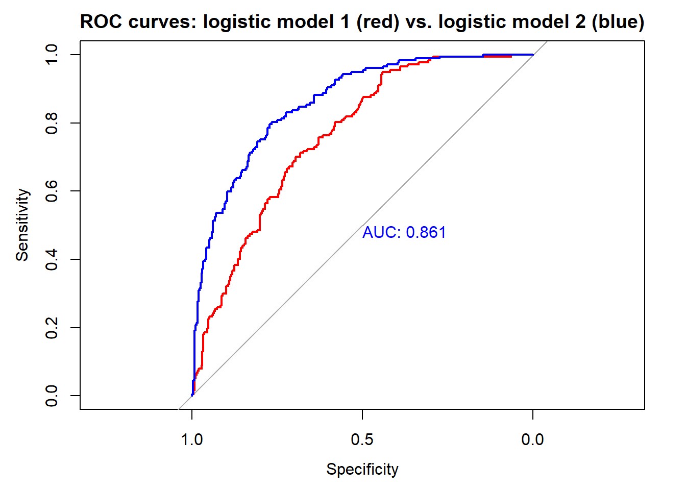
Supongamos que llega a la consulta una persona con un bmi de 35. Eso sumaría 30 puntos (basta con subir hacia arriba y ver qué valor de ‘Points’ corresponde a un bmi de 35). Una edad de 50 años (~22 puntos), una función del pedigrí de la diabetes de 1.8 (~62 puntos), una glucosa de 120 (~50 puntos) y 0 embarazos que sumaría 0 puntos. En total, el paciente suma un total de 164 puntos. Si ahora vamos a la línea de ‘Total Points’ y proyectamos sobre el predictor lineal de aproximadamente ~1.9 que se asocia con un riesgo de diabetes ligeramente superior al 80% (proyectar sobre ‘Risk of diabetes’).
Obviamente estos cálculos se pueden hacer de forma más directa calculando la predicción sobre este individuo con el objeto de R
indiv <- data.frame(bmi=35, age=50, ped=1.8, glu=120, npreg=0)
predict(mod.lrm, newdata = indiv, type="lp") 1
1.892376 predict(mod.lrm, newdata = indiv, type = "fitted") 1
0.8690262 Estos cálculos se pueden programar en R y hace una función, o también una aplicación Shiny para aquellos médicos que no sepan usar R (los nomogramas se siguen utilizando). Otra opción es que hagamos uso de una librería para hacer nomogramas dinámicos (crea Shiny app) de forma sencilla con la librería DynNom
library(DynNom)
DynNom(mod, Pima.tr)Con estas simples instrucciones obtendríamos esta aplicación Shiny (Figura abajo) donde cada intervalo de confianza corresponde a un cálculo obtenido variando alguna de las variables predictoras

Nomograma para el modelo de predicción para diabetes
| EJERCICIO (Entrega en Moodle: P-Práctica regresión logística): |
| En esta página https://vincentarelbundock.github.io/Rdatasets/datasets.html tienes acceso a cientos de bases de datos que hay en R y que también puedes descargar como ficheros .csv. |
| Elige una base de datos donde la pregunta científica requiera el análisis de una variable respuesta binaria. Selecciona unas 8-15 variables independientes (intenta que hayan categóricas y continuas). Crea un pdf en el que muestres un análisis completo de los datos incluyendo: |
| 1. Descripción de tu pregunta científica |
| 2. Análisis descriptivo de las variables independientes en función de tu variable respuesta |
| 3. Imputación de datos en caso de ser necesario |
| 4. Creación de un modelo predictivo |
| 5. Descripción de las ORs para el modelo final |
| 6. Validación del modelo mediante CV |
| 7. Descripción de la capacidad predictiva del modelo (Sensibilidad, Precisión, curva ROC, …) |
| 8. Creación de un nomograma estático que incluya la ilustración del cálculo de riesgo para un individuo ficticio. |
| 9. Apéndice con el código R utilizado |
| Se trata de crear un documento de unas 2-3 páginas (figuras y tablas aparte) explicando los principales resultados del estudio donde cada párrafo podría corresponder a cada una de las tareas anteriores. El documento debe incluir las tablas y/o figuras que creas conveniente que sostengan los resultados descritos en el documento. Se trata de intentar escribir el apartado de resultados de un artículo científico. Antes de escribir este apartado de resultados, el documento deberá empezar con un apartado breve de métodos describiendo los datos (brevemente - podéis usar la información que hay en la página de donde habéis descargado los datos) y los métodos estadísticos utilizados. Aquellos que quieran, lo pueden hacer con R Markdown. NOTA: El que no suba un pdf tendrá un 0 en la práctica. |
7 Modelos de regularización
7.1 Introducción
En este capítulo, exploraremos los modelos de regularización (y el concepto de regresión penalizada), que es una técnica poderosa para lidiar con el sobreajuste en modelos de aprendizaje automático. El sobreajuste ocurre cuando un modelo se ajusta demasiado bien a los datos de entrenamiento pero tiene un rendimiento deficiente en datos no vistos. La regularización es un método que introduce un término de penalización en la función de pérdida del modelo para evitar el sobreajuste. A grandes rasgos podemos resumir que
Hay dos tipos comunes de regularización utilizados en la regresión penalizada:
Regularización L1 (Regresión Lasso): Agrega el valor absoluto de los coeficientes como término de penalización a la función de pérdida.
Regularización L2 (Regresión Ridge): Agrega el cuadrado de los coeficientes como término de penalización a la función de pérdida.
La regularización ridge es suave y la regularización lasso es áspera tal y como se puede ver en la siguiente figura

Es esta diferencia entre las restricciones suaves y ásperas lo que resulta en que el Lasso tenga estimaciones de coeficientes que son exactamente cero, mientras que Ridge no lo hace. Ilustramos esto aún más en la siguiente figura. La solución de mínimos cuadrados se marca como \(\hat{\beta}\), mientras que el diamante azul y el círculo representan las restricciones de regresión Lasso y Ridge (como en la Figura anterior). Si la penalización (\(t\) en la figura anterior) es lo suficientemente grande (aumentar la penalización hace que el diamante y el círculo sean más grandes, respectivamente), entonces las regiones de restricción contendrán a \(\hat{\beta}\), por lo que las estimaciones de Ridge y Lasso serán iguales a las estimaciones de mínimos cuadrados.
Las curvas que están centradas alrededor de \(\hat{\beta}\) representan regiones de RSS constante. A medida que las elipses se alejan de las estimaciones de coeficientes de mínimos cuadrados, el RSS aumenta. Las estimaciones de coeficientes de regresión Lasso y Ridge se dan en el primer punto en el que una elipse toca la región de restricción.
La regularización proporciona varios beneficios:
- Ayuda a prevenir el sobreajuste al reducir la complejidad del modelo.
- Mejora la generalización, lo que hace que el modelo tenga un mejor rendimiento en datos no vistos.
- Puede realizar automáticamente la selección de características al establecer algunos coeficientes en cero.
Regularización L1 (Regresión Lasso) La regresión Lasso agrega la suma de los valores absolutos de los coeficientes como término de penalización a la función de pérdida. Esta penalización fomenta que algunos coeficientes sean exactamente cero, lo que efectivamente realiza la selección de características.
7.2 Cómo regularizar
El procedimiento habitual para ajustar un modelo de regresión lineal es emplear mínimos cuadrados, es decir, utilizar como criterio de error la suma de cuadrados residual
\[\mbox{RSS} = \sum\limits_{i=1}^{n}\left( y_{i} - \beta_0 - \boldsymbol{\beta}^t \mathbf{x}_{i} \right)^{2}\]
Si el modelo lineal es razonablemente adecuado, utilizar RSS va a dar lugar a estimaciones con poco sesgo, y si además \(n\gg p\), entonces el modelo también va a tener poca varianza. Las dificultades surgen cuando \(p\) es grande o cuando hay correlaciones altas entre las variables predictoras: tener muchas variables dificulta la interpretación del modelo, y si además hay problemas de colinealidad o se incumple \(n\gg p\), entonces la estimación del modelo va a tener muchas varianza y el modelo estará sobreajustado. La solución pasa por forzar a que el modelo tenga menos complejidad para así reducir su varianza. Una forma de conseguirlo es mediante la regularización (regularization o shrinkage) de la estimación de los parámetros \(\beta_1, \beta_2,\ldots, \beta_p\) que consiste en considerar todas las variables predictoras pero forzando a que algunos de los parámetros se estimen mediante valores muy próximos a cero, o directamente con ceros. Esta técnica va a provocar un pequeño aumento en el sesgo pero a cambio una notable reducción en la varianza y una interpretación más sencilla del modelo resultante.
Como ya hemos anticipado, hay dos formas básicas de lograr esta simplificación de los parámetros (con la consiguiente simplificación del modelo), utilizando una penalización cuadrática (norma \(L_2\)) o en valor absoluto (norma \(L_1\)):
Hay dos formas básicas de lograr esta simplificación de los parámetros (con la consiguiente simplificación del modelo), utilizando una penalización cuadrática (norma \(L_2\)) o en valor absoluto (norma \(L_1\)):
Ridge regression \[\mbox{min}_{\beta_0, \boldsymbol{\beta}} \mbox{RSS} + \lambda\sum_{j=1}^{p}\beta_{j}^{2}\]
Equivalentemente, \[\mbox{min}_{\beta_0, \boldsymbol{\beta}} \mbox{RSS}\] sujeto a \[\sum_{j=1}^{p}\beta_{j}^{2} \le s\]
Lasso [least absolute shrinkage and selection operator] \[\mbox{min}_{\beta_0, \boldsymbol{\beta}} RSS + \lambda\sum_{j=1}^{p}|\beta_{j}|\]
Equivalentemente, \[\mbox{min}_{\beta_0, \boldsymbol{\beta}} \mbox{RSS}\] sujeto a \[\sum_{j=1}^{p}|\beta_{j}| \le s\]
Una formulación unificada consiste en considerar el problema \[\mbox{min}_{\beta_0, \boldsymbol{\beta}} RSS + \lambda\sum_{j=1}^{p}|\beta_{j}|^d\]
Si \(d=0\), la penalización consiste en el número de variables utilizadas, por tanto se corresponde con el problema de selección de variables; \(d=1\) se corresponde con lasso y \(d=2\) con ridge.
La ventaja de utilizar lasso es que va a forzar a que algunos parámetros sean cero, con lo cual también se realiza una selección de las variables más influyentes. Por el contrario, ridge regression va a incluir todas las variables predictoras en el modelo final, si bien es cierto que algunas con parámetros muy próximos a cero: de este modo va a reducir el riesgo del sobreajuste, pero no resuelve el problema de la interpretabilidad. Otra posible ventaja de utilizar lasso es que cuando hay variables predictoras correlacionadas tiene tendencia a seleccionar una y anular las demás (esto también se puede ver como un inconveniente, ya que pequeños cambios en los datos pueden dar lugar a distintos modelos), mientras que ridge tiende a darles igual peso.
Una generalización de lasso muy utilizada en ciencias ómicas es elastic net que combina las ventajas de ridge y lasso, minimizando \[\mbox{min}_{\beta_0, \boldsymbol{\beta}} \ \mbox{RSS} + \lambda \left( \frac{1 - \alpha}{2}\sum_{j=1}^{p}\beta_{j}^{2} + \alpha \sum_{j=1}^{p}|\beta_{j}| \right)\] con \(0 \leq \alpha \leq 1\).
IMPORTANTE: Es crucial estandarizar (centrar y reescalar) las variables predictoras antes de realizar estas técnicas. Fijémonos en que, así como \(\mbox{RSS}\) es insensible a los cambios de escala, la penalización es muy sensible. Previa estandarización, el término independiente \(\beta_0\) (que no interviene en la penalización) tiene una interpretación muy directa, ya que \[\widehat \beta_0 = \bar y =\sum_{i=1}^n \frac{y_i}{n}\]
Los dos métodos de regularización comentados dependen del hiperparámetro \(\lambda\) (equivalentemente, \(s\)). Como en cualquier otro método de aprendizaje automático, es muy importante seleccionar adecuadamente el valor del hiperparámetro. Un método que podemos usar es, por ejemplo, validación cruzada. Hay algoritmos muy eficientes que permiten el ajuste, tanto de ridge regression como de lasso de forma conjunta (simultánea) para todos los valores de \(\lambda\).
7.3 Implementación en R
Hay varios paquetes que implementan estos métodos: h2o, elasticnet, penalized, lasso2, biglasso, etc., pero el paquete glmnet(https://glmnet.stanford.edu)` es el más usado y tiene una implementación muy eficiente (tener el cuenta que la minimización puede ser costosa computacionalmente)
library(glmnet)El paquete glmnet no emplea formulación de modelos (es decir, no usa el simbolo ‘~’), hay que establecer la respuesta y y la matriz numérica x correspondiente a las variables explicativas.
Por tanto no se pueden incluir directamente predictores categóricos, habrá que codificarlos empleando variables auxiliares numéricas. Se puede emplear la función model.matrix()(o Matrix::sparse.model.matrix() si el conjunto de datos es muy grande) para construir la matriz de diseño x a partir de una fórmula (alternativamente se pueden emplear la herramientas implementadas en el paquete caret). Además, esta función tampoco admite datos faltantes.
La función principal es:
glmnet(x, y, family, alpha = 1, lambda = NULL, ...)family: familia del modelo lineal generalizado (ver Sección @ref(reg-glm)); por defecto"gaussian"(modelo lineal con ajuste cuadrático), también admite"binomial","poisson","multinomial","cox"o"mgaussian"(modelo lineal con respuesta multivariante).alpha: parámetro \(\alpha\) de elasticnet \(0 \leq \alpha \leq 1\). Por defectoalpha = 1penalización lasso (alpha = 0para ridge regression).lambda: secuencia (opcional) de valores de \(\lambda\); si no se especifica se establece una secuencia por defecto (en base a los argumentos adicionalesnlambdaylambda.min.ratio). Se devolverán los ajustes para todos los valores de esta secuencia (también se podrán obtener posteriormente para otros valores).
Entre los métodos genéricos disponibles del objeto resultante, coef() y predict() permiten obtener los coeficientes y las predicciones para un valor concreto de \(\lambda\), que se debe especificar mediante el argumento s = valor (los autores usan s en vez de lambda ya que inicialmente usaban ese nombre).
El valor “óptimo” del hiperparámetro \(\lambda\) se puede calcular mediante validación cruzada con la siguiente instrucción:
cv.glmnet(x, y, family, alpha, lambda, type.measure = "default", nfolds = 10, ...)Esta función también devuelve los ajustes con toda la muestra de entrenamiento (en la componente $glmnet.fit) y se puede emplear el resultado directamente para predecir o obtener los coeficientes del modelo. Por defecto, selecciona \(\lambda\) mediante la regla de “un error estándar” (componente $lambda.1se), aunque también calcula el valor óptimo (componente $lambda.min; que se puede seleccionar con estableciendo s = "lambda.min"). Para más detalles consultar la vignette del paquete An Introduction to glmnet.
Para ilustrar cómo llevar a cabo estos análisis utilizaremos los datos de cáncer de mama que ya hemos trabajado en el capítulo de preproceso de datos. Este ejemplo tiene mucho sentido (aunque no se cumpla que \(p \gg n\)) ya que también existe mucha correlación entre las variables dependientes, que es un caso donde también se suele utilizar estos modelos.
Los datos ya pre-procesados se pueden cargar de la siguiente manera (nota, yo uso “data” porque están en ese directorio en mi ordenador):
load("data/breast.Rdata")Ahora debemos extraer la matriz de datos \(x\) (variables independientes) y el vector con la variable que queremos predecir \(y\) (outcome). Recordemos que las variables son las siguientes:
names(breast_train_prep) [1] "texture_mean" "area_mean" "smoothness_mean"
[4] "compactness_mean" "symmetry_mean" "fractal_dimension_mean"
[7] "texture_se" "area_se" "smoothness_se"
[10] "compactness_se" "concavity_se" "concave points_se"
[13] "symmetry_se" "fractal_dimension_se" "smoothness_worst"
[16] "compactness_worst" "concave points_worst" "symmetry_worst"
[19] "fractal_dimension_worst" "diagnosis" x <- as.matrix(breast_train_prep[, -ncol(breast_train_prep)])
y <- breast_train_prep$diagnosisTambién podemos extraer x de forma más “clara” con tidyverse
x <- breast_train_prep %>% select(-diagnosis) %>% as.matrix()o usando el diseño del modelo sin el intercept (nota: en vez de ‘.’ se pueden poner el nombre de las variables predictoras)
x <- model.matrix(diagnosis ~ - 1 + . , data=breast_train_prep)7.3.1 Ejemplo: Ridge Regression
Ajustamos los modelos de regresión ridge (con la secuencia de valores de \(\lambda\) por defecto) con la función glmnet() con alpha=0 (ridge penalty) y la opción family = binomial porque estamos ante un problema de clasificación binaria:
library(glmnet)
fit.ridge <- glmnet(x, y, alpha = 0, family = binomial)
plot(fit.ridge, xvar = "lambda", label = TRUE)
Podemos obtener el modelo o predicciones para un valor concreto de \(\lambda\):
coef(fit.ridge, s = 2) # lambda = 220 x 1 sparse Matrix of class "dgCMatrix"
s1
(Intercept) -0.5555635957
texture_mean 0.0735405177
area_mean 0.1206458718
smoothness_mean 0.0413289772
compactness_mean 0.0815272858
symmetry_mean 0.0433533589
fractal_dimension_mean -0.0226349104
texture_se -0.0062811918
area_se 0.0911190933
smoothness_se -0.0165352515
compactness_se 0.0342444176
concavity_se 0.0449677702
`concave points_se` 0.0603394789
symmetry_se -0.0114723777
fractal_dimension_se 0.0003898276
smoothness_worst 0.0591408831
compactness_worst 0.0844100996
`concave points_worst` 0.1249016680
symmetry_worst 0.0631948865
fractal_dimension_worst 0.0395917038Para seleccionar el parámetro de penalización por validación cruzada empleamos cv.glmnet() (usamos la semilla para que sea reproducible en cualquier ordenador):
set.seed(12345)
cv.ridge <- cv.glmnet(x, y, alpha = 0, family = "binomial")
plot(cv.ridge)
En este caso el parámetro óptimo (según la regla de un error estándar) sería:
cv.ridge$lambda.1se[1] 0.05646944# cv.ridge$lambda.miny el correspondiente modelo contiene todas las variables explicativas:
coef(cv.ridge) # s = "lambda.1se"20 x 1 sparse Matrix of class "dgCMatrix"
s1
(Intercept) -0.72707742
texture_mean 0.51292464
area_mean 0.79924145
smoothness_mean 0.10549462
compactness_mean 0.26016484
symmetry_mean 0.09346757
fractal_dimension_mean -0.34641170
texture_se -0.01697213
area_se 0.59895989
smoothness_se -0.06167636
compactness_se -0.05639525
concavity_se 0.14078849
`concave points_se` 0.21961982
symmetry_se -0.14877280
fractal_dimension_se -0.17141822
smoothness_worst 0.27744261
compactness_worst 0.32579681
`concave points_worst` 0.68781501
symmetry_worst 0.36925943
fractal_dimension_worst 0.15699353# coef(cv.ridge, s = "lambda.min")Finalmente evaluamos la precisión en la muestra de test:
newx <- breast_test_prep %>% select(-diagnosis) %>% as.matrix()
pred <- predict(cv.ridge, newx = newx, type = "class") # s = "lambda.1se"
# es necesario poner `pred` como un vector
xtab <- table(as.vector(pred), breast_test_prep$diagnosis)
caret::confusionMatrix(xtab)Confusion Matrix and Statistics
B M
B 105 6
M 2 57
Accuracy : 0.9529
95% CI : (0.9094, 0.9795)
No Information Rate : 0.6294
P-Value [Acc > NIR] : <2e-16
Kappa : 0.8978
Mcnemar's Test P-Value : 0.2888
Sensitivity : 0.9813
Specificity : 0.9048
Pos Pred Value : 0.9459
Neg Pred Value : 0.9661
Prevalence : 0.6294
Detection Rate : 0.6176
Detection Prevalence : 0.6529
Balanced Accuracy : 0.9430
'Positive' Class : B
7.3.2 Ejemplo: Lasso
También podríamos ajustar modelos lasso con la opción por defecto de glmnet() (alpha = 1, lasso penalty).
Pero en este caso lo haremos al mismo tiempo que seleccionamos el parámetro de penalización por validación cruzada:
set.seed(12345)
cv.lasso <- cv.glmnet(x, y, family = "binomial")
plot(cv.lasso)
plot(cv.lasso$glmnet.fit, xvar = "lambda", label = TRUE)
abline(v = log(cv.lasso$lambda.1se), lty = 2)
abline(v = log(cv.lasso$lambda.min), lty = 3)
El modelo resultante (oneSE rule) solo contiene 9 variables explicativas:
coef(cv.lasso) # s = "lambda.1se"20 x 1 sparse Matrix of class "dgCMatrix"
s1
(Intercept) -0.55527533
texture_mean 0.89281924
area_mean 2.06965054
smoothness_mean .
compactness_mean .
symmetry_mean .
fractal_dimension_mean .
texture_se .
area_se 1.30248883
smoothness_se .
compactness_se -0.02882114
concavity_se .
`concave points_se` .
symmetry_se -0.08721175
fractal_dimension_se -0.01522821
smoothness_worst 0.28720064
compactness_worst .
`concave points_worst` 2.01615906
symmetry_worst 0.66553914
fractal_dimension_worst . Por tanto este método también podría ser empleando para la selección de variables (puede hacerse automáticamente estableciendo relax = TRUE, ajustará los modelos sin regularización).
Finalmente evaluamos también la precisión en la muestra de test:
pred <- predict(cv.lasso, newx = newx, type = "class")
xtab <- table(as.vector(pred), breast_test_prep$diagnosis)
caret::confusionMatrix(xtab)Confusion Matrix and Statistics
B M
B 105 4
M 2 59
Accuracy : 0.9647
95% CI : (0.9248, 0.9869)
No Information Rate : 0.6294
P-Value [Acc > NIR] : <2e-16
Kappa : 0.9238
Mcnemar's Test P-Value : 0.6831
Sensitivity : 0.9813
Specificity : 0.9365
Pos Pred Value : 0.9633
Neg Pred Value : 0.9672
Prevalence : 0.6294
Detection Rate : 0.6176
Detection Prevalence : 0.6412
Balanced Accuracy : 0.9589
'Positive' Class : B
Podemos observar que lo hace mejor que el modelo Ridge que tiene más sobreajuste.
7.3.3 Ejemplo: Elastic Net
Podemos ajustar modelos elastic net para un valor concreto de alpha empleando la función glmnet(), pero las opciones del paquete no incluyen la selección de este hiperparámetro.
Aunque se podría implementar fácilmente (como se muestra en help(cv.glmnet)), resulta mucho más cómodo emplear el método "glmnet" de caret (NOTA: en este caso no hace falta indicarle `family = binomial” ya que le pasamos una variable factor como variable respuesta):
library(caret)
modelLookup("glmnet") model parameter label forReg forClass probModel
1 glmnet alpha Mixing Percentage TRUE TRUE TRUE
2 glmnet lambda Regularization Parameter TRUE TRUE TRUEset.seed(12345)
# Se podría emplear train(fidelida ~ ., data = train, ...)
caret.glmnet <- train(x, y, method = "glmnet",
trControl = trainControl(method = "cv", number = 10),
tuneGrid = expand.grid(
.alpha = seq(0, 1, length.out = 10), # optimize an elnet regression
.lambda = seq(0, 0.2, length.out = 20)
))
caret.glmnetglmnet
399 samples
19 predictor
2 classes: 'B', 'M'
No pre-processing
Resampling: Cross-Validated (10 fold)
Summary of sample sizes: 359, 359, 359, 360, 359, 359, ...
Resampling results across tuning parameters:
alpha lambda Accuracy Kappa
0.0000000 0.00000000 0.9575000 0.9070474
0.0000000 0.01052632 0.9575000 0.9070474
0.0000000 0.02105263 0.9575000 0.9070474
0.0000000 0.03157895 0.9575000 0.9070474
0.0000000 0.04210526 0.9575000 0.9070474
0.0000000 0.05263158 0.9500000 0.8905369
0.0000000 0.06315789 0.9475000 0.8846684
0.0000000 0.07368421 0.9475000 0.8840697
0.0000000 0.08421053 0.9475000 0.8840697
0.0000000 0.09473684 0.9475000 0.8840697
0.0000000 0.10526316 0.9424359 0.8731520
0.0000000 0.11578947 0.9399359 0.8671269
0.0000000 0.12631579 0.9399359 0.8671269
0.0000000 0.13684211 0.9374359 0.8617234
0.0000000 0.14736842 0.9349359 0.8561699
0.0000000 0.15789474 0.9349359 0.8561699
0.0000000 0.16842105 0.9349359 0.8561699
0.0000000 0.17894737 0.9349359 0.8561699
0.0000000 0.18947368 0.9299359 0.8444259
0.0000000 0.20000000 0.9274359 0.8387244
0.1111111 0.00000000 0.9675000 0.9300161
0.1111111 0.01052632 0.9750000 0.9457920
0.1111111 0.02105263 0.9575000 0.9070474
0.1111111 0.03157895 0.9550000 0.9011875
0.1111111 0.04210526 0.9500000 0.8902304
0.1111111 0.05263158 0.9475000 0.8840697
0.1111111 0.06315789 0.9475000 0.8840697
0.1111111 0.07368421 0.9475000 0.8840697
0.1111111 0.08421053 0.9449359 0.8784093
0.1111111 0.09473684 0.9449359 0.8784093
0.1111111 0.10526316 0.9449359 0.8784093
0.1111111 0.11578947 0.9449359 0.8784093
0.1111111 0.12631579 0.9424359 0.8723842
0.1111111 0.13684211 0.9399359 0.8668307
0.1111111 0.14736842 0.9374359 0.8614272
0.1111111 0.15789474 0.9324359 0.8505967
0.1111111 0.16842105 0.9324359 0.8496833
0.1111111 0.17894737 0.9299359 0.8439755
0.1111111 0.18947368 0.9274359 0.8381070
0.1111111 0.20000000 0.9274359 0.8381070
0.2222222 0.00000000 0.9625000 0.9190533
0.2222222 0.01052632 0.9750000 0.9457920
0.2222222 0.02105263 0.9600000 0.9121584
0.2222222 0.03157895 0.9550000 0.9011875
0.2222222 0.04210526 0.9525000 0.8954917
0.2222222 0.05263158 0.9475000 0.8840697
0.2222222 0.06315789 0.9475000 0.8840697
0.2222222 0.07368421 0.9474359 0.8838147
0.2222222 0.08421053 0.9474359 0.8838147
0.2222222 0.09473684 0.9474359 0.8838147
0.2222222 0.10526316 0.9499359 0.8890778
0.2222222 0.11578947 0.9499359 0.8890778
0.2222222 0.12631579 0.9474359 0.8836724
0.2222222 0.13684211 0.9449359 0.8781189
0.2222222 0.14736842 0.9424359 0.8724112
0.2222222 0.15789474 0.9399359 0.8663861
0.2222222 0.16842105 0.9349359 0.8548098
0.2222222 0.17894737 0.9349359 0.8548098
0.2222222 0.18947368 0.9374359 0.8600412
0.2222222 0.20000000 0.9324359 0.8489281
0.3333333 0.00000000 0.9625000 0.9190533
0.3333333 0.01052632 0.9700000 0.9345266
0.3333333 0.02105263 0.9650000 0.9237261
0.3333333 0.03157895 0.9575000 0.9067571
0.3333333 0.04210526 0.9575000 0.9067571
0.3333333 0.05263158 0.9575000 0.9061517
0.3333333 0.06315789 0.9550000 0.9005982
0.3333333 0.07368421 0.9524359 0.8949378
0.3333333 0.08421053 0.9499359 0.8890778
0.3333333 0.09473684 0.9474359 0.8836724
0.3333333 0.10526316 0.9474359 0.8836724
0.3333333 0.11578947 0.9474359 0.8836724
0.3333333 0.12631579 0.9449359 0.8782670
0.3333333 0.13684211 0.9424359 0.8727135
0.3333333 0.14736842 0.9399359 0.8665406
0.3333333 0.15789474 0.9374359 0.8606720
0.3333333 0.16842105 0.9374359 0.8606720
0.3333333 0.17894737 0.9349359 0.8551185
0.3333333 0.18947368 0.9324359 0.8490823
0.3333333 0.20000000 0.9324359 0.8490823
0.4444444 0.00000000 0.9625000 0.9190533
0.4444444 0.01052632 0.9725000 0.9403866
0.4444444 0.02105263 0.9675000 0.9291315
0.4444444 0.03157895 0.9625000 0.9174256
0.4444444 0.04210526 0.9600000 0.9120202
0.4444444 0.05263158 0.9600000 0.9120202
0.4444444 0.06315789 0.9524359 0.8949378
0.4444444 0.07368421 0.9499359 0.8890778
0.4444444 0.08421053 0.9499359 0.8890778
0.4444444 0.09473684 0.9474359 0.8836724
0.4444444 0.10526316 0.9474359 0.8836724
0.4444444 0.11578947 0.9474359 0.8832072
0.4444444 0.12631579 0.9474359 0.8832072
0.4444444 0.13684211 0.9374359 0.8609871
0.4444444 0.14736842 0.9374359 0.8609871
0.4444444 0.15789474 0.9374359 0.8609871
0.4444444 0.16842105 0.9349359 0.8551185
0.4444444 0.17894737 0.9324359 0.8492500
0.4444444 0.18947368 0.9299359 0.8432138
0.4444444 0.20000000 0.9274359 0.8373452
0.5555556 0.00000000 0.9625000 0.9190533
0.5555556 0.01052632 0.9700000 0.9348331
0.5555556 0.02105263 0.9650000 0.9231334
0.5555556 0.03157895 0.9625000 0.9174256
0.5555556 0.04210526 0.9600000 0.9120202
0.5555556 0.05263158 0.9575000 0.9064667
0.5555556 0.06315789 0.9524359 0.8949464
0.5555556 0.07368421 0.9499359 0.8890778
0.5555556 0.08421053 0.9474359 0.8836724
0.5555556 0.09473684 0.9474359 0.8832072
0.5555556 0.10526316 0.9449359 0.8776537
0.5555556 0.11578947 0.9449359 0.8776537
0.5555556 0.12631579 0.9399359 0.8660774
0.5555556 0.13684211 0.9349359 0.8551185
0.5555556 0.14736842 0.9349359 0.8551185
0.5555556 0.15789474 0.9349359 0.8551185
0.5555556 0.16842105 0.9324359 0.8495650
0.5555556 0.17894737 0.9199359 0.8200478
0.5555556 0.18947368 0.9149359 0.8081288
0.5555556 0.20000000 0.9124359 0.8017349
0.6666667 0.00000000 0.9600000 0.9137920
0.6666667 0.01052632 0.9725000 0.9402385
0.6666667 0.02105263 0.9675000 0.9286869
0.6666667 0.03157895 0.9625000 0.9174256
0.6666667 0.04210526 0.9575000 0.9064667
0.6666667 0.05263158 0.9550000 0.9006068
0.6666667 0.06315789 0.9524359 0.8949464
0.6666667 0.07368421 0.9549359 0.9001890
0.6666667 0.08421053 0.9499359 0.8892301
0.6666667 0.09473684 0.9449359 0.8776537
0.6666667 0.10526316 0.9424359 0.8717852
0.6666667 0.11578947 0.9399359 0.8663798
0.6666667 0.12631579 0.9324359 0.8495650
0.6666667 0.13684211 0.9299359 0.8435288
0.6666667 0.14736842 0.9299359 0.8435288
0.6666667 0.15789474 0.9224359 0.8259163
0.6666667 0.16842105 0.9199359 0.8202085
0.6666667 0.17894737 0.9149359 0.8076035
0.6666667 0.18947368 0.9099359 0.7961880
0.6666667 0.20000000 0.9049359 0.7842832
0.7777778 0.00000000 0.9575000 0.9086749
0.7777778 0.01052632 0.9725000 0.9402385
0.7777778 0.02105263 0.9675000 0.9286869
0.7777778 0.03157895 0.9650000 0.9229791
0.7777778 0.04210526 0.9575000 0.9064667
0.7777778 0.05263158 0.9524359 0.8949464
0.7777778 0.06315789 0.9524359 0.8944812
0.7777778 0.07368421 0.9499359 0.8890758
0.7777778 0.08421053 0.9474359 0.8835223
0.7777778 0.09473684 0.9374359 0.8614375
0.7777778 0.10526316 0.9374359 0.8614375
0.7777778 0.11578947 0.9324359 0.8501824
0.7777778 0.12631579 0.9324359 0.8501824
0.7777778 0.13684211 0.9299359 0.8444747
0.7777778 0.14736842 0.9274359 0.8386061
0.7777778 0.15789474 0.9224359 0.8270298
0.7777778 0.16842105 0.9199359 0.8205370
0.7777778 0.17894737 0.9149359 0.8089607
0.7777778 0.18947368 0.9124359 0.8027495
0.7777778 0.20000000 0.9049359 0.7842832
0.8888889 0.00000000 0.9575000 0.9086749
0.8888889 0.01052632 0.9750000 0.9456439
0.8888889 0.02105263 0.9675000 0.9286869
0.8888889 0.03157895 0.9625000 0.9174256
0.8888889 0.04210526 0.9500000 0.8900863
0.8888889 0.05263158 0.9474359 0.8845420
0.8888889 0.06315789 0.9424359 0.8737368
0.8888889 0.07368421 0.9374359 0.8624851
0.8888889 0.08421053 0.9374359 0.8624851
0.8888889 0.09473684 0.9374359 0.8620488
0.8888889 0.10526316 0.9349359 0.8564953
0.8888889 0.11578947 0.9374359 0.8622030
0.8888889 0.12631579 0.9349359 0.8565014
0.8888889 0.13684211 0.9299359 0.8450921
0.8888889 0.14736842 0.9224359 0.8274950
0.8888889 0.15789474 0.9149359 0.8102110
0.8888889 0.16842105 0.9124359 0.8041747
0.8888889 0.17894737 0.9124359 0.8032061
0.8888889 0.18947368 0.9073718 0.7913259
0.8888889 0.20000000 0.9023718 0.7784392
1.0000000 0.00000000 0.9550000 0.9035657
1.0000000 0.01052632 0.9725000 0.9400904
1.0000000 0.02105263 0.9650000 0.9239989
1.0000000 0.03157895 0.9525000 0.8962252
1.0000000 0.04210526 0.9525000 0.8960710
1.0000000 0.05263158 0.9424359 0.8735983
1.0000000 0.06315789 0.9399359 0.8681929
1.0000000 0.07368421 0.9374359 0.8626394
1.0000000 0.08421053 0.9349359 0.8570859
1.0000000 0.09473684 0.9324359 0.8518433
1.0000000 0.10526316 0.9324359 0.8518433
1.0000000 0.11578947 0.9299359 0.8461418
1.0000000 0.12631579 0.9349359 0.8565014
1.0000000 0.13684211 0.9349359 0.8565014
1.0000000 0.14736842 0.9299359 0.8450921
1.0000000 0.15789474 0.9224359 0.8276472
1.0000000 0.16842105 0.9173718 0.8159432
1.0000000 0.17894737 0.9098718 0.7981742
1.0000000 0.18947368 0.8998077 0.7740354
1.0000000 0.20000000 0.8896795 0.7496070
Accuracy was used to select the optimal model using the largest value.
The final values used for the model were alpha = 0.1111111 and lambda = 0.01052632.ggplot(caret.glmnet, highlight = TRUE)pred <- predict(caret.glmnet$finalModel, newx,
type="class", s = caret.glmnet$finalModel$lambdaOpt)
xtab <- table(as.vector(pred), breast_test_prep$diagnosis)
caret::confusionMatrix(xtab)Confusion Matrix and Statistics
B M
B 104 3
M 3 60
Accuracy : 0.9647
95% CI : (0.9248, 0.9869)
No Information Rate : 0.6294
P-Value [Acc > NIR] : <2e-16
Kappa : 0.9243
Mcnemar's Test P-Value : 1
Sensitivity : 0.9720
Specificity : 0.9524
Pos Pred Value : 0.9720
Neg Pred Value : 0.9524
Prevalence : 0.6294
Detection Rate : 0.6118
Detection Prevalence : 0.6294
Balanced Accuracy : 0.9622
'Positive' Class : B
Observamos que alpha está cerca de 1 (Lasso) y tiene un alpha un poco mayor que al que se obtiene con la regresión Lasso, pero la matriz de confusión es la misma.
8 Dealing with Big Data in R
In the era of big data, we can have access to large volumes of data obtained from our population of interest. Traditional algorithms implemented for even the simplest statistical methods (descriptive, linear regression, …) require a lot of computing time. To address this issue, one of the approaches we have is to divide our data into smaller sets that do not require as much computational cost and to combine these results in a clever way that allows us to solve the largest problem. This can be done by parallelizing the calculations since even laptops already have multiple computing cores, and/or combining the calculations with paradigms such as MapReduce that has been designed to deal with Big Data efficiently. In this section we will learn how to:
- Parallelize in R
- Use MapReduce
- Implement multiple linear regression in a distributed system using MapReduce paradigm
8.1 Nodes, cores, processes and threads
The terminology of nodes, cores, processes and threads is not universal. Depending on the computer, software (etc.), they can have various meanings. Typical examples: socket instead of node; cpu instead of core; task instead of process. Supercomputers have complex architectures, mainly due to their processors capability to work together on the same memory space. More precisely, the smallest computing units, called cores, are grouped in nodes. All the cores in one node share the same memory space. In other terms, the cores of the same node can operate on the same data, at the same time; no need for sending the data back and forth. This hardware architecture is summarized in this figure that shows a simple schematic of a 16-core node. The node contains two CPUs and each CPU consists of 8 cores. The schematic also shows the attached memory and the connections between the CPUs and memory.

Nodes, cores and processors
Nodes: Refers to the physical machine/server. In current systems, a node would typically include one or more processors, as well as memory and other hardware.
Processor: Refers to the central processing unit (CPU), which contains one or more cores.
Cores: Refers to the basic computation unit of the CPU. This is unit that carries out the actual computations.
So in essence, each compute node contains one or more processors/CPUs and each CPU will typically consist of one or more cores.
8.2 Paralelización
When using a single CPU, or serial computing, the problem size is limited by the available memory and performance. As data sizes become larger and systems become more complex, programs/applications rapidly run out of resources. Effectively utilising parallel computing can overcome these limitations. Parallel computing has become essential to solving big problems (high resolution, lots of timesteps, etc.) in science and engineering.
Parallel computing can be simply defined as the simultaneous use of multiple processors/computers, i.e. parallel computers, to solve a computational problem. The general pattern is:
- The problem is broken down into discrete sections or separate tasks.
- Each processor works on its task or section of the problem. With multiple processors this means that several tasks can be processed at any given time.
- Processors exchange information with other processors, when required.
It allows leveraging the resources of multiple processors/computers, increasing the resources available to the application/software. This enables the execution of tasks that do not fit on a single CPU and the completion of the tasks in a reasonable time. This has many benefits. For instance, we can add more data points which can translate to the use of bigger domains, improved spatial resolution or the inclusion of more particles in a simulation. Faster execution time can translate to increased number of solutions in a given time or a faster time to solution.
8.2.2 Distributed Memory Programming
Programming for distributed memory machines provides a means to take advantage of more resources than those available on a shared memory machine. In addition, code developed for distributed memory machines can be used on shared memory machines. However, this type of programming is generally more difficult than shared memory programming. Since each processor only has access to its local memory, the programmer is responsible for mapping data structures across the separate nodes. In addition, there is a need to coordinate the communications between nodes, i.e. message passing, to ensure that a node can access remote data when it is needed for a local computation. The standard library used for this is MPI.
Next figure illustrate the difference between both approaches

Memory Organization: (a) Shared Memory, (b) Distributed Memory
Doing these tasks in R without strong knowledge in informatics can be hard. However, there are several R packages to perform parallel computing. The reason for using doParallel package, and not parallel, is that the parallel package is not working entirely on Windows and you had to write different code for it to work. The doParallel package is trying to make it happen on all platforms: UNIX, LINUX and WINDOWS, so it’s a pretty decent wrapper. To me, the most simple way of doing parallelization is to use mclapply() function from parallel but this cannot be used in Window.
Let us assume we want to compute \(f(x)=x^2 + x\) of 10 numbers stored in a vector called vec.
set.seed(1234)
f <- function(x) x^2 + x
vec <- rpois(10, lambda=200)We can do the following strategies:
- Looping
forFunction <- function(x) {
ans <- rep(NA, length(x))
for(i in vec)
{
ans[i] <- f(i)
}
ans
}- Using
lapply ()orsapply ()function
lapplyFunction <- function(x) {
ans <- sapply(x, f)
ans
}- Using
doParallel::parLapply()function
We need first to create the cluster
library(doParallel)
ncores <- detectCores() - 1
registerDoParallel(cores=ncores)
cl <- makeCluster(ncores) Then, we can use the parallel implementation of lapply
parLapplyFunction <- function(cl, x, f){
result <- parLapply(cl=cl, X=x, fun=f)
result
}- Using
doParallel::foreach()function
foreachDoParFunction <- function(x) {
result <- foreach(i=x, .export="f") %dopar% f(i)
result
} foreachDoFunction <- function(x) {
result <- foreach(i=x, .export="f") %do% f(i)
result
} - Using
parallel::mclapply()function
# Only works in Linux (Windows ncores must be set equal to 1)
result <- mclapply(x, f, mc.cores=ncores)In order to compare computation time, we can run
system.time(result <- lapply(vec, f)) user system elapsed
0 0 0 Nonetheless, rbenchmark function serves as a more accurate replacement of the often seen system.time() function and the more sophisticated system.time(replicate(1000, expr)) expression (that incorporates variability). It tries hard to accurately measure only the time it takes to evaluate expr. To achieved this, the sub-millisecond (supposedly nanosecond) accurate timing functions most modern operating systems provide are used. Additionally all evaluations of the expressions are done in C code to minimize any overhead. In our example:
library(rbenchmark)
library(doParallel)
ncores <- detectCores() - 1
registerDoParallel(cores=ncores)
cl <- makeCluster(ncores)
testdata1 <- benchmark("For loop" = forFunction(vec),
"lapply" = lapplyFunction(vec),
"Foreach dopar" = foreachDoParFunction(vec),
"Foreach do" = foreachDoFunction(vec),
"parLapply" = parLapplyFunction(cl=cl, x=vec, f=f),
columns=c('test', 'elapsed', 'replications'),
replications = c(100, 200, 300, 400, 500))
ggplot() +
geom_line(aes(x = replications, y = elapsed, colour = test), data = testdata1)Another example could be to compare the performance of the five methods for matrix multiplication
set.seed(12345)
A <- matrix(rnorm(20), nrow=4, ncol=5)
B <- matrix(rnorm(20), nrow=4, ncol=5)
FUN <- function(i, A, B){
crossprod(A,B)
}
a <- as.list(1:10)
testdata2 <- benchmark("For loop" = for(i in 1:length(a)){FUN(i, A, B)},
"lapply" = lapply(a, FUN = FUN, A=A, B=B),
"Foreach dopar" = foreach(i = 1:10) %dopar% FUN(i, A, B),
"Foreach do" = foreach(i = 1:10) %do% FUN(i, A, B),
"parLapply" = parLapply(cl = cl, X = a, fun = FUN, A=A, B=B),
"parSapply" = parSapply(cl = cl, X = a, FUN = FUN, A=A, B=B),
columns=c('test', 'elapsed', 'replications'),
replications = c(100, 200, 300, 400, 500))
ggplot() +
geom_line(aes(x = replications, y = elapsed, colour = test), data = testdata2)Finally, we could also compare the performance of the five methods for fitting generalized linear model
FUN <- function(i) {
ind <- sample(100, 100, replace=TRUE)
mod <- glm(Species ~ Sepal.Length, family=binomial(logit), data = iris[ind,])
coefficients(mod)
}
a <- as.list(1:10)
testdata3 <- benchmark("For loop" = for(i in 1:length(a)){ FUN(a[[i]])},
"lapply" = lapply(a, FUN = FUN),
"Foreach dopar" = foreach(i = 1:10) %dopar% FUN(i),
"Foreach do" = foreach(i = 1:10) %do% FUN(i),
"parLapply" = parLapply(cl = cl, X = a, fun = FUN),
"parSapply" = parSapply(cl = cl, X = a, FUN = FUN),
columns=c('test', 'elapsed', 'replications'),
replications = c(100, 200, 300, 400, 500))
ggplot() +
geom_line(aes(x = replications, y = elapsed, colour = test), data = testdata3)
stopCluster(cl)To sum up, generally, parLapply () perform better than foreach (). However, for all parallel implementation methods, the increase in terms of efficiency is not proportional to the number of cores being used (Theoretical efficiency).
8.3 MapReduce
MapReduce is a programming model and an associated implementation for processing and generating big data sets with a parallel, distributed algorithm on a cluster. A MapReduce program is composed of a map procedure, which performs filtering and sorting (such as sorting students by first name into queues, one queue for each name), and a reduce method, which performs a summary operation (such as counting the number of students in each queue, yielding name frequencies). The “MapReduce System” (also called “infrastructure” or “framework”) orchestrates the processing by marshalling the distributed servers, running the various tasks in parallel, managing all communications and data transfers between the various parts of the system, and providing for redundancy and fault tolerance. The model is a specialization of the split-apply-combine strategy for data analysis. It is inspired by the map and reduce functions commonly used in functional programming. There are two main frameworks to deal with Big Data and where MapReduce can be applied efficiently
- Hadoop provides support to perform MapReduce operations over a distributed file system of large data sets across clusters of computers using simple programming models. It is designed to scale up from single servers to thousands of machines, each offering local computation and storage.
- Spark provides a richer set of verbs beyond MapReduce to facilitate optimizing code running in multiple machines. Spark also loaded data in-memory, making operations much faster than Hadoop’s on-disk storage.
Thre are some pacakges to connect R and both Hadoop and Spark, but they use is beyond the scope of this short introduction to Big Data analysis.
Next figure illustrate how to use MapReduce to count words in two different text files stored in different machines. The map operation splits each word in the original file and outputs a new word-counting file with a mapping of words and counts. The reduce operation can be defined to take two word-counting files and combine them by aggregating the totals for each word; this last file will contain a list of word counts across all the original files. Counting words is often the most basic MapReduce example, but we can also use MapReduce for much more sophisticated and interesting applications in statistics.
 The MapReduce paradigm has long been a staple of big data computational strategies. However, properly leveraging MapReduce in R can be a challenge, even for experienced users. To get the most out of MapReduce, it is helpful to understand its relationship to functional programming. Functional programming, in a broad sense, is the one that some functions allows to have another function in one of its arguments. For instance, the function
The MapReduce paradigm has long been a staple of big data computational strategies. However, properly leveraging MapReduce in R can be a challenge, even for experienced users. To get the most out of MapReduce, it is helpful to understand its relationship to functional programming. Functional programming, in a broad sense, is the one that some functions allows to have another function in one of its arguments. For instance, the function sapply():
ff <- function(x) if(x > 0) log(x) else log(-x)^2
sapply(-4:10, ff) [1] 1.9218121 1.2069490 0.4804530 0.0000000 Inf 0.0000000 0.6931472 1.0986123 1.3862944
[10] 1.6094379 1.7917595 1.9459101 2.0794415 2.1972246 2.3025851Functional programming is a very powerful tool that allows you to program in the following way:
- Create small and simple functions that solve a small and bounded problem
- Apply these functions to homogeneous groups of values.
In the previous example, we have built an ff function and through the sapply () function we have applied it to a list of homogeneous values: the numbers from -4 to 10.
There are many functions in R, some of which you have already seen, that take others as arguments. Some of the most common are:
- sapply y lapply
- tapply
- apply y mapply
- Las funciones ddply, ldply, etc. del paquete
plyr
A very common example of this type of functions is used to inspect the type of columns in a table since they take advantage of the fact that a table is a list of columns and go through them one by one
lapply(iris, class)$Sepal.Length
[1] "numeric"
$Sepal.Width
[1] "numeric"
$Petal.Length
[1] "numeric"
$Petal.Width
[1] "numeric"
$Species
[1] "factor"
$Y
[1] "numeric"sapply(iris, length)Sepal.Length Sepal.Width Petal.Length Petal.Width Species Y
150 150 150 150 150 150 One of the advantages of this type of programming is that the code is shorter and more readable. We must remember that these functions include the argument ... that allows to pass additional arguments to the function they call. For example this function would do the same as the previous one, but it would be more generic since it would allow calculations by varying the s argument.
ff2 <- function(x, s) {
if(x > s) log(x) else log(-x)^2
}
sapply(-4:10, ff2, s=0) [1] 1.9218121 1.2069490 0.4804530 0.0000000 Inf 0.0000000 0.6931472 1.0986123 1.3862944
[10] 1.6094379 1.7917595 1.9459101 2.0794415 2.1972246 2.30258518.3.1 Map
The MapReduce methodology is also implemented in base R (Map () and Reduce () functions) as well as in tidyverse. Function Map () applies one function to all elements from a list o vector:
map(YOUR_LIST, YOUR_FUNCTION)
or, graphically:

Map
Previous operations could also be executed by using this code (sapply () es un caso especial de la función Map ()):
Map(ff, c(9, 16, 25))[[1]]
[1] 2.197225
[[2]]
[1] 2.772589
[[3]]
[1] 3.218876y
Map(ff2, c(9, 16, 25), s=0)[[1]]
[1] 2.197225
[[2]]
[1] 2.772589
[[3]]
[1] 3.218876Another advantage appears when we want to vary more than one argument. With lapply (), only one argument varies; the others are fixed. For example, how would you find a weighted mean when you have two lists, one of observations and the other of weights?
# Generate some sample data
xs <- replicate(5, runif(10), simplify = FALSE)
ws <- replicate(5, rpois(10, 5) + 1, simplify = FALSE)
str(xs)List of 5
$ : num [1:10] 0.767 0.671 0.909 0.198 0.436 ...
$ : num [1:10] 0.296 0.306 0.126 0.518 0.831 ...
$ : num [1:10] 0.607 0.6956 0.1348 0.0715 0.1021 ...
$ : num [1:10] 0.655 0.107 0.925 0.557 0.742 ...
$ : num [1:10] 0.149 0.47 0.668 0.194 0.451 ...str(ws)List of 5
$ : num [1:10] 6 3 5 4 8 13 5 5 3 5
$ : num [1:10] 3 9 6 5 6 4 6 6 6 5
$ : num [1:10] 3 14 12 4 8 8 4 8 3 4
$ : num [1:10] 7 7 8 5 9 7 6 6 8 4
$ : num [1:10] 4 5 7 4 3 4 8 4 4 7# compute the weighted.mean
unlist(Map(weighted.mean, xs, ws))[1] 0.4676235 0.5447004 0.3928258 0.4760168 0.5505697If some of the arguments should be fixed and constant, use an anonymous function:
Map(function(x, w) weighted.mean(x, w, na.rm = TRUE), xs, ws)[[1]]
[1] 0.4676235
[[2]]
[1] 0.5447004
[[3]]
[1] 0.3928258
[[4]]
[1] 0.4760168
[[5]]
[1] 0.55056978.3.2 Reduce
Another way of thinking about functionals is as a set of general tools for altering, subsetting, and collapsing lists. Every functional programming language has three tools for this: Map(), Reduce(), and Filter(). We have seen Map() already, and next we describe Reduce(), a powerful tool for extending two-argument functions. Filter() is a member of an important class of functionals that work with predicates, functions that return a single TRUE or FALSE (we will not cover that).
Reduce() reduces a vector, x, to a single value by recursively calling a function, f, two arguments at a time. It combines the first two elements with f, then combines the result of that call with the third element, and so on. Calling Reduce(f, 1:3) is equivalent to f(f(1, 2), 3)

Reduce
The following two examples show what Reduce does with an infix and prefix function:
Reduce(`+`, 1:3) # -> ((1 + 2) + 3)[1] 6Reduce(sum, 1:3) # -> sum(sum(1, 2), 3)[1] 6The essence of Reduce() can be described by a simple for loop:
Reduce2 <- function(f, x) {
out <- x[[1]]
for(i in seq(2, length(x))) {
out <- f(out, x[[i]])
}
out
}Reduce() is also an elegant way of extending a function that works with two inputs into a function that can deal with any number of inputs. It is useful for implementing many types of recursive operations, like merges and intersections. Imagine you have a list of numeric vectors, and you want to find the values that occur in every element:
l <- replicate(5, sample(1:10, 15, replace = T), simplify = FALSE)
str(l)List of 5
$ : int [1:15] 9 7 9 6 6 6 10 4 3 8 ...
$ : int [1:15] 8 3 7 1 9 5 3 8 10 7 ...
$ : int [1:15] 8 6 9 8 9 3 9 10 9 4 ...
$ : int [1:15] 7 4 10 8 6 6 3 7 6 4 ...
$ : int [1:15] 10 7 8 10 5 1 6 9 6 8 ...You could do that by intersecting each element in turn:
intersect(intersect(intersect(intersect(l[[1]], l[[2]]),
l[[3]]), l[[4]]), l[[5]])[1] 9 6 10 8That’s hard to read. With Reduce(), the equivalent is:
Reduce(intersect, l)[1] 9 6 10 88.4 Example: Linear regression for Big Data
In this section, we describe a very nice application of MapReduce framework to a Big Data problem.
There are several problems that require the analysis of large volumes of information. The analysis at very large scale of data is a challenging task since the available information cannot be practically analyzed on a single machine due to the sheer size of the data to fit in memory. In order to overcome this difficulty, high-performance analytical systems running on distributed environments can be used. To this end standard analytics algorithms need to be adapted to take advantage of cloud computing models which provide scalability and flexibility. Here, we describe an approach that introduces a new distributed training method for Multiple Linear Regression which will be based on the QR decomposition and the ordinary least squares method adapted to MapReduce framework. The method is called MLR-MR and is described in (Moufida Adjout Rehab and Faouzi Boufares, 2105). The paper is also available in our Moodle.
In this figure we can observe as the model fitting using MLR-MR algorithm is dramatically reduced when the number of MapReduce processors increases.

Speedup training MLR-MR with different MapReduce working nodes
Let us start by recalling how to describe linear regression using the classical matrix notation:
\[\mathbf{Y}=\mathbf{X}\mathbf{\beta}+\mathbf{\varepsilon}.\]
The ordinary least square (OLS) estimate of \(\mathbf{\beta}\) is \[\widehat{\mathbf{\beta}}=[\mathbf{X}^T\mathbf{X}]^{-1}\mathbf{X}^T\mathbf{y}\]. To illustrate, let us consider the “mtcars” example, and run this regression:
data(mtcars)
(mod <- lm(mpg ~ wt + cyl, data = mtcars))
Call:
lm(formula = mpg ~ wt + cyl, data = mtcars)
Coefficients:
(Intercept) wt cyl
39.686 -3.191 -1.508 The algorithm implemented in the lm () function uses the QR decomposition of \(\mathbf{X},\) \[\mathbf{X}=\mathbf{Q}\mathbf{R},\] where \(\mathbf{Q}\) is an orthogonal matrix (i.e. \(\mathbf{Q}^T\mathbf{Q}=\mathbb{I}\)).Then,
\[\widehat{\mathbf{\beta}}=[\mathbf{X}^T\mathbf{X}]^{-1}\mathbf{X}^T\mathbf{y}=\mathbf{R}^{-1}\mathbf{Q}^T\mathbf{y}\]
Y <- mtcars$mpg
#similar to cbind(1, mtcars$wt, mtcars$cyl)
X <- model.matrix(~ wt + cyl, data=mtcars)
QR <- qr(as.matrix(X))
R <- qr.R(QR)
Q <- qr.Q(QR)
solve(R) %*% t(Q) %*% Y [,1]
(Intercept) 39.686261
wt -3.190972
cyl -1.507795We can parallelise computations using the MLR-MR method as follows:
Consider \(m\) blocks, for instance 3 (given tha we have 4 cores)
m <- 3and split vectors and matrices
\[\mathbf{y}=\left[\begin{matrix}\mathbf{y}_1\\\mathbf{y}_2\\\vdots \\\mathbf{y}_m\end{matrix}\right]\]
and
\[\mathbf{X}=\left[\begin{matrix}\mathbf{X}_1\\\mathbf{X}_2\\\vdots\\\mathbf{X}_m\end{matrix}\right]=\left[\begin{matrix}\mathbf{Q}_1^{(1)}\mathbf{R}_1^{(1)}\\\mathbf{Q}_2^{(1)}\mathbf{R}_2^{(1)}\\\vdots \\\mathbf{Q}_m^{(1)}\mathbf{R}_m^{(1)}\end{matrix}\right]\]
In R to split vectors and matrices we can use these two functions:
chunk <- function(x,n) split(x, cut(seq_along(x), n, labels = FALSE))
splitMatByRow = function(mat, size){
row.index <- chunk(1:nrow(mat), size)
lapply(row.index, function(val) mat[val, ])
}We can do that with our data
x.block <- splitMatByRow(X, m)
y.block <- splitMatByRow(matrix(Y, ncol = 1), m)Then, we get small QR decomposition (per subset). This step correspond to de Map step in the MapReduce framework
# Algorithm 2 Mapper function in step1
getQR <- function(x){
qrresult <- qr(x)
ans <- list(Q=qr.Q(qrresult), R=qr.R(qrresult))
ans
}
x.block.qr <- Map(getQR, x.block)Now, consider the QR decomposition of \(\mathbf{R}^{(1)}\) which is the first step of the reduce part
\[\mathbf{R}^{(1)}=\left[\begin{matrix}\mathbf{R}_1^{(1)}\\\mathbf{R}_2^{(1)}\\\vdots \\\mathbf{R}_m^{(1)}\end{matrix}\right]=\mathbf{Q}^{(2)}\mathbf{R}^{(2)}\] where
\[\mathbf{Q}^{(2)}=\left[\begin{matrix}\mathbf{Q}^{(2)}_1\\\mathbf{Q}^{(2)}_2\\\vdots\\\mathbf{Q}^{(2)}_m\end{matrix}\right]\]
that can be computed as
# Algorithm 3 Reducer function in step1
Rs <- Map(function (l) l$R, x.block.qr)
Rtemp <- Reduce(rbind, Rs)
qrresult <- qr(Rtemp)
Rtemp.qr <- list(Q=qr.Q(qrresult), R=qr.R(qrresult))
R.final <- Rtemp.qr$R
Rtemp.Q.divide <- splitMatByRow(Rtemp.qr$Q, m)Define – as step 2 of the reduce part
\[\mathbf{Q}^{(3)}_j=\mathbf{Q}^{(2)}_j\mathbf{Q}^{(1)}_j\]
Q.result = list()
for (i in 1:m){
Q.result[[i]] <- x.block.qr[[i]]$Q %*% Rtemp.Q.divide[[i]]
}and
\[\mathbf{V}_j=\mathbf{Q}^{(3)T}_j\mathbf{y}_j\]
# Algorithm 4 Reduce function in step2
V = list()
for (i in 1:m){
V[[i]] <- crossprod(Q.result[[i]], y.block[[i]])
}and finally set – as the step 3 of the reduce part
\[\widehat{\mathbf{\beta}}=[\mathbf{R}^{(2)}]^{-1}\sum_{j=1}^m\mathbf{V}_j\]
# Algorithm 5 Reduce function in step3
V.sum <- Reduce('+', V)
beta <- as.numeric(solve(R.final) %*% V.sum)Let us compare the results
cbind(lm=coef(mod), parallel=beta) lm parallel
(Intercept) 39.686261 39.686261
wt -3.190972 -3.190972
cyl -1.507795 -1.507795# error
sum((beta - coef(mod)) ** 2)[1] 2.607678e-28| EJERCICIO (Entrega en Moodle: P2-MapReduce): |
| Realiza todos las operaciones que puedas usando Map() o Reduce() para resolver los siguientes ejercicios: |
1. Genera una lista con 3 vectores que tenga 10 letras seleccionadas al azar (usa letters). Devuelve la intersección de esos tres vectores (intersect()). |
| 2. Crea una función a la que se le pase una lista con varios vectores de datos continuos (pueden tener distinto tamaño) y que devuelva la media de todos los datos. Pista: usa la idea de la media ponderada. Úsala para calular la media en este ejemplo: |
X <- list(estudio1=c(120, 134, 156, 167, 122), estudio2=c(134, 116, 123), estudio3=c(110, 145, 124, 145, 160, 134, 122), estudio4=c(114, 113, 129, 178, 155, 144, 134, 145)) |
| 3. Re-implementa la función que hay en la solución para LOOCV que vimos en clase usando MapReduce. |
9 La librería caret
R es uno de los lenguajes de programación que más se usa en muchas disciplinas como la biomedicina, la economía y por supuesto, la estadísica. Al tratarse de un software libre, innumerables usuarios han podido implementar sus algoritmos, dando lugar a un número muy elevado de librerías donde encontrar prácticamente todas las técnicas de machine learning existentes. Sin embargo, esto tiene un lado negativo, cada paquete tiene una sintaxis, estructura e implementación propia, lo que dificulta su aprendizaje. El paquete caret (Classification And REgression Training ), desarrollado por Max Kuhn, es una interfaz que unifica bajo un único marco cientos de funciones de distintos paquetes, facilitando en gran medida todas las etapas de de preprocesado, entrenamiento, optimización y validación de modelos predictivos.
El paquete caret ofrece tal cantidad de posibilidades que, difícilmente, pueden ser mostradas con un único ejemplo. En este capítulo describiremos toda las capacidades de esta libería con un un ejemplo utilizando regresión logística con la que ya estamos familiarizados. El resto de métodos de aprendizaje automático que veremos en el curso también se llevarán a cabo con esta librería y algunas específicas de cada método.
Otros proyectos similares a caret son: mlr3, H20 que veremos en este curso y que está orientado a Big Data y tidymodels que forma parte del mundo tydiverse.
Hay muchas funciones de modelado diferentes en R. Algunas tienen una sintaxis diferente para el entrenamiento y / o predicción de modelos. El paquete comenzó como una forma de proporcionar una interfaz uniforme para las funciones mismas, así como una forma de estandarizar las tareas comunes (como el ajuste de parámetros y la importancia de las variables).
La instalación de caret puede ser muy pesada ya que tiene muchas dependencias (todos las librerías que implementan los métodos de aprendizaje automático que se quieran usar). Es por ello que se recomienda instalar la versión mínima y luego ir instalando aquellas librerías que se requieran en función del método que se pretenda usar.
install.packages("caret",
dependencies = c("Depends", "Suggests"))Luego la librería se carga de la forma usual
library(caret)En este capítulo veremos como realizar:
- Preprocesamiento (con
carety conrecipes) - Visualización
- División de datos
- Selección de variables
- Ajuste de modelo mediante remuestreo
- Estimación de la importancia de variables
Para ilustrar el uso de esta librería con datos reales usaremos la base de datos Titanic que está en la librería con su mismo nombre. Este conjunto de datos contiene información sobre los pasajeros del Titanic, el transatlántico británico que se hundió en abril de 1912 durante su viaje inaugural desde Southampton a Nueva York. Entre la información almacenada se encuentran la edad, género, características socio-económicas de los pasajeros y si sobrevivieron o no al naufragio (variable respuesta). Este ejemplo puede que no sea muy útil desde un punto de vista científico (en las prácticas trabajaremos con otrods que sí son útiles), pero tienen una serie de características que los hacen idóneos para ser utilizados como ejemplo introductorio al machine learning:
Contiene suficientes observaciones para entrenar modelos que consigan un poder predictivo alto.
Incluye tanto variables continuas como cualitativas, lo que permite mostrar diferentes análisis exploratorios.
La variable respuesta es binaria. Aunque la mayoría de los algoritmos de clasificación mostrados en este capítulo se generalizan para múltiples clases, su interpretación suele ser más sencilla cuando solo hay dos.
Contiene valores faltantes (missing data). La forma en que se manejan estos registros (eliminación o imputación) influye en gran medida en el modelo final.
Necesitan realizar un pre-procesamiento de datos (eliminación y creación de variables).
Además, se trata de unos datos cuyas variables pueden entenderse de forma sencilla. Es intuitivo comprender el impacto que puede tener la edad, el sexo, la localización del camarote… en la supervivencia de los pasajeros. Este aspecto es muy importante a al hora de crear buenos modelos predictivos, ya que, comprender a fondo el problema que se pretende modelar es lo más importante para lograr buenos resultados.
La librería titanic contiene un conjunto de datos de entrenamiento y otros de test facilitados en la plataforma Kaggle que contiene muchos conjuntos de datos para trabajar con problemas de aprendizaje automático. Los datos test sólo sirven para tener otro conjunto de datos en los que evaluar el modelo, pero no tienen la variable resultado por lo que no se pueden usar para crear el modelo predictivo (Kaggle los usa para ver quién proponer el mejor modelo).
Los datos se cargan de forma habitual
library(tidyverse)
library(titanic)
datos <- titanic_train9.1 Pre-procesado
9.1.1 Creación de variables
El primer paso antes de realizar cualquier análisis estadístico, y en particular para entrenar un modelo predictivo, es llevar a cabo una exploración descriptiva de los datos. Este proceso permite entender mejor que información contiene cada variable, así como detectar posibles errores ya que podríamos encontrarnos con los siguientes problemas:
Que una columna se haya almacenado con el tipo incorrecto: una variable numérica está siendo reconocida como texto.
Que una variable contenga valores que no tienen sentido: para indicar que no se dispone de la altura de una persona se introduce el valor cero o un espacio en blanco. No existe nadie cuya altura sea cero.
Que en una variable de tipo numérico se haya introducido una palabra en lugar de un número.
Según la información disponible en Kaggle, nuestras variables contienen la siguiente información:
PassengerId: identificador único del pasajero.
Survived: si el pasajero sobrevivió al naufragio, codificada como 0 (no) y 1 (si). Esta es la variable respuesta que interesa predecir.
Pclass: clase a la que pertenecía el pasajero: 1, 2 o 3.
Name: nombre del pasajero.
Sex: sexo del pasajero.
Age: edad del pasajero.
SibSp: número de hermanos, hermanas, hermanastros o hermanastras en el barco.
Parch: número de padres e hijos en el barco.
Ticket: identificador del billete.
Fare: precio pagado por el billete.
Cabin: identificador del camarote asignado al pasajero.
Embarked: puerto en el que embarcó el pasajero.
Por ello, empezaremos comprobando que cada variable se ha almacenado con el tipo de valor que le corresponde, es decir, que las variables numéricas sean números y las cualitativas factor, character o booleanas. Recordemos que en R, cuando la variable es cualitativa, conviene convertirla en variable factor para que las funciones que implementan muchos de los métodos estadísticos que queremos usar puedan analizarlas de forma conveniente (i.e. dummy variables).
glimpse(datos)Rows: 891
Columns: 12
$ PassengerId <int> 1, 2, 3, 4, 5, 6, 7, 8, 9, 10, 11, 12, 13, 14, 15, 16, 17, 18, 19, 20, 21, 22, 23…
$ Survived <int> 0, 1, 1, 1, 0, 0, 0, 0, 1, 1, 1, 1, 0, 0, 0, 1, 0, 1, 0, 1, 0, 1, 1, 1, 0, 1, 0, …
$ Pclass <int> 3, 1, 3, 1, 3, 3, 1, 3, 3, 2, 3, 1, 3, 3, 3, 2, 3, 2, 3, 3, 2, 2, 3, 1, 3, 3, 3, …
$ Name <chr> "Braund, Mr. Owen Harris", "Cumings, Mrs. John Bradley (Florence Briggs Thayer)",…
$ Sex <chr> "male", "female", "female", "female", "male", "male", "male", "male", "female", "…
$ Age <dbl> 22, 38, 26, 35, 35, NA, 54, 2, 27, 14, 4, 58, 20, 39, 14, 55, 2, NA, 31, NA, 35, …
$ SibSp <int> 1, 1, 0, 1, 0, 0, 0, 3, 0, 1, 1, 0, 0, 1, 0, 0, 4, 0, 1, 0, 0, 0, 0, 0, 3, 1, 0, …
$ Parch <int> 0, 0, 0, 0, 0, 0, 0, 1, 2, 0, 1, 0, 0, 5, 0, 0, 1, 0, 0, 0, 0, 0, 0, 0, 1, 5, 0, …
$ Ticket <chr> "A/5 21171", "PC 17599", "STON/O2. 3101282", "113803", "373450", "330877", "17463…
$ Fare <dbl> 7.2500, 71.2833, 7.9250, 53.1000, 8.0500, 8.4583, 51.8625, 21.0750, 11.1333, 30.0…
$ Cabin <chr> "", "C85", "", "C123", "", "", "E46", "", "", "", "G6", "C103", "", "", "", "", "…
$ Embarked <chr> "S", "C", "S", "S", "S", "Q", "S", "S", "S", "C", "S", "S", "S", "S", "S", "S", "…Observamos que el único caso en el que el tipo de valor no se corresponde con la naturaleza de la variable es Survived. Aunque esta variable está codificada como 1 si el pasajero sobrevivió y 0 si murió, no conviene almacenarla en formato numérico, ya que esto puede llevar a errores como el de tratar de calcular su media. Para evitar este tipo de problemas, se recodifica la variable para que sus dos posibles niveles sean Si/No y se convierte a factor. Además, esta re-codificación también ayudará a que los resultados y gráficas se puedan leer fácilmente.
datos <- mutate(datos, Survived = as.factor(ifelse(Survived == 1, "Si", "No")))
table(datos$Survived)
No Si
549 342 La variable Pclass es cualitativa ordinal, es decir, toma distintos valores cualitativos ordenados siguiendo una escala establecida, aunque no es necesario que el intervalo entre mediciones sea uniforme. Por ejemplo, se asume que la diferencia entre primera y segunda clase es menor que la diferencia entre primera y tercera, sin embargo, las diferencias entre primera-segunda y segunda-tercera no tiene por qué ser iguales. Es por ello que es preferible guardar esta variable como factor
datos <- mutate(datos, Pclass = as.factor(Pclass))
table(datos$Pclass)
1 2 3
216 184 491 Las variables SibSp y Parch son cuantitativas discretas, pueden tomar únicamente determinados valores numéricos. En este caso, al tratarse de número de personas (familiares e hijos), solo pueden ser números enteros. No existe una norma clara sobre como almacenar estas variables. Para este estudio exploratorio, dado que solo toman unos pocos valores, se decide almacenarlas como factor.
datos <- mutate(datos, SibSp = as.factor(SibSp))
datos <- mutate(datos, Parch = as.factor(Parch))Las variables Sex y Embarked también se convierten a tipo factor.
datos <- mutate(datos, Sex = as.factor(Sex))
datos <- mutate(datos, Embarked = as.factor(Embarked))Las variables Cabin y Embarked contienen ““. Esto consideraría a este valor como una categoría, por lo que habría que hacer
datos$Cabin[datos$Cabin==""] <- NA
datos$Embarked[datos$Embarked==""] <- NA9.1.2 Predictores con poca variabilidad
En algunas situaciones, el mecanismo de generación de datos puede crear predictores que solo tienen un valor único (es decir, un “predictor de varianza cero”). Para la mayoría de modelos de aprendizaje automático esto puede provocar que el modelo se bloquee o que el ajuste sea inestable.
De manera similar, los predictores categóricos pueden tener alguna categoría que ocurren con frecuencias muy bajas. Por ejemplo, esto ocurre con la variable número de hijos en el barco
table(datos$Parch)
0 1 2 3 4 5 6
678 118 80 5 4 5 1 La preocupación aquí es que estos predictores pueden convertirse en predictores de varianza cero cuando los datos se dividen en submuestras de validación cruzada / bootstrap o que algunas muestras pueden tener una influencia muy grande en el modelo (valores influyentes). Es posible que estos predictores de “varianza cercana a cero” deban identificarse y eliminarse antes del modelado.
Para identificar estos tipos de predictores, se pueden calcular las siguientes dos métricas:
la frecuencia del valor más prevalente sobre el segundo valor más frecuente (llamado “índice de frecuencia”), que estaría cerca de uno para los predictores con buen comportamiento y muy grande para datos altamente desequilibrados y
el “porcentaje de valores únicos” que es el número de valores únicos dividido por el número total de muestras (multiplicado por 100) que se acerca a cero a medida que aumenta la granularidad de los datos.
Si la relación de frecuencia es mayor que un umbral preestablecido y el porcentaje de valor único es menor que un umbral, podríamos considerar que un predictor tiene una varianza cercana a cero.
No queremos identificar falsamente los datos que tienen baja granularidad pero están distribuidos de manera uniforme, como los datos de una distribución uniforme discreta. El uso de ambos criterios no debería detectar falsamente tales predictores.
Para realizar estos cálculos podemos usar la función nearZeroVar () (el argumento saveMetrics se puede usar para mostrar los detalles y - por defecto el valor predeterminado es FALSE):
nzv <- nearZeroVar(datos, saveMetrics= TRUE)
nzv freqRatio percentUnique zeroVar nzv
PassengerId 1.000000 100.0000000 FALSE FALSE
Survived 1.605263 0.2244669 FALSE FALSE
Pclass 2.273148 0.3367003 FALSE FALSE
Name 1.000000 100.0000000 FALSE FALSE
Sex 1.837580 0.2244669 FALSE FALSE
Age 1.111111 9.8765432 FALSE FALSE
SibSp 2.909091 0.7856341 FALSE FALSE
Parch 5.745763 0.7856341 FALSE FALSE
Ticket 1.000000 76.4309764 FALSE FALSE
Fare 1.023810 27.8338945 FALSE FALSE
Cabin 1.000000 16.4983165 FALSE FALSE
Embarked 3.833333 0.3367003 FALSE FALSELa función nearZeroVar devuelve las posiciones con las variables marcadas como problemáticas. Podríamos crear una base de datos sin variables problemáticas de las siguiente forma:
nzv <- nearZeroVar(datos)
nzvinteger(0)filteredDatos <- dplyr::select(datos, -all_of(nzv))
dim(datos)[1] 891 12dim(filteredDatos)[1] 891 12En este caso no hemos filtrado ninguna porque ninguna ha devuelto TRUE en las columnas zeroVar y nzv del objeto nzv cuando indicamos saveMetrics= TRUE.
9.1.3 Identificación de predictores correlacionados
Algunos de los modelos que vamos a estudiar pueden tratar con predictores correlacionados (como pls). Sin embargo, otros modelos pueden beneficiarse al reducir el nivel de correlación entre los predictores.
Dada una matriz de correlación, la función findCorrelation() es útil para marcar los predictores que deben ser eliminados por su alta correlación con otros:
descrCor <- cor(filteredDatos)
highCorr <- sum(abs(descrCor[upper.tri(descrCor)]) > .99)Dado que en nuestro caso la mayoría de variables son categóricas, no tiene mucho sentido llevar a cabo este pre-proceso. Además, la función cor() sólo puede aplicarse a datos continuos. Existen otras funciones para calcular las correlaciones entre variables categóricas, que deberían implementarse de forma manual.
9.1.4 Centrado y escalado
En ocasiones es recomendable centrar y escalar las variables continuas para evitar que aquellas vairables con rangos mayores tengan más importancia. Esto se puede hacer de forma sencilla con la función preProcess de la siguiente manera
datosTransf <- preProcess(datos, method=c("center", "scale"))
datosTransfCreated from 183 samples and 12 variables
Pre-processing:
- centered (3)
- ignored (9)
- scaled (3)Vemos que este escalado y centrado no se ha aplicado a 7 de las 12 variables ya que no variables categóricas o carácter.
También podemos transformar nuestros datos para garantizar normalidad utilizando transformacines exponenciales (“expoTrans”), Box-Cox (“BoxCox”) o Yeo-Johnson (“YeoJohnson”). Esto se puede hacer de forma sencilla mediante
preProc <- preProcess(datos, method=c("center", "scale", "YeoJohnson"))
preProcCreated from 183 samples and 12 variables
Pre-processing:
- centered (3)
- ignored (9)
- scaled (3)
- Yeo-Johnson transformation (3)
Lambda estimates for Yeo-Johnson transformation:
0.71, 0.76, -0.1Los valores Lambda corresponden a las diferentes transformaciones usadas para cada unos de las variables según la definición que se puede encontrar aquí. Este objeto tiene toda la información para centrar, escalar, transformar, e incluso eliminar o no variables.
9.1.5 Imputación
En el capítulo de modelización ya hablamos de este tema. La librería caret facilita la imputación mediante la función preProcess(). Basta con usar en el argumento method cualquiera de estas approximaciones: “knnImpute”, “bagImpute”, “medianImpute”.
NOTA: también se podría usar “zv” y “nzv” para eliminar aquellos predictores con poca variabilidad, así que todos los pasos se pueden hacer con la función preProcess() [ver ayuda de la función para más detalles]
9.1.6 Pre-procesado con la librería recipes
El preprocesado de datos engloba aquellas transformaciones de los datos hechas con la finalidad de que puedan ser aceptados por el algoritmo de machine learning o que mejoren sus resultados. Todo preprocesado de datos debe aprenderse de las observaciones de entrenamiento y luego aplicarse al conjunto de entrenamiento y al de test. Esto es muy importante para no violar la condición de que ninguna información procedente de las observaciones de test puede participar o influir en el ajuste del modelo. Aunque no es posible crear un único listado, algunos pasos de preprocesado que más suelen aplicarse en la práctica son:
Imputación de valores ausentes
Exclusión de variables con varianza próxima a cero
Reducción de dimensionalidad
Estandarización de las variables numéricas
Binarización de las variables cualitativas
El paquete caret incorpora muchas funciones para preprocesar los datos. Sin embargo, para facilitar todavía más el aprendizaje de las transformaciones, únicamente con las observaciones de entrenamiento, y poder aplicarlas después a cualquier conjunto de datos, el mismo autor ha creado el paquete recipes.
La idea detrás de este paquete es la siguiente:
- Definir cuál es la variable respuesta, los predictores y el set de datos de entrenamiento,
recipe(). - Definir todas las transformaciones (escalado, selección, filtrado…) que se desea aplicar,
step_(). - Aprender los parámetros necesarios para dichas transformaciones con las observaciones de entrenamiento
rep(). - Aplicar las trasformaciones aprendidas a cualquier conjunto de datos
bake().
En los siguientes apartados, se almacenan en un objeto recipe todos los pasos de preprocesado y, finalmente, se aplican a los datos.
9.1.6.1 Imputación de valores ausentes
Para ver qué cantidad de datos faltantes hay podemos crear la siguiente figura:
datos_long <- datos %>% gather(key = "variable", value = "valor", -PassengerId)
datos_long %>%
group_by(variable) %>%
dplyr::summarize(porcentaje_NA = 100 * sum(is.na(valor)) / length(valor)) %>%
ggplot(aes(x = reorder(variable, desc(porcentaje_NA)), y = porcentaje_NA)) +
geom_col() +
labs(title = "Porcentaje valores ausentes por variable",
x = "Variable", y = "Porcentaje NAs") +
theme_bw()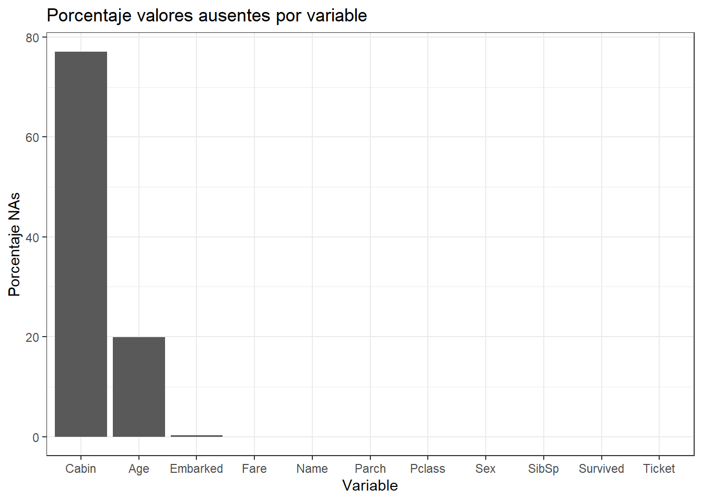
Podemos observar que las variables “Cabin”, “Age” y “Embarked” contienen valores ausentes. La gran mayoría de algoritmos no aceptan observaciones incompletas, por lo que, cuando el set de datos contiene valores ausentes, se puede:
Eliminar aquellas observaciones que estén incompletas.
Eliminar aquellas variables que contengan valores ausentes.
Tratar de estimar los valores ausentes empleando el resto de información disponible (imputación).
Las primeras dos opciones, aunque sencillas, suponen perder información. La eliminación de observaciones solo puede aplicarse cuando se dispone de muchas y el porcentaje de registros incompletos es muy bajo. En el caso de eliminar variables, el impacto dependerá de cuanta información aporten dichas variables al modelo.
Cuando se emplea imputación, es muy importante tener en cuenta el riesgo que se corre al introducir valores en predictores que tengan mucha influencia en el modelo. Supóngase un estudio médico en el que, cuando uno de los predictores es positivo, el modelo predice casi siempre que el paciente está sano. Para un paciente cuyo valor de este predictor se desconoce, el riesgo de que la imputación sea errónea es muy alto, por lo que es preferible obtener una predicción basada únicamente en la información disponible. Esta es otra muestra de la importancia que tiene que el analista conozca el problema al que se enfrenta y pueda así tomar la mejor decisión.
En el conjunto de datos Titanic, si se eliminan las observaciones incompletas, se pasa de 891 observaciones a 714, por lo que esta no es una opción.
nrow(datos)[1] 891nrow(datos[complete.cases(datos),])[1] 183La variable Cabin está ausente para casi un 80% de las observaciones, con un porcentaje tan alto de valores ausentes, no es conveniente imputarla, se excluye directamente del modelo. Esto deja al modelo con dos variables que requieren de imputación: Age y Embarked.
La imputación es un proceso complejo que debe de realizarse con detenimiento, identificando cuidadosamente qué variables son las adecuadas para cada imputación. La librería recipes permite 4 métodos de imputación distintos:
step_impute_bag(): imputación vía Bagged Trees.step_impute_knn(): imputación vía K-Nearest Neighbors.step_impute_mean(): imputación vía media del predictor (predictores continuos).step_impute_mode(): imputación vía moda del predictor (predictores cualitativos).
Como ya vimos en su momento, las librerías Hmisc, missForest y MICE también permiten aplicar otros métodos.
Se imputa la variable Embarked con el valor C (más frecuene). Como no existe una función step() que haga sustituciones por valores concretos, se realiza una sustitución de forma externa al recipe.
datos <- datos %>%
mutate(Embarked = replace(Embarked, is.na(Embarked), "C"))La variable Age se imputa con el método bagging empleando todos los otros predictores.
library(recipes)
# Se crea un objeto recipe() con la variable respuesta y los predictores.
# Las variables *PassengerId*, *Name*, *Ticket* no parecen aportar información
# relevante sobre la supervivencia de los pasajeros. Excluyendo todas estas
# variables, se propone como modelo inicial el formado por los predictores:
# Pclass + Sex + SibSp + Parch + Fare + Embarked + Age.
objeto_recipe <- recipe(formula = Survived ~ Pclass + Sex + SibSp + Parch +
Fare + Embarked + Age,
data = datos)
objeto_recipeRecipe
Inputs:
role #variables
outcome 1
predictor 7objeto_recipe <- objeto_recipe %>% step_impute_bag(Age)
objeto_recipeRecipe
Inputs:
role #variables
outcome 1
predictor 7
Operations:
Bagged tree imputation for AgeNOTA: este objeto no es la imputación, es la recipe para realizarla. La idea es seguir haciendo pasos de pre-proceso y al final aplicarlos a nuestros datos
9.1.6.2 Variables con varianza próxima a cero
No se deben incluir en el modelo predictores que contengan un único valor (cero-varianza) ya que no aportan información. Tampoco es conveniente incluir predictores que tengan una varianza próxima a cero, es decir, predictores que toman solo unos pocos valores, de los cuales, algunos aparecen con muy poca frecuencia. El problema con estos últimos es que pueden convertirse en predictores con varianza cero cuando se dividen las observaciones por validación cruzada o bootstrap.
La función nearZeroVar() del paquete caret y step_nzv() del paquete recipe identifican como predictores potencialmente problemáticos aquellos que tienen un único valor (cero varianza) o que cumplen las dos siguientes condiciones:
Ratio de frecuencias: ratio entre la frecuencia del valor más común y la frecuencia del segundo valor más común. Este ratio tiende a 1 si las frecuencias están equidistribuidas y a valores grandes cuando la frecuencia del valor mayoritario supera por mucho al resto (el denominador es un número decimal pequeño). Valor por defecto freqCut = 95/5.
Porcentaje de valores únicos: número de valores únicos dividido entre el total de muestras (multiplicado por 100). Este porcentaje se aproxima a cero cuanto mayor es la variedad de valores. Valor por defecto uniqueCut = 10.
datos %>% dplyr::select(Pclass, Sex, SibSp, Parch, Fare, Embarked, Age) %>%
nearZeroVar(saveMetrics = TRUE) freqRatio percentUnique zeroVar nzv
Pclass 2.273148 0.3367003 FALSE FALSE
Sex 1.837580 0.2244669 FALSE FALSE
SibSp 2.909091 0.7856341 FALSE FALSE
Parch 5.745763 0.7856341 FALSE FALSE
Fare 1.023810 27.8338945 FALSE FALSE
Embarked 3.788235 0.3367003 FALSE FALSE
Age 1.111111 9.8765432 FALSE FALSEEntre los predictores incluidos en el modelo, no se detecta ninguno con varianza cero o próxima a cero. Actualizamos nuestro objeto recipe
objeto_recipe <- objeto_recipe %>% step_nzv(all_predictors())Si bien la eliminación de predictores no informativos podría considerarse un paso propio del proceso de selección de predictores, dado que consiste en un filtrado por varianza, tiene que realizarse antes de estandarizar los datos, ya que después, todos los predictores tienen varianza 1.
9.1.6.3 Normalización de datos
Como ya hemos mencionado anteriormente, también podemos transformar nuestros datos para garantizar normalidad utilizando transformaciones Box-Cox (“BoxCox”) o Yeo-Johnson (“YeoJohnson”). Esto se puede hacer de forma sencilla mediante
objeto_recipe <- objeto_recipe %>% step_BoxCox(all_numeric())ó
objeto_recipe <- objeto_recipe %>% step_YeoJohnson(all_numeric())respectivamente.
9.1.6.4 Estandarización y escalado
Cuando los predictores son numéricos, la escala en la que se miden, así como la magnitud de su varianza pueden influir en gran medida en el modelo. Muchos algoritmos de machine learning (SVM, redes neuronales, lasso…) son sensibles a esto, de forma que, si no se igualan de alguna forma los predictores, aquellos que se midan en una escala mayor o que tengan más varianza, dominarán el modelo aunque no sean los que más relación tienen con la variable respuesta. Existen principalmente 2 estrategias para evitarlo:
Centrado: consiste en restarle a cada valor la media del predictor al que pertenece. Si los datos están almacenados en un dataframe, el centrado se consigue restándole a cada valor la media de la columna en la que se encuentra. Como resultado de esta transformación, todos los predictores pasan a tener una media de cero, es decir, los valores se centran en torno al origen.
Normalización (estandarización): consiste en transformar los datos de forma que todos los predictores estén aproximadamente en la misma escala (centrado + escalado).
Con este código se normalizan todas las variables numéricas.
objeto_recipe <- objeto_recipe %>% step_center(all_numeric())
objeto_recipe <- objeto_recipe %>% step_scale(all_numeric())Nunca se debe estandarizar las variables después de ser binarizadas (ver siguiente sección).
9.1.6.5 Binarización de variables cuantitativas
La binarización consiste en crear nuevas variables dummy con cada uno de los niveles de las variables cualitativas. Por ejemplo, una variable llamada color que contenga los niveles rojo, verde y azul, se convertirá en tres nuevas variables (color_rojo, color_verde, color_azul), todas con el valor 0 excepto la que coincide con la observación, que toma el valor 1.
Por defecto, la función step_dummy(all_nominal()) binariza todas las variables almacenadas como tipo factor o character. Además, elimina uno de los niveles para evitar redundancias. Volviendo al ejemplo anterior, no es necesario almacenar las tres variables, ya que, si color_rojo y color_verde toman el valor 0, la variable color_azul toma necesariamente el valor 1. Si color_rojo o color_verde toman el valor 1, entonces color_azul es necesariamente 0.
objeto_recipe <- objeto_recipe %>% step_dummy(all_nominal(),
-all_outcomes())Finalmente, esto es lo que hemos preparado para pre-procesar nuestros datos:
objeto_recipeRecipe
Inputs:
role #variables
outcome 1
predictor 7
Operations:
Bagged tree imputation for Age
Sparse, unbalanced variable filter on all_predictors()
Centering for all_numeric()
Scaling for all_numeric()
Dummy variables from all_nominal(), -all_outcomes()9.1.6.6 Obtención de datos para entrenar
Una vez que se ha creado el objeto recipe con todas las transformaciones de preprocesado, se aprende con los datos de entrenamiento y se aplican a los dos conjuntos de datos.
IMPORTANTE Para nosotros el objeto datos es nuestro train, y aplicamos estas recipe a estos datos y luego también tenemos que aplicarlo a los datos train para que las variables con las que hagamos predicciones estén en las mismas escalas, sin valores faltantes, cero-varianza, etc.
- Paso 1: Se entrena el objeto
recipe
trained_recipe <- prep(objeto_recipe, training = datos)
trained_recipeRecipe
Inputs:
role #variables
outcome 1
predictor 7
Training data contained 891 data points and 177 incomplete rows.
Operations:
Bagged tree imputation for Age [trained]
Sparse, unbalanced variable filter removed <none> [trained]
Centering for Fare, Age [trained]
Scaling for Fare, Age [trained]
Dummy variables from Pclass, Sex, SibSp, Parch, Embarked [trained]- Paso 2: Se aplican las transformaciones al conjunto de entrenamiento y de test (en nuestro caso sólo tenemos train)
datos_train_transf <- bake(trained_recipe, new_data = datos)
# datos_test_prep <- bake(trained_recipe, new_data = datos_test)
glimpse(datos_train_transf)Rows: 891
Columns: 21
$ Fare <dbl> -0.50216314, 0.78640362, -0.48857985, 0.42049407, -0.48606443, -0.47784805, 0.3955…
$ Age <dbl> -0.57161891, 0.62175764, -0.27327478, 0.39799954, 0.39799954, -0.04795576, 1.81513…
$ Survived <fct> No, Si, Si, Si, No, No, No, No, Si, Si, Si, Si, No, No, No, Si, No, Si, No, Si, No…
$ Pclass_X2 <int> 0, 0, 0, 0, 0, 0, 0, 0, 0, 1, 0, 0, 0, 0, 0, 1, 0, 1, 0, 0, 1, 1, 0, 0, 0, 0, 0, 0…
$ Pclass_X3 <int> 1, 0, 1, 0, 1, 1, 0, 1, 1, 0, 1, 0, 1, 1, 1, 0, 1, 0, 1, 1, 0, 0, 1, 0, 1, 1, 1, 0…
$ Sex_male <int> 1, 0, 0, 0, 1, 1, 1, 1, 0, 0, 0, 0, 1, 1, 0, 0, 1, 1, 0, 0, 1, 1, 0, 1, 0, 0, 1, 1…
$ SibSp_X1 <int> 1, 1, 0, 1, 0, 0, 0, 0, 0, 1, 1, 0, 0, 1, 0, 0, 0, 0, 1, 0, 0, 0, 0, 0, 0, 1, 0, 0…
$ SibSp_X2 <int> 0, 0, 0, 0, 0, 0, 0, 0, 0, 0, 0, 0, 0, 0, 0, 0, 0, 0, 0, 0, 0, 0, 0, 0, 0, 0, 0, 0…
$ SibSp_X3 <int> 0, 0, 0, 0, 0, 0, 0, 1, 0, 0, 0, 0, 0, 0, 0, 0, 0, 0, 0, 0, 0, 0, 0, 0, 1, 0, 0, 1…
$ SibSp_X4 <int> 0, 0, 0, 0, 0, 0, 0, 0, 0, 0, 0, 0, 0, 0, 0, 0, 1, 0, 0, 0, 0, 0, 0, 0, 0, 0, 0, 0…
$ SibSp_X5 <int> 0, 0, 0, 0, 0, 0, 0, 0, 0, 0, 0, 0, 0, 0, 0, 0, 0, 0, 0, 0, 0, 0, 0, 0, 0, 0, 0, 0…
$ SibSp_X8 <int> 0, 0, 0, 0, 0, 0, 0, 0, 0, 0, 0, 0, 0, 0, 0, 0, 0, 0, 0, 0, 0, 0, 0, 0, 0, 0, 0, 0…
$ Parch_X1 <int> 0, 0, 0, 0, 0, 0, 0, 1, 0, 0, 1, 0, 0, 0, 0, 0, 1, 0, 0, 0, 0, 0, 0, 0, 1, 0, 0, 0…
$ Parch_X2 <int> 0, 0, 0, 0, 0, 0, 0, 0, 1, 0, 0, 0, 0, 0, 0, 0, 0, 0, 0, 0, 0, 0, 0, 0, 0, 0, 0, 1…
$ Parch_X3 <int> 0, 0, 0, 0, 0, 0, 0, 0, 0, 0, 0, 0, 0, 0, 0, 0, 0, 0, 0, 0, 0, 0, 0, 0, 0, 0, 0, 0…
$ Parch_X4 <int> 0, 0, 0, 0, 0, 0, 0, 0, 0, 0, 0, 0, 0, 0, 0, 0, 0, 0, 0, 0, 0, 0, 0, 0, 0, 0, 0, 0…
$ Parch_X5 <int> 0, 0, 0, 0, 0, 0, 0, 0, 0, 0, 0, 0, 0, 1, 0, 0, 0, 0, 0, 0, 0, 0, 0, 0, 0, 1, 0, 0…
$ Parch_X6 <int> 0, 0, 0, 0, 0, 0, 0, 0, 0, 0, 0, 0, 0, 0, 0, 0, 0, 0, 0, 0, 0, 0, 0, 0, 0, 0, 0, 0…
$ Embarked_C <int> 0, 1, 0, 0, 0, 0, 0, 0, 0, 1, 0, 0, 0, 0, 0, 0, 0, 0, 0, 1, 0, 0, 0, 0, 0, 0, 1, 0…
$ Embarked_Q <int> 0, 0, 0, 0, 0, 1, 0, 0, 0, 0, 0, 0, 0, 0, 0, 0, 1, 0, 0, 0, 0, 0, 1, 0, 0, 0, 0, 0…
$ Embarked_S <int> 1, 0, 1, 1, 1, 0, 1, 1, 1, 0, 1, 1, 1, 1, 1, 1, 0, 1, 1, 0, 1, 1, 0, 1, 1, 1, 0, 1…9.2 Visualización
Podemos empezar con unos gráficos para las variables continuas de la siguiente forma:
library(caret)
library(AppliedPredictiveModeling)
transparentTheme(trans = .4)
featurePlot(x = select(datos_train_transf, c("Age", "Fare")),
y = datos_train_transf$Survived,
plot = "pairs",
## Add a key at the top
auto.key = list(columns = 2))
ó
transparentTheme(trans = .9)
featurePlot(x = select(datos_train_transf, c("Age", "Fare")),
y = datos_train_transf$Survived,
plot = "density",
## Pass in options to xyplot() to
## make it prettier
scales = list(x = list(relation="free"),
y = list(relation="free")),
adjust = 1.5,
pch = "|",
layout = c(2, 1),
auto.key = list(columns = 2))
ó
featurePlot(x = select(datos_train_transf, c("Age", "Fare")),
y = datos_train_transf$Survived,
plot = "box",
## Pass in options to bwplot()
scales = list(y = list(relation="free"),
x = list(rot = 90)),
layout = c(2,1),
auto.key = list(columns = 2))9.3 Ejemplo completo: creación de modelo diagnóstico para cáncer de mama
Para illustrar el uso de esta librería con datos reales, usaremos una base de datos que contiene datos de un estudio sobre diagnóstico del cáncer de mama por imagen. Mediante una punción con aguja fina se extrae una muestra del tejido sospechoso de la paciente. La muestra se tiñe para resaltar los núcleos de las células y se determinan los límites exactos de los núcleos. Las variables consideradas corresponden a distintos aspectos de la forma del núcleo. El fichero breast.csv accesible en el Moodle contiene 30 variables explicativas medidas en pacientes cuyos tumores fueron diagnosticados posteriormente como benignos o malignos (variable diagnosis considerada como la variable resultado). Hay 569 observaciones, de las que 357 corresponden a tumores benignos y 212 a tumores malignos. La primera variable (id) corresponde al identificador de paciente. Información adicional sobre estos datos se pueden encontrar aquí.
breast <- readr::read_delim("data/breast.csv", delim=",")Podemos hacer servir caret o recipes para llevar a cabo todos estos pasos. Lo haremos con recipes que controlamos un poco más qué estamos llevando a cabo en cada momento.
Paso 1: Visualizar la información de la que disponemos y ver si las variables están en el formato que corresponde
dplyr::glimpse(breast)Rows: 569
Columns: 32
$ id <dbl> 842302, 842517, 84300903, 84348301, 84358402, 843786, 844359, 8445820…
$ diagnosis <chr> "M", "M", "M", "M", "M", "M", "M", "M", "M", "M", "M", "M", "M", "M",…
$ radius_mean <dbl> 17.990, 20.570, 19.690, 11.420, 20.290, 12.450, 18.250, 13.710, 13.00…
$ texture_mean <dbl> 10.38, 17.77, 21.25, 20.38, 14.34, 15.70, 19.98, 20.83, 21.82, 24.04,…
$ perimeter_mean <dbl> 122.80, 132.90, 130.00, 77.58, 135.10, 82.57, 119.60, 90.20, 87.50, 8…
$ area_mean <dbl> 1001.0, 1326.0, 1203.0, 386.1, 1297.0, 477.1, 1040.0, 577.9, 519.8, 4…
$ smoothness_mean <dbl> 0.11840, 0.08474, 0.10960, 0.14250, 0.10030, 0.12780, 0.09463, 0.1189…
$ compactness_mean <dbl> 0.27760, 0.07864, 0.15990, 0.28390, 0.13280, 0.17000, 0.10900, 0.1645…
$ concavity_mean <dbl> 0.30010, 0.08690, 0.19740, 0.24140, 0.19800, 0.15780, 0.11270, 0.0936…
$ `concave points_mean` <dbl> 0.14710, 0.07017, 0.12790, 0.10520, 0.10430, 0.08089, 0.07400, 0.0598…
$ symmetry_mean <dbl> 0.2419, 0.1812, 0.2069, 0.2597, 0.1809, 0.2087, 0.1794, 0.2196, 0.235…
$ fractal_dimension_mean <dbl> 0.07871, 0.05667, 0.05999, 0.09744, 0.05883, 0.07613, 0.05742, 0.0745…
$ radius_se <dbl> 1.0950, 0.5435, 0.7456, 0.4956, 0.7572, 0.3345, 0.4467, 0.5835, 0.306…
$ texture_se <dbl> 0.9053, 0.7339, 0.7869, 1.1560, 0.7813, 0.8902, 0.7732, 1.3770, 1.002…
$ perimeter_se <dbl> 8.589, 3.398, 4.585, 3.445, 5.438, 2.217, 3.180, 3.856, 2.406, 2.039,…
$ area_se <dbl> 153.40, 74.08, 94.03, 27.23, 94.44, 27.19, 53.91, 50.96, 24.32, 23.94…
$ smoothness_se <dbl> 0.006399, 0.005225, 0.006150, 0.009110, 0.011490, 0.007510, 0.004314,…
$ compactness_se <dbl> 0.049040, 0.013080, 0.040060, 0.074580, 0.024610, 0.033450, 0.013820,…
$ concavity_se <dbl> 0.05373, 0.01860, 0.03832, 0.05661, 0.05688, 0.03672, 0.02254, 0.0248…
$ `concave points_se` <dbl> 0.015870, 0.013400, 0.020580, 0.018670, 0.018850, 0.011370, 0.010390,…
$ symmetry_se <dbl> 0.03003, 0.01389, 0.02250, 0.05963, 0.01756, 0.02165, 0.01369, 0.0148…
$ fractal_dimension_se <dbl> 0.006193, 0.003532, 0.004571, 0.009208, 0.005115, 0.005082, 0.002179,…
$ radius_worst <dbl> 25.38, 24.99, 23.57, 14.91, 22.54, 15.47, 22.88, 17.06, 15.49, 15.09,…
$ texture_worst <dbl> 17.33, 23.41, 25.53, 26.50, 16.67, 23.75, 27.66, 28.14, 30.73, 40.68,…
$ perimeter_worst <dbl> 184.60, 158.80, 152.50, 98.87, 152.20, 103.40, 153.20, 110.60, 106.20…
$ area_worst <dbl> 2019.0, 1956.0, 1709.0, 567.7, 1575.0, 741.6, 1606.0, 897.0, 739.3, 7…
$ smoothness_worst <dbl> 0.1622, 0.1238, 0.1444, 0.2098, 0.1374, 0.1791, 0.1442, 0.1654, 0.170…
$ compactness_worst <dbl> 0.6656, 0.1866, 0.4245, 0.8663, 0.2050, 0.5249, 0.2576, 0.3682, 0.540…
$ concavity_worst <dbl> 0.71190, 0.24160, 0.45040, 0.68690, 0.40000, 0.53550, 0.37840, 0.2678…
$ `concave points_worst` <dbl> 0.26540, 0.18600, 0.24300, 0.25750, 0.16250, 0.17410, 0.19320, 0.1556…
$ symmetry_worst <dbl> 0.4601, 0.2750, 0.3613, 0.6638, 0.2364, 0.3985, 0.3063, 0.3196, 0.437…
$ fractal_dimension_worst <dbl> 0.11890, 0.08902, 0.08758, 0.17300, 0.07678, 0.12440, 0.08368, 0.1151…Vemos que todas las variables excepto nuestro resultado (diagnosis: tipo de tumor) son continuas. Como la variable resultado es character, es recomendable pasarla a factor
breast <- mutate(breast, diagnosis=as.factor(diagnosis))Paso 2: Puesto que no tenemos datos de entrenamiento y test, lo crearemos nosotros
library(caret)
set.seed(123)
train <- createDataPartition(y = breast$diagnosis, p = 0.7,
list = FALSE, times = 1)
breast_train <- breast[train, ]
breast_test <- breast[-train, ]Paso 3: Crear un objeto recipe con la variable respuesta y los predictores
library(recipes)
objeto_recipe <- recipe(formula = diagnosis ~ . ,
data = breast_train)
# debemos eliminar la variable id que irrelevante para predecir
objeto_recipe <- objeto_recipe %>% step_rm(id)
objeto_recipeRecipe
Inputs:
role #variables
outcome 1
predictor 31
Operations:
Variables removed idPaso 4: Veamos si tenemos datos faltantes
any(is.na(breast))[1] FALSEPaso 5: Puesto que no hay, podemos pasar al siguiente paso que sería ver si hay que eliminar variablaes con varianza próxima a cero. Empecemos viendo si hay alguna. Puesto que todas son continuas, esto nos facilitará la escritura en R no teniendo que usar la función select () para seleccionar las varaibles continuas
breast_train %>% nearZeroVar(saveMetrics = TRUE) freqRatio percentUnique zeroVar nzv
id 1.000000 100.0000000 FALSE FALSE
diagnosis 1.677852 0.5012531 FALSE FALSE
radius_mean 1.000000 86.2155388 FALSE FALSE
texture_mean 1.500000 88.9724311 FALSE FALSE
perimeter_mean 1.000000 93.9849624 FALSE FALSE
area_mean 1.000000 95.2380952 FALSE FALSE
smoothness_mean 1.000000 85.7142857 FALSE FALSE
compactness_mean 1.000000 96.4912281 FALSE FALSE
concavity_mean 3.000000 95.7393484 FALSE FALSE
concave points_mean 3.000000 96.7418546 FALSE FALSE
symmetry_mean 1.333333 81.2030075 FALSE FALSE
fractal_dimension_mean 1.500000 92.2305764 FALSE FALSE
radius_se 1.000000 95.4887218 FALSE FALSE
texture_se 1.000000 93.4837093 FALSE FALSE
perimeter_se 2.000000 94.9874687 FALSE FALSE
area_se 1.500000 95.4887218 FALSE FALSE
smoothness_se 1.000000 97.2431078 FALSE FALSE
compactness_se 1.500000 96.2406015 FALSE FALSE
concavity_se 3.000000 95.2380952 FALSE FALSE
concave points_se 2.000000 91.7293233 FALSE FALSE
symmetry_se 1.000000 90.9774436 FALSE FALSE
fractal_dimension_se 1.000000 97.2431078 FALSE FALSE
radius_worst 1.333333 83.2080201 FALSE FALSE
texture_worst 1.000000 92.2305764 FALSE FALSE
perimeter_worst 1.500000 93.4837093 FALSE FALSE
area_worst 1.000000 96.4912281 FALSE FALSE
smoothness_worst 1.000000 78.9473684 FALSE FALSE
compactness_worst 1.500000 95.7393484 FALSE FALSE
concavity_worst 2.000000 96.7418546 FALSE FALSE
concave points_worst 2.000000 89.9749373 FALSE FALSE
symmetry_worst 1.500000 90.7268170 FALSE FALSE
fractal_dimension_worst 1.000000 96.4912281 FALSE FALSEVemos que tampoco hay ninguna variable que tenga que ser eliminada por este motivo. Este paso no sería necesario realizarlo, pero lo dejamos para que sirva como ejemplo para otros casos
objeto_recipe <- objeto_recipe %>% step_nzv(all_predictors())Paso 6: El siguiente paso sería eliminar aquellas variables con correlación elevada. El argumento threshold nos permite elegir el grado de correlación que por defecto es 0.9.
objeto_recipe <- objeto_recipe %>% step_corr(all_predictors())Paso 7: Ahora centraremos y normalizaremos los datos (esto último no tiene porqué sere necesario). Recordamos que también se pueden transformar los datos para garantizar normalidad usando preProcess() con el métodos Box-Cox o Yeo-Johnson de caret().
objeto_recipe <- objeto_recipe %>% step_center(all_numeric())
objeto_recipe <- objeto_recipe %>% step_scale(all_numeric())Paso 8: La binarización de variables no es necesario
Paso 9: Aprendizaje de las transformaciones de pre-procesado y aplicación a nuestros conjuntos de datos. Empezamos con el entrenamiento
trained_recipe <- prep(objeto_recipe, training = breast_train)
trained_recipeRecipe
Inputs:
role #variables
outcome 1
predictor 31
Training data contained 399 data points and no missing data.
Operations:
Variables removed id [trained]
Sparse, unbalanced variable filter removed <none> [trained]
Correlation filter on perimeter_mean, perimeter_se, radius_worst, texture_worst, perim... [trained]
Centering for texture_mean, area_mean, smoothness_mean, compactness_mean, symmetry_m... [trained]
Scaling for texture_mean, area_mean, smoothness_mean, compactness_mean, symmetry_m... [trained]y continuamos con la aplicación a nuestros datos test y train
breast_train_prep <- bake(trained_recipe, new_data = breast_train)
breast_test_prep <- bake(trained_recipe, new_data = breast_test)
glimpse(breast_train_prep)Rows: 399
Columns: 20
$ texture_mean <dbl> 0.4958449, 0.2881680, -1.1536351, -0.8289907, 0.3955871, 0.6319091, 1…
$ area_mean <dbl> 1.57356630, -0.76566930, 1.84274018, -0.50508607, -0.21644003, -0.382…
$ smoothness_mean <dbl> 0.86440333, 3.11247741, 0.22892950, 2.10801878, 1.49987716, 2.0738535…
$ compactness_mean <dbl> 1.048709540, 3.387816481, 0.537501491, 1.239233573, 1.135482862, 1.67…
$ symmetry_mean <dbl> 0.917687339, 2.799401020, -0.008914095, 0.981836669, 1.370296501, 1.9…
$ fractal_dimension_mean <dbl> -0.42639724, 4.98925612, -0.59414511, 1.90761198, 1.67334340, 1.58368…
$ texture_se <dbl> -0.80849714, -0.08080732, -0.81953767, -0.60483862, 0.35489967, -0.38…
$ area_se <dbl> 1.31855202, -0.28815366, 1.32841354, -0.28911575, 0.28261170, -0.3581…
$ smoothness_se <dbl> -0.30223259, 0.65056583, 1.41666726, 0.13553966, 0.55238896, -0.43710…
$ compactness_se <dbl> 0.85265446, 2.83595905, -0.03500649, 0.47288495, 0.29133100, 0.563087…
$ concavity_se <dbl> 0.30900888, 1.07030125, 1.08153957, 0.24241140, -0.25040990, 0.192879…
$ `concave points_se` <dbl> 1.630026033, 1.284095782, 1.316696538, -0.038046018, 0.525222612, 0.1…
$ symmetry_se <dbl> 0.24097383, 4.68326185, -0.35005507, 0.13927857, -0.67308705, 0.11295…
$ fractal_dimension_se <dbl> 0.392387187, 2.560158937, 0.646704166, 0.631276850, 0.785550017, 0.00…
$ smoothness_worst <dbl> 0.47944015, 3.24454482, 0.18348094, 1.94655226, 1.36731780, 1.5744892…
$ compactness_worst <dbl> 1.05036897, 3.78488958, -0.30822603, 1.67179466, 0.70190019, 1.765875…
$ `concave points_worst` <dbl> 1.96343178, 2.18407810, 0.73846430, 0.91498136, 0.63346709, 1.4004032…
$ symmetry_worst <dbl> 1.09719973, 5.76429394, -0.82980875, 1.67113661, 0.45383501, 2.277473…
$ fractal_dimension_worst <dbl> 0.17926376, 4.82187666, -0.40772078, 2.18044624, 1.67498733, 1.245619…
$ diagnosis <fct> M, M, M, M, M, M, M, M, M, M, M, M, B, B, M, M, M, M, M, M, M, M, M, …Paso 10: Visualización
Hagamos algunos de los gráficos que hemos visto
library(AppliedPredictiveModeling)
transparentTheme(trans = .4)
featurePlot(x = select(breast_train_prep, 1:6),
y = breast_train_prep$diagnosis,
plot = "pairs",
## Add a key at the top
auto.key = list(columns = 2))9.4 Creación de un modelo predictivo
Una vez que ya hemos preprocesado nuestros datos, podemos pasar a la parte de creación de un modelo. La librería caret tiene varias funciones que intenta reproducir lo que hasta ahora hemos realizado más o menos de forma manual.
La función train se puede usar para:
- evaluar, mediante remuestreo, el efecto de los parámetros de ajuste del modelo - elegir el modelo “óptimo” a través de estos parámetros
- estimar el rendimiento del modelo a partir de un conjunto de entrenamiento
Primero, se debe elegir un modelo específico. Actualmente, hay 238 disponibles que pueden consultarse aquí. Estos modelos los iremos viendo de forma individual a lo largo del curso y estudiaremos los parámetros que potencialmente pueden optimizarse. También se pueden crear modelos definidos por el usuario.

Algoritmo de entrenamiento
El primer paso para ajustar el modelo (línea 1 en el algoritmo a continuación) es elegir un conjunto de parámetros para evaluar. Por ejemplo, si se ajusta a un modelo de mínimos cuadrados parciales (PLS), se debe especificar el número de componentes PLS a evaluar.
Una vez que se han definido el modelo y los valores de los parámetros de ajuste, también se debe especificar el tipo de remuestreo. Actualmente, tiene implementado LOOCV, K-fold CV y Bootstrap. Después del remuestreo, se obtiene una medida de ajuste para cada remuestra que permite guiar al usuario sobre qué valores de parámetros de ajuste deben elegirse. De forma predeterminada, la función elige automáticamente los parámetros de ajuste asociados con el mejor valor, aunque se pueden utilizar diferentes métricas.
Veamos cómo funcionaría en nuestro caso utilizando la regresión logística (dado que nuestro outcome es binario) como método de aprendizaje para la creación de un modelo predictivo.
Partimos del hecho que ya hemos hecho un pre-procesado de datos tal y como hemos mostrado anteriormente y que nuestros datos de entrenamiento y validación se llaman breast_train_prep y breast_test_prep, respectivamente. Por defecto el método utiliza boostrap para evaluar la capacidad predictiva del modelo. La función trainControl() se puede utilizar para especificar el tipo de remuestreo. Podéis encontrar más información sobre esta función aquí:
fitControl <- trainControl(## 10-fold CV
method = "repeatedcv",
number = 10,
## repeated ten times
repeats = 10)Estamos haciendo una estimación de la capacidad predictiva del modelo con un 10-fold CV (argumento number) y lo repetimos 10 veces para garantizar aleatoriedad.
Despues usamos la función train()
set.seed(123)
suppressMessages(fit <- train(diagnosis ~ ., data = breast_train_prep,
method = "glm",
trControl = fitControl))
fitGeneralized Linear Model
399 samples
19 predictor
2 classes: 'B', 'M'
No pre-processing
Resampling: Cross-Validated (10 fold, repeated 10 times)
Summary of sample sizes: 360, 359, 359, 359, 359, 359, ...
Resampling results:
Accuracy Kappa
0.9506731 0.8948839EJERCICIO (Entrega en Moodle: P-Preproceso cáncer de cervix): Vamos analizar los datos pertenecientes a un estudio multicéntrico internacional caso-control de cáncer de cuello uterino realizado en 7 países: Brasil, Marruecos, Filipinas, Tailandia, Perú, España y Colombia. La base de datos contiene información sobre variables identificativas (status es la variable respuesta 0:Control - 1:Caso), demográficas, de riesgo incluyendo la presencia de infección por Virus del Papiloma Humano de 1489 casos de cáncer de cuello uterino y 1421 controles apareados por grupos de edad. |
| > Las variables pueden contener valores en blanco que corresponden a información perdida o que no procede. |
| La información de las variables se puede ver en el siguiente archivo html que se puede visualizar en su totalidad con la barra que hay en la derecha: |
| - Realiza todos los pasos de preprocesado necesarios para crear una base de datos de entrenamiento (70%) y otra de test (30%) que usaremos para otros ejercicios futuros correspondientes a los diferentes métodos de aprendizaje automático que veremos en este curso. Recordemos que la variable resultado es una variable binaria (status: 0-Control/1-Caso). |
10 K vecinos más próximos (KNN)
La regresión de K veinos más próximos (KNN por sus siglas en inglés) es un método no paramétrico que, de manera intuitiva, aproxima la asociación entre las variables independientes y el resultado continuo promediando las observaciones en la misma vecindad. El usuario debe establecer el número de vecinos o puede elegirlo mediante validación cruzada (lo veremos más adelante) para seleccionar el tamaño que minimiza el error cuadrático medio.
Si bien el método es bastante atractivo, rápidamente se vuelve poco práctico cuando aumenta la dimensión, es decir, cuando hay muchas variables independientes.
Los métodos del vecino más cercano proporcionan una forma bastante diferente de construir clasificadores y tienen fortalezas (supuestos mínimos, límites de decisión flexibles) y debilidades (carga computacional, falta de interpretabilidad) en comparación con los modelos de regresión logística.
En principio, la idea es sencilla. Recordemos que el conjunto de entrenamiento tendrá tanto predictores \(X\) como una variable resultado \(Y\) mientras que el conjunto de prueba sólo tendrá valores de \(X\) conocidos. Ambos conjunto de datos son necesarios.
Comenzamos eligiendo un número entero positivo \(k\) que especificará el número de vecinos que se utilizarán en la clasificación. Para clasificar un punto \(x\) en el conjunto test, se buscarán los \(k\) puntos más cercanos en el conjunto de entrenamiento, y se elige la clase que tenga la representación más alta entre los \(k\) puntos. De aquí que el algoritmo se llame KNN (“k vecinos más cercanos”).

Algoritmo KNN
Por ejemplo, supongamos que \(k=10\) y los 10 vecinos más cercanos a \(x\) tienen clases 1,1,3,2,3,3,3,2,3,2. Como hay cinco 3, tres 2 y dos 1, el punto \(x\) se asigna a la clase 3. Supongamos que para otro \(x\) los 10 vecinos más cercanos tienen clases 1,1,1,2,3,1,3,3,3,2. En este caso hay cuatro 1s y cuatro 3s, por lo que hay un empate en el liderato. El algoritmo vecino más cercano elegirá entre 1 y 3 al azar.
Aunque, en principio, KNN es sencillo, surgen algunos problemas. Primero, ¿cómo deberíamos elegir \(k\)? No hay una respuesta fácil, pero puede ayudar pensar en los valores extremos para \(k\). Podemos seleccionar \(k\) lo mas grande posible. Por ejemplo, supongamos que el conjunto de entrenamiento tiene 10 observaciones, con clases 1,1,1,2,2,2,3,3,3,3. Para cualquier punto del conjunto de prueba, \(k=10\) los vecinos más cercanos incluirán TODOS los puntos del conjunto de entrenamiento y, por lo tanto, cada punto del conjunto de prueba se clasificará en la clase 3. Este clasificador tiene una varianza baja (cero), pero probablemente un sesgo alto.
Si seleccionamos \(k\) lo mas pequeño posible, estaríamos en el caso \(k=1\). En este caso, cada punto del conjunto de prueba se coloca en la misma clase que su vecino más cercano en el conjunto de entrenamiento. Esto puede conducir a un clasificador de alta varianza y muy irregular, pero el sesgo tenderá a ser pequeño.
Un segundo tema que es relativamente fácil de abordar se refiere a las escalas en las que se miden los valores de \(x\). Si por ejemplo una variable \(x\) tienen un rango de 2 a 4, mientras que otra tiene un rango de 2000 a 4000, la distancia estará dominada por la segunda variable. La solución que se suele utilizar es normalizar todas las variables (cambiar su escala para que su media sea 0 y su desviación estándar sea 1).
Existen muchas liberías para llevar a cabo KNN. Nosotros usaremos la libería class para ilustrar el ejemplo de cáncer de mama visto anteriormente y para el que ya hemos normalizado nuestros predictores.
library(class)
# para asegurarnos que usamos knn de class
fit.knn <- class::knn(train=select(breast_train_prep, !diagnosis),
test=select(breast_test_prep, !diagnosis),
cl=breast_train_prep$diagnosis,
k=10, prob=TRUE)
head(fit.knn)[1] M M M M M M
Levels: B MLa probabilidad que cada individuo de la muestra test pertenezca al grupo asignado la podemos obtener con
prob <- attr(fit.knn, "prob")
head(prob)[1] 1.0 1.0 1.0 0.6 0.7 1.0A continuación podemos crear un gráfico. Esto es algo complejo, ya que queremos representar los datos de la muestra test coloreados por la clase a la que fueron asignados por el clasificador kNN (como fondo de la imagen) con los datos de entrenamiento (usando un símbolo diferente) y el límite de decisión. Este gráfico sólo lo podemos hacer para dos variables predictoras. Por ejemplo symmetry_worst y texture_se.
plot.df <- breast_test_prep %>%
select(symmetry_worst, texture_se ) %>%
mutate(predicted = as.factor(fit.knn))
# Usamos un 'convex hull' para determinar los puntos que determinan los límites
# de cada cluster
plot.df1 <- data.frame(x = plot.df$symmetry_worst,
y = plot.df$texture_se,
predicted = plot.df$predicted)
find_hull <- function(df) df[chull(df$x, df$y), ]
boundary <- plyr::ddply(plot.df1, .variables = "predicted", .fun = find_hull)
ggplot(plot.df1, aes(x, y, color = predicted, fill = predicted)) +
geom_point(size = 3) +
geom_polygon(data = boundary, aes(x,y), alpha = 0.5) +
xlab("symmetry_worst") + ylab("texture_se")
Podemos ver la matriz de confusión
tt <- table(predict=fit.knn, Actual=breast_test_prep$diagnosis)
tt Actual
predict B M
B 105 9
M 2 54y la precisión es
sum(diag(tt)/sum(tt))[1] 0.9352941Podemos repetir los mismos cálculos para \(k=15\)
fit.knn2 <- class::knn(train=select(breast_train_prep, !diagnosis),
test=select(breast_test_prep, !diagnosis),
cl=breast_train_prep$diagnosis,
k=10)
fit.knn [1] M M M M M M B B M M M B B M B B M B B M B M M B M B B B B B B M B B M M B B B B B B B B M M B B M
[50] B B M B B M B M M B B M M B M B B M B B M B M M M M B B B M B B B M B B B B B B B B B B M M B M M
[99] M B B B B M B B B B B B B M B B B B B B B B B B M B B B B M B M M B B B M B M B B B B B B B M M B
[148] B B M B B B B B M B B B B B B B B B B M M M B
attr(,"prob")
[1] 1.0 1.0 1.0 0.6 0.7 1.0 0.5 1.0 1.0 0.9 0.6 1.0 1.0 1.0 1.0 1.0 0.9 1.0 0.6 1.0 1.0 1.0 0.8 0.8
[25] 0.5 1.0 1.0 0.6 1.0 1.0 0.9 0.9 0.6 1.0 0.8 0.8 0.8 1.0 1.0 1.0 1.0 1.0 0.6 1.0 1.0 1.0 0.9 1.0
[49] 1.0 0.7 1.0 1.0 1.0 1.0 0.8 1.0 0.9 0.9 1.0 0.6 0.7 1.0 0.7 1.0 0.5 1.0 1.0 1.0 0.8 1.0 0.7 1.0
[73] 1.0 1.0 1.0 1.0 1.0 0.9 0.5 1.0 1.0 0.9 0.5 1.0 0.6 1.0 1.0 1.0 1.0 0.9 1.0 1.0 0.7 0.7 0.7 1.0
[97] 0.9 1.0 1.0 0.9 0.9 1.0 1.0 1.0 1.0 1.0 1.0 0.8 1.0 1.0 1.0 1.0 1.0 1.0 1.0 1.0 1.0 0.9 1.0 0.7
[121] 1.0 1.0 1.0 0.8 1.0 0.8 1.0 0.6 1.0 1.0 0.9 0.8 0.7 0.9 1.0 1.0 0.5 0.9 1.0 0.8 1.0 0.9 1.0 0.6
[145] 0.9 1.0 0.9 0.9 1.0 0.9 1.0 0.9 1.0 1.0 1.0 1.0 1.0 1.0 1.0 0.7 1.0 1.0 1.0 0.7 0.8 0.9 1.0 1.0
[169] 1.0 1.0
Levels: B Mtt <- table(predict=fit.knn2, Actual=breast_test_prep$diagnosis)
tt Actual
predict B M
B 106 9
M 1 54sum(diag(tt)/sum(tt))[1] 0.9411765La precisión es peor. Entonces, parece que la precisión (entre otras medidas) nos puede ayudar a determinar cómo escoger \(k\).
Este parámetro se conoce como hiper-parámetro del modelo de predicción, y aquí es donde los métodos de validación cruzada son muy útiles.
Podemos usar la librería caret para realizar estos cálculos:
fitControl <- trainControl(## LOCCV
method = "loocv")
fit.knn3 <- train(diagnosis ~ .,
data=breast_train_prep,
method="knn",
trControl = fitControl,
tuneLength=10)
# no necesario pero se podría poner
# preProcess = c("center, "scale")
fit.knn3k-Nearest Neighbors
399 samples
19 predictor
2 classes: 'B', 'M'
No pre-processing
Resampling: Leave-One-Out Cross-Validation
Summary of sample sizes: 398, 398, 398, 398, 398, 398, ...
Resampling results across tuning parameters:
k Accuracy Kappa
5 0.9423559 0
7 0.9448622 0
9 0.9523810 0
11 0.9448622 0
13 0.9423559 0
15 0.9373434 0
17 0.9373434 0
19 0.9373434 0
21 0.9373434 0
23 0.9373434 0
Accuracy was used to select the optimal model using the largest value.
The final value used for the model was k = 9.plot(fit.knn3)
Podemos obtener otras medidas de capacidad predictiva de la siguiente manera:
knnPredict <- predict(fit.knn3, newdata=breast_train_prep)
confusionMatrix(knnPredict, breast_train_prep$diagnosis)Confusion Matrix and Statistics
Reference
Prediction B M
B 246 13
M 4 136
Accuracy : 0.9574
95% CI : (0.9327, 0.975)
No Information Rate : 0.6266
P-Value [Acc > NIR] : < 2e-16
Kappa : 0.9078
Mcnemar's Test P-Value : 0.05235
Sensitivity : 0.9840
Specificity : 0.9128
Pos Pred Value : 0.9498
Neg Pred Value : 0.9714
Prevalence : 0.6266
Detection Rate : 0.6165
Detection Prevalence : 0.6491
Balanced Accuracy : 0.9484
'Positive' Class : B
| EJERCICIO (Entrega en Moodle: P2-KNN): |
Implementa una función (idealmente podrímo usar el padigma MapReduce) que nos devuelva la precisión del método KNN usando LOOCV para un rango de \(k\) que le de el usuario y que devuelva cuál es el \(k\) óptimo. Úsa esta función para reproducir los resultados del ejemplo anterior (los de la función train()). |
11 Análisis discriminante lineal (LDA)
El análisis discriminante lineal (LDA por sus siglas en inglés) es una clasificación de aprendizaje automático supervisado (binario o multimonial) y un método de reducción de dimensiones. LDA encuentra combinaciones lineales de variables que mejor “discriminan” las clases de la variable respuesta.
Un enfoque (Welch) de LDA supone que las variables predictoras son variables aleatorias continuas normalmente distribuidas y con la misma varianza. Para que se cumpla esta condición, normalmente deberemos escalar los datos
Para una variable respuesta de \(k\) niveles, LDA produce \(k-1\) (reglas) discriminantes utilizando el teorema de Bayes.
\[Pr[Y = C_l | X] = \frac{P[Y = C_l] P[X | Y = C_l]}{\sum_{l=1}^C Pr[Y = C_l] Pr[X | Y = C_l]}\]
donde \(Y\) es la variable respuesta, \(X\) son los predictores y \(C_l\) es la clase \(l\)-ésima. Entonces, la probablidad de que \(Y\) sea igual al nivel \(C_l\) dados los predictores \(X\) es igual a la probabilidad a priori de \(Y\) multiplicado por la probabilidad de observar \(X\) si \(Y=C_l\) dividido por la suma de todas las probabilidades de \(X\) data las priors. El valor predicho para cualquier \(X\) es simplemente \(C_l\) que tenga la probabilidad másxima.
Una forma de calcular las probabilidades es asumir que \(X\) tiene una distribución normal multivariante con medias \(\mu_l\) y varianza común \(\Sigma\). Entonces la función de discriminación lineal para el grupo \(l\) es
\[X'\Sigma^{-1}\mu_l - 0.5 \mu_l^{'}\Sigma^{-1}\mu_l + \log(Pr[Y = C_l])\]
La media teórica y la matriz de covarianza se estiman mediante la media muestral \(\mu=\bar{x}_l\) y la covarianza \(\Sigma=S\), y los predictores \(X\) se reemplazan con los predictores de muestra que denotamos \(u\).
Otro enfoque (Fisher) para LDA es encontrar una combinación lineal de predictores que maximice la matriz de covarianza entre grupos, \(B\), relativo a la matriz de covarianza dentro del grupo (intra-grupo) \(W\).
\[\frac{b'Bb}{b'Wb}\]
La solución a este problema de optimización es el vector propio correspondiente al valor propio más grande de \(W^{-1}B\). Este vector es un discriminante lineal (e.g. una variable). Resolver para la configuración para dos grupos la función discriminante \(S^{-1}(\bar{x}_1 - \bar{x}_2)\) donde \(S^{-1}\) es la inversa de la matriz de covarianza de los datos y \(\bar{x}_1\) y \(\bar{x}_2\) son las medias de cada predictor en los grupos de respuesta 1 y 2. En la práctica, una nueva muestra, \(u\) se proyecta sobre la función discriminante como \(uS^{-1}(\bar{x}_1 - \bar{x}_2)\), que devuelve una puntuación discriminante. Luego, una nueva muestra se clasifica en el grupo 1 si la muestra está más cerca de la media del grupo 1 que de la media del grupo 2 en la proyección:
\[\left| b'(u - \bar{x}_1) \right| - \left| b'(u - \bar{x}_2) \right| < 0\] En general, el modelo requiere \(CP + P(P + 1)/2\) parámetros con \(P\) predictores y \(C\) clases. El tener que estimar parámetros extra en los LDA es debido a que el modelo maneja explícitamente las correlaciones entre predictores. Esto debería proporcionar alguna ventaja a LDA sobre la regresión logística cuando hay correlaciones importantes, aunque ambos modelos no serán útiles cuando la multicolinealidad se vuelva extrema.
Take home message:
La formulación de Fisher es intuitiva, fácil de resolver matemáticamente y, a diferencia del enfoque de Welch, no implica suposiciones sobre las distribuciones subyacentes de los datos.
En la práctica, es mejor centrar y escalar los predictores y eliminar los predictores de varianza cercana a cero. Si la matriz aún no es invertible, deberíamos usar Penalized Least Squares o Regularización (se verán en otros cursos).
Veamos cómo hacer este análisis para los datos de cáncer de mama vistos en el capítulo anterior. Podemos llevar a cabo los análisis con muchas librerías, aquí usarems MASS. Tal y como es recomendado, usaremos los datos centrados y escalados (e.g normalizados) y eliminados las variables con varianza cercana a 0 que habíamos obtenido con la librería recipes. Usaremos el enfoque de Fisher que es el que más se usa en la actualida y que está implementado en la función lda.
library(MASS)
fit.lda <- lda(diagnosis ~ .,
data= breast_train_prep)
fit.ldaCall:
lda(diagnosis ~ ., data = breast_train_prep)
Prior probabilities of groups:
B M
0.6265664 0.3734336
Group means:
texture_mean area_mean smoothness_mean compactness_mean symmetry_mean fractal_dimension_mean
B -0.3345955 -0.5518490 -0.268585 -0.4766017 -0.2791966 -0.004083286
M 0.5614018 0.9259212 0.450646 0.7996673 0.4684507 0.006851150
texture_se area_se smoothness_se compactness_se concavity_se `concave points_se` symmetry_se
B 0.01149947 -0.4401372 0.03661085 -0.2657811 -0.2982358 -0.3482647 -0.01040297
M -0.01929442 0.7384853 -0.06142761 0.4459414 0.5003956 0.5843367 0.01745464
fractal_dimension_se smoothness_worst compactness_worst `concave points_worst` symmetry_worst
B -0.1039087 -0.3274326 -0.470998 -0.6204192 -0.3412650
M 0.1743434 0.5493836 0.790265 1.0409719 0.5725924
fractal_dimension_worst
B -0.2666749
M 0.4474411
Coefficients of linear discriminants:
LD1
texture_mean 0.30931136
area_mean 0.68624260
smoothness_mean 0.13601919
compactness_mean -0.09120911
symmetry_mean -0.01090323
fractal_dimension_mean -0.54404616
texture_se 0.03822818
area_se 0.14461685
smoothness_se 0.33368817
compactness_se -0.38173259
concavity_se 0.15241639
`concave points_se` 0.22229600
symmetry_se -0.04340207
fractal_dimension_se -0.24056708
smoothness_worst -0.11356764
compactness_worst 0.06356340
`concave points_worst` 0.75475718
symmetry_worst 0.35329884
fractal_dimension_worst 0.83711669Podemos observar cuánto vale la media para cada variable en cada uno de los grupos, y esto nos puede ayudar a saber qué variables son más importantes. Los coeficientes de los discriminantes lineales también nos pueden ayudar con la interpretación.
Podemos representar el valor de cada grupo para el primer discriminante lineal (sólo hay 1 ya que tenemos 2 grupos).
prd <- predict(fit.lda, breast_train_prep )
ldahist(data = prd$x[,1], g = breast_train_prep$diagnosis)Vemos que los grupos quedan bien separados según el primer discrimiante lineal.
Si tuviéramos 3 grupos también podríamos representar la misma clasificación para el primer y el segundo discriminate lineal. Para ello usaríamos la librería ggord que está en GitHub. Usaremos los datos iris para ilustrar este caso:
# devtools::install_github("fawda123/ggord")
library(ggord)
lnr <- lda(Species~., iris)
ggord(lnr, iris$Species, ylim = c(-5, 5 ))Podemos evaluar de forma manual cómo predice nuestro modelo en la muestra test para nuestro ejemplo de cáncer de mama usando la matriz de confusión:
p.train <- predict(fit.lda, breast_test_prep)$class
tt <- table(predict=p.train, Actual=breast_test_prep$diagnosis)
tt Actual
predict B M
B 104 7
M 3 56Cuya precisión podemos calcular como:
sum(diag(tt)/sum(tt))[1] 0.9411765También podemos evauar la capacidar de nuestro modelo usando, por ejemplo, 10-fold CV con la librería caret. En este caso bastaría con
fitControl <- trainControl(## 10-fold CV
method = "repeatedcv",
number = 10,
## repeated five times
repeats = 5)
train(diagnosis ~ .,
data=breast_train_prep,
method="lda",
trControl = fitControl)Linear Discriminant Analysis
399 samples
19 predictor
2 classes: 'B', 'M'
No pre-processing
Resampling: Cross-Validated (10 fold, repeated 5 times)
Summary of sample sizes: 359, 359, 359, 359, 359, 359, ...
Resampling results:
Accuracy Kappa
0.9593974 0.9106868Vemos que la precisión estimada en la muestra test es bastante parecida a la predicha mediante 10-fold CV.
| EJERCICIO (Entrega en Moodle: P2-LDA): |
| Implementa una función (idealmente podrímo usar el padigma MapReduce) que nos devuelva la precisión del método LDA usando K-fold CV. Úsa esta función para reproducir los resultados del ejemplo anterior. |
11.1 Concurso predicción de actividad física con sensores
El uso de dispositivos portátiles comerciales se está convirtiendo en una herramienta extremadamente útil para medir la actividad física a nivel poblacional. Se han recopilado muchos datos para determinar si estos dispositivos pueden predecir con precisión el estar acostado, sentado y diferentes niveles de intensidad de la actividad física mediante estudios controlados en laboratorios. Tenéis a disposición una base de datos de entrenamiento donde se han recolectado información para 4384 momentos de tiempo en los que los participantes estaban andando en una cinta de correr a distintas intesidades (a su ritmo, 3, 5, y 7 METS) y otros momentos en los que estaban acostados o sentado. Se utilizó calorimetría indirecta para medir el gasto energético. La variable resultado del estudio fua la clase de actividad realizada (variable activity) que tiene estas categorías: Pace walk, Running 3 METs, Running 5 METs, Running 7 METs, Lying y Sitting. Se usaron dos tipos de dispositivos (apple watch y fitbit) para medir distintas variables. Las variables son (a partir de “weight” están medidas con el dispositivo):
+ **id:** Identificador del individuo y momento
+ **age:** edad
+ **gender:** sexo del individuo
+ **height:** altura del individuo
+ **weight:** peso de individuo
+ **steps:** número de pasos durante la actividad
+ **hear_rate:** pulso durante la actividad
+ **calories:** calorías consumidas en la actividad
+ **distance:** distancia recorrida en la actividad
+ **entropy_heart:** entropía del pulso (la entropía mide la incertidumbre de una fuente de información)
+ **entropy_setps:** entropía del número de pasos en la actividad
+ **resting_heart:** pulso en reposo
+ **corr_heart_steps:** correlación entre el pulso y los pasos de la actividad
+ **norm_heart:** pulso centrado
+ **intensity_karvonen:** intensidad de la actividad según el índice de Karnoven
+ **sd_norm_heart:** pulso estandarizado
+ **steps_times_distance:** pasos por tiempo y distancia
+ **device:** dispositivo TAREA: Debéis crear un modelo predictivo que use todas las variables que hay en el objeto train (obviamente except la variable id) que contiene información para 4384 observaciones, usando la estrategia que creáis oportuna y usando como modelo de aprendijaze o bien KNN o LDA. Podéis hacer todas las cosas que queráis con los datos: estratificarlos, analizarlos todos juntos, usar cualquier método de valización cruzada para validar el modelo, crear nuevas variables, elminar datos, … ya que el objetivo es que apliquéis vuestro modelo a los datos test que contiene la misma información para 1880 observaciones excepto el tipo de actividad que se estaba realizando y que es lo que debéis predecir.
ENTREGA: Debeis subir un fichero NIU.txt (NIU es vuestro identificador de la UAB) a la tarea que hay en Moodle llamada P-Concurso_Predicción con vuestras predicciones para la muestra test. Este fichero debe ser un fichero de texto delimitado por tabulaciones con dos columnas que se llamen “id” y “activity”. Obviamente la columna “id” corresponde a la variable id de la base de datos test y la otra columna debe contener vuestra predicción que debe ser un valor entre: Pace walk, Running 3 METs, Running 5 METs, Running 7 METs, Lying o Sitting. Este fichero se puede crear a partir de un objeto de R que tenga un data.frame con esas dos variables y usando la función write.table() y el argumento `sep=“. También debéis subir el archivo de R (con comentarios) o un R Markdown explicando la estrategia llevada a cabo en la tarea de Moodle llamada P-Concurso_Estrategia.
EVALUACIÓN: Yo evaluaré la capacidad predictiva de vuestro modelo ya que tengo el valor real para esa predicción que habéis hecho y a la cuál no tenéis acceso. La nota con la que os evaluaré esta práctica estará en función de vuestra capacidad de predicción y que básicamente será una nota que estableceré según el ranking obtenido por cada uno de vosotros.
ACCESO A DATOS: Los datos están en un fichero llamado actividad_fisica.Rdata que contiene los objectos train y test a los que he hecho referencia y que están en la carpeta datos del Moodle de la asignatura.
MUY IMPORTANTE: Aquel alumno que me entrege un fichero que no siga el formato indicado, tendrá un 4 en esta práctica como nota máxima.
12 Máquinas de soporte vectorial
Las máquinas de soporte vectorial (SVM por sus siglas en inglés) se fundamentan en el Maximal Margin Classifier, que está basado en el concepto de hiperplano. SVM es un modelo de clasificación que mapea las observaciones como puntos en el espacio para que las categorías se dividan por dichos hiperplanos. Luego, las nuevas observaciones se pueden mapear en el espacio para la predicción. El algoritmo SVM encuentra el hiperplano de separación óptimo utilizando un mapeo no lineal a una dimensión suficientemente alta. El hiperplano se define por las observaciones que se encuentran dentro de un margen optimizado por un hiperparámetro a los que se les asigna un coste (error). Estas observaciones se denominan vectores de soporte.
12.1 Clasificador de margen máximo
El clasificador de margen máximo es el hiperplano óptimo definido en el caso (no muy habitual) en el que dos clases son linealmente separables. Dada una matriz \(X\) con dimensión \(n \times p\) y una variable respuesta binaria definida como \(y \in [-1, 1]\) es posible definir un hiperplano \(h(X) = \beta_0 + \beta_1X_1 + \beta_2X_2 \dots + \beta_pX_p = x_i^T \beta + \beta_0 = 0\) tal que todas las observaciones de cada clase caen en un lado opuesto de dicho hiperplano. Este hiperplano de separación tiene la propiedad de que si \(\beta\) está restringido al vector unidad, \(||\beta|| = \sum\beta^2 = 1\), entonces el producto del hiperplano y la variable respuesta son distancias positivas perpendiculares al hiperplano, y la menor de ellas se denomina hiperplano marginal, \(M\)
\[y_i (x_i^{'} \beta + \beta_0) \ge M.\]
El clasificador de margen máximo es el hiperplano cuyo margen es máximo \(\max \{M\}\) sujeto a \(||\beta|| = 1\). Estos hiperplano separadores raras veces existen. De hecho, incluso si existe un hiperplano separador, su margen resultante es probablemente indeseablemente estrecho. Aquí vemos un ejemplo de clasificador de margen máximo

Clasificador de margen máximo
Los datos tienen dos clases que son separables de forma lineal, \(y \in [-1, 1]\), que se pueden explicar según dos variables \(X1\) y \(X2\)

Ejemplo clasificador
12.2 Clasificador de soporte vectorial
El clasificador de margen máximo se puede generalizar a casos no separables utilizando el llamado margen blando. La generalización se denomina clasificador de vectores de soporte. El margen blando permite alguna clasificación errónea en aras de una mayor solidez de las observaciones individuales (es lo que se usa en la práctica). Aquí tenemos la diferencia entre ambos tipos de márgenes que es bastante intuitiva

Margen duro y blando
El clasificador de soporte vectorial optimiza
\[y_i (x_i^{'} \beta + \beta_0) \ge M(1 - \xi_i)\]
donde \(\xi_i\) son variables de holgura positivas cuya suma está limitada por algún parámetro de ajuste constante \(\sum{\xi_i} \le \Xi\). Los valores de la variable de holgura indican dónde se encuentra la observación: si \(\xi_i = 0\) la observacione se encuentran en el lado correcto del margen; si \(\xi_i > 0\) la observación se encuentra en el lado equivocado del margen; si \(\xi_i > 1\) la observación se encuentra en el lado equivocado del hiperplano. \(\Xi\) establece la tolerancia para la violación del margen. Si \(\Xi = 0\) entonces todas las observaciones deben residir en el lado correcto del margen, como en el clasificador de margen máximo. \(\Xi\) también controla la relación sesgo-varianza. Si \(\Xi\) aumenta, el margen se ensancha y permite más violaciones, aumentando el sesgo y disminuyendo la varianza.
El clasificador de vectores de soporte generalmente se define eliminando la restricción \(||\beta|| = 1\), y definiendo \(M = 1 / ||\beta||\). El problema de optimización se convierte en
\[\min ||\beta|| \hspace{2mm} s.t. \hspace{2mm} \begin{cases} y_i(x_i^T\beta + \beta_0) \ge 1 - \xi_i, \hspace{2mm} \forall i & \\ \xi_i \ge 0, \hspace{2mm} \sum \xi_i \le \Xi. \end{cases}\]
Esta es una ecuación cuadrática con restricciones de desigualdad lineal, por lo que es un problema de optimización convexa que se puede resolver usando multiplicadores de Lagrange. Vuelva a expresar el problema de optimización como
\[\min_{\beta_0, \beta} \frac{1}{2}||\beta||^2 = C\sum_{i = 1}^N \xi_i \\ s.t. \xi_i \ge 0, \hspace{2mm} y_i(x_i^T\beta + \beta_0) \ge 1 - \xi_i, \hspace{2mm} \forall i\]
donde el parámetro “coste”, \(C\) reemplaza la constante y penaliza los residuos grandes. Este problema de optimización es equivalente a otro problema de optimización, con la fórmula típica de pérdida + penalización:
\[\min_{\beta_0, \beta} \sum_{i=1}^N{[1 - y_if(x_i)]_+} + \frac{\lambda}{2} ||\beta||^2\]
donde \(\lambda = 1 / C\) y \([1 - y_if(x_i)]_+\) es una función de pérdida de “bisagra” con \(f(x_i) = sign[Pr(Y = +1|x) - 1 / 2].\)
Las estimaciones de los parámetros se pueden escribir como funciones de un conjunto de parámetros desconocidos \((\alpha_i)\) y los puntos de datos. La solución al problema de optimización requiere solo los productos internos de las observaciones, representados como \(\langle x_i, x_j \rangle\),
\[f(x) = \beta_0 + \sum_{i = 1}^n {\alpha_i \langle x, x_i \rangle}\]
La solución tiene la interesante propiedad de que solo las observaciones sobre o dentro del margen afectan al hiperplano. Estas observaciones se conocen como vectores de soporte. A medida que aumenta la constante, aumenta el número de observaciones infractoras y, por lo tanto, aumenta el número de vectores de apoyo. Esta propiedad hace que el algoritmo sea robusto para las observaciones extremas lejos del hiperplano.
Los estimadores de los parámetros \(\alpha_i\) son distintos de cero solo para los vectores de soporte en la solución, es decir, si una observación de entrenamiento no es un vector de soporte, entonces su \(\alpha_i\) es 0.
El único defecto del algoritmo es que presupone un límite de decisión lineal.
12.3 Máquinas de soporte vectorial
Para solventar este problema, se puede ampliar el espacio de características del clasificador de vectores de soporte a relaciones no lineales. Las máquinas de vectores de soporte hacen esto de una manera específica, utilizando kernels. El kernel es una generalización del producto interno con forma \(K(x_i, x_i^{'})\). Entonces, el kernel lineal es simplemente
\[K(x_i, x_i^{'}) = \langle x, x_i \rangle\]
y la solución es
\[f(x) = \beta_0 + \sum_{i = 1}^n {\alpha_i K(x_i, x_i^{'})}.\]
\(K\) puede tomar otra forma, por ejemplo un polinomio
\[K(x, x') = (\gamma \langle x, x' \rangle + c_0)^d\] Cuando se emplea \(\gamma=1\), \(d=1\) y \(c=0\), el resultado es el mismo que el de un kernel lineal. Si \(d>1\), se generan límites de decisión no lineales, aumentando la no linealidad a medida que aumenta \(d\). No suele ser recomendable emplear valores de \(d\) mayores 5 por problemas de overfitting.

SVM con kernel polinímico de grado 3
o una forma radial
\[K(x, x') = \exp\{-\gamma ||x - x'||^2\}.\]

12.4 SVM con e1071
Veamos un ejemplo donde reproduciremos todos los pasos que nos ayudarán a entender cómo funciona este método. Supongamos que tenemos un conjunto de datos con una variable respuesta \(y \in [-1, 1]\) que pretendemos describir según dos variables \(X1\) y \(X2\) (o que queremos predecir con dos variables).
library(tidyverse)
set.seed(1)
x <- matrix(rnorm (20*2), ncol=2)
y <- c(rep(-1, 10), rep(1, 10))
x[y==1, ] <- x[y==1, ] + 1
train_data <- data.frame(x, y)
train_data$y <- as.factor(y)El siguiente gráfico nos ilustra si las dos clases son linealmente separables
ggplot(train_data, aes(x = X1, y = X2, color = y)) +
geom_point(size = 2) +
labs(title = "Respuesta binaria con dos clases") +
theme(legend.position = "top")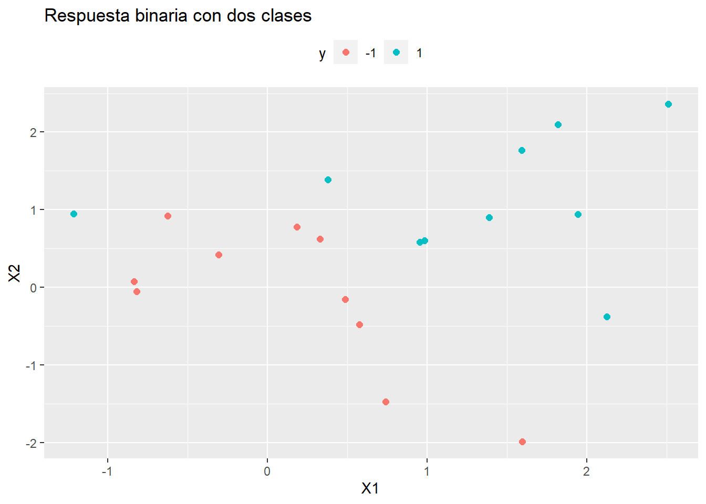
La respuesta es no, no se pueden separar linealmente. Ahora estimaremos una máquina de soporte vectorial. Para ello utilizaremos la librería e1071 que implementa el algoritmo SVM mediante svm(..., kernel="linear"). Podemos cambiar el kernel a `c(“polynomial”, “radial”) y el coste a 10. Por ejemplo,
library(e1071)
m <- svm(
y ~ .,
data = train_data,
kernel = "linear",
type = "C-classification", # (default) for classification
cost = 10, # default is 1
scale = FALSE # do not standardize features
)
plot(m, train_data)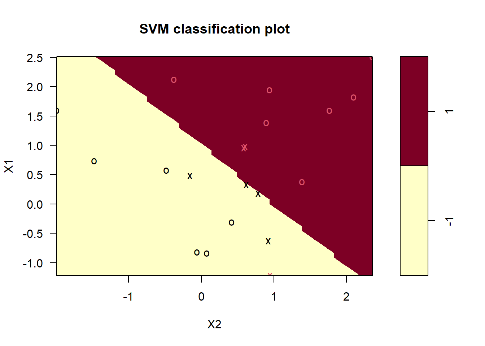
Los vectores de soporte se grafican como “x’s”. En nuestro caso hay 7
m$index[1] 1 2 5 7 14 16 17La función summary() muestra información adicional, incluida la distribución de los vectores de soporte en las clases (4 en la -1 y 3 en la 1).
summary(m)
Call:
svm(formula = y ~ ., data = train_data, kernel = "linear", type = "C-classification",
cost = 10, scale = FALSE)
Parameters:
SVM-Type: C-classification
SVM-Kernel: linear
cost: 10
Number of Support Vectors: 7
( 4 3 )
Number of Classes: 2
Levels:
-1 1Los siete vectores de soporte se componen de cuatro en una clase, tres en la otra. ¿Qué pasa si reducimos el costo de las violaciones de márgenes? Esto aumentará el sesgo y reducirá la varianza.
m <- svm(
y ~ .,
data = train_data,
kernel = "linear",
type = "C-classification",
cost = 0.1,
scale = FALSE
)
plot(m, train_data)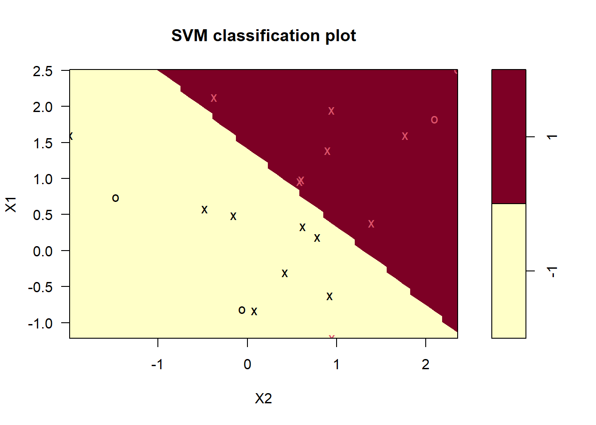
Ahora hay muchos más vectores de soporte. (En caso de que esperara ver la formulación del límite de decisión lineal, o al menos una representación gráfica de los márgenes, siga esperando. El modelo está generalizado más allá de dos características, por lo que evidentemente no se preocupa demasiado por admitir demostraciones de dos características saneadas. )
¿Qué nivel de coste produce el mejor rendimiento predictivo ? Recordemos que para contestar a esta pregunta, utilizando los mismos datos, podemos utilizar validación cruzada. SVM tiene por defecto implementado 10-fold CV. Probaremo siete valores candidatos para el coste (argumento cost). NOTA: Para SVM el coste es el hiperparámetro que debemos estimar.
set.seed(1)
m_tune <- tune(
svm,
y ~ .,
data = train_data,
kernel ="linear",
ranges = list(cost = c(0.001, 0.01, 0.1, 1, 5, 10, 100))
)
summary(m_tune)
Parameter tuning of 'svm':
- sampling method: 10-fold cross validation
- best parameters:
cost
0.1
- best performance: 0.05
- Detailed performance results:
cost error dispersion
1 1e-03 0.55 0.4377975
2 1e-02 0.55 0.4377975
3 1e-01 0.05 0.1581139
4 1e+00 0.15 0.2415229
5 5e+00 0.15 0.2415229
6 1e+01 0.15 0.2415229
7 1e+02 0.15 0.2415229El error más bajo de valización cruzada es de 0.05 para cost=0.1. La función tune() guarda el valor del mejor mejor “tuning parameter”
m_best <- m_tune$best.model
summary(m_best)
Call:
best.tune(METHOD = svm, train.x = y ~ ., data = train_data, ranges = list(cost = c(0.001,
0.01, 0.1, 1, 5, 10, 100)), kernel = "linear")
Parameters:
SVM-Type: C-classification
SVM-Kernel: linear
cost: 0.1
Number of Support Vectors: 16
( 8 8 )
Number of Classes: 2
Levels:
-1 1Ahora tenemos 16 vectores de soporte, 8 en cada clase. Esto supone un margen bastante amplio.
plot(m_best, train_data)Estimemos ahora un modelo SVM usando otro kernel. En ese caso necesitaremos otros hiperparámetros. Por ejmplo, para el modelo poinomial, necesitaremos estimar el mejor grado del polinomio.
set.seed(1234)
m3_tune <- tune(
svm,
y ~ .,
data = train_data,
kernel ="polynomial",
ranges = list(
cost = c(0.001, 0.01, 0.1, 1, 5, 10, 100),
degree = c(1, 2, 3)
)
)
summary(m3_tune)
Parameter tuning of 'svm':
- sampling method: 10-fold cross validation
- best parameters:
cost degree
1 1
- best performance: 0.1
- Detailed performance results:
cost degree error dispersion
1 1e-03 1 0.60 0.3944053
2 1e-02 1 0.60 0.3944053
3 1e-01 1 0.30 0.2581989
4 1e+00 1 0.10 0.2108185
5 5e+00 1 0.10 0.2108185
6 1e+01 1 0.10 0.2108185
7 1e+02 1 0.10 0.2108185
8 1e-03 2 0.70 0.3496029
9 1e-02 2 0.70 0.3496029
10 1e-01 2 0.70 0.3496029
11 1e+00 2 0.50 0.3333333
12 5e+00 2 0.50 0.3333333
13 1e+01 2 0.50 0.3333333
14 1e+02 2 0.50 0.3333333
15 1e-03 3 0.60 0.3944053
16 1e-02 3 0.60 0.3944053
17 1e-01 3 0.45 0.3689324
18 1e+00 3 0.40 0.3944053
19 5e+00 3 0.50 0.3333333
20 1e+01 3 0.35 0.4116363
21 1e+02 3 0.35 0.3374743El error más bajo de valización cruzada es de 0.1 para cost=1 y grado de polinomio 1.
m3_best <- m3_tune$best.model
summary(m3_best)
Call:
best.tune(METHOD = svm, train.x = y ~ ., data = train_data, ranges = list(cost = c(0.001,
0.01, 0.1, 1, 5, 10, 100), degree = c(1, 2, 3)), kernel = "polynomial")
Parameters:
SVM-Type: C-classification
SVM-Kernel: polynomial
cost: 1
degree: 1
coef.0: 0
Number of Support Vectors: 12
( 6 6 )
Number of Classes: 2
Levels:
-1 1Ahora tenemos 12 vectores de soporte, 6 en cada clase. Esto supone un margen bastante amplio.
plot(m3_best, train_data)Para un kernel radial, tenemos que incluir el valor de gamma.
12.5 SVM con caret
El modelo también se puede ajustar usando la librería caret. Usaremos LOOCV ya que el conjunto de datos es muy pequeño. Normalizaremos las variables para que su escala sea comparable. Esta librería requiere que la variable respuesta sea factor y le pondremos etiquetas para saber cuál es cada clase. Usaremos SVM polinomial como kernel (svmPoly) .
library(caret)
library(kernlab)
train_data_3 <- train_data %>%
mutate(y = factor(y, labels = c("A", "B")))
m4 <- train(
y ~ .,
data = train_data_3,
method = "svmPoly",
preProcess = c("center", "scale"),
trControl = trainControl(
method = "cv",
number = 5,
summaryFunction = twoClassSummary, # Usaremos AUC para seleccionar el mejor modelo
classProbs=TRUE
)
)
m4$bestTune degree scale C
7 1 0.1 0.25plot(m4)Ahora podríamos comprobar qué modelo predice mejor en los datos test (que también generamos aleatoriamente:
set.seed(1234)
x <- matrix(rnorm (20*2), ncol=2)
y <- c(rep(-1, 10), rep(1, 10))
x[y==1, ] <- x[y==1, ] + 1
test_data <- data.frame(x, y)
test_data$y <- as.factor(y)
test_data$yFac <- factor(test_data$y, labels = c("A", "B"))confusionMatrix(predict(m_best, test_data), test_data$y)Confusion Matrix and Statistics
Reference
Prediction -1 1
-1 10 7
1 0 3
Accuracy : 0.65
95% CI : (0.4078, 0.8461)
No Information Rate : 0.5
P-Value [Acc > NIR] : 0.13159
Kappa : 0.3
Mcnemar's Test P-Value : 0.02334
Sensitivity : 1.0000
Specificity : 0.3000
Pos Pred Value : 0.5882
Neg Pred Value : 1.0000
Prevalence : 0.5000
Detection Rate : 0.5000
Detection Prevalence : 0.8500
Balanced Accuracy : 0.6500
'Positive' Class : -1
confusionMatrix(predict(m3_best, test_data), test_data$y)Confusion Matrix and Statistics
Reference
Prediction -1 1
-1 10 6
1 0 4
Accuracy : 0.7
95% CI : (0.4572, 0.8811)
No Information Rate : 0.5
P-Value [Acc > NIR] : 0.05766
Kappa : 0.4
Mcnemar's Test P-Value : 0.04123
Sensitivity : 1.000
Specificity : 0.400
Pos Pred Value : 0.625
Neg Pred Value : 1.000
Prevalence : 0.500
Detection Rate : 0.500
Detection Prevalence : 0.800
Balanced Accuracy : 0.700
'Positive' Class : -1
confusionMatrix(predict(m4, test_data), test_data$yFac)Confusion Matrix and Statistics
Reference
Prediction A B
A 10 8
B 0 2
Accuracy : 0.6
95% CI : (0.3605, 0.8088)
No Information Rate : 0.5
P-Value [Acc > NIR] : 0.25172
Kappa : 0.2
Mcnemar's Test P-Value : 0.01333
Sensitivity : 1.0000
Specificity : 0.2000
Pos Pred Value : 0.5556
Neg Pred Value : 1.0000
Prevalence : 0.5000
Detection Rate : 0.5000
Detection Prevalence : 0.9000
Balanced Accuracy : 0.6000
'Positive' Class : A
13 Respuesta no balanceada
Cuando nos enfrentamos a problemas de clasificación en datos reales, puede ser un desafío tratar con un caso en el que una clase supera con creces a la otra (también conocidas como clases desequilibradas). En terminos prácticos podríamos, por ejemplo, predecir todos los inviduos como la categoría más frecuente y mejoraríamos la precisión que, como vimos en capítulos anteriores, por azar es del 50%.
Estas son algunas de las técnicas más populares para tratar con el desequilibrio de clases, pero existen más. Proporcionamremos una descripción general rápida.
Asignar pesos a cada clase: imponemos un coste mayor cuando se cometen errores en la clase minoritaria
Muestreo descendente (under-sampling): eliminar observaciones al azar en la clase mayoritaria
Muestreo ascendente (oversampling): replicar aleatoriamente observaciones en la clase minoritaria
Además del muestreo descendente y ascendente, existen métodos híbridos que combinan el muestreo descendente con la generación de datos adicionales. Dos de los más populares son ROSE y SMOTE. El primer método necesita tener instalada la librería
ROSEy el segundo la libreríaDMwR.

Clases desbalanceadas
Si queréis podéis encontrar una descripción más detallada en esta publicación de blog de Silicon Valley Data Science.
Estos métodos también funcionan para los problemas multi-clase. En este artículo tenéis más información general sobre el tema.
Debemos tener en cuenta que, en realidad, no deberíamos simplemente realizar un muestreo descendente o ascendente en nuestros datos de entrenamiento y luego ejecutar el modelo. Debemos tener en cuenta la validación cruzada y realizar un muestreo descendente o ascendente en cada sub-muestra de forma independiente para obtener una estimación real del rendimiento del modelo.
También es importante señalar que estas técnicas de ponderación y muestreo tienen mayor impacto en métricas de evaluación del modelo como la precisión, porque mueven artificialmente el umbral para estar más cerca de lo que podría considerarse como la ubicación “óptima” en una curva ROC. Otras métricas como el AUC o la tasa de falsos o verdaderos positivos no se ven tan afectadas.
Ilustremos cómo llevar a cabo estas técnicas con nuestro ejemplo de cáncer de mama. Usaremos los datos que ya están preprocesados según se hizo en la Sección @ref(caret) y que se encuentran en los objetos breast_train_prep y breast_test_prep. Efectivamente, los datos para este problema están desbalanceados respecto a la variable que queremos predecir
table(breast_test_prep$diagnosis)
B M
107 63 Afortunadamente, la librería caret hace que sea muy fácil incorporar técnicas de muestreo descendente y ascendente incluyendo validación cruzada. Simplemente basta con utilizar el argumento sampling en nuestro trainControl() y escoger el método “down” o “up” según nos convenga. El resto del proceso de creación de modelo permanece igual que los pasos llevados con cualquier otro método que hemos visto, por ejemlo KNN.
ctrl <- trainControl(method = "repeatedcv",
number = 10,
repeats = 5,
verboseIter = FALSE,
sampling = "down")
set.seed(1234)
model_knn_under <- caret::train(diagnosis ~ .,
data = breast_train_prep,
method = "knn",
trControl = ctrl)
model_knn_underk-Nearest Neighbors
399 samples
19 predictor
2 classes: 'B', 'M'
No pre-processing
Resampling: Cross-Validated (10 fold, repeated 5 times)
Summary of sample sizes: 359, 359, 359, 359, 359, 359, ...
Addtional sampling using down-sampling
Resampling results across tuning parameters:
k Accuracy Kappa
5 0.9443462 0.8815450
7 0.9483718 0.8893875
9 0.9493718 0.8920609
Accuracy was used to select the optimal model using the largest value.
The final value used for the model was k = 9.cm_under <- confusionMatrix(breast_test_prep$diagnosis,
predict(model_knn_under,
newdata = breast_test_prep))
cm_underConfusion Matrix and Statistics
Reference
Prediction B M
B 102 5
M 6 57
Accuracy : 0.9353
95% CI : (0.8872, 0.9673)
No Information Rate : 0.6353
P-Value [Acc > NIR] : <2e-16
Kappa : 0.8608
Mcnemar's Test P-Value : 1
Sensitivity : 0.9444
Specificity : 0.9194
Pos Pred Value : 0.9533
Neg Pred Value : 0.9048
Prevalence : 0.6353
Detection Rate : 0.6000
Detection Prevalence : 0.6294
Balanced Accuracy : 0.9319
'Positive' Class : B
Podemos comparar esta capacidad predictiva con la que tiene el modelo obiviando el problema del desbalanceo y que se estimaría así:
crtl <- trainControl(method = "repeatedcv",
number = 10,
repeats = 10,
verboseIter = FALSE)
model_knn <- caret::train(diagnosis ~ .,
data = breast_train_prep,
method = "knn",
trControl = ctrl)cm_original <- confusionMatrix(breast_test_prep$diagnosis,
predict(model_knn,
newdata = breast_test_prep))
cm_originalConfusion Matrix and Statistics
Reference
Prediction B M
B 101 6
M 5 58
Accuracy : 0.9353
95% CI : (0.8872, 0.9673)
No Information Rate : 0.6235
P-Value [Acc > NIR] : <2e-16
Kappa : 0.8617
Mcnemar's Test P-Value : 1
Sensitivity : 0.9528
Specificity : 0.9062
Pos Pred Value : 0.9439
Neg Pred Value : 0.9206
Prevalence : 0.6235
Detection Rate : 0.5941
Detection Prevalence : 0.6294
Balanced Accuracy : 0.9295
'Positive' Class : B
Estimemos ahora el modelo con un muestreo ascendente y usando, por ejemplo SMOTE (ROSE sea haría igual usando sampling="rose")
#
# OVER
#
ctrl <- trainControl(method = "repeatedcv",
number = 10,
repeats = 5,
verboseIter = FALSE,
sampling = "up")
model_knn_over <- caret::train(diagnosis ~ .,
data = breast_train_prep,
method = "knn",
trControl = ctrl)
cm_over <- confusionMatrix(breast_test_prep$diagnosis,
predict(model_knn_over,
newdata = breast_test_prep))
#
# SMOTE
#
ctrl <- trainControl(method = "repeatedcv",
number = 10,
repeats = 5,
verboseIter = FALSE,
sampling = "smote")
model_knn_smote <- caret::train(diagnosis ~ .,
data = breast_train_prep,
method = "knn",
trControl = ctrl)
cm_smote <- confusionMatrix(breast_test_prep$diagnosis,
predict(model_knn_smote,
newdata = breast_test_prep))Y podemos comparar las predicciones con la función resamples (para introducir variabilidad)
models <- list(original = model_knn,
under = model_knn_under,
over = model_knn_over,
smote = model_knn_smote)
resampling <- resamples(models)
bwplot(resampling)
O compararlas con otras métricas
library(dplyr)
select_measures <- c("Sensitivity", "Specificity", "Precision",
"Recall", "F1")
comparison <- NULL
for (name in names(models)) {
model <- get(paste0("cm_", name))
comparison.i <- model$byClass[select_measures]
comparison <- rbind(comparison, comparison.i) %>% as_tibble()
}
comparison <- comparison %>%
add_column(model=names(models), .before=TRUE)
comparison# A tibble: 4 × 6
model Sensitivity Specificity Precision Recall F1
<chr> <dbl> <dbl> <dbl> <dbl> <dbl>
1 original 0.953 0.906 0.944 0.953 0.948
2 under 0.944 0.919 0.953 0.944 0.949
3 over 0.935 0.903 0.944 0.935 0.940
4 smote 0.944 0.919 0.953 0.944 0.949library(tidyr)
comparison %>%
gather(x, y, Sensitivity:F1) %>%
ggplot(aes(x = x, y = y, color = model)) +
geom_jitter(width = 0.2, alpha = 0.5, size = 3)14 Árboles de decisión
Los árboles de decisión, también conocidos como modelos de árbol de clasificación y regresión (CART), son métodos basados en árboles para el aprendizaje automático supervisado. Los árboles de clasificación y de regresión simples son fáciles de usar e interpretar, pero no son competitivos con los mejores métodos de aprendizaje automático. Sin embargo, forman la base para el conjunto de modelos de ensamblaje como “bagged trees”, “random forest” y “boosted trees”, que aunque son menos interpretables, son muy precisos.
Los modelos CART se puede definir en dos tipos de problemas
Árboles de clasificación: la variable resultado es categórica y el métodos se utiliza para identificar la “clase” dentro de la cual es más probable que caiga nuestra variable resultado. Un ejemplo de un problema de tipo clasificación sería determinar quién se suscribirá o no a una plataforma digital; o quién se graduará o no de la escuela secundaria; o si una persona tiene cáncer o no.
Árboles de regressión: la variable resultado es continua y el métodos se utiliza para predecir su valor. Un ejemplo de un problema de tipo regresión sería predecir los precios de venta de una casa residencial o el nivel de colesterol de una persona.
Los modelos CART segmentan el espacio predictor en \(K\) nodos terminales no superpuestos (hojas). Cada nodo se describe mediante un conjunto de reglas que se pueden utilizar para predecir nuevas respuestas. El valor predicho \(\hat{y}\) para cada nodo es la moda (clasificación) o la media (regresión).
Los modelos CART definen los nodos a través de un proceso top-down greedy llamado división binaria recursiva (recursive binary splitting). El proceso es de arriba hacia abajo porque comienza en la parte superior del árbol con todas las observaciones en una sola región y divide sucesivamente el espacio de predicción. Es greedy porque en cada paso de división, la mejor división se realiza en ese paso en particular sin tener en cuenta las divisiones posteriores. La siguiente figura muestra la idea general de esta metodología:

Diagrama árboles de decisión
Como vemos en el ejemplo una de las ventajas de los modelos CART es que consideran interacciones. En este curso no vamos a ver la regresión lógica pero es una metodología muy interesante que extiende CART cuando las variables predictoras son binarias y las interacciones que buscamos son del tipo AND y OR. Esta metodología se ha empleado con éxito para analizar datos genéticos donde el interés radica en saber cuál es el riesgo de desarrolar una enfermeda si te tiene por ejemplo: “una mutación en un punto A del genoma (SNP) y otra mutación en el punto B ó si se tiene una mutación en el punto C pero no se tiene en el punto D.
También son interesantes porque permiten valores faltantes sin la necesidad de hacer imputaciones previas.
La mejor división es la variable predictora y el punto de corte que minimiza una función de costo. La función de costo más común para los árboles de regresión es la suma de los residuos al cuadrado,
\[RSS = \sum_{k=1}^K\sum_{i \in A_k}{\left(y_i - \hat{y}_{A_k} \right)^2}.\] Para árboles de clasificación, es el índice de Gini,
\[G = \sum_{c=1}^C{\hat{p}_{kc}(1 - \hat{p}_{kc})},\]
y la entropía (aka información estadística)
\[D = - \sum_{c=1}^C{\hat{p}_{kc} \log \hat{p}_{kc}}\]
dónde \(\hat{p}_{kc}\) es la proporción de observaciones de entrenamiento en el nodo \(k\) que son de clase \(c\). Un nodo completamente puro en un árbol binario tendría \(\hat{p} \in \{ 0, 1 \}\) y \(G=D=0\). Un nodo completamente impuro en un árbol binario tendría \(\hat{p}=0.5\) y \(G=0.5^2 \cdot 2 = 0.25\) y \(D = -(0.5 \log(0.5)) \cdot 2 = 0.69\).
CART repite el proceso de división para cada nodo hijo hasta que se satisface un criterio de detención, generalmente cuando ningún tamaño de nodo supera un máximo predefinido o la división no mejora el modelo de manera significativa. CART también puede imponer un número mínimo de observaciones en cada nodo.
Es probable que el árbol resultante esté sobre-entrenado (over-fitting) y, por lo tanto, no se generalice bien para los datos de prueba. Para evitar este problema CART poda el árbol, minimizando el error de predicción de validación cruzada. En este caso, el hiperparámetro que debermos seleccionar en este modelo es la profundidad del arbol (e.g. número de nodos).
En lugar de realizar una validación cruzada de todos los subárboles posibles para encontrar el que tenga el mínimo de error, CART utiliza la poda de complejidad de costos (cost-complexity pruning). Costo-complejidad es la compensación entre error (costo) y tamaño del árbol (complejidad) donde la compensación se cuantifica con el parámetro costo-complejidad \(c_p\). El costo-complejidad del árbol, \(R_{c_p}(T)\), es la suma de su riesgo (error) más un factor de “complejidad de costos” \(c_p\) multiplicado pro el tamaño del arbol \(|T|\).
\[R_{c_p}(T) = R(T) + c_p|T|\]
\(c_p\) puede tomar cualquier valor de \([0..\infty]\), pero resulta que hay un árbol óptimo para rangos de \(c_p\), por lo que solo hay un conjunto finito de valores interesantes para \(c_p\) (ver Therneau y Atkinson 2019. CART utiliza validación cruzada para determinar qué \(c_p\) es óptimo.
14.1 Árboles de clasificación
Veamos cómo crear árboles de clasificación usando el conjunto de datos ISLR::OJ que se usaron para predecir qué marca de zumo de naranja, Citrus Hill (CH) o Minute Maid = (MM) toman los clientes (variable `Purchase) a partir de 17 variables predictoras.
Vamos a introducir la librería skimr que es interesante para hacer descriptivas. Con ella podremos saber, por ejemplo, cuántos tipos de variables tenemos o ver qué distribuciones tienen las variables continuas
library(tidyverse)
library(caret)
library(rpart) # classification and regression trees
library(rpart.plot) # better formatted plots than the ones in rpart
oj_dat <- ISLR::OJ
skimr::skim(oj_dat)| Name | oj_dat |
| Number of rows | 1070 |
| Number of columns | 18 |
| _______________________ | |
| Column type frequency: | |
| factor | 2 |
| numeric | 16 |
| ________________________ | |
| Group variables | None |
Variable type: factor
| skim_variable | n_missing | complete_rate | ordered | n_unique | top_counts |
|---|---|---|---|---|---|
| Purchase | 0 | 1 | FALSE | 2 | CH: 653, MM: 417 |
| Store7 | 0 | 1 | FALSE | 2 | No: 714, Yes: 356 |
Variable type: numeric
| skim_variable | n_missing | complete_rate | mean | sd | p0 | p25 | p50 | p75 | p100 | hist |
|---|---|---|---|---|---|---|---|---|---|---|
| WeekofPurchase | 0 | 1 | 254.38 | 15.56 | 227.00 | 240.00 | 257.00 | 268.00 | 278.00 | ▆▅▅▇▇ |
| StoreID | 0 | 1 | 3.96 | 2.31 | 1.00 | 2.00 | 3.00 | 7.00 | 7.00 | ▇▅▃▁▇ |
| PriceCH | 0 | 1 | 1.87 | 0.10 | 1.69 | 1.79 | 1.86 | 1.99 | 2.09 | ▅▂▇▆▁ |
| PriceMM | 0 | 1 | 2.09 | 0.13 | 1.69 | 1.99 | 2.09 | 2.18 | 2.29 | ▂▁▃▇▆ |
| DiscCH | 0 | 1 | 0.05 | 0.12 | 0.00 | 0.00 | 0.00 | 0.00 | 0.50 | ▇▁▁▁▁ |
| DiscMM | 0 | 1 | 0.12 | 0.21 | 0.00 | 0.00 | 0.00 | 0.23 | 0.80 | ▇▁▂▁▁ |
| SpecialCH | 0 | 1 | 0.15 | 0.35 | 0.00 | 0.00 | 0.00 | 0.00 | 1.00 | ▇▁▁▁▂ |
| SpecialMM | 0 | 1 | 0.16 | 0.37 | 0.00 | 0.00 | 0.00 | 0.00 | 1.00 | ▇▁▁▁▂ |
| LoyalCH | 0 | 1 | 0.57 | 0.31 | 0.00 | 0.33 | 0.60 | 0.85 | 1.00 | ▅▃▆▆▇ |
| SalePriceMM | 0 | 1 | 1.96 | 0.25 | 1.19 | 1.69 | 2.09 | 2.13 | 2.29 | ▁▂▂▂▇ |
| SalePriceCH | 0 | 1 | 1.82 | 0.14 | 1.39 | 1.75 | 1.86 | 1.89 | 2.09 | ▂▁▇▇▅ |
| PriceDiff | 0 | 1 | 0.15 | 0.27 | -0.67 | 0.00 | 0.23 | 0.32 | 0.64 | ▁▂▃▇▂ |
| PctDiscMM | 0 | 1 | 0.06 | 0.10 | 0.00 | 0.00 | 0.00 | 0.11 | 0.40 | ▇▁▂▁▁ |
| PctDiscCH | 0 | 1 | 0.03 | 0.06 | 0.00 | 0.00 | 0.00 | 0.00 | 0.25 | ▇▁▁▁▁ |
| ListPriceDiff | 0 | 1 | 0.22 | 0.11 | 0.00 | 0.14 | 0.24 | 0.30 | 0.44 | ▂▃▆▇▁ |
| STORE | 0 | 1 | 1.63 | 1.43 | 0.00 | 0.00 | 2.00 | 3.00 | 4.00 | ▇▃▅▅▃ |
Dividiremos nuestra base de datos oj_dat (n = 1070) en oj_train (80%, n = 857) para estimar varios modelos, y oj_test (20%, n = 213) para comparar su rendimiento con datos nuevos.
set.seed(12345)
partition <- createDataPartition(y = oj_dat$Purchase, p = 0.8, list = FALSE)
oj_train <- oj_dat[partition, ]
oj_test <- oj_dat[-partition, ]La función rpart::rpart() construye un árbol completo, minimizando el índice de Gini \(G\) por defecto (parms = list (split = "gini")), hasta que se cumpla el criterio de parada. El criterio de parada predeterminado es:
- solo intenta una división si el nodo actual tiene al menos
minsplit = 20observaciones, y - solo acepta una división si
- los nodos resultantes tienen al menos
minbucket = round (minsplit / 3)observaciones, y - el ajuste general resultante mejora en
cp = 0.01(es decir, \(\Delta G <= 0.01\)).
- los nodos resultantes tienen al menos
# Usar method = "class" para clasificación y method = "anova" para regresión
set.seed(123)
oj_mdl_cart_full <- rpart(formula = Purchase ~ ., data = oj_train,
method = "class")
oj_mdl_cart_fulln= 857
node), split, n, loss, yval, (yprob)
* denotes terminal node
1) root 857 334 CH (0.61026838 0.38973162)
2) LoyalCH>=0.48285 537 94 CH (0.82495345 0.17504655)
4) LoyalCH>=0.7648795 271 13 CH (0.95202952 0.04797048) *
5) LoyalCH< 0.7648795 266 81 CH (0.69548872 0.30451128)
10) PriceDiff>=-0.165 226 50 CH (0.77876106 0.22123894) *
11) PriceDiff< -0.165 40 9 MM (0.22500000 0.77500000) *
3) LoyalCH< 0.48285 320 80 MM (0.25000000 0.75000000)
6) LoyalCH>=0.2761415 146 58 MM (0.39726027 0.60273973)
12) SalePriceMM>=2.04 71 31 CH (0.56338028 0.43661972) *
13) SalePriceMM< 2.04 75 18 MM (0.24000000 0.76000000) *
7) LoyalCH< 0.2761415 174 22 MM (0.12643678 0.87356322) *La salida comienza con el nodo raíz. La clase predicha en la raíz es CH y esta predicción produce 334 errores en las 857 observaciones para una tasa de éxito (precisión) del 61% y una tasa de error del 39%. Los nodos secundarios del nodo “x” están etiquetados como 2x) y 2x + 1), por lo que los nodos secundarios de 1) son 2) y 3), y los nodos secundarios de 2) son 4) y 5). Los nodos terminales están etiquetados con un asterisco (*).
Sorprendentemente, solo 3 de las 17 variables se utilizaron en el árbol completo: LoyalCH (lealtad de marca del cliente para CH), PriceDiff (precio relativo de MM sobre CH) y SalePriceMM (precio absoluto de MM). La primera división está en LoyalCH = 0.48285. Aquí hay un diagrama del árbol completo (sin podar).
rpart.plot(oj_mdl_cart_full, yesno = TRUE)
Las cajas muestran la clasificación del nodo (según la moda), la proporción de observaciones que no son CH y la proporción de observaciones incluidas en el nodo.
rpart () no solo hizo crecer el árbol completo, sino que identificó el conjunto de parámetros de complejidad de costos y midió el rendimiento del modelo de cada árbol correspondiente mediante validación cruzada. printcp () muestra los posibles valores de \(c_p\). La siguiente tabla se puede utilizar esta tabla para decidir cómo podar el árbol.
printcp(oj_mdl_cart_full)
Classification tree:
rpart(formula = Purchase ~ ., data = oj_train, method = "class")
Variables actually used in tree construction:
[1] LoyalCH PriceDiff SalePriceMM
Root node error: 334/857 = 0.38973
n= 857
CP nsplit rel error xerror xstd
1 0.479042 0 1.00000 1.00000 0.042745
2 0.032934 1 0.52096 0.54192 0.035775
3 0.013473 3 0.45509 0.47006 0.033905
4 0.010000 5 0.42814 0.46407 0.033736Hay 4 valores de \(c_p\) en este modelo. El modelo con el parámetro de complejidad más pequeño permite la mayoría de las divisiones (nsplit). El parámetro de mayor complejidad corresponde a un árbol con solo un nodo raíz. rel error es la tasa de error relativa al nodo raíz. El error absoluto del nodo raíz es 0.38973162 (la proporción de MM), por lo que su rel error es 0.38973162 / 0.38973162 = 1.0. Eso significa que el error absoluto del árbol completo (en CP = 0.01) es 0.42814 * 0.38973162 = 0.1669. Podemos verificarlo calculando la tasa de error de los valores predichos:
pred <- predict(oj_mdl_cart_full, newdata = oj_train, type = "class")
mean(oj_train$Purchase != pred)[1] 0.1668611Para acaber de explicar toda la salida de la table CP, xerror es la tasa de error relativa con validación cruzada y xstd es su error estándar. Si se desea el error más bajo posible, deberíamos podar el árbol con el error de CV relativo más pequeño, \(c_p=0.01\). Si deseamos equilibrar el poder predictivo con la simplicidad, podaremos al árbol más pequeño dentro de 1 SE del que tiene el error relativo más pequeño. La tabla CP no es muy útil para encontrar ese árbol, así que añadiremos una columna para encontrarlo.
oj_mdl_cart_full$cptable %>%
data.frame() %>%
mutate(
min_idx = which.min(oj_mdl_cart_full$cptable[, "xerror"]),
rownum = row_number(),
xerror_cap = oj_mdl_cart_full$cptable[min_idx, "xerror"] +
oj_mdl_cart_full$cptable[min_idx, "xstd"],
eval = case_when(rownum == min_idx ~ "min xerror",
xerror < xerror_cap ~ "under cap",
TRUE ~ "")
) %>%
dplyr::select(-rownum, -min_idx) CP nsplit rel.error xerror xstd xerror_cap eval
1 0.47904192 0 1.0000000 1.0000000 0.04274518 0.4978082
2 0.03293413 1 0.5209581 0.5419162 0.03577468 0.4978082
3 0.01347305 3 0.4550898 0.4700599 0.03390486 0.4978082 under cap
4 0.01000000 5 0.4281437 0.4640719 0.03373631 0.4978082 min xerrorEl árbol más simple que usa la regla 1-SE es \(c_p = 0.01347305\) (error CV = 0.18). Afortunadamente, plotcp () nos da una representación gráfica de la relación entre xerror y cp.
plotcp(oj_mdl_cart_full, upper = "splits")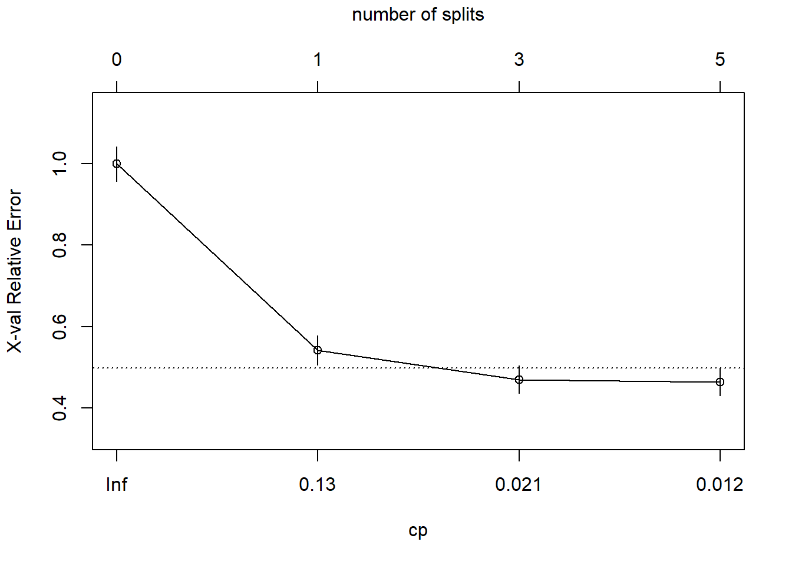
La línea discontinua se establece en el mínimo xerror + xstd. El eje superior muestra el número de divisiones en el árbol. NOTA: No estoy seguro de por qué los valores de CP no son los mismos que en la tabla (están cerca, pero no son los mismos). La figura sugiere que debería podar a 5 o 3 divisiones. Vemos que esta curva nunca llega al mínimo, sigue disminuyendo en 5 divisiones. El valor del parámetro de ajuste predeterminado cp = 0.01 puede ser demasiado grande, así que lo cambiaremos a cp = 0.001 y empezaremos de nuevo.
set.seed(123)
oj_mdl_cart_full <- rpart(
formula = Purchase ~ .,
data = oj_train,
method = "class",
cp = 0.001
)
print(oj_mdl_cart_full)n= 857
node), split, n, loss, yval, (yprob)
* denotes terminal node
1) root 857 334 CH (0.61026838 0.38973162)
2) LoyalCH>=0.48285 537 94 CH (0.82495345 0.17504655)
4) LoyalCH>=0.7648795 271 13 CH (0.95202952 0.04797048) *
5) LoyalCH< 0.7648795 266 81 CH (0.69548872 0.30451128)
10) PriceDiff>=-0.165 226 50 CH (0.77876106 0.22123894)
20) ListPriceDiff>=0.255 115 11 CH (0.90434783 0.09565217) *
21) ListPriceDiff< 0.255 111 39 CH (0.64864865 0.35135135)
42) PriceMM>=2.155 19 2 CH (0.89473684 0.10526316) *
43) PriceMM< 2.155 92 37 CH (0.59782609 0.40217391)
86) DiscCH>=0.115 7 0 CH (1.00000000 0.00000000) *
87) DiscCH< 0.115 85 37 CH (0.56470588 0.43529412)
174) ListPriceDiff>=0.215 45 15 CH (0.66666667 0.33333333) *
175) ListPriceDiff< 0.215 40 18 MM (0.45000000 0.55000000)
350) LoyalCH>=0.527571 28 13 CH (0.53571429 0.46428571)
700) WeekofPurchase< 266.5 21 8 CH (0.61904762 0.38095238) *
701) WeekofPurchase>=266.5 7 2 MM (0.28571429 0.71428571) *
351) LoyalCH< 0.527571 12 3 MM (0.25000000 0.75000000) *
11) PriceDiff< -0.165 40 9 MM (0.22500000 0.77500000) *
3) LoyalCH< 0.48285 320 80 MM (0.25000000 0.75000000)
6) LoyalCH>=0.2761415 146 58 MM (0.39726027 0.60273973)
12) SalePriceMM>=2.04 71 31 CH (0.56338028 0.43661972)
24) LoyalCH< 0.303104 7 0 CH (1.00000000 0.00000000) *
25) LoyalCH>=0.303104 64 31 CH (0.51562500 0.48437500)
50) WeekofPurchase>=246.5 52 22 CH (0.57692308 0.42307692)
100) PriceCH< 1.94 35 11 CH (0.68571429 0.31428571)
200) StoreID< 1.5 9 1 CH (0.88888889 0.11111111) *
201) StoreID>=1.5 26 10 CH (0.61538462 0.38461538)
402) LoyalCH< 0.410969 17 4 CH (0.76470588 0.23529412) *
403) LoyalCH>=0.410969 9 3 MM (0.33333333 0.66666667) *
101) PriceCH>=1.94 17 6 MM (0.35294118 0.64705882) *
51) WeekofPurchase< 246.5 12 3 MM (0.25000000 0.75000000) *
13) SalePriceMM< 2.04 75 18 MM (0.24000000 0.76000000)
26) SpecialCH>=0.5 14 6 CH (0.57142857 0.42857143) *
27) SpecialCH< 0.5 61 10 MM (0.16393443 0.83606557) *
7) LoyalCH< 0.2761415 174 22 MM (0.12643678 0.87356322)
14) LoyalCH>=0.035047 117 21 MM (0.17948718 0.82051282)
28) WeekofPurchase< 273.5 104 21 MM (0.20192308 0.79807692)
56) PriceCH>=1.875 20 9 MM (0.45000000 0.55000000)
112) WeekofPurchase>=252.5 12 5 CH (0.58333333 0.41666667) *
113) WeekofPurchase< 252.5 8 2 MM (0.25000000 0.75000000) *
57) PriceCH< 1.875 84 12 MM (0.14285714 0.85714286) *
29) WeekofPurchase>=273.5 13 0 MM (0.00000000 1.00000000) *
15) LoyalCH< 0.035047 57 1 MM (0.01754386 0.98245614) *Este es un árbol mucho más grande. ¿Encontramo un valor cp que produce un mínimo?
plotcp(oj_mdl_cart_full, upper = "splits")
Sí, el mínimo está en CP = 0.011 con 5 divisiones. El mínimo + 1 SE está en CP = 0.021 con 3 divisiones. Podaremos entonces el árbol en 3.
oj_mdl_cart <- prune(
oj_mdl_cart_full,
cp = oj_mdl_cart_full$cptable[oj_mdl_cart_full$cptable[, 2] == 3, "CP"]
)
rpart.plot(oj_mdl_cart, yesno = TRUE)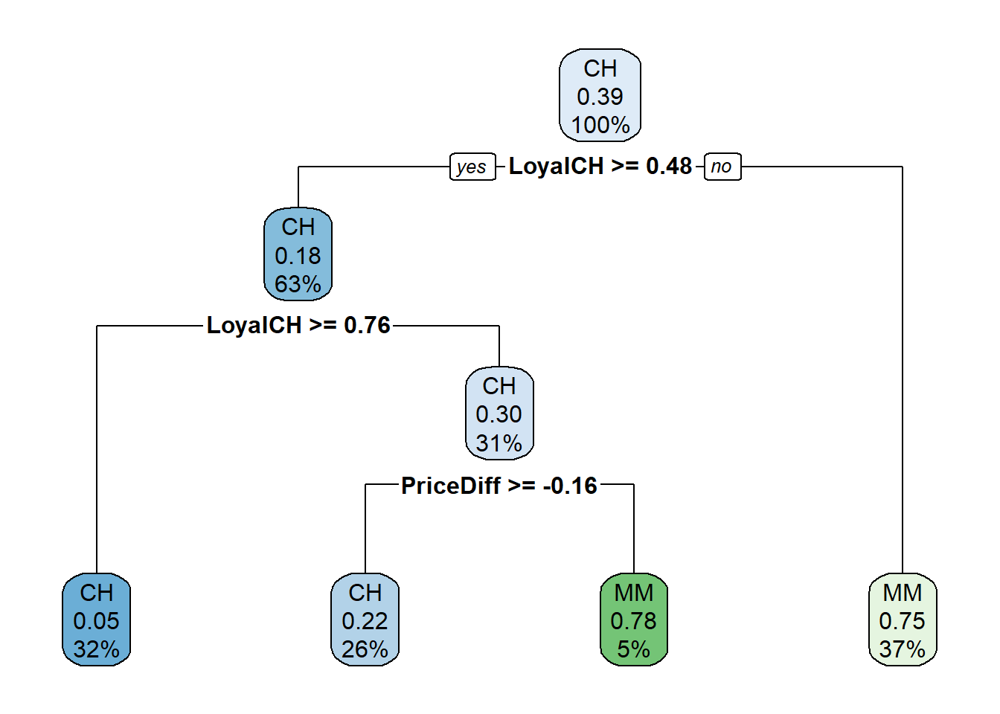
El indicador de compra más “importante” parece ser LoyalCH. De la vignette de rpart (página 12) tenemos que:
An overall measure of variable importance is the sum of the goodness of split measures for each split for which it was the primary variable, plus goodness (adjusted agreement) for all splits in which it was a surrogate.“Surrogate” (variable subrogada[^La FDA define una variable subrogada como “una medida de laboratorio o signo físico que se usa en ensayos terapéuticos como sustituto de una variable clínicamente significativa que es una medida directa sobre lo que siente un paciente, sus funciones o su supervivencia y que se espera que prediga el efecto de la terapia]) se refieren a características alternativas para que un nodo maneje los datos faltantes. Para cada división, CART evalúa una variedad de divisiones alternativas”sustitutas” para usar cuando el valor de la característica para la división principal es NA. Las divisiones sustitutas son divisiones que producen resultados similares a la división original.
La importancia de una variable es la suma de la mejora en la medida general de Gini (o RMSE) producida por los nodos en los que aparece. En el siguiente gráfico podemos ver la importancia de cada variable para este modelo.
oj_mdl_cart$variable.importance %>%
data.frame() %>%
rownames_to_column(var = "Feature") %>%
rename(Overall = '.') %>%
ggplot(aes(x = fct_reorder(Feature, Overall), y = Overall)) +
geom_pointrange(aes(ymin = 0, ymax = Overall), color = "cadetblue", size = .3) +
theme_minimal() +
coord_flip() +
labs(x = "", y = "", title = "Importancia mediante clasificación simple")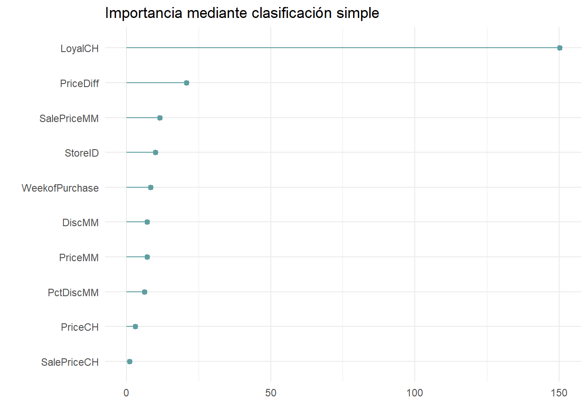
LoyalCH es, con mucho, la variable más importante, como se esperaba de su posición en la parte superior del árbol así como en el siguiente nivel abajo.
Podemos ver cómo aparecen los variables subrogadas en el modelo con la función summary().
summary(oj_mdl_cart)Call:
rpart(formula = Purchase ~ ., data = oj_train, method = "class",
cp = 0.001)
n= 857
CP nsplit rel error xerror xstd
1 0.47904192 0 1.0000000 1.0000000 0.04274518
2 0.03293413 1 0.5209581 0.5419162 0.03577468
3 0.01347305 3 0.4550898 0.4700599 0.03390486
Variable importance
LoyalCH PriceDiff SalePriceMM StoreID WeekofPurchase DiscMM
67 9 5 4 4 3
PriceMM PctDiscMM PriceCH
3 3 1
Node number 1: 857 observations, complexity param=0.4790419
predicted class=CH expected loss=0.3897316 P(node) =1
class counts: 523 334
probabilities: 0.610 0.390
left son=2 (537 obs) right son=3 (320 obs)
Primary splits:
LoyalCH < 0.48285 to the right, improve=132.56800, (0 missing)
StoreID < 3.5 to the right, improve= 40.12097, (0 missing)
PriceDiff < 0.015 to the right, improve= 24.26552, (0 missing)
ListPriceDiff < 0.255 to the right, improve= 22.79117, (0 missing)
SalePriceMM < 1.84 to the right, improve= 20.16447, (0 missing)
Surrogate splits:
StoreID < 3.5 to the right, agree=0.646, adj=0.053, (0 split)
PriceMM < 1.89 to the right, agree=0.638, adj=0.031, (0 split)
WeekofPurchase < 229.5 to the right, agree=0.632, adj=0.016, (0 split)
DiscMM < 0.77 to the left, agree=0.629, adj=0.006, (0 split)
SalePriceMM < 1.385 to the right, agree=0.629, adj=0.006, (0 split)
Node number 2: 537 observations, complexity param=0.03293413
predicted class=CH expected loss=0.1750466 P(node) =0.6266044
class counts: 443 94
probabilities: 0.825 0.175
left son=4 (271 obs) right son=5 (266 obs)
Primary splits:
LoyalCH < 0.7648795 to the right, improve=17.669310, (0 missing)
PriceDiff < 0.015 to the right, improve=15.475200, (0 missing)
SalePriceMM < 1.84 to the right, improve=13.951730, (0 missing)
ListPriceDiff < 0.255 to the right, improve=11.407560, (0 missing)
DiscMM < 0.15 to the left, improve= 7.795122, (0 missing)
Surrogate splits:
WeekofPurchase < 257.5 to the right, agree=0.594, adj=0.180, (0 split)
PriceCH < 1.775 to the right, agree=0.590, adj=0.173, (0 split)
StoreID < 3.5 to the right, agree=0.587, adj=0.165, (0 split)
PriceMM < 2.04 to the right, agree=0.587, adj=0.165, (0 split)
SalePriceMM < 2.04 to the right, agree=0.587, adj=0.165, (0 split)
Node number 3: 320 observations
predicted class=MM expected loss=0.25 P(node) =0.3733956
class counts: 80 240
probabilities: 0.250 0.750
Node number 4: 271 observations
predicted class=CH expected loss=0.04797048 P(node) =0.3162194
class counts: 258 13
probabilities: 0.952 0.048
Node number 5: 266 observations, complexity param=0.03293413
predicted class=CH expected loss=0.3045113 P(node) =0.3103851
class counts: 185 81
probabilities: 0.695 0.305
left son=10 (226 obs) right son=11 (40 obs)
Primary splits:
PriceDiff < -0.165 to the right, improve=20.84307, (0 missing)
ListPriceDiff < 0.235 to the right, improve=20.82404, (0 missing)
SalePriceMM < 1.84 to the right, improve=16.80587, (0 missing)
DiscMM < 0.15 to the left, improve=10.05120, (0 missing)
PctDiscMM < 0.0729725 to the left, improve=10.05120, (0 missing)
Surrogate splits:
SalePriceMM < 1.585 to the right, agree=0.906, adj=0.375, (0 split)
DiscMM < 0.57 to the left, agree=0.895, adj=0.300, (0 split)
PctDiscMM < 0.264375 to the left, agree=0.895, adj=0.300, (0 split)
WeekofPurchase < 274.5 to the left, agree=0.872, adj=0.150, (0 split)
SalePriceCH < 2.075 to the left, agree=0.857, adj=0.050, (0 split)
Node number 10: 226 observations
predicted class=CH expected loss=0.2212389 P(node) =0.2637106
class counts: 176 50
probabilities: 0.779 0.221
Node number 11: 40 observations
predicted class=MM expected loss=0.225 P(node) =0.04667445
class counts: 9 31
probabilities: 0.225 0.775 Una vez tenemos un modelo (o varios) los podemos evaluar en la muestra test con las medidas estándard
pred <- predict(oj_mdl_cart, newdata = oj_test, type = "class")
oj_cm_cart <- confusionMatrix(pred, oj_test$Purchase)
oj_cm_cartConfusion Matrix and Statistics
Reference
Prediction CH MM
CH 113 13
MM 17 70
Accuracy : 0.8592
95% CI : (0.8051, 0.9029)
No Information Rate : 0.6103
P-Value [Acc > NIR] : 1.265e-15
Kappa : 0.7064
Mcnemar's Test P-Value : 0.5839
Sensitivity : 0.8692
Specificity : 0.8434
Pos Pred Value : 0.8968
Neg Pred Value : 0.8046
Prevalence : 0.6103
Detection Rate : 0.5305
Detection Prevalence : 0.5915
Balanced Accuracy : 0.8563
'Positive' Class : CH
También podemos representar gráficamente la tabla de confusión
plot(oj_test$Purchase, pred,
main = "Clasificación: Predicho vs. Observado",
xlab = "Observado",
ylab = "Predicho")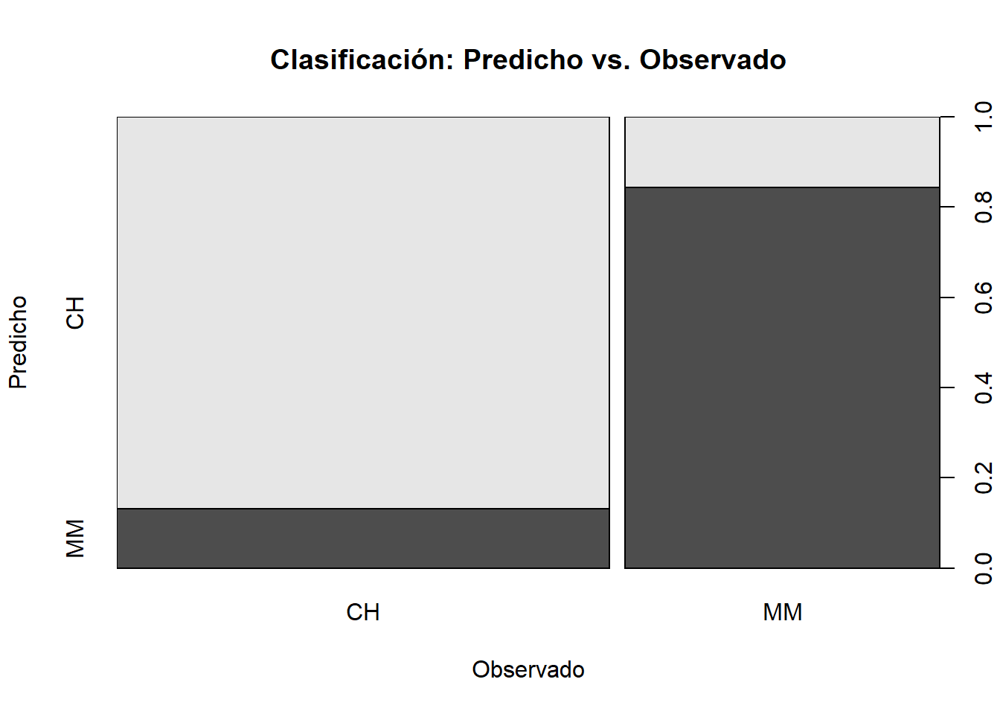
14.2 Área bajo la curva ROC
También podemos calcular el área bajo la curva ROC. La curva ROC (características operativas del receptor) es otra medida de precisión. Corresponde a un gráfico de la tasa de verdaderos positivos (TPR, sensibilidad) versus la tasa de falsos positivos (FPR, 1 - especificidad) para un conjunto de umbrales. De forma predeterminada, el umbral para predecir la clasificación predeterminada es 0.50, pero podría ser cualquier umbral. La función precrec::evalmod () calcula los valores de la matriz de confusión del modelo usando el conjunto de datos test. El AUC en el conjunto de datos test es 0.8848 y podemos calcularlo con varias funciones: pROC::plot.roc (), plotROC::geom_roc (), yardstick::roc_curve () y plotROC para usar ggplot() [geometría geom_roc ()].
Nosotros usaremos pROC. Para ello necesitamos tener las predicciones como probabilidades para la categoría de referencia. NOTA: El AUC es, pues, una medida útil para casos donde el predictor es binario.
library(pROC)
pred2 <- predict(oj_mdl_cart, newdata = oj_test, type = "prob")[,"CH"]
roc.car <- roc(oj_test$Purchase, pred2, print.auc=TRUE,
ci=TRUE,
plot=TRUE)
14.2.1 Entrenamiento con caret
También podemos ajustar el modelo con la función caret::train (). Recordemo que hay dos formas de ajustar los hiperparámetros cuando usamos train ():
- establecer el número de valores de parámetros de ajuste a considerar utilizando
tuneLength, o - establecer ciertos valores para cada parámetro utilizando
tuneGrid.
ESTRATEGIA: Construiremos el modelo usando una validación cruzada de 10 veces para optimizar el hiperparámetro CP. Si no tenemos idea de cuál es el parámetro de ajuste óptimo, empezaremos con tuneLength para aproximarnos al valor óptimo y luego ajustaremos el valor con tuneGrid. Crearemos un objeto de control de entrenamiento que puedo reutilizar en otras compilaciones de modelos.
oj_trControl = trainControl (method = "cv",
number = 10,
savePredictions = "final", # guardaremos preds para el valor óptimo del parámetro a tunear
classProbs = TRUE, # probs para las clases además de preds
summaryFunction = twoClassSummary
)Ahora estimamos el modelo con
set.seed(1234)
oj_mdl_cart2 <- train(
Purchase ~ .,
data = oj_train,
method = "rpart",
tuneLength = 5,
metric = "ROC",
trControl = oj_trControl
)caret construye un árbol completo usando los parámetros predeterminados de rpart que son: índice de división de Gini, al menos 20 observaciones en un nodo para considerar dividirlo, y al menos 6 observaciones en cada nodo. Luego, caret calcula la precisión para cada valor candidato del hiperparámetro (CP). Estos son los resultados:
oj_mdl_cart2CART
857 samples
17 predictor
2 classes: 'CH', 'MM'
No pre-processing
Resampling: Cross-Validated (10 fold)
Summary of sample sizes: 772, 772, 771, 770, 771, 771, ...
Resampling results across tuning parameters:
cp ROC Sens Spec
0.005988024 0.8539885 0.8605225 0.7274510
0.008982036 0.8502309 0.8568578 0.7334225
0.013473054 0.8459290 0.8473149 0.7397504
0.032934132 0.7776483 0.8509071 0.6796791
0.479041916 0.5878764 0.9201379 0.2556150
ROC was used to select the optimal model using the largest value.
The final value used for the model was cp = 0.005988024.El segundo CP (0.008982036) produce la mayor precisión. Podemos profundizar en el mejor valor de CP usando un tuning grid.
set.seed(1234)
oj_mdl_cart2 <- train(
Purchase ~ .,
data = oj_train,
method = "rpart",
tuneGrid = expand.grid(cp = seq(from = 0.001, to = 0.010, length = 11)),
metric = "ROC",
trControl = oj_trControl
)
print(oj_mdl_cart2)CART
857 samples
17 predictor
2 classes: 'CH', 'MM'
No pre-processing
Resampling: Cross-Validated (10 fold)
Summary of sample sizes: 772, 772, 771, 770, 771, 771, ...
Resampling results across tuning parameters:
cp ROC Sens Spec
0.0010 0.8513056 0.8529390 0.7182709
0.0019 0.8528471 0.8529753 0.7213012
0.0028 0.8524435 0.8510522 0.7302139
0.0037 0.8533529 0.8510522 0.7421569
0.0046 0.8540042 0.8491292 0.7333333
0.0055 0.8543820 0.8567126 0.7334225
0.0064 0.8539885 0.8605225 0.7274510
0.0073 0.8521076 0.8625181 0.7335116
0.0082 0.8521076 0.8625181 0.7335116
0.0091 0.8502309 0.8568578 0.7334225
0.0100 0.8507262 0.8510885 0.7424242
ROC was used to select the optimal model using the largest value.
The final value used for the model was cp = 0.0055.El mejor modelo se consigue con CP = 0.0082. A continuación podemos ver las precisiones de validación cruzada para los valores de CP candidatos.
plot(oj_mdl_cart2)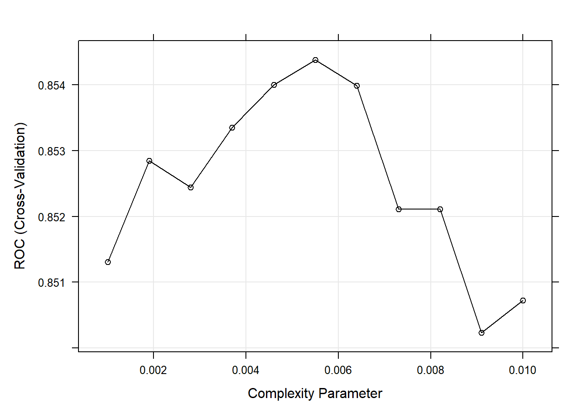
Estos son los resultados para el modelo final:
oj_mdl_cart2$finalModeln= 857
node), split, n, loss, yval, (yprob)
* denotes terminal node
1) root 857 334 CH (0.61026838 0.38973162)
2) LoyalCH>=0.48285 537 94 CH (0.82495345 0.17504655)
4) LoyalCH>=0.7648795 271 13 CH (0.95202952 0.04797048) *
5) LoyalCH< 0.7648795 266 81 CH (0.69548872 0.30451128)
10) PriceDiff>=-0.165 226 50 CH (0.77876106 0.22123894) *
11) PriceDiff< -0.165 40 9 MM (0.22500000 0.77500000) *
3) LoyalCH< 0.48285 320 80 MM (0.25000000 0.75000000)
6) LoyalCH>=0.2761415 146 58 MM (0.39726027 0.60273973)
12) SalePriceMM>=2.04 71 31 CH (0.56338028 0.43661972)
24) LoyalCH< 0.303104 7 0 CH (1.00000000 0.00000000) *
25) LoyalCH>=0.303104 64 31 CH (0.51562500 0.48437500)
50) WeekofPurchase>=246.5 52 22 CH (0.57692308 0.42307692)
100) PriceCH< 1.94 35 11 CH (0.68571429 0.31428571) *
101) PriceCH>=1.94 17 6 MM (0.35294118 0.64705882) *
51) WeekofPurchase< 246.5 12 3 MM (0.25000000 0.75000000) *
13) SalePriceMM< 2.04 75 18 MM (0.24000000 0.76000000)
26) SpecialCH>=0.5 14 6 CH (0.57142857 0.42857143) *
27) SpecialCH< 0.5 61 10 MM (0.16393443 0.83606557) *
7) LoyalCH< 0.2761415 174 22 MM (0.12643678 0.87356322) *rpart.plot(oj_mdl_cart2$finalModel)
Veamos el rendimiento en la muestra test:
pred3 <- predict(oj_mdl_cart2, newdata = oj_test, type = "raw")
oj_cm_cart2 <- confusionMatrix(pred3, oj_test$Purchase)
oj_cm_cart2Confusion Matrix and Statistics
Reference
Prediction CH MM
CH 117 18
MM 13 65
Accuracy : 0.8545
95% CI : (0.7998, 0.8989)
No Information Rate : 0.6103
P-Value [Acc > NIR] : 4.83e-15
Kappa : 0.6907
Mcnemar's Test P-Value : 0.4725
Sensitivity : 0.9000
Specificity : 0.7831
Pos Pred Value : 0.8667
Neg Pred Value : 0.8333
Prevalence : 0.6103
Detection Rate : 0.5493
Detection Prevalence : 0.6338
Balanced Accuracy : 0.8416
'Positive' Class : CH
La precisión es 0.8545, un poco peor que la 0.8592 del método directo. El AUC es 0.916 que es mejor que el obtenido con el método directo.
pred4 <- predict(oj_mdl_cart2, newdata = oj_test, type = "prob")[,"CH"]
roc.car2 <- roc(oj_test$Purchase, pred4, print.auc=TRUE,
ci=TRUE,
plot=TRUE)
Podemos comparar ambas curvas ROC mediante el test de DeLong
roc.test(roc.car, roc.car2)
DeLong's test for two correlated ROC curves
data: roc.car and roc.car2
Z = -2.4259, p-value = 0.01527
alternative hypothesis: true difference in AUC is not equal to 0
95 percent confidence interval:
-0.056801412 -0.006034547
sample estimates:
AUC of roc1 AUC of roc2
0.8848471 0.9162651 Finalmente, podemos crear fácilmente la gráfica de importancia de variables con la función varImp (). La lealtad a la marca es lo más importante, seguida de la diferencia de precio.
plot(varImp(oj_mdl_cart2), main="Importancia de variables con CART (caret)")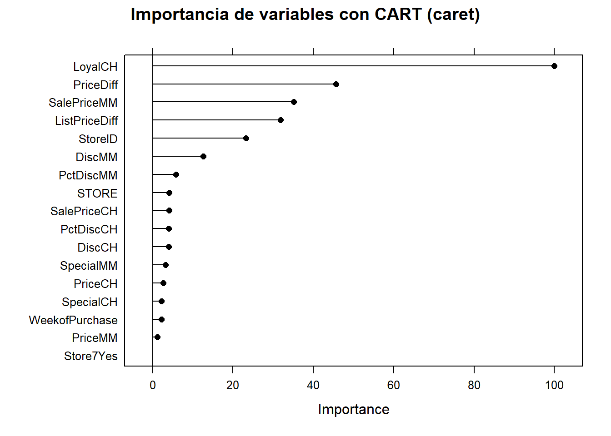
Parece que con la estrategia de caret hemos conseguido un mejor modelo predictivo gracias, sobre todo, a la posibilidad de buscar el mejor hiperparámetro haciend fine tuning.
oj_scoreboard <- rbind(
data.frame(Modelo = "Single Tree",
Accuracy = oj_cm_cart$overall["Accuracy"],
ROC = roc.car$auc),
data.frame(Modelo = "Single Tree (caret)",
Accuracy = oj_cm_cart2$overall["Accuracy"],
ROC = roc.car2$auc)) %>%
arrange(desc(ROC))
knitr::kable(oj_scoreboard, row.names = FALSE)| Modelo | Accuracy | ROC |
|---|---|---|
| Single Tree (caret) | 0.8544601 | 0.9162651 |
| Single Tree | 0.8591549 | 0.8848471 |
14.3 Árboles de regresión
Un árbol de regresión simple se construye de manera similar a un árbol de clasificación simple y, al igual que el árbol de clasificación, rara vez se usan por sí solo (sobre todo en problemas complejos o de big data). De nuevo, basaremos el aprendizaje de esta metodología partiendo de un ejemplo real. Usaremos el conjunto de datos ISLR::Carseats que pretende predecir las ventas de sillitas de niños para coches (variable Sales) en 400 tiendas usando 10 variables que contienen información de las características de las sillas.
cs_dat <- ISLR::Carseats
skimr::skim(cs_dat)| Name | cs_dat |
| Number of rows | 400 |
| Number of columns | 11 |
| _______________________ | |
| Column type frequency: | |
| factor | 3 |
| numeric | 8 |
| ________________________ | |
| Group variables | None |
Variable type: factor
| skim_variable | n_missing | complete_rate | ordered | n_unique | top_counts |
|---|---|---|---|---|---|
| ShelveLoc | 0 | 1 | FALSE | 3 | Med: 219, Bad: 96, Goo: 85 |
| Urban | 0 | 1 | FALSE | 2 | Yes: 282, No: 118 |
| US | 0 | 1 | FALSE | 2 | Yes: 258, No: 142 |
Variable type: numeric
| skim_variable | n_missing | complete_rate | mean | sd | p0 | p25 | p50 | p75 | p100 | hist |
|---|---|---|---|---|---|---|---|---|---|---|
| Sales | 0 | 1 | 7.50 | 2.82 | 0 | 5.39 | 7.49 | 9.32 | 16.27 | ▁▆▇▃▁ |
| CompPrice | 0 | 1 | 124.97 | 15.33 | 77 | 115.00 | 125.00 | 135.00 | 175.00 | ▁▅▇▃▁ |
| Income | 0 | 1 | 68.66 | 27.99 | 21 | 42.75 | 69.00 | 91.00 | 120.00 | ▇▆▇▆▅ |
| Advertising | 0 | 1 | 6.64 | 6.65 | 0 | 0.00 | 5.00 | 12.00 | 29.00 | ▇▃▃▁▁ |
| Population | 0 | 1 | 264.84 | 147.38 | 10 | 139.00 | 272.00 | 398.50 | 509.00 | ▇▇▇▇▇ |
| Price | 0 | 1 | 115.80 | 23.68 | 24 | 100.00 | 117.00 | 131.00 | 191.00 | ▁▂▇▆▁ |
| Age | 0 | 1 | 53.32 | 16.20 | 25 | 39.75 | 54.50 | 66.00 | 80.00 | ▇▆▇▇▇ |
| Education | 0 | 1 | 13.90 | 2.62 | 10 | 12.00 | 14.00 | 16.00 | 18.00 | ▇▇▃▇▇ |
De nuevo, partiremos nuestro conjunto de datos cs_dat (n = 400) en cs_train (80%, n = 321) y cs_test (20%, n = 79).
set.seed(12345)
partition <- createDataPartition(y = cs_dat$Sales, p = 0.8, list = FALSE)
cs_train <- cs_dat[partition, ]
cs_test <- cs_dat[-partition, ]El primer paso es construir un árbol completo y luego realizar una validación cruzada para ayudar a seleccionar la complejidad de costo óptima (cp). La única diferencia ahora es que usaremos method = "anova" en la función rpart () para poder estimar un árbol de regresión.
set.seed(1234)
cs_mdl_cart_full <- rpart(Sales ~ ., cs_train, method = "anova")
cs_mdl_cart_fulln= 321
node), split, n, deviance, yval
* denotes terminal node
1) root 321 2567.76800 7.535950
2) ShelveLoc=Bad,Medium 251 1474.14100 6.770359
4) Price>=105.5 168 719.70630 5.987024
8) ShelveLoc=Bad 50 165.70160 4.693600
16) Population< 201.5 20 48.35505 3.646500 *
17) Population>=201.5 30 80.79922 5.391667 *
9) ShelveLoc=Medium 118 434.91370 6.535085
18) Advertising< 11.5 88 290.05490 6.113068
36) CompPrice< 142 69 193.86340 5.769420
72) Price>=132.5 16 50.75440 4.455000 *
73) Price< 132.5 53 107.12060 6.166226 *
37) CompPrice>=142 19 58.45118 7.361053 *
19) Advertising>=11.5 30 83.21323 7.773000 *
5) Price< 105.5 83 442.68920 8.355904
10) Age>=63.5 32 153.42300 6.922500
20) Price>=85 25 66.89398 6.160800
40) ShelveLoc=Bad 9 18.39396 4.772222 *
41) ShelveLoc=Medium 16 21.38544 6.941875 *
21) Price< 85 7 20.22194 9.642857 *
11) Age< 63.5 51 182.26350 9.255294
22) Income< 57.5 12 28.03042 7.707500 *
23) Income>=57.5 39 116.63950 9.731538
46) Age>=50.5 14 21.32597 8.451429 *
47) Age< 50.5 25 59.52474 10.448400 *
3) ShelveLoc=Good 70 418.98290 10.281140
6) Price>=107.5 49 242.58730 9.441633
12) Advertising< 13.5 41 162.47820 8.926098
24) Age>=61 17 53.37051 7.757647 *
25) Age< 61 24 69.45776 9.753750 *
13) Advertising>=13.5 8 13.36599 12.083750 *
7) Price< 107.5 21 61.28200 12.240000 *Las ventas pronosticadas en la raíz son las ventas medias para el conjunto de datos de entrenamiento, 7.5 (los valores corresponden a miles de dolares). La primera división está en ShelveLoc = [Bad, Medium] vs Good (calidad). Aquí está el diagrama de árbol sin podar.
rpart.plot(cs_mdl_cart_full, yesno = TRUE)
Cada caja muestra el valor predicho del nodo (media) y la proporción de observaciones que están en el nodo (o nodos secundarios).
rpart () estima el árbol completo y utiliza validación cruzada para probar el rendimiento de los posibles hiperparámetros de complejidad. Como antes, printcp () muestra los valores de cp candidatos que pueden verse en esta tabla. Estos datos pueden ser utilizados para decidir cómo podar el árbol.
printcp(cs_mdl_cart_full)
Regression tree:
rpart(formula = Sales ~ ., data = cs_train, method = "anova")
Variables actually used in tree construction:
[1] Advertising Age CompPrice Income Population Price ShelveLoc
Root node error: 2567.8/321 = 7.9993
n= 321
CP nsplit rel error xerror xstd
1 0.262736 0 1.00000 1.00635 0.076664
2 0.121407 1 0.73726 0.74888 0.058981
3 0.046379 2 0.61586 0.65278 0.050839
4 0.044830 3 0.56948 0.67245 0.051638
5 0.041671 4 0.52465 0.66230 0.051065
6 0.025993 5 0.48298 0.62345 0.049368
7 0.025823 6 0.45698 0.61980 0.048026
8 0.024007 7 0.43116 0.62058 0.048213
9 0.015441 8 0.40715 0.58061 0.041738
10 0.014698 9 0.39171 0.56413 0.041368
11 0.014641 10 0.37701 0.56277 0.041271
12 0.014233 11 0.36237 0.56081 0.041097
13 0.014015 12 0.34814 0.55647 0.038308
14 0.013938 13 0.33413 0.55647 0.038308
15 0.010560 14 0.32019 0.57110 0.038872
16 0.010000 15 0.30963 0.56676 0.038090Hay 16 posibles valores de cp en este modelo. El modelo con el parámetro de complejidad más pequeño permite la mayoría de las divisiones (nsplit). El parámetro de mayor complejidad corresponde a un árbol con solo un nodo raíz. rel error es el SSE relativo al nodo raíz. El SSE del nodo raíz es 2567.76800, por lo que su error rel es 2567.76800 / 2567.76800 = 1.0. Eso significa que el error absoluto del árbol completo (en CP = 0.01) es 0.30963 * 2567.76800 = 795.058. Podemos verificar estos resultados calculando el SSE de los valores predichos del modelo:
data.frame(pred = predict(cs_mdl_cart_full, newdata = cs_train)) %>%
mutate(obs = cs_train$Sales,
sq_err = (obs - pred)^2) %>%
summarise(sse = sum(sq_err)) sse
1 795.0525La tabla también muestra, xerror que corresponde al SSE con validación cruzada y xstd a su error estándar. Si deseamos el error más bajo posible, podaremos el árbol con el SSE relativo más pequeño (xerror). Si deseamos equilibrar el poder predictivo con la simplicidad, podaremos al árbol más pequeño que esté dentro de 1 SE para el SSE relativo más pequeño. Al igual que en la sección anterior, la tabla CP no es muy útil para encontrar ese árbol, por lo que debemos añadir una columna para visualizar dicha información:
cs_mdl_cart_full$cptable %>%
data.frame() %>%
mutate(min_xerror_idx = which.min(cs_mdl_cart_full$cptable[, "xerror"]),
rownum = row_number(),
xerror_cap = cs_mdl_cart_full$cptable[min_xerror_idx, "xerror"] +
cs_mdl_cart_full$cptable[min_xerror_idx, "xstd"],
eval = case_when(rownum == min_xerror_idx ~ "min xerror",
xerror < xerror_cap ~ "under cap",
TRUE ~ "")) %>%
dplyr::select(-rownum, -min_xerror_idx) CP nsplit rel.error xerror xstd xerror_cap eval
1 0.26273578 0 1.0000000 1.0063530 0.07666355 0.5947744
2 0.12140705 1 0.7372642 0.7488767 0.05898146 0.5947744
3 0.04637919 2 0.6158572 0.6527823 0.05083938 0.5947744
4 0.04483023 3 0.5694780 0.6724529 0.05163819 0.5947744
5 0.04167149 4 0.5246478 0.6623028 0.05106530 0.5947744
6 0.02599265 5 0.4829763 0.6234457 0.04936799 0.5947744
7 0.02582284 6 0.4569836 0.6198034 0.04802643 0.5947744
8 0.02400748 7 0.4311608 0.6205756 0.04821332 0.5947744
9 0.01544139 8 0.4071533 0.5806072 0.04173785 0.5947744 under cap
10 0.01469771 9 0.3917119 0.5641331 0.04136793 0.5947744 under cap
11 0.01464055 10 0.3770142 0.5627713 0.04127139 0.5947744 under cap
12 0.01423309 11 0.3623736 0.5608073 0.04109662 0.5947744 under cap
13 0.01401541 12 0.3481405 0.5564663 0.03830810 0.5947744 min xerror
14 0.01393771 13 0.3341251 0.5564663 0.03830810 0.5947744 under cap
15 0.01055959 14 0.3201874 0.5710951 0.03887227 0.5947744 under cap
16 0.01000000 15 0.3096278 0.5667561 0.03808991 0.5947744 under capBien, entonces el árbol más simple es el que tiene CP = 0.02599265 (5 divisiones). También podemos usar plotcp () para visualizar la relación entrexerrorycp`.
plotcp(cs_mdl_cart_full, upper = "splits")La línea discontinua se establece en el mínimo xerror + xstd. El eje superior muestra el número de divisiones en el árbol. El error relativo más pequeño está en CP = 0.01 (15 divisiones), pero el CP máximo debajo de la línea discontinua (una desviación estándar por encima del error mínimo) está en CP = 0.02599265 (5 divisiones). Utilizamos entonces la función prune () para podar el árbol especificando el coste-complejidad asociado a este CP.
cs_mdl_cart <- prune(
cs_mdl_cart_full,
cp = cs_mdl_cart_full$cptable[cs_mdl_cart_full$cptable[, 2] == 5, "CP"]
)
rpart.plot(cs_mdl_cart, yesno = TRUE)
El indicador más “importante” de ventas es ShelveLoc. Estos son los valores de importancia del modelo:
cs_mdl_cart$variable.importance %>%
data.frame() %>%
rownames_to_column(var = "Feature") %>%
rename(Overall = '.') %>%
ggplot(aes(x = fct_reorder(Feature, Overall), y = Overall)) +
geom_pointrange(aes(ymin = 0, ymax = Overall), color = "cadetblue", size = .3) +
theme_minimal() +
coord_flip() +
labs(x = "", y = "", title = "Variable Importance with Simple Regression")El indicador más importante de ventas es ShelveLoc, luego Price, luego Age (edad media de la población donde está la tienda). Todas estas variables aparecen en el modelo final. CompPrice (precio del competidor) también es relevante.
El último paso es hacer predicciones sobre el conjunto de datos de validación. Cuando la variable respuesta es continua usamos:
la raíz del error cuadrático medio \(RMSE = \sqrt{(1/2) \sum{(actual - pred)^2}})\) y
el errr absoluto medio \(MAE = (1/n) \sum{|actual - pred|}\)
La diferencia entre ambos es que RMSE penaliza más los errores grandes. Para un árbol de regresión, basta con indicar type="vector") en la funciónpredict ()` (que es el valor por defecto).
cs_preds_cart <- predict(cs_mdl_cart, cs_test, type = "vector")
cs_rmse_cart <- RMSE(
pred = cs_preds_cart,
obs = cs_test$Sales
)
cs_rmse_cart[1] 2.363202El proceso de poda conduce a un error de predicción promedio de 2.363 en el conjunto de datos de prueba. No está mal considerando que la desviación estándar de la variable Sales es 2.8. Podemos visualizar la relación entre los datos predichos y los observados mediante:
data.frame(Predichos = cs_preds_cart, Observados = cs_test$Sales) %>%
ggplot(aes(x = Observados, y = Predichos)) +
geom_point(alpha = 0.6, color = "cadetblue") +
geom_smooth() +
geom_abline(intercept = 0, slope = 1, linetype = 2) +
labs(title = "Carseats CART, predichos vs observados")
14.3.1 Entrenamiento con caret
También podemos ajustar el modelo con caret::train () especificando method = "rpart". Construirmos el modelo usando 10-fold CV para optimizar el hiperparámetro CP.
cs_trControl = trainControl(
method = "cv",
number = 10,
savePredictions = "final"
)Usaremos la misma estrategia que en el caso de los árboles de clasificación,
dejaremos que el modelo busque el mejor parámetro de ajuste de CP con tuneLength y luego lo ajustaremos con tuneGrid.
set.seed(1234)
cs_mdl_cart2 = train(
Sales ~ .,
data = cs_train,
method = "rpart",
tuneLength = 5,
metric = "RMSE",
trControl = cs_trControl
)cs_mdl_cart2CART
321 samples
10 predictor
No pre-processing
Resampling: Cross-Validated (10 fold)
Summary of sample sizes: 289, 289, 289, 289, 289, 289, ...
Resampling results across tuning parameters:
cp RMSE Rsquared MAE
0.04167149 2.209383 0.4065251 1.778797
0.04483023 2.243618 0.3849728 1.805027
0.04637919 2.275563 0.3684309 1.808814
0.12140705 2.400455 0.2942663 1.936927
0.26273578 2.692867 0.1898998 2.192774
RMSE was used to select the optimal model using the smallest value.
The final value used for the model was cp = 0.04167149.El primer cp (0.04167149) presenta el RMSE más pequeño. Puedemos hacer una búsqueda más fina para mejorar el valor de cp usando un grid:
set.seed(1234)
cs_mdl_cart2 = train(
Sales ~ .,
data = cs_train,
method = "rpart",
tuneGrid = expand.grid(cp = seq(from = 0, to = 0.1, by = 0.01)),
metric = "RMSE",
trControl = cs_trControl
)
cs_mdl_cart2CART
321 samples
10 predictor
No pre-processing
Resampling: Cross-Validated (10 fold)
Summary of sample sizes: 289, 289, 289, 289, 289, 289, ...
Resampling results across tuning parameters:
cp RMSE Rsquared MAE
0.00 2.055676 0.5027431 1.695453
0.01 2.135096 0.4642577 1.745937
0.02 2.095767 0.4733269 1.699235
0.03 2.131246 0.4534544 1.690453
0.04 2.146886 0.4411380 1.712705
0.05 2.284937 0.3614130 1.837782
0.06 2.265498 0.3709523 1.808319
0.07 2.282630 0.3597216 1.836227
0.08 2.282630 0.3597216 1.836227
0.09 2.282630 0.3597216 1.836227
0.10 2.282630 0.3597216 1.836227
RMSE was used to select the optimal model using the smallest value.
The final value used for the model was cp = 0.En este ejemplo, parece que el árbol con mejor rendimiento es el que no ha sido podado.
plot(cs_mdl_cart2)
Este sería el modelo final
rpart.plot(cs_mdl_cart2$finalModel)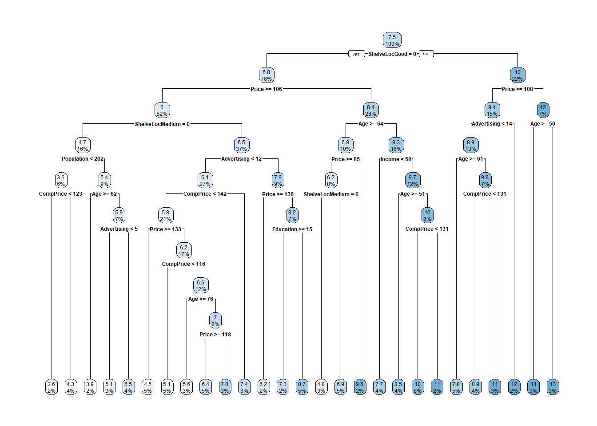
y estas las variables más importantes
plot(varImp(cs_mdl_cart2), main="Importancia de variables para Regresión")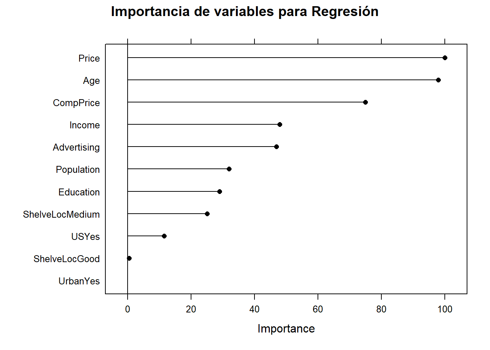
Como siempre, debemos evaluar el modelo en nuestra muestra test:
cs_preds_cart2 <- predict(cs_mdl_cart2, cs_test, type = "raw")
data.frame(Actual = cs_test$Sales, Predicted = cs_preds_cart2) %>%
ggplot(aes(x = Actual, y = Predicted)) +
geom_point(alpha = 0.6, color = "cadetblue") +
geom_smooth(method = "loess", formula = "y ~ x") +
geom_abline(intercept = 0, slope = 1, linetype = 2) +
labs(title = "Carseats CART, Predicted vs Actual (caret)")
Observamos como el modelo sobreestima en el extremo inferior y subestima en el extremo superior. Podemos calcular el RMSE para estos datos:
(cs_rmse_cart2 <- RMSE(pred = cs_preds_cart2, obs = cs_test$Sales))[1] 2.298331Caret mejora las predicciones:
cs_scoreboard <- rbind(
data.frame(Modelo = "Single Tree", RMSE = cs_rmse_cart),
data.frame(Modelo = "Single Tree (caret)", RMSE = cs_rmse_cart2)
) %>% arrange(RMSE)
knitr::kable(cs_scoreboard, row.names = FALSE)| Modelo | RMSE |
|---|---|
| Single Tree (caret) | 2.298331 |
| Single Tree | 2.363202 |
14.4 Bagged trees
Los CART tiene una capacidad predictiva moderada, es por ello que se han propuesto unos métodos que combinan varios árboles de decisión para producir un mejor rendimiento predictivo que utilizar un solo árbol de decisión. El principio fundamental detrás de estos modelos es que un grupo de predictores débiles puede conseguir un predictor con mejor capacidad predictiva.
Tenemos dos tipos de estrategias:
- Bagging
- Boosting
Bagging (Bootstrap Aggregation) se utiliza cuando nuestro objetivo es reducir la varianza de un árbol de decisión. La idea es crear varios subconjuntos de datos a partir de la muestra de entrenamiento elegida al azar con reemplazamiento. Cada subconjunto de datos se utiliza para entrenar un árbol de decisión. Como resultado, terminamos con un conjunto de diferentes modelos. Se utiliza el promedio de todas las predicciones de diferentes árboles, que es más robusto que considerar un solo árbol de decisión.

Bagged trees
En el Boosting se aprende de forma secuencial. Ajustamos árboles consecutivos (muestra aleatoria) y en cada paso, el objetivo es mejorar el error del árbol anterior.

Boosted trees
Como hemos dicho anteriormente, el algoritmo bagged construye B árboles decisión usando conjuntos de entrenamiento obtenidos mediante remuestreo y promedia las predicciones resultantes. Estos árboles crecen profundamente y no se podan. Por tanto, cada árbol individual tiene una alta varianza, pero un bajo sesgo. Promediar los B árboles ayuda a reducir la varianza. El valor predicho para una observación es la moda (clasificación) o la media (regresión) de los árboles. B generalmente es igual a ~ 25.

Proceso para Bagged trees
Para un conjunto de entrenamiento de tamaño \(n\), cada árbol se compone de \(\sim (1 - e^{-1})n = .632n\) observaciones únicas in-bag y \(.368n\) out-of-bag. Las observaciones que no han sido seleccionadas en el re-muestreo se usan para evaluar la precisión del modelo. La capacidad glogal del método se obtiene promediando la capacidad de cada árbol. Esto tiene una desventaja obvia y es que si cada árbol tiene un rendimiento deficiente, el rendimiento promedio de muchos árboles seguirá siendo deficiente. Además, otra desventaja de este método es que no existe un árbol único con un conjunto de reglas para interpretar. En consecuencia, no queda claro qué variables son más importantes que otras y en algunos problemas (sobre todo biomédicos) esto puede ser una limitación importante.
14.4.1 Bagging árboles de clasificación
Veamos de nuevo con un ejemplo cómo trabajar con estos métodos. Usaremos de nuevo los datos de zumos de naranja OJ. Esta vez usaremos un método bagging especificando method="treebag". Caret no tiene hiperparámetros para este modelo, por lo que no es necesario usar tuneLegth ni tuneGrid. El tamaño de conjunto predeterminado es nbagg = 25 (a veces se puede tunear, pero en este caso lo dejaremos fijo).
set.seed(1234)
oj_mdl_bag <- train(
Purchase ~ .,
data = oj_train,
method = "treebag",
trControl = oj_trControl,
metric = "ROC"
)
oj_mdl_bag$finalModel
Bagging classification trees with 25 bootstrap replications Veamos el rendimiento en el conjunto de datos test.
pred_bag <- predict(oj_mdl_bag, newdata = oj_test, type = "raw")
oj_cm_bag <- confusionMatrix(pred_bag, oj_test$Purchase)
oj_cm_bagConfusion Matrix and Statistics
Reference
Prediction CH MM
CH 113 16
MM 17 67
Accuracy : 0.8451
95% CI : (0.7894, 0.8909)
No Information Rate : 0.6103
P-Value [Acc > NIR] : 6.311e-14
Kappa : 0.675
Mcnemar's Test P-Value : 1
Sensitivity : 0.8692
Specificity : 0.8072
Pos Pred Value : 0.8760
Neg Pred Value : 0.7976
Prevalence : 0.6103
Detection Rate : 0.5305
Detection Prevalence : 0.6056
Balanced Accuracy : 0.8382
'Positive' Class : CH
La precisión es 0.8451, sorprendentemente peor que el 0.85915 del modelo de árbol único, pero esa es una diferencia que corresponde a tres predicciones en un conjunto de 213. Esta sería la curva ROC.
pred_bag2 <- predict(oj_mdl_bag, newdata = oj_test, type = "prob")[,"CH"]
roc.bag <- roc(oj_test$Purchase, pred_bag2, print.auc=TRUE,
ci=TRUE,
plot=TRUE)
Veamos cuáles son las variables más importantes
plot(varImp(oj_mdl_bag), main="Importancia de variables con Bagging")Esta es la comparación entre métodos
oj_scoreboard <- rbind(oj_scoreboard,
data.frame(Modelo = "Bagging",
Accuracy = oj_cm_bag$overall["Accuracy"],
ROC = roc.bag$auc)
) %>% arrange(desc(ROC))
knitr::kable(oj_scoreboard, row.names = FALSE)| Modelo | Accuracy | ROC |
|---|---|---|
| Single Tree (caret) | 0.8544601 | 0.9162651 |
| Bagging | 0.8450704 | 0.9099166 |
| Single Tree | 0.8591549 | 0.8848471 |
14.4.2 Bagging árboles de regresión
Usemos bagging para predecir las ventas en los datos Carseats:
set.seed(1234)
cs_mdl_bag <- train(
Sales ~ .,
data = cs_train,
method = "treebag",
trControl = cs_trControl
)
cs_mdl_bagBagged CART
321 samples
10 predictor
No pre-processing
Resampling: Cross-Validated (10 fold)
Summary of sample sizes: 289, 289, 289, 289, 289, 289, ...
Resampling results:
RMSE Rsquared MAE
1.681889 0.675239 1.343427Veamos el rendimiento en el conjunto de datos test. El RMSE es 1.9185, pero el modelo predice en exceso en el extremo inferior de ventas y tampoco predice bien en el extremo superior (como un árbol simple).
cs_preds_bag <- bind_cols(
Predicted = predict(cs_mdl_bag, newdata = cs_test),
Actual = cs_test$Sales
)
(cs_rmse_bag <- RMSE(pred = cs_preds_bag$Predicted, obs = cs_preds_bag$Actual))[1] 1.918473cs_preds_bag %>%
ggplot(aes(x = Actual, y = Predicted)) +
geom_point(alpha = 0.6, color = "cadetblue") +
geom_smooth(method = "loess", formula = "y ~ x") +
geom_abline(intercept = 0, slope = 1, linetype = 2) +
labs(title = "Carseats Bagging, Predicted vs Actual (caret)")La importancia de las variables son:
plot(varImp(cs_mdl_bag), main="Importancia de variables con Bagging")
Y la comparación quedaría
cs_scoreboard <- rbind(cs_scoreboard,
data.frame(Modelo = "Bagging", RMSE = cs_rmse_bag)
) %>% arrange(RMSE)
knitr::kable(cs_scoreboard, row.names = FALSE)| Modelo | RMSE |
|---|---|
| Bagging | 1.918473 |
| Single Tree (caret) | 2.298331 |
| Single Tree | 2.363202 |
| EJERCICIO (Entrega en Moodle: P2-Bagged): |
| Implementa una función que implemente el método “bagged tree”. Aplícalo a los datos “Carseats” y compara tus resultados con los que se obtienen usando caret. |
| EJERCICIO (Entrega en Moodle: P-Bagged Breast cancer): |
| Utiliza los datos de cáncer de mama que hemos trabajado en clase “breast_train_prep” y “breast_test_prep” (que puedes encontrar en el fichero “breast.Rdata” del Moodle) para crear un modelo predictivo usando CART y Bagged Trees. Compara los resultados con los obtenidos mediant KNN y LDA reportados en el bookdown del curso. |
14.5 Random Forest
Los Random Forest (bosques aleatorios) también son un conjunto de árboles de decisión (ensambladores) que mejoran los bagged trees mediante la creación de un bosque no correlacionados de árboles que, de nuevo, mejora la capacidad predictiva de un único árbol. Al igual que en el bagged (embolsado), el algoritmo construye varios árboles de decisión sobre muestras de entrenamiento bootstrap. Sin embargo, al construir estos árboles de decisión, cada vez que se considera una división en un árbol, se elige una muestra aleatoria de predictores (hiperparámetro m o mtry) como candidatos de división del conjunto completo de predictores \(p\). En cada división se toma una nueva muestra de predictores. Típicamente \(m \approx \sqrt{p}\). En consecuencia, los árboles bagged son un caso especial de los random forest cuando \(m = p\).
Cada árbol del modelo random forest se construye de la siguiente forma:
Si denotamos por \(N\) el número de casos en el conjunto de entrenamiento, seleccionaremos una muestra de esos \(N\) casos se forma aleatoria CON REEMPLAZAMIENTO. Esta muestra será el conjunto de entrenamiento para construir el árbol i-ésimo.
Si denotamos por \(M\) el número total de varibles predictoras, seleccionaremos un número \(m < M\) de variables y crearemos un árbol completo con esas variables. El valor \(m\) se mantiene constante durante la generación de todo el bosque.
Cada árbol crece hasta su máxima extensión posible y NO hay proceso de poda.
La predicción para nuevos individuos se hace a partir de la información obtenida de las predicciones de los \(B\) árboles (mayoría de votos para clasificación, promedio para regresión). La siguiente figura ilustra este proceso

Random Forest
Podemos estimar un random forest con cart indicando el argumento method = "rf". El hiperparámetro mtry (\(m\)) puede tomar cualquier valor de 1 a 17 (el número de predictores) y se espera que el valor óptimo esté cerca de \(\sqrt{17} \approx 4\). En cuanto al número de árboles (segundo hiperparámetro), hay estudios que demuestran que el rendimiento empeora cuando tenemos muchos árboles, sin embargo esto no está muy claro y por lo general se recomienda entrenar modelos con muchos árboles. Por defecto method = "rf" tiene 500 (argumento num.trees).
set.seed(1234)
oj_mdl_rf <- train(
Purchase ~ .,
data = oj_train,
method = "rf",
metric = "ROC",
tuneGrid = expand.grid(mtry = 3:10),
trControl = oj_trControl,
num.trees = 500
)
oj_mdl_rfRandom Forest
857 samples
17 predictor
2 classes: 'CH', 'MM'
No pre-processing
Resampling: Cross-Validated (10 fold)
Summary of sample sizes: 772, 772, 771, 770, 771, 771, ...
Resampling results across tuning parameters:
mtry ROC Sens Spec
3 0.8655672 0.8565312 0.7185383
4 0.8685845 0.8641872 0.7122995
5 0.8682630 0.8470247 0.7183601
6 0.8672458 0.8412917 0.7124777
7 0.8695796 0.8412917 0.7183601
8 0.8668721 0.8393687 0.7213012
9 0.8652269 0.8432148 0.7153298
10 0.8671443 0.8413280 0.7152406
ROC was used to select the optimal model using the largest value.
The final value used for the model was mtry = 7.El valor de ROC más alto se da en \(m = 7\) que es más alto de lo que esperábamos, pero fijémosnos que es un valor de ROC muy similar al que se obtiene con \(m=4\), por lo que por el principio de parsimonia podríamos usar dicho valor
plot(oj_mdl_rf)También podemos visualizar los resultados con:
plot_rf <- function(model) {
theme_set(theme_minimal())
u <- model$results %>%
dplyr::select(mtry, ROC, Sens, Spec) %>%
gather(a, b, -mtry)
u %>% ggplot(aes(mtry, b)) + geom_line() + geom_point() +
facet_wrap(~ a, scales = "free") +
labs(x = "Número de predictores", y = NULL,
title = "Relación entre el número de predictores y el comportamiento del modelo")
}
oj_mdl_rf %>% plot_rf()
| EJERCICIO (Entrega en Moodle: P2-Plot RF): |
Si en el modelo train usamos metric = "prSummary" también podemos visualizar otras métricas para evaluar el comportamiento del modelo. En particular el AUC que puede ser interesante desde un punto de vista práctico. Crea una función que visualice dichas métricas y aplícalo a los datos oj_train (que obviamente tendrás que re-entrenar con esa nueva métrica). |
Podemos usar este modelo para hacer predicciones sobre la muestra test
pred_rf <- predict(oj_mdl_rf, newdata = oj_test, type = "raw")
oj_cm_rf <- confusionMatrix(pred_rf, oj_test$Purchase)
oj_cm_rfConfusion Matrix and Statistics
Reference
Prediction CH MM
CH 112 16
MM 18 67
Accuracy : 0.8404
95% CI : (0.7841, 0.8869)
No Information Rate : 0.6103
P-Value [Acc > NIR] : 2.164e-13
Kappa : 0.6659
Mcnemar's Test P-Value : 0.8638
Sensitivity : 0.8615
Specificity : 0.8072
Pos Pred Value : 0.8750
Neg Pred Value : 0.7882
Prevalence : 0.6103
Detection Rate : 0.5258
Detection Prevalence : 0.6009
Balanced Accuracy : 0.8344
'Positive' Class : CH
Y el área bajo la curva ROC sería:
pred_rf2 <- predict(oj_mdl_rf, newdata = oj_test, type = "prob")[,"CH"]
roc.rf <- roc(oj_test$Purchase, pred_bag2, print.auc=TRUE,
ci=TRUE,
plot=TRUE)que compara con los modelos anteriores de esta forma:
Y la comparación quedaría
oj_scoreboard <- rbind(oj_scoreboard,
data.frame(Modelo = "Random Forest",
Accuracy = oj_cm_rf$overall["Accuracy"],
ROC = roc.rf$auc)
) %>% arrange(desc(ROC))
knitr::kable(oj_scoreboard, row.names = FALSE)| Modelo | Accuracy | ROC |
|---|---|---|
| Single Tree (caret) | 0.8544601 | 0.9162651 |
| Bagging | 0.8450704 | 0.9099166 |
| Random Forest | 0.8403756 | 0.9099166 |
| Single Tree | 0.8591549 | 0.8848471 |
Recordemos que la importancia de las variables se puede ver con la función varImp al igual que cualquier otro modelo basado en àrboles de decisión.
NOTA: El ejemplo para Random Forest con árboles de regresión es igual que lo que vimos en la sección anterior.
NOTA2: En este artículo se hace un “benchmarking” muy interesante para saber qué método y libería de R usar en función de las características de nuestro conjunto de datos.
Speiser JL et al. (2012). A Comparison of Random Forest Variable Selection Methods for Classification Prediction Modeling
Random forest classification is a popular machine learning method for developing prediction models in many research settings. Often in prediction modeling, a goal is to reduce the number of variables needed to obtain a prediction in order to reduce the burden of data collection and improve efficiency. Several variable selection methods exist for the setting of random forest classification; however, there is a paucity of literature to guide users as to which method may be preferable for different types of datasets. Using 311 classification datasets freely available online, we evaluate the prediction error rates, number of variables, computation times and area under the receiver operating curve for many random forest variable selection methods. We compare random forest variable selection methods for different types of datasets (datasets with binary outcomes, datasets with many predictors, and datasets with imbalanced outcomes) and for different types of methods (standard random forest versus conditional random forest methods and test based versus performance based methods). Based on our study, the best variable selection methods for most datasets are Jiang’s method and the method implemented in the VSURF R package. For datasets with many predictors, the methods implemented in the R packages varSelRF and Boruta are preferable due to computational efficiency. A significant contribution of this study is the ability to assess different variable selection techniques in the setting of random forest classification in order to identify preferable methods based on applications in expert and intelligent systems.
| EJERCICIO (Entrega en Moodle: P-RF Breast cancer): |
| Utiliza los datos de cáncer de mama que hemos trabajado en clase “breast_train_prep” y “breast_test_prep” (que puedes encontrar en el fichero “breast.Rdata” del Moodle) para crear un modelo predictivo usando Random Forest. Compara los resultados con los obtenidos mediante KNN y LDA reportados en el bookdown del curso (y di si mejora los que obtuviste con CART y Bagged Trees). |
14.6 Random Forest p>>n
Problema: Aplicar Random Forest para conjunto de datos con muchas variables (caso p>>n)
- Posible estrategia:
- Creamos K subconjuntos de variable
- Llevamos a cabo una selección de las variables más importantes y nos quedamos con una parte de ellas. Por ejemplo, las M más informativas
- Combinamos las K*M variables y repetimos los pasos 1 y 2
- Acabamos con M variables seleccionadas
- Aplicamos Random Forest
Este enfoque podría causar la pérdida de algunas variables importantes, pero generalmente seleccionará las variables más informativas.
Selección de K y M Breiman (2001) recomienda \(m=p/3\) en clasificación y \(m=\sqrt{p}\) en regresión (mtry). ¿Puede servir esto de ayuda?
Otra opción: Librería ranger
15 Boosting
Esta sección describe un método alternativo llamado boosting, que es similar al método bagging, excepto que los árboles se crean (a veces se dice que crecen o se cultivan) secuencialmente. Cada árbol sucesivo se crea utilizando información de árboles creados previamente, con el objetivo de minimizar el error de los modelos anteriores (James et al., 2014).
Por ejemplo, dado un modelo de árbol de regresión actual, el procedimiento es el siguiente:
- Ajustamos un árbol de decisión utilizando los errores residuales del modelo como variable de resultado.
- Agregamos este nuevo árbol de decisión, ajustado por un parámetro de “contracción” (shrinkage)
lambda, en la función ajustada para actualizar los residuales.lambdaes un pequeño valor positivo, normalmente comprendido entre 0.01 y 0.001 y tiene como objetivo controlar el sobreajuste.
. Este enfoque da como resultado una mejora lenta y sucesiva del modelo ajustado, lo que resulta en un modelo de muy alto rendimiento. El boosting tiene diferentes parámetros de ajuste:
- El número de árboles M
- El parámetro de “contracción”
lambda - El número de divisiones en cada árbol (pruning).
Existen diferentes variantes de boosting como el Adaboost (clasificación binaria), Gradient Boosting y Stochastic Gradient Boosting. Este último, implementado en la liberería de R xgboost, es el método más usado comunmente, que implica hacer un remuestreo de observaciones y variables en cada iteración. Es la téncnica que ha demostrado tener un mejor rendimiento.
La idea del boosting, extraída de aquí, podría verse como un golfista que inicialmente golpea una pelota de golf hacia el hoyo que se encuentra en la posición \(y\), pero que solo llega hasta \(f_0\). Luego, el golfista golpea la pelota repetidamente de forma más suave, moviéndola hacia el hoyo poco a poco y después de reevaluar la dirección y la distancia al hoyo en cada golpeo. El siguiente diagrama ilustra 5 golpes que llegan al hoyo, \(y\), incluidos dos golpes que sobrepasan el hoyo. (Clipart de golfista de http://etc.usf.edu/clipart/)

Ejemplo del golfista para el boosting
De forma matemática podríamos decir que una máquina de aumento de gradiente (GBM) es un algoritmo de modelado aditivo que construye gradualmente un modelo compuesto agregando iterativamente \(M\) submodelos débiles basados en el rendimiento compuesto de las iteraciones anteriores:
\[F_M(x) = \sum_m^M f_m(x).\]
Como hemos dicho anteriromente, la idea es ajustar un modelo de predicción débil (no demasiada buena capacidad predictiva), luego reemplazar los valores de respuesta con los residuos de ese modelo y ajustar otro modelo. Agregar el modelo de predicción residual al modelo de predicción de respuesta original produce un modelo más preciso. GBM repite este proceso una y otra vez, ejecutando nuevos modelos para predecir los residuos de los modelos compuestos anteriores y agregando los resultados para producir nuevos modelos más complejos. Con cada iteración, el modelo se vuelve cada vez más fuerte (mejor predictor). Los árboles sucesivos suelen ponderarse para reducir la velocidad de aprendizaje. La “contracción” reduce la influencia de cada árbol de forma individual y deja margen para que los árboles futuros mejoren el modelo.
\[F_M(x) = f_0 + \eta\sum_{m = 1}^M f_m(x).\]
Cuanto menor sea la tasa de aprendizaje, \(\eta\), mayor será el número de árboles necesario, \(M\). \(\eta\) y \(M\) son hiperparámetros. También podríamos usar otras restricciones a los árboles que se usarían como hiperparámetros adicionales como la profundidad del árbol, el número de nodos, las observaciones mínimas por división y la mejora mínima de la pérdida.
El nombre “gradient boosting” se refiere al uso de una metodología boosting con “gradiente”. Cada iteración de entrenamiento crea un modelo predictor débil y usa los residuos para calcular un gradiente que no es más que la derivada parcial de una función de pérdida. El GBM “desciende el gradiente” para ajustar los parámetros del modelo y reducir el error en la siguiente iteración de entrenamiento.
En el caso de problemas de clasificación, la función de pérdida es el log-loss; para problemas de regresión, la función de pérdida es el error cuadrático medio. GBM continúa hasta que alcanza el número máximo de árboles o un nivel de error aceptable.
Veamos cómo funciona esta metodología con el ejemplo del golfista. La expresión anterior, se puede poner de forma recurrente como
\[ \begin{align*} & F_0(x) = f_0(x) \\ & F_m(x) = F_{m-1}(x) + \Delta_m(x) \end{align*} \]
Después del golpe inicial, el golfista determina el “golpe óptimo” calculando la diferencia entre \(y\) y la primera aproximación, \(y-f_0(x)\). Esta diferencia generalmente se llama vector residual o residual, pero es útil para aumentar el gradiente pensar en esto como el vector que apunta desde la predicción actual, a la verdadera \(y\). Usar el vector residual para nuestro siguiente golpe, significa entrenar \(\Delta_m(x)\) en el valor \(y - F_{m-1}(x)\) en el modelo anterior (que es más débil). Al igual que con cualquier modelo de aprendizaje automático, nuestros modelos no tendrán un recall y precision perfectas, por lo que debemos esperar dar una predicción con variabilidad (ruido) en lugar obtener exactamente \(y - F_{m-1}(x)\).
Asumamos como ejemplo que el hoyo está a \(y=100\) metros y que \(f_0(x)=70\). En la siguiente tabla podríamos ver una secuencia del algorirmo GBM en función de la imprecisión de los golpes $_{m}(x) del golfista:

Ejemplo numérico GBM
La implementación de GBM también admitiría una tasa de aprendizaje, \(\eta\) que acelera o ralentiza la aproximación a \(y\), lo que ayuda a reducir la probabilidad de sobreajuste.
15.1 Cómo funciona el boosting
En resumen la idea principal del boosting es agregar nuevos modelos al conjunto de modelos de forma secuencial. En esencia, el boosting trata de controlar la relación sesgo-varianza comenzando con un modelo débil (por ejemplo, un árbol de decisión con solo unas pocas divisiones) y secuencialmente aumenta su rendimiento al continuar construyendo nuevos árboles, donde cada nuevo árbol en la secuencia intenta arreglar aquellas predicciones dónde el anterior árbol cometió los mayores errores (es decir, cada nuevo árbol en la secuencia se enfocará en las filas de entrenamiento donde el árbol anterior tuvo los mayores errores de predicción). La siguiente figura representa un esquema de esta metodología

Aproximación secuencial de ensamblaje
15.2 AdaBoost
El algoritmo AdaBoost (Adaptative Boosting) supuso un avance muy importante en el campo del aprendizaje estadístico, ya que hizo posible aplicar la estrategia de boosting a multitud de problemas. Para el funcionamiento de AdaBoost (problema de clasificación binaria) es necesario establecer:
Un “predictor débil” (weak learner o base learner), que sea capaz de predecir la variable respuesta con un porcentaje de acierto ligeramente superior a lo esperado por azar. En el caso de los árboles de regresión, este weak learner suele ser un árbol con apenas unos pocos nodos, pero también se puede usar regresión logística.
Codificar las dos clases de la variable respuesta como +1 y -1.
Dar un peso inicial e igual para todas las observaciones que forman el conjunto de datos de entrenamiento.
Una vez que estos tres puntos se han establecido, se inicia un proceso iterativo. En la primera iteración, se ajusta el “predictor base” usando los datos de entrenamiento y los pesos iniciales (todos iguales). Con el “predictor base” ajustado y guardado, se predicen las observaciones de entrenamiento y se identifican aquellas bien y mal clasificadas. Con esta información:
Se actualizan los pesos de las observaciones, disminuyendo el de las que están bien clasificadas y aumentando el de las mal clasificadas.
Se asigna un peso total al “predictor base”, proporcional al total de aciertos. Cuantos más aciertos consiga el “predictor base”, mayor será su influencia en el conjunto del predictores ensamblados.
En la siguiente iteración, se llama de nuevo al “predictor base” y se vuelve a ajustar, esta vez, empleando los pesos actualizados en la iteración anterior. El nuevo “predictor base” se guarda, obteniendo así un nuevo modelo para el ensemblado de predictores débiles. Este proceso se repite \(M\) veces, generando un total de \(M\) “predictores base”. Para clasificar nuevas observaciones, se obtiene la predicción de cada uno de los “predictores base” que forman el ensemblado y se agregan sus resultados, ponderando el peso de cada uno acorde al peso que se le ha asignado en el ajuste. El objetivo detrás de esta estrategia es que cada nuevo “predictor base” se centra en predecir correctamente las observaciones que los anteriores no han sido capaces.
El pseudocódigo de este algoritmo sería:
- \(N\): número de observaciones en la muestra de entrenamiento
- \(M\): número de iteraciones (número total de “predictores base”)
- \(G_m\): “predictor base” en la iteración \(m\)
- \(w_i\): peso de la observación \(i\)-ésima
- \(\alpha_m\): peso del “predictor base” \(m\)-ésimo
- Inicializamos los peso de las observaciones como:
\[w_i=\frac{1}{N}, \ \ i=1,2, \cdots, N\]
Para \(m=1:M\):
- Ajustar el “predictor base” \(G_m\) usiant las observaciones de entrenamiento y los pesos \(w_i\).
- Calcular el error del “predictor base” como: \[err_m = \frac{\sum^N_{i=1} w_iI(y_i \neq G_m(x_i))}{\sum^N_{i=1}w_i}\].
- Calcular el peso asignado al “predictor base” \(G_m\) como: \[\alpha_m = log(\frac{1-err_m}{err_m})\]
- Actualizar los pesos de las observaciones: \[w_i = w_i exp[\alpha_m I(y_i \neq G_m(x_i))], \ \ \ i = 1, 2,..., N\].
Predecimos las nuevas observaciones mediante el predictor ensamblado que es la agregación de todos los “predictores base” ponderándolos por su peso: \[G(x) = sign[\sum^M_{m=1} \alpha_mG_m(x)]\].
| EJERCICIO (Entrega en Moodle: P2-AdaBoost): |
| Implementa una función para el algoritmo AdaBoost que tenga como “predictor base” la regresión logística. Úsala con el ejemplo de cáncer de mama (breast_train_prep & breast_test_prep) y compara los resultados con los obtenidos mediante LDA que están en este bookdown. |
15.3 GBM básico
En 1999, Friedman relacionó AdaBoost con conceptos estadísticos importantes (por ejemplo, funciones de pérdida y modelado aditivo), lo que le permitió generalizar el boosting a problemas de regresión y funciones de pérdida múltiple (J. H. Friedman 2001 (modified)). Esto llevó al modelo típico de GBM que usamos hoy en día y en el que se basan la mayoría de las implementaciones modernas.
15.3.1 Hiperparámetros
Un modelo de GBM simple contiene dos categorías de hiperparámetros: hiperparámetros boosting y los hiperparámetros específicos del árbol. Los dos principales tipos de hiperparámetros de boosting incluyen:
Número de árboles: el número total de árboles en la secuencia o ensamblaje. El promedio de árboles creados de forma independiente en bagged trees y random forest hace que sea muy difícil sobreajustar con demasiados árboles. Sin embargo, los GBM funcionan de manera diferente ya que cada árbol se crea en secuencia para corregir los errores del árbol anterior. Además, dependiendo de los valores de los otros hiperparámetros, los GBM a menudo requieren muchos árboles (no es raro tener muchos miles de árboles) pero como pueden sobreajustarse fácilmente debemos encontrar el número óptimo de árboles que minimicen la función de pérdida de interés mediante validación cruzada.
Tasa de aprendizaje: determina la contribución de cada árbol en el resultado final y controla la rapidez con que el algoritmo avanza por el descenso del gradiente (predictores) (ver la siguiente figura). Los valores oscilan entre 0 y 1 con valores típicos entre 0.001 y 0.3. Los valores más pequeños hacen que el modelo sea robusto a las características específicas de cada árbol individual, lo que le permite generalizar bien. Los valores más pequeños también facilitan la detención antes del sobreajuste; sin embargo, aumentan el riesgo de no alcanzar el óptimo con un número fijo de árboles y son más exigentes desde el punto de vista informático. Este hiperparámetro también se denomina contracción. Generalmente, cuanto menor sea este valor, más preciso puede ser el modelo, pero también requerirá más árboles en el ensamblaje.

Si la tasa de aprendizaje es muy pequeña, necesitaremos muchas iteraciones para encontrar el mínimo. Una tasa muy grande, nos puede hacer pasar el mínimo
Los dos hiperparámetros del árbol de aprendizaje en un modelo de GBM simple incluyen:
Profundidad del árbol: controla la profundidad de los árboles individuales. Los valores típicos oscilan entre una profundidad de 3 a 8, pero no es raro ver una profundidad de árbol de 1 (J. Friedman, Hastie y Tibshirani 2001). Los árboles de menor profundidad son computacionalmente eficientes (pero requieren más árboles); sin embargo, los árboles de mayor profundidad permiten que el algoritmo capture interacciones complejas pero también aumentan el riesgo de sobreajuste. Debemos tener en cuenta que valores grandes de \(n\) o \(p\) en el conjunto de entrenamiento son más tolerantes con árboles profundos.
Número mínimo de observaciones en nodos terminales: Además, controla la complejidad de cada árbol. Dado que tendemos a utilizar árboles más cortos, esto rara vez tiene un gran impacto en el rendimiento. Los valores típicos oscilan entre 5 y 15, donde los valores más altos ayudan a evitar que un modelo aprenda relaciones que pueden ser muy específicas para la muestra particular seleccionada para un árbol (sobreajuste) pero los valores más pequeños pueden ayudar con las clases objetivo desequilibradas en los problemas de clasificación.
15.3.2 Implementación
Hay muchas librería que implementan GBM y variantes de GBM. Podemos encontrar una lista bastante completa en la Vista de tareas de aprendizaje automático de CRAN: https://cran.r-project.org/web/views/MachineLearning.html. Sin embargo, la implementación de R original más popular del algoritmo GBM de Friedman (J. H. Friedman 2001; Friedman 2002) es el paquete gbm.
gbm tiene dos funciones de entrenamiento: gbm::gbm() y gbm::gbm.fit(). La principal diferencia es que gbm::gbm() usa la interfaz de fórmulas para especificar su modelo, mientras que gbm::gbm.fit() requiere las matrices \(x\) e \(y\) separadas; gbm::gbm.fit() es más eficiente y su uso es recomendado para usuarios avanzados.
La configuración predeterminada en gbm incluye una tasa de aprendizaje (constricción) de 0.001. Esta es una tasa de aprendizaje muy pequeña y normalmente requiere una gran cantidad de árboles para minimizar suficientemente la función de pérdida. Sin embargo, gbm usa un número predeterminado de árboles de 100, que rara vez es suficiente. En consecuencia, comenzamos con una tasa de aprendizaje de 0.1 y aumentamos la cantidad de árboles para entrenar. La profundidad predeterminada de cada árbol (profundidad de interacción) es 1, lo que significa que estamos agrupando un montón de elementos de decisión (es decir, no podemos capturar ningún efecto de interacción).
Para el conjunto de datos de sillitas de coches, aumentamos la profundidad del árbol a 3 y usamos el valor predeterminado para el número mínimo de observaciones requeridas en los nodos terminales de los árboles (n.minobsinnode). Por último, establecemos cv.folds = 10 para realizar un CV de 10 veces.
library(gbm)
set.seed(1234)
md1_gbm <- gbm(
formula = Sales ~ .,
data = cs_train,
distribution = "gaussian", # SSE loss function
n.trees = 500,
shrinkage = 0.1,
interaction.depth = 3,
n.minobsinnode = 10,
cv.folds = 10
)
# find index for number trees with minimum CV error
best <- which.min(md1_gbm$cv.error)
# get MSE and compute RMSE
sqrt(md1_gbm$cv.error[best])[1] 1.281917Nuestros resultados muestra un SSE obtenido mediante validación cruzada de 1.28 que se alcanza con 120 árboles.
# plot error curve
gbm.perf(md1_gbm, method = "cv")
[1] 120También podemos hacer lo mismo con caret
set.seed(1234)
garbage <- capture.output(
cs_mdl_gbm <- train(
Sales ~ .,
data = cs_train,
method = "gbm",
tuneLength = 5,
trControl = cs_trControl
))
cs_mdl_gbmStochastic Gradient Boosting
321 samples
10 predictor
No pre-processing
Resampling: Cross-Validated (10 fold)
Summary of sample sizes: 289, 289, 289, 289, 289, 289, ...
Resampling results across tuning parameters:
interaction.depth n.trees RMSE Rsquared MAE
1 50 1.842468 0.6718370 1.4969754
1 100 1.516967 0.7823612 1.2407807
1 150 1.309295 0.8277888 1.0639501
1 200 1.216079 0.8429002 0.9866820
1 250 1.161540 0.8488463 0.9384418
2 50 1.527454 0.7801995 1.2207991
2 100 1.240990 0.8381156 1.0063802
2 150 1.187603 0.8415216 0.9616681
2 200 1.174303 0.8425011 0.9527720
2 250 1.172116 0.8403490 0.9500902
3 50 1.390969 0.8071393 1.1316570
3 100 1.227525 0.8321632 0.9888203
3 150 1.201264 0.8345775 0.9694065
3 200 1.214462 0.8282833 0.9761625
3 250 1.232145 0.8221405 0.9882254
4 50 1.341893 0.8128778 1.0949502
4 100 1.252282 0.8230712 0.9907410
4 150 1.243045 0.8229433 0.9860813
4 200 1.258093 0.8162033 0.9947218
4 250 1.271058 0.8114156 1.0144873
5 50 1.318251 0.8128033 1.0552929
5 100 1.250053 0.8226441 0.9958713
5 150 1.248402 0.8214824 0.9888330
5 200 1.263445 0.8158033 1.0106345
5 250 1.273024 0.8124672 1.0213099
Tuning parameter 'shrinkage' was held constant at a value of 0.1
Tuning parameter 'n.minobsinnode'
was held constant at a value of 10
RMSE was used to select the optimal model using the smallest value.
The final values used for the model were n.trees = 250, interaction.depth = 1, shrinkage = 0.1
and n.minobsinnode = 10.Que no es tan fino y se obtienen diferentes resultados
15.3.3 Estrategia general de tuning
A diferencia de los bosques aleatorios, los GBM pueden tener una alta variabilidad en la precisión dependiendo de la configuración de sus hiperparámetros (Probst, Bischl y Boulesteix 2019). Por lo tanto, el ajuste puede requerir mucha más estrategia que un modelo de bosque aleatorio. A menudo, un buen enfoque es:
- Elegir una tasa de aprendizaje relativamente alta. Generalmente, el valor predeterminado de 0.1 funciona, pero valores entre 0.05 y 0.2 debería funcionar en una amplia gama de problemas.
- Determinar el número óptimo de árboles para esta tasa de aprendizaje.
- Corregir los hiperparámetros del árbol y ajuste la tasa de aprendizaje y evaluar la velocidad frente al rendimiento.
- Ajustar los parámetros específicos del árbol para determinar la tasa de aprendizaje.
- Una vez que se han encontrado los parámetros específicos del árbol, reducir la tasa de aprendizaje para evaluar cualquier mejora en la precisión.
- Utilizar la configuración de hiperparámetros finales y aumente los procedimientos de CV para obtener estimaciones más sólidas. A menudo, los pasos anteriores se realizan con un procedimiento de validación simple o un CV de 5 veces debido a restricciones computacionales. Si utilizó k-fold CV en los pasos 1 a 5, este paso no es necesario.
Ya hemos hecho los pasos (1) - (2) en el ejemplo anterior con nuestro primer modelo de GBM. A continuación, haremos (3) y evaluaremos el rendimiento de varios valores de tasa de aprendizaje entre 0.005 y 0.3. Nuestros resultados indican que una tasa de aprendizaje de 0.05 minimiza suficientemente nuestra función de pérdida y requiere 260 árboles.
Todos nuestros modelos tardan un poco más de 3 segundos en entrenarse, por lo que no vemos ningún impacto significativo en el tiempo de entrenamiento según la tasa de aprendizaje.
# create grid search
hyper_grid <- expand.grid(
learning_rate = c(0.3, 0.1, 0.05, 0.01, 0.005),
RMSE = NA,
trees = NA,
Time = NA
)
# execute grid search
for(i in seq_len(nrow(hyper_grid))) {
# fit gbm
set.seed(123) # for reproducibility
train_time <- system.time({
m <- gbm(
Sales ~ .,
data = cs_train,
distribution = "gaussian",
n.trees = 500,
shrinkage = hyper_grid$learning_rate[i],
interaction.depth = 3,
n.minobsinnode = 10,
cv.folds = 10
)
})
# add SSE, trees, and training time to results
hyper_grid$RMSE[i] <- sqrt(min(m$cv.error))
hyper_grid$trees[i] <- which.min(m$cv.error)
hyper_grid$Time[i] <- train_time[["elapsed"]]
}
# results
arrange(hyper_grid, RMSE) learning_rate RMSE trees Time
1 0.050 1.217178 260 5.81
2 0.100 1.229606 97 5.68
3 0.300 1.324525 49 5.98
4 0.010 1.380635 500 6.38
5 0.005 1.717680 500 6.09A continuación, estableceremos nuestra tasa de aprendizaje en el nivel óptimo (0.05) y el número de árboles a 260 para ajustar los hiperparámetros específicos del árbol (interaction.depth y n.minobsinnode). El ajuste de los parámetros específicos del árbol nos proporciona una reducción adicional del RMSE si consideramos n.minobsinnode=5 (afinamos más en casos raros).
hyper_grid <- expand.grid(
n.trees = 250,
shrinkage = 0.05,
interaction.depth = c(3, 5, 7),
n.minobsinnode = c(5, 10, 15)
)
# create model fit function
model_fit <- function(n.trees, shrinkage, interaction.depth, n.minobsinnode) {
set.seed(123)
m <- gbm(
Sales ~ .,
data = cs_train,
distribution = "gaussian",
n.trees = n.trees,
shrinkage = shrinkage,
interaction.depth = interaction.depth,
n.minobsinnode = n.minobsinnode,
cv.folds = 10
)
# compute RMSE
sqrt(min(m$cv.error))
}
# perform search grid with functional programming
hyper_grid$rmse <- purrr::pmap_dbl(
hyper_grid,
~ model_fit(
n.trees = ..1,
shrinkage = ..2,
interaction.depth = ..3,
n.minobsinnode = ..4
)
)
# results
arrange(hyper_grid, rmse) n.trees shrinkage interaction.depth n.minobsinnode rmse
1 250 0.05 3 5 1.161167
2 250 0.05 5 5 1.208882
3 250 0.05 3 10 1.218783
4 250 0.05 5 10 1.238141
5 250 0.05 7 5 1.242564
6 250 0.05 7 10 1.256821
7 250 0.05 3 15 1.260654
8 250 0.05 5 15 1.293758
9 250 0.05 7 15 1.310991También podemos ver cómo hacer esto con caret en este link.
15.4 GBMs estocásticos
Una idea importante propuesda por Breiman (Breiman (1996a); Breiman (2001)) al desarrollar sus algoritmos de bagged y random forest fue que entrenar el algoritmo en una submuestra aleatoria del conjunto de datos de entrenamiento ofreció una reducción adicional en la correlación de árboles y, por lo tanto, una mejora en precisión de predicción. Friedman (2002) utilizó esta misma lógica y actualizó el algoritmo de boosting usando esta idea. Este procedimiento se conoce como aumento de gradiente estocástico y, como se ilustra en la siguiente Figura, ayuda a reducir las posibilidades de quedarse atascado en mínimos locales, mesetas y otros terrenos irregulares de la función de pérdida para que podamos encontrar un óptimo casi global.

Si la tasa de aprendizaje es muy pequeña, necesitaremos muchas iteraciones para encontrar el mínimo. Una tasa muy grande, nos puede hacer pasar el mínimo
15.4.1 Hiperparámetros estocásticos
Hay algunas variantes de aumento de gradiente estocástico que se pueden utilizar, todas las cuales tienen hiperparámetros adicionales:
- Muestrear fila antes de crear cada árbol (disponible en gbm, h2o y xgboost). - Muestrear columnas antes de crear cada árbol (
h2oyxgboost) - Muestrear columnas antes de considerar cada división en cada árbol (
h2oyxgboost)
En general, el muestreo “agresivo” de filas, como la selección de solo el 50% o menos de los datos de entrenamiento, ha demostrado ser beneficioso y los valores típicos oscilan entre 0.5 y 0.8. El muestreo de columnas y el impacto en el rendimiento depende en gran medida de la naturaleza de los datos y de si existe una fuerte multicolinealidad o muchas características ruidosas. Similar a la selección de mtry en el random forest, si hay menos predictores relevantes (más datos ruidosos), los valores más altos de submuestreo de columnas tienden a funcionar mejor porque hace que sea más probable seleccionar aquellas características con la señal más fuerte. Cuando hay muchos predictores relevantes, los valores más bajos de submuestreo de columnas tienden a funcionar bien.
Veamos cómo hacer este proceso con h20 (no ejecutado, muy costoso computacionalmente)
library(h2o)
# refined hyperparameter grid
hyper_grid <- list(
sample_rate = c(0.5, 0.75, 1), # row subsampling
col_sample_rate = c(0.5, 0.75, 1), # col subsampling for each split
col_sample_rate_per_tree = c(0.5, 0.75, 1) # col subsampling for each tree
)
# random grid search strategy
search_criteria <- list(
strategy = "RandomDiscrete",
stopping_metric = "mse",
stopping_tolerance = 0.001,
stopping_rounds = 10,
max_runtime_secs = 60*60
)
# active connection to h2o (required)
h2o.init(max_mem_size = "10g")
# define variables
train_h2o <- as.h2o(cs_train)
response <- "Sales"
predictors <- setdiff(colnames(cs_train), response)
# perform grid search
grid <- h2o.grid(
algorithm = "gbm",
grid_id = "gbm_grid",
x = predictors,
y = response,
training_frame = train_h2o,
hyper_params = hyper_grid,
ntrees = 500,
learn_rate = 0.01,
max_depth = 7,
min_rows = 5,
nfolds = 10,
stopping_rounds = 10,
stopping_tolerance = 0,
search_criteria = search_criteria,
seed = 123
)
# collect the results and sort by our model performance metric of choice
grid_perf <- h2o.getGrid(
grid_id = "gbm_grid",
sort_by = "mse",
decreasing = FALSE
)
grid_perf15.5 XGBoost
Extreme gradient boosting (XGBoost) es una librería optimizada de GBM distribuido (paralelo) que está diseñada para ser eficiente, flexible y portátil en varios idiomas ([Chen y Guestrin 2016] (https://doi.org/10.1145/2939672.2939785.)). Aunque XGBoost proporciona las mismas opciones de hiperparámetros basados en el boosting y los métodos que usan árboles ilustrados en las secciones anteriores, también proporciona algunas ventajas sobre el boosting tradicional, como:
- Regularización: XGBoost ofrece hiperparámetros de regularización adicionales, que discutiremos a continuación, que añaden protección adicional contra el sobreajuste.
- Detención anticipada: similar a
h2o,XGBoostimplementa la detención anticipada para que podamos detener la evaluación del modelo cuando los árboles adicionales no ofrecen ninguna mejora. - Procesamiento en paralelo: dado que el aumento de gradiente es de naturaleza secuencial, es extremadamente difícil de paralelizar. XGBoost ha implementado procedimientos para admitir la compatibilidad de GPU y Spark, lo que le permite ajustar el aumento de gradiente utilizando potentes ordenadores/sistemas de procesamiento distribuido.
- Funciones de pérdida: XGBoost permite a los usuarios definir y optimizar modelos de aumento de gradiente utilizando criterios de evaluación y objetivos personalizados.
- Continuar con el modelo existente: un usuario puede entrenar un modelo XGBoost, guardar los resultados y luego regresar a ese modelo y continuar construyendo sobre los resultados. Ya sea porque se desee revisar los resultados intermedios o haya creado configuraciones de hiperparámetros adicionales para evaluar. XGBoost permite continuar entrenando un modelo sin comenzar desde cero.
- Permite tener diferentes “predictores base” : la mayoría de las implementaciones de GBM se crean con árboles de decisión, pero XGBoost también permite el uso de modelos lineales generalizados.
- Múltiples lenguajes: XGBoost ofrece implementaciones en R, Python, Julia, Scala, Java y C ++.
Además de estar implementado en distintos lenguajes, XGboost se puede llevar a cabo de varias formas dentro de R. La implementación principal de R es el paquete xgboost; sin embargo, también se puede usar caret (basta usar method="xgbTree"). Podríamos usar este código:
tune_grid <- expand.grid(nrounds = 200,
max_depth = 5,
eta = 0.05,
gamma = 0.01,
colsample_bytree = 0.75,
min_child_weight = 0,
subsample = 0.5)
rf_fit <- train(Sales ~.,
data = cs_train,
method = "xgbTree",
trControl=cs_trControl,
tuneGrid = tune_grid,
tuneLength = 10)
rf_fiteXtreme Gradient Boosting
321 samples
10 predictor
No pre-processing
Resampling: Cross-Validated (10 fold)
Summary of sample sizes: 289, 289, 289, 289, 289, 289, ...
Resampling results:
RMSE Rsquared MAE
1.344485 0.7888624 1.059424
Tuning parameter 'nrounds' was held constant at a value of 200
Tuning parameter 'max_depth' was
was held constant at a value of 0.75
Tuning parameter 'min_child_weight' was held constant at a
value of 0
Tuning parameter 'subsample' was held constant at a value of 0.5El paquete h2o también ofrece una implementación de XGBoost. Mostraremos cómo usar xgboost.
Como se mencionó anteriormente, xgboost permite los hiperparámetros tradicionales para boosting y árboles de decisión que discutimos hemos descrito en la Sección @ref{boostingHiperparam} . Sin embargo, xgboost también proporciona hiperparámetros adicionales que pueden ayudar a reducir las posibilidades de sobreajuste, lo que genera menos variabilidad de predicción y, por lo tanto, una mayor precisión.
15.5.1 Reguralización
xgboost proporciona múltiples parámetros de regularización para ayudar a reducir la complejidad del modelo y evitar el sobreajuste. El primero, gamma, es un hiperparámetro de pseudo-regularización conocido como multiplicador lagrangiano y controla la complejidad de un árbol dado. gamma especifica una reducción de pérdida mínima requerida para hacer una partición adicional en un nodo hoja del árbol. Cuando se especifica gamma, xgboost hará crecer el árbol a la profundidad máxima especificada, pero luego lo podará para encontrar y eliminar divisiones que no cumplan con la gamma especificada. gamma tiende a valer la pena explorar a medida que los árboles en el GBM se vuelven más profundos y cuando ve una diferencia significativa del error de CV entre el la muestra “train” y “test”. El valor de gamma oscila entre \(0-\infty\) (0 significa que no hay restricciones, mientras que números grandes significan una mayor regularización). Lo que se cuantifica como un valor de gamma grande depende de la función de pérdida, pero generalmente valores entre 1 y 20 serán suficientes si gamma es necesario.
Dos parámetros de regularización más tradicionales incluyen alpha (reguralización \(L_1\)) y lambda (reguralización \(L_2\)) [NOTA: lo veréis el año que viene en la asignatura de Modelos avanzados, ahora podéis leer esto]. Estos parámetros de regularización limitan cómo de grandes pueden llegar a ser los pesos (o la influencia) de las hojas de un árbol.
Los tres hiperparámetros (gamma, alpha, lambda) funcionan para limitar la complejidad del modelo y reducir el sobreajuste. aunque gamma es lo que más se usa en estos modelos, la estrategia de ajuste debe explorar el impacto de los tres. La siguiente figura ilustra cómo la regularización puede hacer que un modelo de sobreajuste sea más conservador en los datos de entrenamiento, lo que, en algunas circunstancias, puede resultar en mejoras en el error de validación.

Cuando un modelo GBM se adapta significativamente a los datos de entrenamiento (azul), considerar la regularización (línea de puntos) hace que el modelo sea más conservador en los datos de entrenamiento, lo que puede mejorar el error de validación cruzada en la muestra test (rojo).
15.5.2 Estrategia de tuning
La estrategia de ajuste general para explorar los hiperparámetros de xgboost se basa en las estrategias de ajuste básicas y estocásticas de GBM:
- Aumentar el número de árboles y ajustar la velocidad de aprendizaje con una parada temprana
- Ajustar hiperparámetros específicos del árbol
- Explorar los atributos estocásticos de GBM
- Si se produce un sobreajuste sustancial (por ejemplo, grandes diferencias entre la muestra “train” y el error de CV), explorar los hiperparámetros de regularización
- Si encontramos valores de hiperparámetros que son sustancialmente diferentes de la configuración predeterminada, asegurarnos de volver a ajustar la tasa de aprendizaje.
- Obtener el modelo “óptimo” final
La ejecución de un modelo XGBoost con xgboost requiere una preparación adicional de datos. xgboost requiere una entrada matricial de las variables predictoras y la respuesta. En consecuencia, para proporcionar una entrada matricial de las variables, necesitamos codificar nuestras variables categóricas numéricamente (es decir, hacer dummies). Como ya sabemos, esto se puede hacer fácilmente con la librería recipies
library(recipes)
xgb_prep <- recipe(Sales ~ ., data = cs_train) %>%
step_integer(all_nominal()) %>%
prep(training = cs_train, retain = TRUE) %>%
juice() # similar to bake
X <- as.matrix(xgb_prep[setdiff(names(xgb_prep), "Sales")])
Y <- xgb_prep$SalesNOTA:
xgboostpermite tres tipos diferentes de matrices para los predictores: matriz R ordinaria, matrices esparsas de la lilbreríaMatrixu objetos internosxgb.DMatrixdexgboost. Consultar ?Xgboost::xgboost para obtener más detalles.
A continuación, pasamos por una serie de búsquedas en cuadrículas (grid search) similares a las secciones anteriores y encontramos que los siguientes hiperparámetros del modelo (proporcionados a través del argumento params) funcionan bastante bien. Nuestro RMSE es ligeramente más bajo que los mejores modelos GBM regulares y estocásticos hasta ahora.
library(xgboost)
set.seed(123)
mod_xgb <- xgb.cv(
data = X,
label = Y,
nrounds = 500,
objective = "reg:squarederror",
early_stopping_rounds = 50,
nfold = 10,
params = list(
eta = 0.1,
max_depth = 5,
min_child_weight = 0,
subsample = 0.8,
colsample_bytree = 0.75),
verbose = 0
)
# minimum test CV RMSE
min(mod_xgb$evaluation_log$test_rmse_mean)[1] 1.42869En este ejemplo no parece que mejoremos el RMSE, pero no suele ser lo habitual.
A continuación, evaluamos si el sobreajuste está limitando el rendimiento de nuestro modelo al realizar una búsqueda en cuadrícula que examina varios parámetros de regularización (gamma, lambda y alfa). Dado el alto coste computacional, no ejecutamos este código, pero puede comprobarse que no mejoramos con la inclusión de hiperparámetros de reguralización.
# hyperparameter grid
hyper_grid <- expand.grid(
eta = 0.01,
max_depth = 3,
min_child_weight = 3,
subsample = 0.5,
colsample_bytree = 0.5,
gamma = c(0, 1, 10, 100, 1000),
lambda = c(0, 1e-2, 0.1, 1, 100, 1000, 10000),
alpha = c(0, 1e-2, 0.1, 1, 100, 1000, 10000),
rmse = 0, # a place to dump RMSE results
trees = 0 # a place to dump required number of trees
)
# grid search
for(i in seq_len(nrow(hyper_grid))) {
set.seed(123)
m <- xgb.cv(
data = X,
label = Y,
nrounds = 500,
objective = "reg:squarederror",
early_stopping_rounds = 50,
nfold = 10,
verbose = 0,
params = list(
eta = hyper_grid$eta[i],
max_depth = hyper_grid$max_depth[i],
min_child_weight = hyper_grid$min_child_weight[i],
subsample = hyper_grid$subsample[i],
colsample_bytree = hyper_grid$colsample_bytree[i],
gamma = hyper_grid$gamma[i],
lambda = hyper_grid$lambda[i],
alpha = hyper_grid$alpha[i]
)
)
hyper_grid$rmse[i] <- min(m$evaluation_log$test_rmse_mean)
hyper_grid$trees[i] <- m$best_iteration
}
# results
hyper_grid %>%
filter(rmse > 0) %>%
arrange(rmse) %>%
glimpse()Una vez que hayamos encontrado los hiperparámetros óptimos, ajustaremos el modelo final con xgb.train o xgboost. Debemos asegurarnos de utilizar la cantidad óptima de árboles encontrados durante la validación cruzada. En nuestro ejemplo, agregar regularización no proporciona ninguna mejora, por lo que los excluimos en nuestro modelo final.
# optimal parameter list (not are the real ones)
params <- list(
eta = 0.01,
max_depth = 3,
min_child_weight = 3,
subsample = 0.5,
colsample_bytree = 0.5
)
# train final model
xgb.fit.final <- xgboost(
params = params,
data = X,
label = Y,
nrounds = 3944,
objective = "reg:squarederror",
verbose = 0
)
xgb.fit.final##### xgb.Booster
raw: 4.2 Mb
call:
xgb.train(params = params, data = dtrain, nrounds = nrounds,
watchlist = watchlist, verbose = verbose, print_every_n = print_every_n,
early_stopping_rounds = early_stopping_rounds, maximize = maximize,
save_period = save_period, save_name = save_name, xgb_model = xgb_model,
callbacks = callbacks, objective = "reg:squarederror")
params (as set within xgb.train):
eta = "0.01", max_depth = "3", min_child_weight = "3", subsample = "0.5", colsample_bytree = "0.5", objective = "reg:squarederror", validate_parameters = "TRUE"
xgb.attributes:
niter
callbacks:
cb.evaluation.log()
# of features: 10
niter: 3944
nfeatures : 10
evaluation_log:
iter train_rmse
1 7.5160087
2 7.4490349
---
3943 0.2764120
3944 0.2763516NOTA: Podemos obtener un ránking con la importancia de cada variable
vip::vip(xgb.fit.final) 
15.6 Otros algoritmos GBM
Los GBM son uno de los algoritmos más potentes que hay para crear modelos predictivos. Aunque son menos intuitivos y más exigentes computacionalmente que muchos otros algoritmos de aprendizaje automático, es esencial estar familizarizados con ellos.
Aunque discutimos los algoritmos GBM más populares, debemos tener en cuenta que actualmente se están llevando a cabo mejoras mediante la creación de algoritmos alternativos que no veremos en este curso. Por ejemplo, LightGBM (Ke et al. 2017) es una librería de que se basa en el crecimiento de árboles por hojas versus el crecimiento tradicional de árboles por niveles. Esto significa que a medida que un árbol crece más profundo, se enfoca en extender una sola rama en lugar de cultivar múltiples ramas. CatBoost (Dorogush, Ershov y Gulin 2018) es otra librería que se basa en el uso de métodos eficientes para codificar variables categóricas durante el proceso de aumento de gradiente. Ambos librerías están disponibles en R.
ejemplo obtenido de http://varianceexplained.org/r/why-I-use-ggplot2/)↩︎
De Fox, John (2016). Regresión aplicada y modelos lineales generalizados. Sage: Los Ángeles.↩︎
La gente usa 2 en lugar de 1,96 para un cálculo rápido. De ahí lo de “más menos 2 veces el error estándar”↩︎
De Gelman y Hill (2007). Análisis de datos mediante regresión y modelos jerárquicos / multinivel. Cambridge: Cambridge UP.↩︎
James et al. 2014↩︎
GLM significa modelo lineal generalizado. Esta función se ajustará a una variedad de modelos no lineales. Por ejemplo, podríamos especificar una regresión de Poisson con
family = poisson.↩︎Para obtener más detalles, se puede consultar este texto [How to interpret odds ratio in logistic regression?] (Https://stats.idre.ucla.edu/other/mult-pkg/faq/general/faq-how-do-i-interpret-odds-ratios-in-logistic-regression/).↩︎